Curent continuu
Table of Contents
- 1. Concepte de baza
- 2. Legea lui ohm
- 3. Electrocutarea
- 4. Notatia stiintifica
- 5. Serie paralel
- 6. Kirchhoff
- 7. Combinatii
- 8. Aparate de masura
- 8.1. Ce este un aparat de măsură
- 8.2. Voltmetrul
- 8.3. Impactul voltmetrului asupra circuitului
- 8.4. Ampermetrul
- 8.5. Impactul ampermetrului asupra circuitului
- 8.6. Ohmmetrul
- 8.7. Ohmmetre pentru tensiuni înalte
- 8.8. Multimetre
- 8.9. Terminali tip Kelvin şi rezistori de precizie
- 8.10. Circuite în punte - puntea Wheatstone şi Thomson
- 8.11. Wattmetrul
- 8.12. Realizarea practică a rezistenţelor de calibrare
- 9. Instrumentatie
- 10. Analiza retelei
- 10.1. Ce înseamnă analiza unei reţele
- 10.2. Metoda ramurii de curent
- 10.3. Metoda buclei de curent
- 10.4. Metoda nodului de tensiune
- 10.5. Teorema lui Millman
- 10.6. Teorema superpoziţiei
- 10.7. Teorema lui Thevenin
- 10.8. Teorema lui Norton
- 10.9. Echivalenţa teoremelor Thevenin-Norton
- 10.10. Teorema lui Millman revizuită
- 10.11. Teorema transferului maxim de putere
- 10.12. Transformarea triunghi-stea şi stea-triunghi
- 11. Baterii
- 12. Fizica conductorilor
- 13. Condensatorul
- 14. Electromagnetism
- 15. Bobina
- 16. Constante de timp
1 Concepte de baza
1.1 Electricitate statică
Cu secole în urmă, a fost descoperit faptul că anumite tipuri de materiale se atrag misterios după au fost frecate unul de celălalt. De exemplu: după frecarea unei bucăţi de mătase de o bucată de sticlă, cele două materiale vor tinde să se lipească unul de celălalt. Într-adevăr, există o forţă de atracţie ce acţionează chiar şi atunci când cele două materiale sunt separate unul de celălalt:
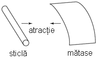
Figure 1: atracţie între două corpuri încărcate cu sarcină electrică
Sticla şi mătasea nu sunt singurele materiale ce se comportă asfel. Oricine s-a frecat vreodată de un balon din latex s-a confruntat cu exact acelaşi fenomen atunci când a observat că balonul tinde să se lipească de el/ea. Parafina şi mătasea sunt o altă pereche de materiale recunoscute de către experimentatori ca manifestând forţe de atracţie după ce au fost frecate unul de celălat:
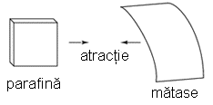
Figure 2: atracţie între două corpuri încărcate cu sarcină electrică
Acest fenomen a devenit şi mai interesant după ce a fost descoperit faptul că materiale identice, după ce au fost frecate cu un material corespunzător, se resping întotdeauna:

Figure 3: respingere între două corpuri încărcate cu sarcină electrică
A fost de asemenea observat faptul că o bucată de sticlă frecată cu mătase adusă în apropierea unei bucăţi de parafină frecată cu lână, conduce la fenomenul de atracţie dintre cele două materiale:
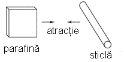
Figure 4: atracţie între două corpuri încărcate cu sarcină electrică
Mai mult decât atât, s-a descoperit că orice material care posedă proprietăţi de atracţie sau respingere după frecare, poate fi clasificat într-una din cele două categorii: atras de sticlă şi respins de parafină, sau respins de sticlă şi atras de parafină. Fie prima, fie a doua posibilitate: nu s-au găsit materiale care să fie atrase sau respinse atât de sticlă cât şi de parafină, sau care să reacţioneze faţă de una fără să reacţioneze faţă de cealaltă.
O atenţie sporită a fost îndreptată spre materialele folosite pentru frecare. S-a descoperit că după frecarea a două bucăţi de sticlă cu două bucăţi de mătase, atât bucăţile de sticlă cât şi bucăţile de mătase se resping reciproc:

Figure 5: respingere între două corpuri din materiale identice încărcate cu sarcină electrică
Acest lucru era foarte straniu. Până la urmă, niciunul dintre aceste materiale nu era vizibil modificat în urma frecării, dar cu siguranţă se comportau diferit după frecare decât înainte. Oricare ar fi fost schimbarea ce avea loc pentru a determina atracţia sau respingerea acestor materiale unul de celălalt, era una invizibilă.
Unii experimentatori au speculat existenţa „fluidelor” invizible ce se deplasează de pe un obiect pe celălalt în timpul frecării, şi că aceste „fluide” induc o forţă fizică pe o anumită distanţă. Charles Dufay a făcut parte din primii experimentatori ce au demonstrat existenţa categorică a două tipuri de schimbări ca urmare a frecării împreună dintre două tipuri de obiecte. Existenţa a mai mult de un singur tip de schimbare suferită de aceste materiale, era evidentă din faptul că rezultau două tipuri de forţe: atracţie şi respingere. Transferul ipotetic de fluid a devenit cunoscut sub numele de sarcină.
Un cercetător renumit, Benjamin Franklin, ajunge la concluzia existenţei unui singur tip de fluid ce se deplasează între obiectele frecate, şi că cele două „sarcini” diferite nu sunt decât fie un exces, fie o deficienţă din exact acelaşi fluid. Dupa ce a experimentat cu parafină şi lână, Franklin a sugerat că lâna neprelucrată transferă o parte din acest fluid invizibil de pe parafina netedă, ducând la un exces de fluid pe lână, şi un deficit de fluid pe parafină. Diferenţa rezultată de conţinut în lichid dintre cele două obiecte ar cauza prin urmare o forţă de atracţie, datorită faptului că fluidul încercă să-şi recapete echilibrul existent anterior între cele două materiale.
Postularea existenţei unui singur „fluid” ce era fie câştigat, fie pierdut în timpul frecării, se potrivea cel mai bine comportamentului observat: că toate aceste materiale se împărţeau simplu într-una din cele două categorii atunci când erau frecate, şi cel mai important, că cele două materiale active frecate unul de celălalt se încadrau întotdeauna în categorii opuse, fapt evidenţiat de atracţia inevitabilă dintre cele două materiale. În alte cuvine, nu s-a întâmplat niciodată ca două materiale frecate unul de celălalt, să devină amândouă în acelaşi timp fie pozitive, fie negative.
După speculaţiile lui Franklin legate de îndepărtarea „fluidului” de pe parafină cu ajutorul lânei, sarcina ce avea să fie asociată cu parafina frecată a devenit cunoscută sub denumirea de „negativă” (pentru presupusa deficienţă de fluid), iar tipul de sarcină asociat cu lâna frecată a devenit cunoscută ca fiind „pozitivă” (pentru presupusul exces de fluid). Această conjunctură inocentă va cauza multe bătăi de cap celor ce vor studia electricitatea în viitor!
Măsurători precise ale sarcinii electrice au fost efectuate de către fizicianul francez Charles Coulomb în anii 1780, cu ajutorul unui dispozitiv numit balanţă de torsiune, măsurând forţa generată între două obiecte încărcate din punct de vedere electric. Rezultatele muncii lui Coulomb au dus la dezvoltarea unităţii de măsură pentru sarcina electrică, şi anume coulombul. Dacă două corpuri „punctiforme” (corpuri ipotetice fără suprafaţă) sunt încărcate cu o sarcină egală de 1 coulomb şi plasate la 1 metru distanţă, ar genera o forţă de atragere (sau de respingere, în funcţie de tipul sarcinilor) de aproximativ 9 miliarde de newtoni. Definiţia operaţională a unui coulomb, ca şi unitate a sarcinii electrice (în termeni de forţă generată între cele două puncte încărcate cu sarcină electrică), s-a descoperit că este egală cu un exces sau o deficienţă de aproximativ 6.250.000.000.000.000.000 (6.25 x 1018 de electroni. Sau invers, un electron are o sarcină de aproximativ 0.00000000000000000016 coulombi (1,6 x 10-19). Prin faptul că electronul este cel mai mic purtător de sarcină electrică cunoscut, această ultimă valoare a sarcinii pentru electron a fost desemnată ca sarcina electrică elementară.
Mult mai târziu se va descoperi faptul că acest „fluid” este defapt compus din bucăţi mici de materie numite electroni, denumiţi asfel după cuvântul antic grecesc dat chihlimbarului: un alt material ce manifestă proprietăţi electrice când este frecat de lână. Experimentele realizate de atunci au relevat faptul că toate obiectele (corpurile) sunt compuse din „blocuri” extrem de mici, denumite atomi, iar aceşti atomi la rândul lor sunt compuşi din componente şi mai mici, denumite particule. Cele trei particule fundamentale regăsite în compoziţia majorităţii atomile poartă denumirea de protoni, neutroni şi electroni. Deşi majoritatea atomilor sunt o compoziţie de protoni, neutroni şi electroni, nu toţi atomii au neutroni; un exemplu este isotopul de protiu (1H1) al hidrogenului, ce reprezintă forma cea mai uşoară şi mai răspândită a hidrogenului, cu doar un singur proton şi un singur electron. Atomii sunt mult prea mici pentru a fi văzuţi, dar dacă am putea privi unul, ar arăta cam aşa:

Figure 6: structura unui atom
Chiar dacă fiecare atom dintr-un material tinde să rămână o unitate, în realitate există mult spatiu liber între electroni şi „ciorchinele” de protoni şi neutroni din mijloc
Acest model brut este cel al carbonului, cu 6 protoni, 6 neutroni şi 6 electroni. În oricare atom, protonii şi neutronii sunt foarte strâns legaţi între ei, ceea ce reprezintă o calitatea importantă. Masa strâns legată de protoni şi neutroni din centrul unui atom poartă denumirea de nucleu, iar numărul de protoni din nucleul unui atom, determină identitatea elementului: dacă schimbăm numărul protonilor din nucleul unui atom, schimbăm implicit şi tipul atomului. De fapt, dacă am putea îndepărta trei protoni din nucleul unui atom de plumb, am realiza visul etern al alchimiei, transformarea plumbului în aur. Legătura strânsă a protonilor de nucleu este responsabilă de stabilitatea elementelor chimice, şi de neputinţa alchimiştilor de a-şi îndeplini visul.
Neutronii au o influenţă mult mai mică asupra caracterului chimic şi a identităţii atomului faţă de protoni, cu toate că sunt la fel de greu de scos sau adăugat din nucleu, datorită legăturii lor puternice. În cazul adaugării sau câştigării unui neutron, atomul îşi menţine aceeiaşi identitate chimică, dar va avea loc o modificară uşoară a masei sale, şi ar putea dobândi proprietăţi nucleare ciudate precum radioactivitatea.
Totuşi, electronii posedă o libertate de mişcare în cadrul atomului semnificativ mai mare decât cea a protonilor şi neutronilor. Aceştia pot fi mutaţi de pe poziţiile lor (sau pot chiar părăsi atomul cu totul!) de o energie mult mai mică decât cea necesară îndepărtării particulelor din nucleu. Dacă se întâmplă acest lucru, atomul îşi păstrează proprietăţile sale chimice, dar apare un dezechilibru important. Electronii şi protonii sunt unici prin faptul că sunt atraşi unii de ceilalţi la distanţă. Este acea atracţie la distanţă responsabilă de atracţia în urma frecării corpurilor, unde electronii sunt îndepărtaţi de atomii lor originali şi ajung pe atomii unui alt corp.
Electronii tind să respingă alţi electroni la distanţă, precum este şi cazul protonilor cu alţi protoni. Singurul motiv pentru care protonii se atrag în nucleul atomului se datorează unei forţe mult mai puternice, numită forţa nucleară tare ce îşi face simţit efectul doar pe distanţe foarte scurte. Datorită acestui efect de atracţie/respingere între particulele individuale, spuem că electronii şi protonii au sarcini electrice opuse. Adică, fiecare electron are o sarcină negativă, şi fiecare proton are o sarcină pozitivă. În număr egal în cadrul unui atom, îşi neutralizează unul altuia prezenţa, asfel încât sarcina electrică netă a atomului este zero. De aceea imaginea atomului de carbon are şase electroni: pentru a balanse sarcina electrică a celor şase protoni din nucleu. Dacă pleacă electroni, sau vin electroni în plus, sarcina netă a atomului va suferi un dezechilibru, lăsând atomul „încârcat” în ansablu, şi ducând la interacţiunea acestuia cu particule sau alţi atomi încărcaţi din apropiere. Neutronii nu sunt nici atraşi dar nici respinşi de către electroni, protoni, sau alţi neutroni, prin urmare se spune că ei nu au sarcină electrică.
Procesul de adăugare sau de plecare a electronilor este exact ceea ce se întâmplă atunci când anumite combinaţii de materiale sunt frecate unele de celelalte: electronii din atomii unu material sunt forţaţi prin frecare să-şi părăsească atomii, şi să ajungă pe atomii unui alt material. Cu alte cuvinte, electronii reprezintă „fluidul” lui Benjamin Franklin despre care vorbeam mai sus.
Rezultatul dezechilibrului acestui „fluid” (electroni) dintre obiecte poartă numele de electricitate statică. Se numeşte „statică”, pentru că electronii mutaţi de pe un material pe altul tind să rămână staţionari. În cazul parafinei şi a lânei, s-a determinat printr-o serie de experimente, că electronii din lână sunt transferaţi pe atomii din parafină, ceea ce este exact opusul ipotezei lui Franklin! În onoarea lui Franklin, ce a desemnat sarcina parafinei ca fiind „negativă”, şi pe cea a lânei ca fiind „pozitivă”, spunem că electronii posedă o sarcină „negativă”. Asfel, un obiect a cărui atomi au primit un surplus de electron, se spune că este încărcat „negativ”, pe când un obiect a căruit atomi au pierdut electroni se spune că este încărcat „pozitiv”, cu toate că aceste denumiri sunt uşor de încurcat. În momentul în care a fost descoperită adevărata natură a „fluidului” electric, nomenclatura moştenită de la Franklin legată de sarcina electrică era prea adânc înrădăcinată ca să mai poată fi schimbată cu uşurinţă, prin urmare, a rămas la fel până în zilele noastre.
Michael Faraday a demonstrat (1832) că electricitatea statică este asemenea celei produse de o baterie sau un generator. Electricitatea statică este în mare parte o bătaie de cap. La praful de puşcă se adaugă grafit pentru prevenirea aprinderii accidentale datorită electricităţii statice. Cauzează pagube circuitelor semiconductoare. Deşi este posibilă construirea motoarelor alimentate la tensiune înaltă şi curent scăzut carcteristic electricităţii statice, nu este economic. Cele câteva aplicaţii practice ale acestui tip de electricitate sunt xerografia, filtrul de aer electrostatic, şi generatorul Van de Graaf de tensiune înaltă.
1.2 Conductori, dielectrici şi deplasarea electronilor
Electronii diferitelor tipuri de atomi posedă grade diferite de libertate. În cazul unor tipuri de materiale, precum metalele, electronii de la marginea atomilor prezintă legături atât de slabe încât se deplasează haotic în spaţiul dintre atomii materialului respectiv sub simpla influenţă a temperaturii camerei. Pentru că aceşti electroni practic nelegaţi sunt liberi să-şi părăsească atomii şi să plutească în spaţiul dintre atomii învecinaţi, sunt adesea denumiţi electroni liberi.
În alte tipuri de materiale, precum sticla, electronii atomilor au o libertate de mişcare foarte restrânsă. Chiar dacă forţe exterioare, precum frecatul fizic al materialului, poate forţa o parte din aceşti electroni să-şi părăsească atomii respectivi pentru a ajunge pe atomii unui alt material, aceştia nu se mişcă totuşi foarte uşor între atomii aceluiaşi material.
Această mobilitate a electronilor în cadrul unui material poartă numele de conductivitate. Conductivitatea este determinată de tipul atomilor existenţi într-un material (numărul protonilor din nucleul atomului determinându-i identitatea chimică) şi modul în care atomii sunt legaţi unul de celălalt. Materialele cu o mobilitate ridicată a electronilor (mulţi electroni liberi) se numesc conductoare, pe când materialele cu o mobilitate scăzută a electronilor (puţini electroni liberi sau deloc) se numesc dielectrice (materiale izolatoare).
Câteva exemple comune de conductori şi dielectrici:
Conductori:
- argint
- cupru
- aur
- aluminiu
- fier
- oţel
- alamă
- bronz
- mercur
- grafit
- apă murdară
- beton
Dielectrici:
- sticlă
- cauciuc
- ulei
- asfalt
- fibră de sticlă
- porţelan
- ceramică
- cuarţ
- bumbac (uscat)
- hârtie (uscată)
- plastic
- aer
- diamant
- apă pură
Trebuie înţeles faptul că nu toate materialele conductoare au acelaşi nivel de conductivitate, şi nu toţi dielectricii impun o rezistenţă egală mişcării electronilor. Conductivitatea electrică este analoagă transparenţei materialelor la lumină: materialele ce „conduc” cu uşurinţă lumina se numesc „transparente”, pe când cele ce nu o fac, se numesc „opace”. Dar, nu toate materialele transparent conduc lumina în aceeiaşi măsură. Sticla de geam esta mai bună decât majoritatea plasticurilor, şi cu siguranţă mai bună decăt fibra de sticlă „curată”. Acelaşi lucru este valabil şi în cazul conductorilor electrici, unii sunt mai buni decât alţii.
De exemplu, argintul este cel mai bun conductor din această listă, oferind o trecere mai uşoară electronilor precum niciun alt material enumerat nu o face. Apa murdară şi betonul sunt şi ele trecute ca şi materiale conductoare, dar acestea sunt mult sub nivelul oricăruit metal din punct de vedere al conductivităţii.
Dimensiunea fizică afectează de asemenea conductivitatea. De exemplu, dacă luăm două fâşii din acelaşi material conductiv - una subţire, alta groasă - cea groasă se va dovedi un conductor mai bun decât cea subţire la o aceeiaşi lungime. Dacă luăm o altă pereche de fâşii - de data aceasta amândouă cu aceeiaşi, dar una mai scurtă decât cealaltă - cea scurtă va oferi o trecere mai uşoară a electronilor faţă de cea lungă. Acest lucru este analog curgerii apei printr-o ţeavă: o ţeavă groasă oferă o trecere mai uşoară decât una subţire, iar o ţeavă scurtă esta mai uşor de parcurs de apă decât o ţeavă lungă, toate celelalte dimensiuni fiind egale. (Atenţie! deplasarea electronilor într-un conductor nu este analoagă curgerii apei. Electronii nu curg. Aceasta este o simplă analogie folosită pentru o mai bună înţelegere a efectelor ce au loc la trecerea curentului printr-un conductor.)
Trebuie de asemenea înţeles faptul că unele materiale îşi modifică proprietăţile electrice în diferite situaţii. De exemplu, sticla este un foarte bun dielectric la temperatura camerei ^{1}, dar devine conductoare atunci când este încălzită la o temperatură foarte înaltă. Gaze precum aerul, în mod normal materiale dielectrice, devin de asemenea conductoare atunci când sunt aduse la temperaturi foarte ridicate. Majoritatea metalelor devin conductoare mai slabe atunci când sunt încălzite, şi mai bune atunci când sunt răcite. Multe materiale conductoare devin conductoare perfecte (fenomenul poartă denumirea de supraconductivitate) la temperaturi extrem de scăzute.
Deşi în mod normal deplasarea electronilor „liberi” dintr-un conductor este aleatoare, fără vreo direcţie sau viteză particulară, electronii pot fi influenţaţi să se deplaseze într-un mod coordonat printr-un material conductiv. Această deplasare uniformă a electronilor poartă denumirea de electricitate, sau curent electric. Pentru a fi mai precişi, s-ar putea numi electricitate dinamică, în contrast cu electricitatea statică, ce reprezintă o acumulare de sarcină electrică nemişcată. Asemenea curgerii apei prin spaţiul liber al unei ţevi, electronii sunt liberi să se mişte prin spaţiul liber din interioriul şi dintre atomi unui conductor. Conductorul poate părea că este solid atunci când îl privim, dar oricare material compus în marea lui parte din atomi, este în mare parte gol! Analogia curgerii lichidului se potriveşte aşa de bine încât deplasarea electronilor printr-un conductor este adesea denumită „curgere”.
Trebuie să facem o observaţie importantă. Mişcându-se uniform printr-un conductor, fiecare electron îl împinge pe cel de lângă el, asfel încât toţi electronii se mişcă împreună precum un grup. Punctul de plecare şi cel final al mişcării unui electron printr-un conductor electric este atins practic instant, dintr-un capăt în celălalt al conductorului, chiar dacă viteza de deplasare a fiecărui electron în parte este mică. O analogie aproximativă este cea a unui tub umplut dintr-un capăt în celălalt cu mărgele:

Figure 7: analogia tubului umplut cu mărgele
Tubul este plin de mărgele, precum un conductor este plin de electroni liberi, pregătiţi să fie puşi în mişcare de o influenţă externă. Dacă o singură mărgea este introdusă brusc în acest tub plin prin partea stângă, o alta va ieşi instant pe partea cealaltă. Chiar dacă fiecare mărgea a parcurs doar o distanţă scurtă, transferul de mişcare prin tub este practic instant (din partea stângă înspre capătul din dreapta), oricât ar fi tubul de lung. În cazul electricităţii, efectul de ansamblu dintr-un capăt în celălalt al conductorului are loc la viteza luminii2. Fiecare electron în parte însă, se deplasează prin conductor la o viteza mult mai mică.
Dacă dorim ca electronii să se deplaseze pe o direcţie anume, trebuie să la punem la dispoziţie traseul respeciv, precum un instalator trebuie să instaleze conductele de apă necesare pentru aprovizionarea cu apă. În acest scop, firele sunt confecţionate din metale bune conductoarea de electricitate precum cuprul sau aluminiul, într-o mare varietatea de dimensiuni.
Ţineţi minte că electronii se pot deplasa doar atunci când au oportunitatea de a se mişca în spaţiul dintre atomii unui material. Acest lucru înseamnă că există curent electric doar acolo unde există o traiectorie continuă din material conductiv ce permite deplasarea electronilor. În analogia cu mărgelele, acestea pot fi introduse prin partea stângă a tubului (şi ieşi pe partea dreaptă), doar dacă tubul este deschis la celălalt capăt pentru a permite ieşirea mărgelelor. Dacă tubul este închis la capătul din dreapta, mărgelele se vor „aduna” în tub, iar „curgerea” lor nu va avea loc. Acelaşi lucru se poate spune despre curentul electric: curgerea continuă a curentului necesită un drum neîntrerup pentru a permite deplasarea. Putem ilustra acest lucru prin următorul desen:

Figure 8: drum electric neîntrerupt
O linie subţire, continua (precum cea de sus) reprezintă simbolul convenţional pentru o porţiune continuă de fir3 (electric). Din moment ce firul este compus din material conductiv, precum cuprul, atomii conţinuţi în acesta posedă mulţi electroni liberi ce se pot deplasa cu uşurinţă în interiorul firului. Dar, nu va exista niciodată o deplasarea continuă sau uniformă a electronilor prin acest fir dacă nu au de unde să vină şi încotro să se îndrepte. Să presupunem prin urmare o „Sursă” şi o „Destinaţie” a electronilor:
Figure 9: drum electric neîntrerupt plus sursa si destinatie
Acum, cu Sursa împingând noi electroni pe fir prin partea stângă, curgerea4 electronilor prin fir este posibilă (indicată de săgeţi). Dar, această curgere va fi întreruptă în cazul în care calea formată de firul conductor este întreruptă:
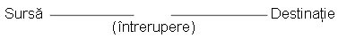
Figure 10: drum electric întrerupt
Întrucât aerul este un dielectric (material izolator), iar spaţiul dintre cele două fire este ocupat de aer, calea ce era înainte continuă, acum este întreruptă, iar electronii nu se pot deplasa de la Sursă la Destinaţie. Această situaţie este asemănătoare tăierii conductei de apă în două şi astupării celor două capete: apa nu poate curge dacă nu are pe unde să iasă din ţeavă. În termeni electrici, atunci când firul era format dintr-o singură bucată avea condiţia de continuitate electrică, iar acum, după tăierea şi separarea firului în două, acea continuitatea este întreruptă.
Dacă ar fi să luam un alt fir ce duce spre Destinaţie şi pur şi simplu am face contact fizic cu firul ce duce spre Sursă, am avea din nou o cale continuă pentru curgerea electronilor. Cele două puncte din diagramă reprezintă contactul fizic (metal-metal) dintre cele două fire:
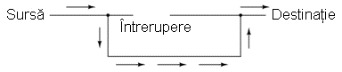
Figure 11: drum electric întrerupt, refacut cu un alt fir
Acum avem continuitate dinspre Sursă, prin noua conexiune, în jos, în dreapta, şi apoi în sus, spre Destinaţie. Acest aranjament este analog instalării unui teu într-o înstalaţie de apă pentru dirijarea apei prin această nouă ţeavă, spre destinaţie. Atenţie, segmentul de fir întrerup nu conduce curent electric pentru că nu mai face parte dintr-un drum complet de la Sursă spre Destinaţie.
Este interesant de observat că la trecerea acestui curent electric prin fir, nu apare nicio „îmătrânire” a firului, în contrast cu ţevile de apă care sunt eventual corodate în timp datorită curgerii apei. Electronii întâmpină într-adevăr un anumit grad de rezistenţă la mişcare, iar această rezistenţă generează căldură într-un conductor. Acesta este însă un topic ce-l vom discuta pe larg mai târziu.
1.3 Circuite electrice
poza\_meniu2
Poate vă întrebaţi cum este posibil ca electronii să se deplaseze continuu într-o direcţie uniformă prin fire dacă nu am lua în considerare aceste Surse şi Destinaţii ipotetice. Pentru ca aceste idealizări să funcţioneze, ambele ar trebui să posede o capacitate infinită pentru a putea susţine o curgere continuă a electronilor! Folosind analogia cu mărgelele şi tubul, sursa de mărgele şi destinaţia acestora ar trebui să fie infinit de mari pentru a conţine o cantitate suficientă de mărgele necesară „curgerii” lor continue.
Răspunsul acestui paradox se regăseşte în conceptul de circuit: o buclă continuă şi neîntreruptă pentru curgerea electronilor. Dacă luăm un fir, sau mai multe fire puse cap la cap, şi îl aranjăm sub formă de buclă, asfel încât să formeze un drum continuu, curgerea uniformă a electronilor fără ajutorul surselor şi destinaţiilor ipotetice de mai sus, este posibilă:

Figure 12: bucla - ciruit electric
În cadrul acestui circuit în sensul acelor de ceasornic, fiecare electron împinge electronul din faţa lui, ce împinge electronul din faţa lui, şi aşa mai departe, precum un circuit din mărgele. Asfel, putem susţine o deplasare continuă a electronilor fără a recurge la suresele şi destinaţiile infinite (sures teoretice). Tot ceea ce avem nevoie este prezenţa unei motivaţii pentru aceşti electroni, lucru ce-l vom discuta în următoarea secţiune din acest capitol.
Trebuie realizat faptul că este la fel de importantă continuitatea circuitului precum în cazul firului conductor analizat mai sus. La fel ca şi în acel exemplu, orice întrerupere a circuitului opreşte curgerea (deplasarea) electronilor:

Figure 13: ciruit electric întrerupt
Un principiu important de reţinut este că nu contează locul întreruperii. Orice discontinuitate din circuit va întrerupe curgerea electronilor prin întreg circuitul. O curgere continuă a electronilor prin circuit poate fi realizată doar dacă există un circuit continuu şi neîntrerupt printr-un material conductiv prin care aceştia să se poată deplasa.
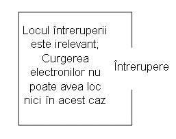
Figure 14: ciruit electric întrerupt 2
1.4 Tensiunea şi curentul
Precum am menţionat mai sus, doar un drum continuu (circuit) nu este suficient pentru a putea deplasa electronii: avem de asemenea nevoie de un mijloc de „împingere” a lor prin circuit. La fel ca mărgelele dintr-un tub sau apa dintr-o ţeavă, este nevoie de o forţă de influenţă pentru a începe curgerea. În cazul electronilor, această forţă este aceeiaşi ca şi în cazul electricităţii statice: forţa produsă de un dezechilibru de sarcină electrică.
Dacă luăm exemplul parafinei şi lânei frecate împreună, vedem că surplusul de electroni de pe parafină (sarcină negativă) şi deficitul de electroni de pe lână (sarcină pozitivă) crează un dezechilibru de sarcină între cele două. Acest dezechilibru se manifestă printr-o forţă de atracţie între cele două corpuri:

Figure 15: forţa de atracţie dintre două obiecte frecate între ele
Dacă introducem un fir conductor între cele două corpuri încărcate din punct de vedere electric, vom observa o curgere a electronilor prin acesta datorită faptului că electronii în exces din parafină trec prin fir înapoi pe lână, restabilind dezechilibrul creat:
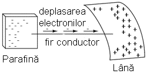
Figure 16: restabilirea echilibrului dintre doua corpuri frecate prin introducerea unui conductor electric
Dezechilibrul dintre numărul electronilor din atomii parafinei şi cei ai lânei crează o forţă între cele două materiale. Neexistând niciun drum prin care electronii se pot deplasa de pe parafină înapoi pe lână, tot ce poate face această forţă este să atrage cele două corpuri împreună. Acum că un conductor conectează cele două corpuri totuşi, această forţă va face ca electronii să se deplaseze într-o direcţie uniformă prin fir, chiar dacă numai pentru un scurt moment, până îm momentul în care sarcina electrină este neutralizată în această zona (restabilirea echilibrului), iar forţa dintre cele două materiale se reduce.
Sarcina electrică formată prin frecarea celor două materiale reprezintă stocarea unei anumite cantităţi de energie. Această energie este asemănătoare energiei înmagazinate într-un rezervor de apă aflat la înălţime, umplut cu ajutorul unei pompe dintr-un bazin aflat la un nivel mai scăzut:
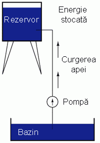
Figure 17: pomparea apei dintr-un bazin într-un rezervor
Influenţa gravitaţiei asupra apei din rezervor dă naştere unei forţe ce tinde să deplaseze apa spre nivelul inferior. Dacă construim o ţeavă de la rezervor spre bazin, apa va curge sub influenţa gravitaţiei din rezervor prin ţeavă spre bazin:

Figure 18: curgerea apei din rezervor prin ţeavă spre bazin
Este nevoie de o anumită energie pentru pomparea apei de la un nivel inferior (bazin) la unul superior (rezervor), iar curgerea apei prin ţeavă înapoi la nivelul iniţial constituie eliberarea energiei înmagazinată prin pomparea precedentă
Dacă apa este pompată la un nivel şi mai ridicat, va fi necesară o energie şi mai mare pentru realizarea acestui lucru, prin urmare, va fi înmagazinată o energie şi mai mare, şi de asemenea, va fi eliberată o energie mai mare decât în cazul precedent

Figure 19: curgerea apei din rezervor prin ţeavă spre bazin, nivele diferite de energie
Electronii nu sunt foarte diferiţi. Dacă frecăm parafina şi lâna împreună, „pompăm” electronii de pe „nivelurile” lor normale, dând naştere unei condiţii în care există o forţă între parafină şi lână, datorită faptului că electronii încearcă să-şi recâştige vechile poziţii (şi echilibru în cadrul atomilor respectivi). Forţa de atragere a electronilor spre poziţiile originale în jurul nucleelor pozitive ale atomilor, este analoagă forţei de gravitaţie excercitată asupra apei din rezervor, forţă ce tinde să tragă apa înapoi în poziţia sa originală.
La fel precum pomparea apei la un nivel mai înalt rezultă în înmagazinare de energie, „pomparea” electronilor pentru crearea unui dezechilibru de sarcină electrică duce la înmagazinare de energie prin acel dezechilibru. Asigurarea unui drum prin care electronii să poată curge înapoi spre „nivelurile” lor originale are ca rezultat o eliberare a energiei înmagainate, asemenea eliberării energiei în cazul rezervorului, atunci când este pus la dispoziţie un drum pe care apa poate să curgă prin intermediul unei ţevi.
Atunci când electronii se află într-o poziţie statică (prin analogie cu apa dintr-un rezervor), energia înmagazinată în acest caz poartă numele de energie potenţială, pentru că are posibilitatea (potenţialul) eliberării acestei energii în viitor.
Această energie potenţială, înmagazinată sub forma unui dezechilibru de sarcină electrică capabilă să provoace deplasarea electronilor printr-un conductor, poate fi exprimată printr-un termen denumit tensiune, ceea ce tehnic se traduce prin energie potenţială pe unitate de sarcină electrică, sau ceva ce un fizician ar denumi energie potenţială specifică. Definită în contextul electricităţii statice, tensiunea electrică este măsura lucrului mecanic necesar deplasării unei sarcini unitare dintr-un loc în altul acţionând împotriva forţei ce tinde să menţină sarcinile electrice în echilibru. Din punct de vedere al surselor de putere electrică, tensiunea este cantitatea de energie potenţială disponibilă pe unitate de sarcină, pentru deplasare electronilor printr-un conductor.
Deoarece tensiune este o expresie a energiei potenţiale, reprezentând posibilitatea sau potenţialul de eliberare a energiei atunci când electronii se deplasează de pe un anumit „nivel” pe un altul, aceasta are sens doar atunci când este exprimate între două puncte diferite:
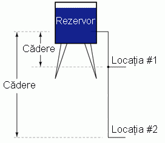
Figure 20: curgerea apei din rezervor prin ţeavă spre bazin, nivele diferite de energie
Datorită diferenţei dintre înălţimile căderilor de apă, potenţialul de energie eliberată este mai mare prin ţeava din locaţia 2 decât cea din locaţia 1. Principiul poate fi înteles intuitiv considerând aruncarea unei pietre de la o înălţime de un metru sau de la o înălţime de zece metri: care din ele va avea un impact mai puternic cu solul? Evident, căderea de la o înălţime mai mare implică eliberarea unei cantităţi mai mari de energie (un impact mai violent). Nu putem aprecia valoarea energiei înmagazinate într-un rezervor de apă prin simpla măsurare a volumului de apă: trebuie să luăm de asemenea în considerare căderea (distanţa parcursă) apei. Cantitatea de energie eliberată prin căderea unui corp depinde de distanţa dintre punctul iniţial şi cel final al corpului. În mod asemănător, energia potenţială disponibilă pentru a deplasa electronii dintr-un punct în altul depinde de aceste puncte. Prin urmare, tensiune se exprimă tot timpul ca şi o cantitate între două puncte. Este interesant de observat că modelul „căderii” unui corp de la o anumită distanţă la alta este atât de potrivit, încât de multe ori tensiune electrică dintre două puncte mai poartă numele de „cădere de tensiune”.
Tensiunea poate fi generată si prin alte mijloace decât frecare diferitelor tipuri de materiale împreună. Reacţiile chimice, energia radiantă şi influenţa magnetismului asupra conductorilor sunt câteva modalităţi prin care poate fi produsă tensiunea electrică. Ca şi exemple practice de surse de tensiune putem da bateriile, panourile solare şi generatoarele (precum „alternatorul” de sub capota automobilului). Pentru moment, nu intrăm în detalii legate de funcţionarea fiecărei dintre aceste surse - mai important acum este să înţelegem cum pot fi aplicate sursele de tensiune pentru a crea o deplasare uniformă şi continuă a electronilor prin circuit.
Să luăm pentru început simbolul bateriei electrice şi să construim apoi un circuit pas cu pas:

Figure 21: simbolul bateriei electrice
Orice sursă de tensiune, încluzând bateriile, are două puncte de contact electric. În acest caz avem punctul 1 şi punctul 2 de pe desenul de mai sus. Liniile orizontale de lungimi diferite indică faptul că această sursă de tensiune este o baterie, şi mai mult, în ce direcţia va împinge tensiunea acestei bateri electronii prin circuit. Faptul că liniile orizontale ale bateriei din simbol par să fie separate (prin urmare reprezintă o întrerupere a circuitului prin care electronii nu pot trece) nu trebuie să ne îngrijoreze: în realitate, aceste linii orizontale reprezintă plăci metalice (anod şi catod) introduse într-un lichid sau material semi-solid care nu doar conduce electronii, dar şi generează tensiunea electrică necesară împingerii lor prin circuit datorită interacţiunii acestui material cu plăcile.
Puteţi observa cele două semne „+” respectiv „-” în imediata apropiere a simbolului bateriei. Partea negativă (-) a bateriei este tot timpul cea cu liniuţă mai scurtă, iar partea pozitivă (+) a bateriei este tot timpul capătul cu liniuţa mai lungă. Din moment ce am decis să denumim electronii ca fiind încărcaţi negativ din punct de vedere electric (Benjamin Franklin), partea negativă a bateriei este acel capăt ce încearcă să împingă electronii prin circuit, iar partea pozitivă este cea care încearcă să atragă electronii.
Atunci când captele „+” şi „-” ale bateriei nu sunt conectate la un circuit, va exista o tensiune electrică între aceste două puncte, dar nu va exista o deplasare a electronilor prin baterie, pentru că nu există un drum continuu prin care electronii să se poată deplasa.

Figure 22: analogie baterie electrică - rezervor plin
Acelaşi principu se aplică şi în cazul analogiei rezervorului şi pomei de apă: fără un drum (ţeavă) înapoi spre bazin, energia înmagazinată în rezervo nu poate fi eliberată prin curgerea apei. Odată ce rezervol este umplut complet, nu mai are loc nicio curgere, oricât de multă presiune ar genera pompa. Trebuie să există un drum complet (circuit) pentru ca apa să curgă continuu dinspre bazin spre rezervor şi înapoi în bazin.
Putem asigura un asfel de drum pentru baterie prin conectarea unui for dintr-un capăt al bateriei spre celălalt. Formând un circuit cu ajutorul unei bucle din material conductor, vom iniţia o deplasare continuă a electronilor în direcţia acelor de ceasornic (în acest caz particular):
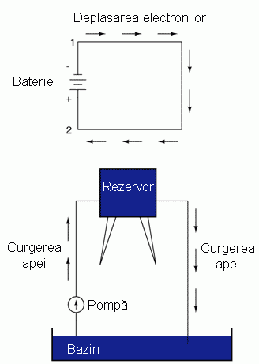
Figure 23: deplasarea electronilor printr-un cicruit închis alimentate de o baterie electrică
Atâta timp cât bateria va continua să producă tensiune electrică, iar continuitatea circuitului electric nu este întreruptă, electronii vor continua să se deplaseze în circuit. Continuând cu analogia apei printr-o ţeavă, această curgere continuă şi uniformă de electroni prin circuit poartă numele de curent. Atâta timp cât sursa de tensiune electrică continuă să „împingă” în aceeiaşi direcţie, electronii vor continua să se deplaseze în aceeiaşi direcţie prin circuit. Această curgere uni-direcţională a electronilor prin circuit poartă numele de curent continuu, prescurtat cc. În următorul volum din această serie vom analiza circuitele electrice în care deplasearea electronilor are loc alternativ în ambele direcţii: curent alternativ, prescurtat ac. Dar pentru moment, vom discuta doar despre circuite de curent continuu
Curentul electric fiind compus din electroni individuali ce se deplasează la unison printr-un conductor împingând electronii de lângă ei, precum mărgelele dintr-un tub sau apa dintr-o ţeavă, cantitatea deplasată în oricare punct din circuit este aceeiaşi. Dacă ar fi să monitorizăm o secţiune transversală dintr-un fir într-un singur circuit, numărând electronii ce trec prin ea, am observa exact aceeiaşi cantitate în unitate de timp în oricare parte a circuitului, indiferent de lungimea sau diametrul conductorului.
Dacă întrerupem continuitatea circuitului în oricare punct, curentul electric se va întrerupe în întreg circuitul, iar întreaga tensiune electrică produsă de baterie se va regăsi acum la capetele firelor întrerupte, ce erau înainte conectate:
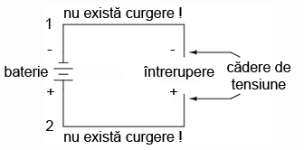
Figure 24: întreruperea circuitului electric
Observaţi semnele „+” şi „-” puse la capătul firelor unde a fost realizată întreruperea circuitului, şi faptul că ele corespund celor două semne „+” şi „-” adiacente capetelor bateriei. Aceste semne indică direcţia pe care tensiunea electrică o imprimă curgerii electronilor, acea direcţie potenţială ce poartă denumirea de polaritate. Ţineţi minte că tensiunea electrică se măsoară tot timpul între două puncte. Din acest motiv, polaritatea unei căderi de tensiune depinde de asemenea de cele două puncte: faptul că un punct din circuit este notat cu „+” sau „-” depinde de celălalt capăt la care face referire. Să ne uităm la următorul circuit, în care fiecare colţ al circuitului este marcat printr-un număr de referinţă:

Figure 25: circuit electric - compararea polaritătii în functie de locaţie
Continuitatea circuitului fiind întreruptă între punctele 2 şi 3, polaritatea căderii de tensiune între punctele 2 şi 3 este „-” pentru punctul 2 şi „+” pentru punctul 3. Polaritatea bateriei (1 „-” şi 4 „+”) încearcă împingerea electronilor prin circuit în sensul acelor de ceasornic din punctul 1 spre 2, 3, 4 şi înapoi la 1.
Să vedem acum ce se întâmplă dacă conectăm punctele 2 şi 3 din nou împreună, dar efectuăm o înrerupere a circuitului între punctele 3 şi 4:

Figure 26: circuit electric - compararea polaritătii în functie de locaţie - locaţie nouă
Întreruperea fiind acum între punctele 3 şi 4, polaritatea căderii de tensiune între acest două puncte este „+” pentru 4 şi „-” pentru 3. Observaţi cu atenţie faptul că semnul punctului 3 este diferit faţă de primul exemplu, acolo unde întreruperea a fost între punctele 2 şi 3 (3 a fost notat cu „+”). Este imposibil de precizat ce semn va avea punctul 3 în acest circuit, fie „+” fie „-”, deoarece polaritate, la fel ca tensiune, nu reprezintă o caracteristică a unui singur punct, ci depinde tot timpul de două puncte distincte!
1.5 Rezistenţa
Circuitele prezentate în capitolele precedente nu sunt foarte practice. De fapt, este chiar periculos (conectarea directă a polilor unei surse de tensiune electrică cu un singur fir conductor). Motivul pentru care acest lucru este periculos se datorează amplitudinii (mărimii) curentului electric ce poate atinge valori foarte mari într-un astfel de scurt circuit, iar eliberarea energiei extrem de dramatică (de obicei sub formă de căldură). Uzual, circuitele electrice sunt construite pentru a folosi energia eliberată într-un mod practic, cât mai în siguranţă posibil.
O folosire practică si populară a curentului electric este iluminarea electrică (artificială). Cea mai simplă formă a lămpii electrice îl reprezintă un „filament” întrodus într-un balon transparent de sticlă ce dă o lumină albă-caldă („incandescenţă”) atunci când este parcurs de suficient curent electric. Ca şi bateria, are două puncte de contact electric, unul pentru intrarea electronilor, celălalt pentru ieşirea lor.
Conectată la o sursă de tensiune, o lampă electrică arată asfel într-un circuit:
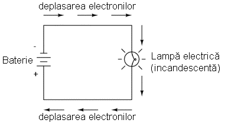
Figure 27: circuit electric simplu - baterie plus lampă electrică (bec)
Atunci când electroni ajung la filamentul din material conductor subţire al lămpii, întâmpină o rezistenţă mult mai mare la deplasare faţă de cea întâmpinată în mod normal în fir. Această opoziţie a trecerii curentului electric depinde de tipul de material, aria secţiunii transversale şi temperatura acestuia. Termenul tehnic ce desemnează această opoziţie se numeşte rezistenţă. (Spunem că dielectricii au o rezistenţă foarte mare şi conductorii o rezistenţă mică). Rolul acestei rezistenţe este de limitare a curentului electric prin circuit dată fiind valoarea tensiunii produsă de baterie, prin comparaţie cu „scurt circuitul” în care nu am avut decât un simplu fir conectat între cele două capete (tehnic, borne) ale sursei de tensiune (baterie).
Atunci când electronii se deplasează împotriva rezistenţei se generează „frecare”. La fel ca în cazul frecării mecanice, şi cea produsă de curgerea electronilor împotriva unei rezistenţe se manifestă sub formă de căldură. Rezultatul concentrării rezistenţei filamentului lămpii pe o suprafaţă restrânsă este disiparea unei cantităti relativ mari de energie sub formă de căldură, energie necesară pentru „aprinderea” filamentului, ce produce asfel lumină, în timp ce firele care realizează conexiunea lămpii la baterie (de o rezistenţă mult mai mică) abia dacă se încălzesc în timpul conducerii curentului electric.
Ca şi în cazul scurt circuitului, dacă continuitatea circuitului este întreruptă în oricare punct, curgerea electronilor va înceta prin întreg circuitul. Cu o lampă conectată la acest circuit, acest lucru înseamnă ca această va înceta să mai lumineze:

Figure 28: circuit electric simplu - baterie plus lampă electrică - întreruperea circuitului
Ca şi înainte, fără existenţa curentului (curgerii electronilor), întregul potenţial (tensiune) al bateriei este disponibil în locul întreruperii, aşteptând ca o conexiune să „astupe” întreruperea permiţând din nou curgerea electronilor. Această situaţie este cunoscută sub denumirea de circuit deschis, o întrerupere a continuităţii circuitului ce întrerupe curentul peste tot. Este suficientă o singură „deschidere” a circuitului pentru a întrerupe curentul electric în întreg circuitul. După ce toate întreruperile au fost „astupate” iar continuitatea circuitului restabilită, acum circuitul poate fi denumit circuit închis
Ceea ce observăm aici se regăseşte în principiul pornirii şi opririi lămpilor prin intermediul unui întrerupător. Deoarece orice întrerupere în continuitatea circuitului rezultă în oprirea curentului în întreg circuitul, putem folosi un dispozitiv creat exact pentru acest scop, denumit întrerupător, montat într-o locaţie oarecare, dar asfel încât să putem controla deplasarea electronilor prin circuit:

Figure 29: circuit electric simplu plus întrerupător
Acesta este modul în care o întrerupătorul poate controla becul din cameră. Întrerupătorul însăşi constă dintr-o pereche de contacte metalice acţionate de un buton sau de un braţ mecanic. Când contactele se ating, electronii se vor deplasa dintr-un capăt în celălalt al circuitului iar continuitatea acestuia este restabilită; când contactele sunt separate, curgerea electronilor este întreruptă de către izolaţia dintre contacte reprezentată în acest caz de aer, iar continuitatea circuitului este întreruptă
Probabil că cel mai bun întrerupător pentru ilustrarea principiului de bază este un întrerupător de tip „cuţit”:

Figure 30: întrerupător tip cuţit cu un contact
Un întrerupător de tip „cuţit” nu este altceva decât dintr-un braţ mecanic ce poate pivota liber în jurul unei balamale (punct fix), ce vine în contact fizic cu unul sau mai multe contacte fixe ce sunt de asemenea conductive. Întrerupătorul de mai sus este construit pe o bază de porţelan (un material izolator excelent), folosind cupru (un excelent conductor) pentru construcţia contactelor şi a „lamei”. Mânerul este din plastic pentru a izola mâna operatorului de lama conductoare atunci când se efectuează operaţiile de închidere şi deschidere.
Un alt tip de întrerupător cuţit este format din două contacte staţionare în loc de unul:
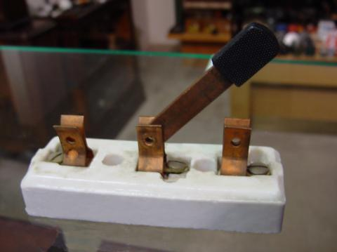
Figure 31: întrerupător tip cuţit cu două contacte
Acest întrerupător are o singură lamă dar două contacte staţionare, ceea ce înseamnă ca poate închide sau deschide mai mult de un singur circuit. Pentru acum, acest lucru nu este foarte important, doar conceptul de bază a ceea ce este un întrerupător şi modul său de funcţionare.
Întrerupătoarele cuţit sunt excelente pentru ilustrarea principiilor de bază în funcţionarea întrerupătoarelor, dar prezintă probleme distincte de siguranţă atunci când sunt folosite în circuitele electrice de putere înaltă. Conductoarele vizibile fac posibilă atingerea accidentală a lor, iar orice scânteie ce poate apărea între contactele staţionare şi lama aflată în mişcare riscă să aprindă materialele inflamabile aflate în apropiere. Contactele majorităţii întrerupătoarelor moderne sunt închise într-o carcasă izolatoare pentru evitarea acestor pericole. Poza de mai jos prezintă câteva modele de înterupătoare moderne:
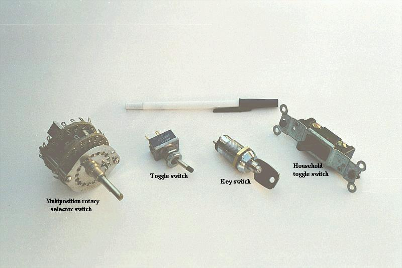
Figure 32: întrerupătoare moderne
Folisind în continuare terminologia circuitelor electrice, un întrerupător ce realizează contactul între cei doi terminali ai săi (ex.: întrerupătorul cuţin cu lama ce atinge contactul staţionar) crează continuitate pentru curgerea electronilor prin acesta, şi este denumit un întrerupător închis. Analog, un întrerupător ce crează o discontinuitate (ex.: întrerupătorul cuţit cu lama îndepărtată de contactul staţionar) nu va permite electronilor să treacă, şi se numeşte un întrerupător deschis.
1.6 Tensiune şi curent într-un circuit practic
Deoarece este nevoie de energie pentru a forţa electronii să se deplaseze împotriva opoziţiei unei rezistenţe, va exista întotdeauna o tensiune electrică între oricare două puncte ale unui circuit ce posedă rezistenţă. Este important de ţinut minte că, deşi cantitatea de curent (cantitatea de electroni ce se deplasează într-un anumit loc în fiecare secundă) este uniformă într-un circuit simplu, cantitatea de tensiune electrică (energia potenţială pe unitate de sarcină) între diferite seturi de puncte dintr-un singur circuit poate varia considerabil:
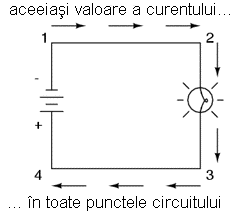
Figure 33: curentul este acelaşi în oricare punct al unui circuit electric simplu
Să luăm acest circuit ca şi exemplu. Dacă luăm patru puncte din acest circuit (1, 2, 3 şi 4), vom descoperi că valoarea curentului ce trece prin fir între punctele 1 şi 2 este exact aceeiaşi cu valoarea curentului ce trece prin bec între punctele 2 şi 3. Aceeiaşi cantitate de curent trece prin fir şi între punctele 3 şi 4, precum şi prin baterie între punctele 1 şi 4.
Dar, vom descoperi că tensiunea ce apare între oricare două puncte din acest circuit, este direct proporţională cu rezistenţa prezentă între cele două puncte, atunci când curentul este acelaşi în întreg circuit (în acest caz, el este). Într-un circuit normal precum cel de mai sus, rezistenţa becului va fi mult mai mare decât rezistenţa firelor conductoare, prin urmare ar trebui să vedem o cantitate substanţială de tensiune între punctele 2 şi 3, şi foarte puţină între punctele 1 şi 2, sau între 3 şi 4. Desigur, tensiunea dintre punctele 1 şi 4 va fi întreaga „forţă” oferită de baterie, şi va fi doar cu foarte puţin mai mare decât tensiune dintre punctele 2 şi 3 (bec).
Putem aduce din nou în discuţie analogia rezervorului de apă:
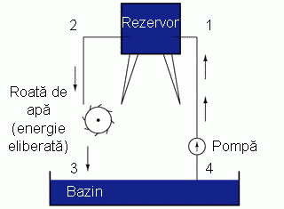
Figure 34: analogia rezervorului de apă - folosirea energiei eliberate pentru punerea în mişcare a unei roţi de apă
Între punctele 2 şi 3, acolo unde apa ce cade eliberează energie asupra roţii, există o diferenţă de presiune, reflectând opoziţia roţii la trecerea apei. Din punctul 1 în punctul 2, sau din punctul 3 la punctul 4, acolo unde apa curge liberă prin rezervor şi bazin întâmpinând o rezistenţă extrem de scăzută, nu există o diferenţă de presiune (nu există energie potenţială). Totuşi, rata de curgere a apei prin acest sistem continuu este aceeiaşi peste tot (presupunând că nivelul apei din rezervor şi bazin nu se schimbă): prin pompă, prin roată şi prin toate ţevile. Acelaşi lucru este valabil şi în cazul circuitelor electrice simple: rata de curgere a electronilor este aceeiaşi în oricare punct al circuitului, cu toate că tensiunile pot varia între diferite seturi de puncte.
1.7 Sensul convenţional şi sensul real de deplasare al electronilor
„Cel mai frumos lucru legat de standarde este că există atât de multe din care putem alege” Andrew S. Tanenbaum, profesor de informatică
Când Benjamin Franklin a presupus direcţia de curgere a sarcinii electrice (de pe parafină spre lână), a creat un precedent în notaţiile electrice ce există până în zielele noastre, în ciuda faptului că acum se ştie că electronii sunt purtătorii de sarcină electrică, şi că aceştia se deplasează de pe lână pe parafină - nu invers - atunci când aceste două materiale sunt frecate unul de celalalt. Din această cauză spunem că electronii posedă o sarcină negativă: deoarece Franklin a presupus că sarcina electrică se deplasează în direcţia contrară faţă de cea reală. Prin urmare, obiectele pe care el le-a numit „negative” (reprezentând un deficit de sarcină) au defapt un surplus de electroni.
În momentul în care a fost descoperita adevărata direcţie de deplasare a electronilor, nomenclatura „pozitiv” şi „negativ” era atât de bine stabilită în comunitatea ştiinţifică încât nu a fost făcut niciun efor spre modificarea ei, deşi numirea electronilor „pozitivi” ar fi mult mai potrivită ca şi purtători de sarcină în „exces”. Trebuie să realizăm că termenii de „pozitiv” şi „negativ” sunt invenţii ale oamenilor, şi nu au nici cea mai mică însemnătate dincolo de convenţiile noastre de limbaj şi descriere ştiinţifică. Franklin s-ar fi putut foarte bine referi la un surplus de sarcină cu termenul „negru” şi o deficienţă cu termenul „alb” (sau chiar invers), caz în care oamenii de ştiinţă ar considera acum electronii ca având o sarcină „albă” (sau „neagră”, în funcţie de alegerea făcută iniţial).
Datorită faptului că tindem să asociem termenul de „pozitiv” cu un „surplus”, şi termenul „negativ” cu o „deficienţă”, standardul tehnic pentru denumirea sarcinii electronilor pare să fie chiar invers. Datorită acestui lucru, mulţi ingineri se decid să menţină vechiul concept al electricităţii, unde „pozitiv” înseamnă un surplus de sarcină, şi notează curgerea curentului în acest fel. Această notaţie a devenit cunoscută sub denumirea de sensul convenţional de deplasare al electronilor:
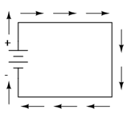
Figure 35: sensul convenţional de deplasare al electronilor
Alţii aleg să descrie deplasarea sarcinii exact aşa cum se realizează ea din punct de vedere fizic într-un circuit. Această notaţia a devenit cunoscută sub numele de sensul real de deplasare al electronilor:
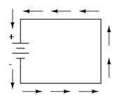
Figure 36: sensul real de deplasare al electronilor
În cazul sensului convenţional de deplasare al electronilor, deplasarea sarcinii electrice este indicată prin denumirile (tehnic incorecte) de + şi -. În acest fel aceste denumiri au sens, dar direcţia de deplasare a sarcinii este incorectă. În cazul sensului real de deplasare al electronilor, urmărim deplasarea reală a electronilor prin circuit, dar denumirile de + şi - sunt puse invers. Contează chiar aşa de mult modul în care punem aceste etichete într-un circuit? Nu, atâta timp cât folosim aceeiaşi notaţie peste tot. Putem folosi direcţia imaginată de Franklin a curgerii electronilor (convenţională) sau cea efectivă (reală) cu aceleaşi rezultate din punct de vedere al analizei circuitului. Conceptele de tensiune, curent, rezistenţă, continuitate şi chiar elemente matematice precum „Legea lui Ohm” (Capitolul 2) sau „Legile lui Kirchhoff” (Capitolul 6) sunt la fel de valide oricare notaţie am folosi-o.
Notaţia convenţională este folosită de majoritatea inginerilor şi ilustrată în majoritatea cărţilor de inginerie. Notaţia reală este cel mai adeasea întâlnita în textele introductive (aceste, de exemplu) şi în scrierile oamenilor de ştiinţă, în special în cazul celor ce studiază fizica materialelor solide pentru că ei sunt interesaţi de deplasarea reală a electronilor în substanţe. Aceste preferinţe sunt culturale, în sensul că unele grupuri de oameni au găsit avantaje notării curgerii curentului fie real fie convenţional. Prin faptul că majoritatea analizelor circuitelor electrice nu depinde de o descriere exactă din punct de vedere tehnic a deplasării electronilor, alegerea dintre cele două notaţii este (aproape) arbitrară.
Multe dispozitive electrice suportă curenţi electrici în ambele direcţii fără nicio diferenţă de funcţionare. Becurile cu incandescenţă, de exemplu, produc lumină cu aceeiaşi eficienţa indiferent de sensul de parcurgere al curentului prin ele. Funcţionează chiar foarte bine în curent alternativ (ca), acolo unde direcţia se modifică rapid în timp. Conductorii şi întrerupătoarele sunt de asemenea exemple din această categorie. Termenul tehnic pentru această „indiferenţă” la curgere este de dispozitive nepolarizate. Invers, orice dispozitive ce funcţionează diferit în funcţie de direcţie curentului se numesc dispozitive polarizate.
Există multe asfel de dispozitive polarizate folosite în circuitele electrice. Multe dintre ele sunt realizate din substanţe denumite semiconductoare, şi prin urmare nu le vom studia decât în al treilea volum din această carte. Ca şi în cazul întrerupătoarelor, becurilor sau bateriilor, fiecare din aceste dispozitive este reprezentat grafic de un simbol unic. Simbolurile dispozitivelor polarizate conţin de obicei o săgeată, undeva în reprezentarea lor, pentru a desemna sensul preferat sau unic al direcţiei curentului. În acest caz, notaţia convenţională şi cea reală contează cu adevărat. Deoarece inginerii din trecut au adoptat notaţia convenţională ca şi standard, şi pentru că inginerii sunt cei care au inventat dispozitivele electrice şi simbolurile lor, săgeţile folosit în aceste reprezentări, indică toate în sensul convenţional de deplasare al electronilor, şi nu în cel real. Ce vrem să spunem este că toate aceste dispozitive nu indică în simbolurile lor deplasarea reală a electronilor prin ele.
Probabil că cel mai bun exemplu de dispozitiv polarizat o reprezintă dioda.O diodă este o „valvă” electrică cu sens unic. Ideal, dioda oferă deplasare liberă electronilor într-o singură direcţie (rezistenţa foarte mică), dar prevină deplasarea electronilor în direcţia opusă (rezistenţă infinită). Simbolul folosit este acesta:

Figure 37: simbolul diodei
Introdusă într-un circuit cu o baterie şi un bec, se comportă asfel5:

Figure 38: funcţionarea diodei
Când dioda este plasată în direcţia curgerii curentului, becul se aprinde. Altfel dioda blochează curgerea electronilor precum oricare altă întrerupere din circuit, iar becul nu va lumina.
Dacă folosim notaţia convenţională, săgeata diodei este foarte uşor de înţeles: triunghiul este aşezat în direcţia de curgere a curentului, de la pozitiv spre negativ:

Figure 39: sensul curentului prin diodă folosind notaţia convenţională
Pe de altă parte, dacă folosim notaţia reală de deplasare a electronilor prin circuit, săgeata diodei pare aşezată invers:

Figure 40: sensul curentului prin diodă folosind notaţia reală
Din acest motiv simplu, mulţi oameni tind să folosească notaţia convenţională atunci când reprezinţă direcţia sarcinii electrice prin circuit. Dispozitivele semiconductoare precum diodele sunt mai uşor de înţeles asfel în cadrul unui circuit. Totuşi, unii aleg să folosească notaţia reală pentru a nu trebui să-şi reamintească lor însuşi de fiecare data faptul că electronic se deplasează de fapt în direcţia opusă, atunci când această direcţie de deplasare devine importantă dintr-un oarecare motiv.
Pentru restul cărţii se va folosi notaţia reală de deplasare a electronilor.
2 Legea lui ohm
2.1 Relaţia dintre tensiune, curent şi rezistenţă
Un circuit electric este format atunci când este construit un drum prin care electronii se pot deplasa continuu. Această mişcare continuă de electroni prin firele unui circuit poartă numele curent, şi adeseori este denimită „curgere”, la fel precum curgerea lichidului dintr-o ţeavă.
Forţa ce menţine „curgerea” electronilor prin circuit poartă numele de tensiune. Tensiunea este o mărime specifică a energiei potenţiale ce este tot timpul relativă între două puncte. Atunci când vorbim despre o anumită cantitate de tensiune prezentă într-un circuit, ne referim la cantiatea de energie potenţială existentă pentru deplasarea electronilor dintr-un punct al circuitului într-altul. Fără a face referinţa la două puncte distincte, termenul de „tensiune” nu are sens.
Electronii liberi tind să se deplaseze prin conductoare cu o anumită rezistenţă sau opoziţie la mişcare din partea acestora. Această opoziţia poartă numele de rezistenţă. Cantitatea de curent disponibilă într-un circuit depinde de cantitatea de tensiune disponibilă pentru a împinge electronii, dar şi de cantitatea de rezistenţă prezentă în circuit. Ca şi în cazul tensiunii, rezistenţa este o cantitate ce se măsoară între două puncte distincte. Din acest motiv, se folosesc termenii de „între” sau „la bornele” cand vorbim de tensiunea sau rezistenţă dintre două puncte ale unui circuit.
Pentru a putea vorbi concret despre valorile acestor mărimi într-un circuit, trebuie să putem descrie aceste cantităţi în acelaşi mod în care măsurăm temperatura, masa, distanţă sau oricare altă mărime fizică. Pentru masă, putem folosi „kilogramul” sau „gramul”. Pentru temperatură, putem folosi grade Fahrenheit sau grade Celsius. În următorul tabel avem unităţile de măsură standard pentru curentul electric, tensiune electrică şi rezistenţă:
| Mărime | Simbol | Unitate de măsură | Prescurtare |
|---|---|---|---|
| Curent | I | Amper | A |
| Tensiune | E sau V | Volt | V |
| Rezistenţă | R | Ohm | Ω |
„Simbolul” pentru fiecare mărime este litera din alfabet folosită pentru reprezentarea mărimii respective într-o ecuaţie algebrică. Asfel de litere standard sunt folosite adesea în discipline precum fizica şi ingineria, şi sunt recunoscute la nivel internaţional. „Unitatea de măsură” pentru fiecare cantitate reprezintă simbolul alfabetic folosit pentru a prescurta notaţia respectivei unităţi de măsură.
Fiecare unitate de măsură poartă numele unei personalităţi importante din domeniul electricităţii: amper-ul după Andre M. Ampere, volt-ul după Alessandro Volta, şi ohm-ul după Georg Simon Ohm.
Toate aceste valori sunt exprimate cu litere de tipar, exceptând cazurile în care o mărime (în special tensiunea sau curentul) este exprimată în funcţie de o durată scurtă de timp (numită valoarea „instantanee”). De exemplu, tensiunea unei baterii, fiind stabilă pe o perioadă lungă de timp, va fi simbolizată prin „E”, pe când tensiunea maximă atinsă de un fulger în momentul lovirii unei linii electrice va fi simbolizată cu litere mici, „e” (sau „v”) pentru a desemna această valoara ca existantă într-un anumit moment în timp. Aceeiaşi convenţie se foloseşte şi în cazul curentului, litera „i” fiind folosită pentru a reprezenta curentul instantaneu. Majoritatea mărimilor din curent continuu, fiind constante de-a lungul timpului, vor fi simbolizate cu litere mari (de tipar).
O mărime de bază în măsurătorile electrice, predată adesea la începutul cursurilor de electronică dar nefolosită mai târziu, este coulomb-ul, mărimea sarcinii electrice proporţională cu numărul de electroni în stare de dezechilibru. O sarcină de un coulomb este egală cu 6,25x1018 electroni. Simbolul mărimii sarcinii electrice este litera „Q”, iar unitatea de măsura, coulombul, este abreviata prin „C”. Vedem prin urmare faptul că unitate de măsură pentru deplasarea electronilor, amperul, este egal cu o cantitate de electroni egală cu 1 coulomb ce se deplasează printr-un punct al circuitului într-un interval de 1 secundă. Pe scurt, curentul este gradul de deplasare al sarcinii electrice printr-un conductor.
După cum am mai spus, tensiunea este mărimea energiei potenţiale pe unitatea de sarcină disponibilă pentru motivarea electronilor dintr-un punct în altul. Înainte de a putea da o definiţie exactă a „volt”-ului, trebuie să înţelegem cum putem măsura această cantitate pe care o numim „energie potenţială”. Unitatea generală pentru orice tip de energie este joule-ul, egal cu lucrul mecanic efectuat de o forţă de 1 newton pentru a deplasa un corp pe o distanţă de 1 metru. Definit prin aceşti termeni ştiinţifici, 1 volt este egal cu o energie electrică potenţială de 1 joule pe (împărţit la) o sarcină electrică de 1 coulomb. Asfel, o baterie de 9 volţi eliberează o energie de 9 jouli pentru fiecare coulomb de electroni ce se deplasează prin circuit.
Aceste simboluri şi unităţi pentru mărimile electrice vor fi foarte importante atunci atunci când vom începe să folosim relaţiile dintre ele în cadrul circuitelor. Prima, şi poate cea mai importantă, este relaţia dintre curent, tensiune şi rezistenţă, legea lui Ohm, descoperită de Georg Simon Ohm şi publicată în 1827 în lucrarea Die galvanishe Kette, mathematisch berabeitet (Analiza matematică a circuitului galvanic). Principala descoperire a lui Ohm a fost că, cantitatea de curent printr-un conductor metalic într-un circuit este direct proporţională cu tensiunea aplica asupra sa, oricare ar fi temperatura, lucru exprimat printr-o ecuaţie simplă ce descrie relaţie dintre tensiune, curent şi rezistenţă:

Figure 41: formulă matematică
În această expresie algebrică, tensiunea(E) este egală cu, curentul(I) înmulţit cu rezistenţa(R). Această formulă poate fi rescrisă sub următoarele forme, în funcţie de I:
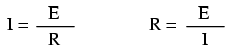
Figure 42: formulă matematică
Să folosim acum aceste ecuaţii pentru a analiza circuitele simple:
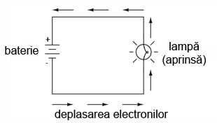
Figure 43: circuit simplu: baterie plus bec
În circuitul de mai sus, există doar o singură sursă de tensiune (bateria), şi doar o singură rezistenţă (becul, neglijând rezistenţa datorată conductorilor). În această situaţie legea lui Ohm se poate aplica foarte uşor. În cazul în care cunoaştem două din cele trei variabile (tensiune, curent şi rezistenţă) din acest circuit, putem folosi legea lui Ohm pentru determinarea celei de a treia.
În acest prim exemplu, vom calcula cantitatea de curent (I) dintr-un circuit, atunci când cunoaştem valorile tensiunii (E) şi a rezistenţei (R):

Figure 44: aflarea curentului într-un circuit simplu, atunci când cunoaştem tensiunea şi rezistenţa folosind legea lui Ohm
Care este valoarea curentului (I) din acest circuit?

Figure 45: calcule matematice
În al doilea exemplu, vom calcula valoarea rezistenţei (R) într-un circuit, atunci când cunoaştem valorile tensiunii (E) şi a curentului (I):
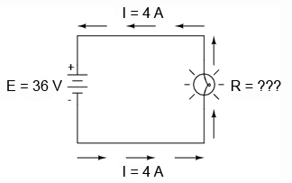
Figure 46: aflarea rezistenţei într-un circuit simplu, atunci când cunoaştem tensiunea şi curentul folosind legea lui Ohm
Care este valoarea rezistenţei becului în acest caz?
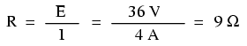
Figure 47: calcule matematice
În ultimul exemplu, vom calcula valoarea tensiunii generate de baterie (E), atunci când cunoaştem valoarea curentului (I) şi a rezistenţei (R):

Figure 48: aflarea tensiunii generate de baterie într-un circuit simplu, atunci când cunoaştem rezistenţa şi curentul folosind legea lui Ohm
Care este valoarea tensiunii generate de baterie?

Figure 49: calcule matematice
2.2 Puterea în circuitele electrice
Pe lângă tensiune şi curent, mai există o altă mărime a activităţii electronilor liberi din circuit: puterea. În primul rând trebuie să înţelegem ce este puterea, înainte de a o analiza într-un circuit
Puterea este mărimea lucrului mecanic ce poate fi efectuat într-o anumită perioadă de timp. Puterea este de obicei definită ca şi ridicarea unui corp (grutăţi) atunci când asupra acestuia acţionează forţa gravitaţiei. Cu cât corpul este mai greu şi/sau cu cât este ridicat la o înălţime mai mare, cu atât a fost efectuat mai mult lucru. Puterea măsoară cât de rapid a fost efectuată o cantitate standard de lucru.
În cazul automobilelor, puterea unui motor este dată în „cai putere”, termen inventat iniţial de producătorii motoarelor cu aburi ca şi mijloc de cuantificare a abilităţii maşinilor lor de a efectua lucru mecanic în relaţia cu cea mai utilizată sursă de putere din acele vremuri: calul. Puterea unui motor de automobil nu indică mărimea dealului ce-l poate urca sau ce greutate poate transporta, ci indică cât de repede poate urca un anumit deal sau trage o anumită greutate.
Puterea unui motor mecanic depinde atât de viteza motorului cât şi de cuplul ce se regăseşte pe arbore. Viteza arborelui unui motor se măsoară în rotaţii pe minut, sau r.p.m. Cuplul este cantitatea de forţă de torsiune produsă de motor şi se măsoară în Newton-metru (Nm). Dar nici viteza nici cuplul nu măsoară puterea unui motor.
Un motor diesel de tractor de 100 de cai putere, are o viteză de rotaţie mică, dar un cuplu mare. Um motor de motocicletă de 100 de cai putere, are o viteză de rotaţie foarte mare, dar un cuplu mic. Ambele produc 100 de cai putere, dar la viteze şi cupluri diferite. Ecuaţia pentru calcului cailor putere (CP) este simplă:

Figure 50: formulă matematică
unde,
- S = viteza arborelui în r.p.m.
- T = cuplul arborelui în Nm
- π = 3.14 (constanta pi)
Putem observa că există doar două variabile în partea dreaptă a ecuaţiei, S şi T. Toţi ceilalţi termeni sunt constanţi: 2, π şi 5252, toate sunt constante (nu îşi modifică valoarea în funcţie de timp sau de situaţie). CP (cal putere) variază doar atunci când variază fie viteza fie cuplul şi nimic altceva. Putem rescrie ecuaţia pentru a arăta această relaţie:
Figure 51: formulă matematică
unde,
- ∝ înseamnă direct proporţional (adesea prescurtat d.p.)
- S şi T au semnificaţiile de mai sus
Doarece unitatea de măsură „cal putere” nu coincide exact cu viteza în rotaţii pe minut înmulţită cu cuplul în Newton-metru, nu putem spune că acesta este egal cu ST. Cu toate aceastea, „calul putere” este proporţional cu ST. Valoarea calului putere se va modifica în aceeiaşi proporţie cu produsul ST (atunci când acesta variază).
Pentru circuitele electrice, puterea este o funcţie (depinde) de curent şi tensiune. Nu este surprinzător faptul că această relaţie seamănă izbitor cu formula „proporţională” a calului putere de mai sus:

Figure 52: formulă matematică
Totuşi, în acest caz, puterea (P) este exact egală curentului (I) înmulţit cu tensiunea (E), şi nu este doar proporţională cu aceast produs (IE). Când folosim această formulă, unitatea de măsură pentru putere este watt-ul, prescurtat prin litera „W”.
Trebuie înţeles faptul că nici tensiunea nici curentul nu înseamnă putere ele însele. Puterea este combinaţia celor două într-un circuit. Reţineţi că tensiunea este lucrul specific (sau energia potenţială) pe unitate de sarcină, în timp ce curentul este rata de deplasare a sarcinilor electrice printr-un conductor. Tensiunea (lucrul specific) este analog lucrului efectuat în ridicarea unei greutăţi atunci când asupra acesteia acţionează forţa gravitaţiei. Curentul (rata) este analog vitezei de ridicare a greutăţii respective. Împreună ca şi produs (înmulţire), tensiunea (lucru) şi curentul (rata) constituie puterea.
La fel ca în cazul unui motor diesel de tractor şi un motor de motocicletă, un circuit cu o tensiune mare şi curent scăzut, poate disipa aceeiaşi putere precum un circuit cu o tensiune scăzută şi curent mare. Nici valoarea tensiunii şi nici cea a curentului, nu pot să indice singure cantitatea de putere prezentă într-un circuit.
Într-un circuit deschis, acolo unde tensiunea este prezentă între bornele sursei iar curentul este zero, puterea disipată este şi ea egală cu zero, oricât de mare ar fi tensiunea. Din moment ce P=IE şi I=0, şi înmulţirea cu zero are ca şi rezultat tot timpul zero, înseamnă că şi puterea disipată în circuit trebuie să fie egală cu zero. Dacă am fi să construim un scurt-circuit cu ajutorul unei bucle din material superconductor (rezistenţă zero), am putea obţine o situaţia în care tensiunea de-a lungul buclei să fie egală cu zero, şi în acest caz puterea ar fi deasemenea zero, folosind logica de mai sus. (Despre superconductivitate vom vorbi într-un alt capitol).
Fie că măsurăm puterea în „cal putere” sau în „watt”, vorbim despre acelaşi lucru: ce cantitate de lucru poate fi efectuat într-o anumită perioadă de timp. Cele două unităţi nu sunt egală din punct de vedere numeric, dar exprimă acelaşi lucru. Relaţia dintre cele două puteri este:
1 CP = 745.7 W
Prin urmare, cele două motoare de 100 de cai putere de mai sus pot fi de asemenea notate cu „74570” de watti, sau „74.57” kW.
2.3 Calcularea puterii electrice
Am văzut formula pentru determinarea puterii într-un circuit electric: prin înmulţirea curentului (în amperi) cu tensiunea (în volţi) ajungem la „watti”. Să aplicăm această formulă unui circuit:

Figure 53: circuit simplu: baterie plus bec, calcularea puterii
În circuitul de sus avem o baterie de 18 V, şi un bec cu o rezistenţă de 3 Ω. Folosind legea lui Ohm pentru determinarea curentului, obţinem:

Figure 54: calcule matematice
După ce am aflat valoarea curentului, putem lua această valoare şi să o înmulţim cu cea a tensiunii pentru a determina puterea:
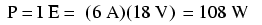
Figure 55: calcule matematice
Prin urmare, becul degajează o putere de 108 W, atât sub formă de lumină, cât şi sub formă de căldură.
Să încercăm acum să luăm acelaşi circuit, dar să mărim tensiunea la bornele bateriei (schimbăm baterie) şi să vedem ce sa întâmplă. Intuiţia ne spune că va creşte curentul prin circuit pe măsură ce tensiunea bateriei creşte iar rezistenţa becului rămâne aceeiaşi. Şi puterea va creşte de asemenea:

Figure 56: circuit simplu: baterie plus bec, calcularea puterii 2
Acum, tensiunea bateriei (tensiunea electromotoare) este de 36 V în loc de 18 V cât era înainte. Becul are o valoarea a rezistenţei tot de 3 Ω. Curentul este acum:

Figure 57: calcule matematice
Trebuia să ne aşteptăm la acest lucru: dacă I = E/R, şi dublăm E-ul pe când R-ul rămâne acelaşi, curentul ar trebui să se dubleze. Întradevăr, asta s-a şi întâmplat; acum avem 12 A în loc de 6 A câţi aveam înainte. Să calculăm acum şi puterea:
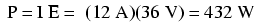
Figure 58: calcule matematice
Observăm că puterea a crescut precum ne-am fi aşteptat, dar a crescut puţin mai mult decât curentul. De ce? Pentru că puterea este funcţie de produsul dintre tensiune şi curent, iar în acest caz, ambele valori, şi curentul şi tensiunea, s-au dublat faţă de valorile precedente, asfel că puterea a crescut cu un factor de 2 x 2, adică 4. Puteţi verifica acest lucru împărţind 432 la 108 şi observând că proporţia dintre cele două valori este întradevăr 4.
Folosind reguli algebrice pentru a manipula formulele, putem lua formula originală a puterii şi să o modificăm pentru cazurile în care nu cunoaştem şi tensiunea şi curentul:
În cazul în care cunoaştem doar tensiunea (E) şi rezistenţa (R):
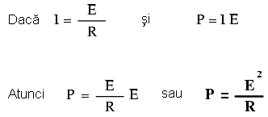
Figure 59: formule matematice
În cazul în care cunoaştem doar curentul (I) şi rezistenţa (R):

Figure 60: calcule matematice
O notă istorică: James Prescott Joule este cel care a descoperit relaţia matematică între disiparea puterii şi curentul printr-o rezistenţă, nu Georg Simon Ohm. Această descoperire, publicată în 1843 sub forma ultimei ecuaţii (P = I2R), şi este cunoscută ca „Legea lui Joule”. Datorită faptului că aceste ecuaţii ale puterii sunt strâns legate de ecuaţiile legii lui Ohm legate de tensiune, curent şi rezistenţă (E=IR; I=E/R; R=E/I) sunt adeasea acreditate lui Ohm.
2.4 Rezistori
Datorită relaţiei dintre tensiune, curent şi rezistenţă în oricare circuit, putem controla oricare variabilă dintr-un circuit prin simplul control al celorlalte două. Probabil că cea mai uşor de controlat variabilă dintr-un circuit este rezistenţa. Acest lucru poate fi realizat prin schimbarea materialului, mărimii, formei componentelor conductive (ţineţi minte cum filamentul metalic subţire al unui bec crează o rezistenţă electrică mai mare decât un fir gros?)
Componente speciale numite rezistori sunt confecţionate cu singurul motiv de a crea o cantitate precisă de rezistenţă electrică la introducerea lor în circuit. Sunt construite din fir metalic sau de carbon în general, şi realizate asfel încât să menţină o rezistenţă stabilă într-o gamă largă de condiţi externe. Rezistorii nu produc lumină precum este cazul becurilor, dar produc căldură atunci când degajă putere electrică într-un circuit închis în stare de funcţionare. În mod normal, totuşi, scopul unui rezistor nu este producerea căldurii folositoare, ci pur şi simplu asigurarea unei rezistenţe electrice precise în circuit.
Simbolul rezistenţei pe care îl vom folosi în circuite este cel în formă de zig-zag:

Figure 61: simbolul rezistorului
Valorile rezistenţelor în ohmi sunt de obicei reprezentate printr-un număr adiacent, iar dacă într-un singur circuit sunt prezenţi mai mulţi rezistori, fiecare va fi notat cu R1, R2, R3, etc. După cum se poate vedea, simbolurile pentru rezistenţă pot fi prezentate fie orizontal, fie vertical:

Figure 62: simbolul şi notaţia rezistorului
Rezistoarele reale nu seamănă deloc cu un zig-zag, ci sunt asemenea unor tuburi sau cilindrii cu câte un fir la fiecare capăt pentru conectarea lor în circuit. Mai jos sunt câteva exemple de rezistori de diferite tipuri şi mărimi:

Figure 63: diferite tipuri şi mărimi de rezistori
Dacă ne luăm după aparenţa lor fizică, un simbol alternativ pentru rezistori este cel din figura de mai jos1:

Figure 64: simbolul european al rezistorului
Rezistoarele pot de asemenea să fie cu rezistenţă variabilă, nu neapărat fixă. Această proprietate o putem întâlni în cadrul unui rezistor construit chiar pentru acest scop, sau o putem întâlni în cadrul unui component a cărui rezistenţă este instabilă în timp:

Figure 65: simbolul rezistorului variabil
În general, ori de câte ori vedeţi simbolul unui component reprezentat cu o săgeată diagonală prin el, acel component are o valoarea variabilă şi nu statică (fixă). Acest simbol este o convenţie electronică standard.
Rezistoarele variabile trebuie să posede o modalitate de ajustare, fie un arbore rotitor sau un braţ ce poate fi mişcat pentru a varia valoarea rezistenţei electrice. Mai jos avem poza unor dispoizitive numite potenţiometre, ce pot fi folosite ca şi rezistori variabili:

Figure 66: exemplu de potenţiometre - rezistori variabili
Deoarece rezistori produc energie sub formă de căldură la trecerea curentului prin ei datorită frecării, aceştia pof fi împărţiţi în funcţie de cantitatea de căldură ce o pot susţine fără a se supra-încălzi şi distruge. Această categorie este specificată în „watti”. Majoritatea rezistorilor din aparatele electronice portabile sunt în categoria de 1/4 (0.25) watt sau mai puţin. Puterea unui rezistor este aproximativ proporţională cu mărimea sa: cu cât rezistorul este mai mare, cu atât mai mare este puterea sa. De menţionat şi faptul că rezistenţa (în ohmi) nu are deloc legătură cu mărimea!
Chiar dacă apariţia rezistorilor într-un circuit pare pe moment a nu avea niciun sens, aceştia sunt nişte dispozitive cu un rol extrem de folositor în cadrul circuitelor. Pentru că sunt atât de simpli şi de des utilizaţi în domeniul electricităţii şi a electronicii, vom dedica o bună bucată de vreme analizei circuitelor compuse doar din rezistenţe şi baterii.
În diagramele schematice, simbolul rezistorilor este adesea folosit pentru a indica un dispozitiv general dintr-un circuit electric ce transformă energia electrică primită în ceva folositor (bec, de exemplu). Orice asfel de dispozitiv non-specific într-un circuit electric poartă de obicei denumira de „sarcină”.
Pentru a rezuma ceea ce am spus până acum, vom analiza circuitul de mai jos, încercând să determinăm tot ceea ce putem cu ajutorul informaţiilor disponibile:
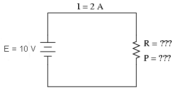
Figure 67: circuit electric simplu
Tot ceea ce cunoaştem în acest circuit este tensiunea la bornele bariei (10 volţi) şi curentul prin circuit (2 amperi). Nu cunoaştem rezistenţa rezistorului în ohmi sau puterea disipată de acesta în watti. Folosindu-ne însă de ecuaţiile lui Ohm, putem găsi două ecuaţii ce ne pot oferi răspunsuri folosind doar cantitătile cunoascute, tensiunea, respectiv curentul:
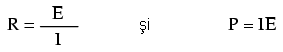
Figure 68: relatii matematice
Introducând cantităţile cunoscute de tensiune (E) şi curent (I) în aceste două ecuaţii, putem determina rezistenţa circuitului (R), şi puterea disipată (P):
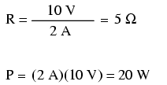
Figure 69: calcule matematice
Pentru circuitul de faţă, în care avem 10 volţi şi 2 amperi, rezistenţa rezistorului trebuie şa fie de 5 Ω. Dacă ar fi să proiectăm un circuit pentru a opera la aceste valori, ar trebui să folosim un rezistor cu o putere de minim 20 de watti; în caz contrar, s-ar distruge din cauza supra-încălzirii.
2.5 Conducţie neliniară
Legea lui Ohm este un instrument simplu şi puternic pentru analiza circuitelor electrice, dar are şi unele limitaţii pe care trebuie să le înţelegem dacă vrem să o aplicăm cu succes circuitelor reale. Pentru majoritatea conductorilor, rezistenţa este o proprietate aproximativ constantă, neafectată de tensiune şi curent. Din acest motiv, considerăm rezistenţă majorităţii componentelor dintr-un circuit ca fiind constantă, astfel că tensiunea şi curentul sunt în relaţie directă unul cu celălalt.
De exemplu, în exemplu precedent cu becul de 3 Ω, am calculat curentul prin circuit împărţind tensiunea la rezistenţă (I=E/R). Cu o baterie de 18 volţi, curentul prin circuit a fost de 6 amperi. Dublând tensiunea bateriei la 36 de volţi, am dublat şi curentul la 12 volţi. Toate acest lucruri sunt evidente, atâta timp cât rezistenţa becului la deplasarea electronilor rămâne constantă la 3 Ω.
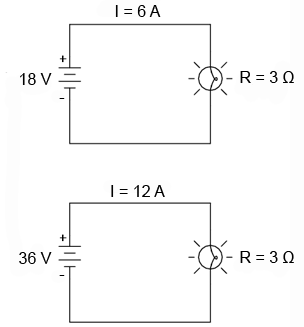
Figure 70: circuit electric simplu, dublarea tensiunii rezultă în dublarea curentului
Totuşi, realitatea nu este atât de simplă. Unul din fenomenele prezentate într-un capitol viitor este cel al modificării rezistenţei odată cu modificarea temperaturii. Într-un bec incandescent, rezistenţa filamentului va creşte dramatic atunci când aceasta işi modifică temperatura de la cea a camerei la temperatura în stare de funcţionare. Dacă ar fi să mărim tensiunea furnizată într-un circuit real simplu, creşterea rezultată a curentului electric ar cauza creşterea temperaturii filamentul becului, creştere ce duce la creşterea rezistenţei acestuia, fapt ce face posibilă o nouă creştere a curentului prin circuit doar prin creşterea tensiunii furnizate de baterie. Prin urmare, tensiunea şi curentul nu se supun ecuaţiei simple „I=E/R”, deoarece rezistenţa filamentului unui bec nu rămâne stabilă odată cu modificarea curenţilor.
Fenomenul variaţiei rezistenţei cu temperatură este caracteristic majorităţii metalelor din care sunt confecţionate firele. Pentru majoritatea aplicaţiilor însă, aceste variaţii ale rezistenţei sunt suficient de mici încât sunt neglijabile (nu sunt luate în considerare). În cazul filamentelor becurilor, variaţia rezistenţei este destul de mare.
Acesta este doar un exemplu din domeniul neliniarităţii circuitelor electrice. Dar nu este nicidecum singurul. În matematică, o funcţie „liniară” este o funcţie reprezentată grafic printr-o linie dreaptă. Versiunea simplificată a circuitului simplu cu bec, cu o rezistenţă constantă a filamentului de 3 Ω, generează un grafic asemănător celui de jos:

Figure 71: graficul curent-tensiune într-un circuit electric simplu idealizat
Linia dreaptă de pe grafic desemnează faptul că rezistenţa este stabilă pentru o varietate de tensiuni şi curenţi din circuit. Acest lucru se întâmplă însă doar într-un caz „ideal”. Fiindcă rezistorii sunt construiţi asfel încât rezistenţă lor să fie cât mai stabilă, se coportă aproximativ asemenea graficului de mai sus. Un matematician numeşte acest comportament „liniar”.
Un exemplu mai realist al unui circuit electric simplu cu bec, atunci când tensiunea la bornele bateriei variază într-un domeniu larg, este reprezentat prin graficul de mai jos:
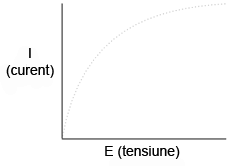
Figure 72: graficul curent-tensiune într-un circuit electric simplu idealizat
Acest grafic nu mai este o linie dreaptă. Acesta creşte brusc în partea stângă, odată cu creşterea tensiunii de la zero la o valoarea scăzută. Pe măsură ce tensiunea creşte, vedem o creştere din ce în ce mai mică a curentului; asfel că circuitul are nevoie de o creştere din ce în ce mai mare a tensiunii pentru a păstra o creştere egală şi constantă a curentului.
Dacă încercăm să aplicăm legea lui Ohm pentru determinarea rezistenţei acestui circuit folosind valorile curentului şi ale tensiunii din graficul de mai sus, ajungem la mai multe seturi de valori diferite. Putem spune că rezistenţa este neliniară, crescând cu creşterea tensiunii şi a curentului. Neliniaritatea este cauzată de efectul temperaturii ridicate a metalului ce compune filamentul becului.
Un alt exemplu de neliniaritate a curentului este prin gaze precum aerul. La temperaturi şi presiuni normale, aerul este un dielectric (izolator) eficient. Totuşi, dacă tensiunea dintre doi conductori separaţi printr-o porţiune de aer creşte suficient de mult, moleculele de aer se vor „ioniza”, iar electronii acestora se vor deplasa sub influenţa forţei generate de tensiunea ridicată dintre fire. Odată ionizate, aerul (şi alte gaze) devin bune conductoare de electricitate, permiţând curgerea electronilor. Dacă realizăm graficul curent-tensiune precum în circuitul precedent, putem observa foarte clar efectul neliniar al ionizării:
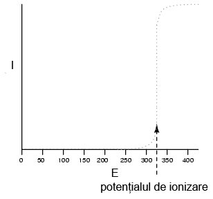
Figure 73: graficul curent-tensiune neliniar în cazul ionizării dielectricului dintre borne
Graficul de mai sus este aproximat pentru o grosime a dielectricului (aer) de 1cm. O eventuală distanţă mai mare dintre cei doi conductori ar duce la un potenţial de ionizare mai ridicat, dar graficul curbei I/E ar rămâne similar: practic, nu există curent prin dielectric până în momentul atingerii potenţialului de ionizare, dar conducţia curentului este foarte bună după acest punct.
Acesta este şi motivul pentru care fulgerele există sub forma de şoc de scurtă durată şi sub o formă continuă de curgere a electronilor. Tensiunea formată între pământ şi nori (sau între diferiţi nori) trebuie să crească până la o valoare ce depăşeşte potenţialul de ionizare al golului de aer dintre cele două puncte. După atingerea acestui punct, aerul se ionizează suficient de mult pentru a permite curgerea substanţială a electronilor, iar curentul produs va exista prin aerul ionizat până în momentul în care sarcina electrică statică dintre cele două puncte se consumă. După scăderea sarcinii electrice până în punctul în care tensiunea scade sub un anumit punct de ionizare, aerul dintre cele două puncte (nor şi pământ) se dez-ionizează şi devine din nou un foarte bun dielectric (rezistenţă ridicată).
Multe materiale dielectrice solide posedă proprietăţi rezistive similare: rezistenţă extrem de mare la trecerea curentului electric sub o anumită tensiune critică, iar apoi, o rezistenţă mult diminuată la depăşirea acelei valori a tensiunii. Odată ce un material dielectric a trecut prin faza de străpungere (termenul folosit pentru acest fenomen), de cele mai multe ori acesta nu se reîntoarce la faza dielectrică precedentă aşa cum o fac majoritatea gazelor. Este posibil să se comporte ca şi un dielectric la tensiuni scăzute, dar valoarea pragului tensiunii de ionizare este mult sub valoarea iniţială, ceea ce duce la străpungeri mult mai uşoare pe viitor. Acesta este un mod de defectare des întâlnit în circuitele de tensiune înaltă: distrugerea izolaţie prin străpungere. Asemenea defecte pot fi detectate folosind aparate speciale de măurare a rezistenţei folosind tensiuni ridicate (peste 1000 V).
Există componente de circuit special concepute pentru proprietăţile lor rezistive neliniare; unul dintre acestea este varistorul. Confecţionat de obicei din oxid de zic sau carbură de siliciu, aceste dispozitive menţin o rezistenţă ridicată la bornele lor până în momentul atingerii unei tensiuni de „străpungere” (echivalentă cu „potenţialul de ionizare” a golului de aer), moment în care rezistenţa lor scade dramatic. Dar, faţă de străpungerea unui izolator, străpungerea unui varistor este repetabilă: adică, design-ul acesteia este de aşa natură încât permite străpungerile repetate fără apariţia distrugerii fizice a componentului.
Alte componente electrice posedă curbe de variaţie curent/tensiune şi mai ciudate. Unele dispozitive suferă o descreştere a rezistenţei odată cu creşterea tensiunii. Datorită faptului că panta curent/tensiune în acest caz este negativă, fenomenul este cunoscut sub denumirea de rezistenţă negativă.

Figure 74: graficul curent-tensiune neliniar cu rezistenţă negativă
Pentru simplitatea expunerii totuşi, vom considera rezistenţele din circuit stabile în timp oricare ar fi condiţiile de funcţionare, exceptând faptul în care vom preciza altcumva. Aceasta a fost doar o mică parte din complexitatea lumii reale, pentru a nu lăsa impresia falsă că toate fenomenele electrice pot fi însumate sub câteva ecuaţii simple.
2.6 Conexiunea unui circuit
Până în acest moment am analizat circuite cu o singură baterie şi o singură rezistenţă fără a lua în calcul firele conductoare dintre componente, atâta timp cât am format un circuit complet. Contează lungimea firelor sau „forma” circuitului pentru calculele noastre? Să ne uităm aşadar la câteva configuraţii ale circitelor şi să aflăm:
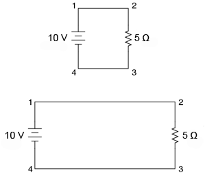
Figure 75: circuite electrice simple, diferite forme
Atunci când conectăm două puncte dintr-un circuit printr-un fir conductor, presupunem de obicei că acele fire prezintă o rezistenţă neglijabilă. Prin urmare, ele nu contribuie într-o măsură hotărâtoare la rezistenţă totală a circuitului, iar singura rezistenţă pe care o luăm în calcul este rezistenţă componentelor din circuit. În circuitele de mai sus, singura rezistenţă este rezistenţă de 5 Ω a rezistoarelor, şi o vom considera doar pe aceasta în calculele noastre. În realitate, firele metalice au o anumită rezistenţă (precum şi sursele de tensiune!), dar acele rezistenţe sunt în general mult mai mici decât rezistenţa prezentă în celelalte componente din circuit încât pot fi neglijate. Excepţie fac firele din circuitele de putere (curenţi mari), unde chiar şi o rezistenţă foarte mică poate genera căderi de tensiune importante.
Dacă rezistenţă firelor conductoare este mică spre zero, putem considera punctele conectate din circuit ca fiind comune din punct de vedere electric. Punctele 1 şi 2 din circuitele de mai sus pot exista fizic foarte aproape unul de celălalt sau la o distanţă destul de mare pentru că, din punct de vedere al măsurătorilor tensiunii şi rezistenţei, acest lucru nu contează. Acelaşi lucru este valabil şi pentru punctele 3 şi 4. Este ca şi cum capetele rezistorilor ar fi ataşate direct la terminalele bateriei din punct de vedere al legii lui Ohm. Este bine de ştiut acest lucru, pentru că asta înseamnă că putem re-trasa circuitul, lungind sau scurtând firele după bunul nostru plac, fără a afecta funcţionarea circuitului în mod decisiv. Tot ceea ce contează este legarea componentelor unul de celălalt în aceeiaşi secvenţă.
Rezultă şi faptul că valorile tensiunii între seturi de puncte „comune” vor fi identice. Adică, tensiunea între punctele 1 şi 4 (la bornele bateriei), este aceeiaşi cu tensiunea dintre punctele 2 şi 3 (la bornele rezistorului). Să analizăm următorul circuit şi să vedem care sunt punctele comune:
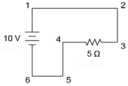
Figure 76: circuite electrice simple, diferite forme
Aici avem doar două componente fără a lua în considerare şi firele: bateria şi rezistorul. Cu toate că firele au un drum mai încâlcit, ele formează un circuit şi există câteva puncte comune din punct de vedere electric în acest circuit, şi anume: punctele 1, 2 şi 3 pentru că aceastea sunt toate conectate între ele printr-un singur fir (fără alt component electric între ele). Acelaşi lucru este valabil şi pentru punctele 4, 5 şi 6.
Tensiunea între punctele 1 şi 6 este de 10 volţi, direct de la baterie. Dar, pentru că punctele 5 şi 4 sunt comune cu 6, iar punctele 2 şi 3 sunt comune cu 1, între aceste două grupe de puncte se regăsesc de asemenea 10 volţi:
- Între punctele 1 şi 4 = 10 volţi
- Între punctele 2 şi 4 = 10 volţi
- Între punctele 3 şi 4 = 10 volţi (direct la bornele rezistorului)
- Între punctele 1 şi 5 = 10 volţi
- Între punctele 2 şi 5 = 10 volţi
- Între punctele 3 şi 5 = 10 volţi
- Între punctele 1 şi 6 = 10 volţi (direct la bornele bateriei)
- Între punctele 2 şi 6 = 10 volţi
- Între punctele 3 şi 6 = 10 volţi
Din moment ce aceste puncte sunt conectate înpreună prin fire cu rezistenţă zero (ideală), căderea de tensine dintre aceste puncte este zero, indiferent ce cantitate de curent avem prin aceste puncte/fire. Dacă am fi să citim tensiunea între puncte comune, aceasta ar trebui să fie practic zero
- Între punctele 1 şi 2 = 0 volţi Punctele 1, 2, şi 3 sunt
- Între punctele 2 şi 3 = 0 volţi comune din punct de vedere electric
- Între punctele 1 şi 3 = 0 volţ
- Între punctele 4 şi 5 = 0 volţi Punctele 4, 5, şi 6 sunt
- Între punctele 5 şi 6 = 0 volţi comune din punct de vedere electric
- Între punctele 4 şi 6 = 0 volţi
Acest lucru are sens şi din punct de vedere matematic. Cu o baterie de 10 volţi şi un rezistor de 5 Ω, curentul va fi de 2 amperi. Rezistenţa firelor fiind zero, căderea de tensiune pe întregul circuit poate fi determinată cu ajutorul legii lui Ohm, asfel:

Figure 77: relaţii matematice
Pentru că punctele comune din punct de vedere electric dintr-un circuit au aceeiaşi tensiunea şi rezistenţă relativă, firele ce conectează aceste puncte sunt de obicei desemnate printr-o aceeiaşi notaţie. Asta nu înseamnă că punctele terminalelor au aceeiaşi denumire, ci doar firele de legătură. De exemplu:
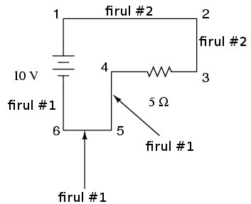
Figure 78: numerotarea firelor într-un circuit
Punctele 1, 2 şi 3 sunt comune, prin urmare firul ce conectează punctele 1 şi 2 este notat asemenea (firul #2) firului ce conectează punctele 2 şi 3 (firul #2). Într-un circuit real, firul dintre punctele 1 şi 2 se poate avea culori şi mărimi diferite faţă de firul ce conectează punctele 2 şi 3, dar notaţia lor ar trebui să fie asemănătoare. Acelaşi lucru este valabil şi pentru firele ce conectează punctele 6, 5 şi 4.
Ne putem folosi de faptul că tensiunea dintre punctele comune este zero ca şi o metodă foarte bună de detectare a defectelor din circuit. Dacă măsor tensiunea din circuit dintre două puncte ce ar trebui să fie comune, aceasta ar trebui să fie zero. Dar dacă tensiunea citită este diferită de zero între aceste două puncte, atunci pot spune cu siguranţă că cele două puncte nu au o conexiune directă între ele (nu sunt comune), caz în care s-ar putea ca între cele două puncte, circuitul studiat să fie defapt (accidental) deschis.
2.7 Polaritatea căderilor de tensiune
Putem determina direcţia curgerii electronilor într-un circuit, urmărind drumul ce duce de la terminalul negativ (-) la cel pozitiv (+) al bateriei, singura sursă de tensiune din circuit. Observăm că electronii se deplasează contrar acelor de ceasornic, din punctul 6 spre 5, 4, 3, 2, 1 şi înapoi la 6.
În momentul în care curentul întâmpină rezistenţa de 5 Ω, se va înregistra o cădere de tensiune la capetele acesteia. Polaritatea acestei căderi de tensiune este minus (-) la punctul 4 şi plus (+) la punctul 3 (ţineţi minte, tensiunea este o mărime relativă între două puncte). Prin urmare, marcăm polaritatea căderii de tensiune la bornele rezistenţei cu aceste simboluri, folosind sensul real de deplasare al electronilor prin circuit, ceea ce înseamnă că borna pe unde curentul intră în rezistor este cea negativă, iar borna (capătul) pe unde curentul iese din rezistor este cea pozitivă.

Figure 79: marcarea polarităţii căderii de tensiune într-un circuit simplu
Între punctele 1 ( + ) şi 4 ( - ) = 10 volţi Între punctele 2 ( + ) şi 4 ( - ) = 10 volţi Între punctele 3 ( + ) şi 4 ( - ) = 10 volţi Între punctele 1 ( + ) şi 5 ( - ) = 10 volţi Între punctele 2 ( + ) şi 5 ( - ) = 10 volţi Între punctele 3 ( + ) şi 5 ( - ) = 10 volţi Între punctele 1 ( + ) şi 6 ( - ) = 10 volţi Între punctele 2 ( + ) şi 6 ( - ) = 10 volţi Între punctele 3 ( + ) şi 6 ( - ) = 10 volţi
Chiar dacă pare puţin neinspirată realizarea unui tabel cuprinzând căderile de tensiune în întreg circuitul, acesta este un concept foarte important de ţinut minte, pentru că se va folosi la analiza circuitelor mult mai complexe, cuprinzând rezistenţe şi baterii multiple.
Trebuie înţeles faptul că polaritatea nu are nimic de-a face cu legea lui Ohm: nu vom introduce niciodată tensiuni, curenţi sau rezistenţe negative într-o ecuaţie a legii lui Ohm! Există într-adevăr alte principii electrice unde folosirea polarităţii (+ sau -) contează, dar nu este cazul legii lui Ohm.
3 Electrocutarea
3.1 Siguranţa în domeniul electric
Pe măsură ce curentul electric „curge” printr-un material, orice opoziţie în calea deplasării electronilor (rezistenţă) are ca rezultat disiparea de energie, de obicei sub formă de căldură. Acesta este efectul principal şi cel mai uşor de înţeles al electricităţii asupra ţesutului viu: încălzirea acestuia datorită curentului. În cazul generării unei cantităţi suficiente de căldură, ţesutul poate prezenta arsuri. Fiziologic vorbind, efectul este asemănător celui cauzat de o flacără deschisă sau orice altă sursă de căldură ridicată, doar că electricitatea poate arde ţesutul în adâncime, nu doar la suprafaţa pielii, şi poate afecta chiar şi organele interne.
Un alt efect al curentului electric asupra corpului, probabil cel mai periculos, este cel asupra sistemului nervos. Prin „sistem nervos” înţelegem reţeaua de celule speciale din corp denumite „celule nervoase” sau „neuroni” ce procesează şi conduc o multitudine de semnale responsabile pentru controlul multor funcţiilor corpului. Creierul, coloana vertebrală şi organele de simţi si motoare funcţionează împreună pentru a permite corpului să simtă, să se deplaseze, să raspundă şi să gândească.
Comunicarea dintre celulele nervoase este asemenea unor „traductoare”: crează semnale electrice (curenţi şi tensiuni mici) ca şi răspuns la prezenţa unor compuşi chimici numiţi neurotransmiţători, şi elibereză neurotransmiţători atunci când sunt stimulati de un curent electric. Dacă printr-un corp viu (uman sau nu) trece un curent electric suficient de mare, acesta va înlocui impulsurile de intensitate mică generate în mod normal de neuroni, suprasolicitând sistemul nervos şi prevenind acţionarea muşchilor cu ajutorul reflexelor şi a semnalelor voite. În cazul în care muşchii sunt excitaţi (acţionaţi) de o sursă externă de curent (şoc electric), aceştia se vor contracta involuntar, iar victima nu poate face nimic în această privinţă.
Această situatie este cu atât mai periculoasă dacă victima strânge conductorul aflat sub tensiune în mâini. Muşchii antebraţelor responsabili pentru mişcare degetelor tind să fie mai bine dezvoltaţi pentru acei muşchi reasponsabili cu contractarea degetelor decât pentru întinderea lor; prin urmare, dacă ambele seturi de muşchi sunt excitate la maxim datorită curentului electric prezent prin mâna victimei, muşchii de „contractare” vor câştiga, iar persoana va strânge mâna într-un pumn. În cazul în care conductorul atinge exact palma mâinii, această strângere va forţa mâna să prindă strâns firul în mână ducând la o agravare a situaţiei datorită contactului excelent dintre corp şi fir prin intermediul mâinii. Victima nu va fi capabilă să lase firul din mână fără un ajutor extern.
Din punct de vedere medical, această condiţie de contracţie involuntară a muşchilor se numeşte tetanos, şi poate fi întrerupt doar prin oprirea curentului prin victimă.
Chiar şi după încetarea curentului, s-ar putea ca victima să nu-şi recapete pentru o perioadă de timp controlul voluntar asupra muşchilor, până la revenirea la normal a stării neurotransmiţătorilor. Acesta este şi principiul aplicat la construcţia pistoalelor tip „Taser” ce induc un şoc electric asupra victimei prin intermediul a doi electrozi. Efectul unui şoc electric bine poziţionat poate imobiliza temporar (câteva minute) victima.
Dar efectele curentului electric asupra victimei nu se reduc doar la muşchi. Muşchiul ce controlează plămânii şi inima (diafragma toracică) poate fi şi el blocat de efectul curentului electric. Chiar şi curenţii mult prea slabi pentru a induce în mod normal tetanosul sunt suficienţi pentru a da peste cap semnelele celulelor nervoase în aşa măsură încât inima să nu mai funcţioneze corect ducând la o conduţie cunoscută sub numele de fibrilaţie. Inima aflată în fibrilaţie mai mult trepidează decât bate, şi este ineficientă la pomparea sângelui spre organele vitale din organism. În orice caz, în urma unui curent electric suficient de mare prin corp, există posibilitatea decesului prin asfixiere sau stop cardiac. În mod ironic, personalul medical foloseşte un şoc electric aplicat deasupra pieptului victimei pentru a „porni” inima aflată în fibrilaţie.
- Efectele curentului alternativ faţă de cele ale curentului continuu
Modul în care curentul alternativ afectează corpul viu depinde în mare măsura de frecvenţă. Frecvenţele joase (50 şi 60 Hz, folosita în Europa, respectiv SUA) sunt mai periculoasă decât frecvenţele înalte, iar curentul alternativ este de până la cinci ori mai periculos decât curentul continuu la aceeiaşi valoarea a curentului şi a tensiunii. Curentul alternativ de frecvenţă joasă produce o contracţie îndelungată a muşchilor (tetanie, sau spasm muscular intermitent) ce blochează mâna pe sursa de curent electric prelungind timpul de expunere la efectele acestuia. Curentul continuu este mult mai probabil să cauzeze doar o singură contacţie, ce permite adesea victimei să se îndepărteze de locul pericolului.
Curentul alternativ, prin natura sa, tinde să ducă pacemaker-ul inimii într-o stare de fibrilatie, în timp de curentul continuu tinde doar să oprească inima. Odată ce şocul electric încetează, este mult mai uşor de „repornit” o inimă blocată decât una aflată în stare de fibrilare. Acesta este şi motivul pentru care echipamentul de „defibrilare” folosit de personalul medical de urgenţa funcţionează: şocul de curent produs de echipament este sub formă de curent continuu şi are ca şi efect oprirea fibrilaţiei inimii pentru a permite inimiii să revină la normal.
Oricare ar fi cazul, curenţii electrici suficienţi de mari pentru a cauza contracţia involuntară a muşchilor sunt periculoşi şi trebuie evitaţi cu orice preţ.
3.2 Drumul curentului în cazul electrocutării
După cum am văzut deja, deplasarea continuă a electronilor necesită prezenţa unui circuit închis. Acesta este motivul pentru care şocul electric datorat electricităţii statice este doar de moment: deplasarea electronilor este de scurtă durată, până când se reface echilibrul electric dintre cele două obiecte. Aceste tipuri de şocuri limitate sunt rareori periculoase.
Fără existenţa a două puncte pe corp necesare intrării şi ieşirii curentului, nu există riscul electrocutării. Din acest motiv păsărilor pot sta pe liniile de înaltă tensiune fără a suferi nicio electrocutare: contactul între acestea şi circuit se realizează doar într-un singur punct.

Figure 80: păsările ce se aşează pe liniile de înaltă tensiune nu se electrocutează
Pentru ca electronii să circule printr-un conductor, este necesară prezenţa unei tensiuni pentru motivarea lor. Tensiunea este tot timpul realtivă între două puncte. Nu există tensiune „la” sau „pe” un anumit punct dintr-un circuit; prin urmare, nu există nicio tensiune aplicată păsării ce face contact cu circuitul în exemplul de mai sus într-un singur punct, prin urmare, nu există nici curent. Da, chiar dacă aceasta atinge circuitul cu ambele picioare, totuşi, ele ating acelaşi fir comun din punct de vedere electric. Din moment ce picioarele păsării ating acelaşi fir electric comun, nu există diferenţă de potenţial (tensiune) între cele două puncte şi nu există nici curent.
Aceste consideraţii pot duce la formarea părerii (greşite!) că nu putem fi electrocutaţi prin atingerea unui singur fir electric. Spre deosebire de păsări, oamenii stau de obicei pe suprafaţa pământului atunci când ating un fir prin care trece curent electric. Adesea, o parte din sistemul de alimentare este conectată întenţionat la pământ, iar persoana ce atinge un singur fir, realizează de fapt contactul între două puncte din circuit (firul şi pământarea):

Figure 81: închiderea circuitului prin pământ la atingerea unui singur fir
Simbolul împământării (legării la pământ) este setul de trei linii orizontale cu lungimi descrescătoare, aflat în partea stângă-jos a circuitului de mai sus, precum şi la piciorul persoanei curentate. În realitate, sistemul de împământare a sistemelor de alimentare constă dintr-un conductor metalic îngropat în pământ la o adâncime mare pentru un contact maxim cu acesta. Acel conductor este conectat la rândul său într-un punct din circuit. Conectarea victimei la pământ (împământare) se realizează prin piciorul acesteia, datorită faptului că acesta atinge pământul.
Câteva întrebări sunt binevenite:
- Dacă prezenţa unui punct de împământare în circuit poate duce la electrocutarea unei persoane, de ce îl avem în circuit în primul rând? Nu ar fi mai sigur un circuit fără împământare?
- Persoana electrocutată probabil că nu este desculţă. Dacă cauciucul şi materialele din care este realizată încălţămintea sunt materiale izolatoare, atunci de ce aceasta nu protejează persoanele electrocutate prin împiedicarea formării unui circuit închis
- Cât de bun conductor electric poate pământul să fie? Dacă putem fi electrocutaţi datorită curgerii curentului prin pământ, de ce să nu folosim pământul ca şi conductor în circuitele noastre de putere?
- Motivul legării la pământ a circuitelor (împământarea)
Cât priveşte prima întrebare, prezenţa unui punct de împământare „intenţional” asigură faptul că cel puţin contactul cu o parte din circuit este sigură. Dacă persoana din cazul precedent ar fi să atingă partea de jos a rezistorului, aceasta nu s-ar electrocuta, chiar dacă picioarele sale vin în contact cu pământul:
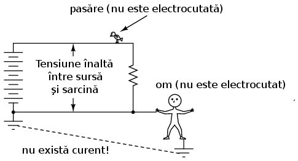
Figure 82: persoana nu este electrocutată în cazul în care firul atins este conectat la împământare
Deoarece partea de jos a circuitului este conectată la împământare în partea stângă, conductorul din dreapta jos este comun din punct de vedere electric cu acesta, atunci când este atins precum în figura de mai sus. Din moment ce nu poate exista o diferenţă de potenţial (tensiune) între două puncte comune electric, asupra persoanei ce vine în contact cu firul nu va fi aplicată nicio tensiune iar aceasta nu va suferi niciun şoc electric. Din acelaşi motiv, firul ce conectează circuitul la împământare nu are de obicei izolaţie; orice obiect metalic ce vine în contact cu acesta se va transforma într-un punct electric comun cu pământul, eliminând orice periocul de electrocutare.
Legarea unui circuit la pământ asigură faptul că există cel puţin un punct din circuit care dacă este atins nu duce la electrocutare. Dar dacă nu am lega circuitul deloc la pământ? Nu ar înseamna asta că atingerea oricărui fir ar fi la fel de sigură? Ideal, da. Practic însă, nu. Observaţi ce se întâmplă fără niciun fel de împământare:
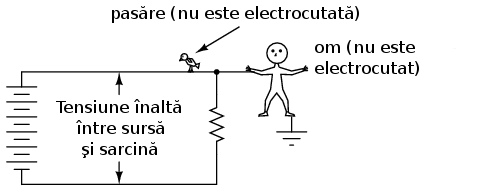
Figure 83: circuit neconectat la împământare - atingerea firelor libere este sigură
În ciuda faptului că picioarele persoane vin în contact direct cu pământul, atingerea oricărui punct din circuit este sigură. Din moment ce nu se formează un drum complet/închis prin corpul persoanei, nu este posibilă trecerea niciunui curent prin corpul acesteia. Totuşi, toate acestea se pot schimba radical în momentul formării unei legături accidentale cu pământul, precum atingerea liniilor de înaltă tensiune de către o creangă ce duce la formarea unei legături directe cu pământul:
nu este sigură atunci când există o conectare accidentală a circuitului

Figure 84: la pământ
O asemenea conexiune accidentală dintre conductorul circuitului şi pământ poartă numele de defect de împământare. Cauzele defectelor de împământare pot fi numeroase şi prin urmare nu pot fi luate toate în considerare la proiectarea liniilor electrice. În cazul copacilor, este imposibil de prezis cu care fir ar putea aceştia să intre în contact. Dacă contactul se realizează între firul de sus, atunci aceste poate fi atins în siguranţă; dacă în schimb contactul se realizează între copac şi firul de jos, atunci atingerea acestui fir este cea care nu prezintă riscul electrocutării, adică exact invers faţă de cazul precedent.
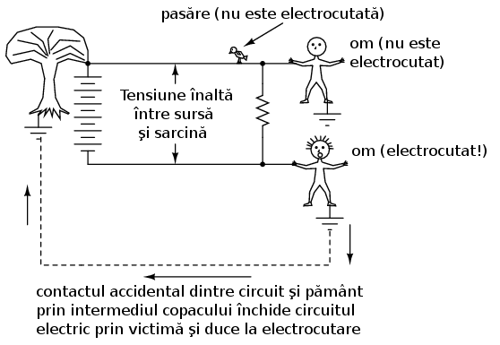
Figure 85: circuit neconectat la împământare - defectul de împământare poate duce la electrocutare
Precum am spus şi mai sus, ramurile copacilor sunt doar o sursă potenţială ale defectelor de împământare. Să considerăm un circuit neconectat la pământ, fără niciun contact accidental dintre copac şi pământ, dar de data aceasta avem doi oameni ce ating circuitul în două puncte cu potenţiale diferite:
atunci când fiecare dintre ele atunge un punct din circuit cu potenţial

Figure 86: electric diferit
În acest caz, contactul fiecărei persoane cu pământul asigură închiderea circuitului prin pământ şi prin ambele persoane. Chiar dacă fiecare din cele două persoane crede că se află în siguranţă în momentul atingerii punctului respectiv din circuit, atingerea lor concomitentă transformă situaţia de mai sus într-un scenariu periculos. De fapt, una dintre persoane reprezintă defectul de împământare în acest caz, ceea ce face ca atingerea conductorului de către cealaltă persoană să fie periculoasă pentru ambii. Acesta este motivul pentru care circuitele fără împământare sunt periculoase: tensiunea dintre oricare punct din circuit şi pământ este imprevizibilă, deoarece este posibilă apariţia unui defect de împământare în orice moment în oricare punct al circuitului. În acest scenariu, doar pasărea este sigură, doarece nu are niciun contact cu pământul. Prin conectarea unui punct din circuit la pământ, putem asigura siguranţa atingerii cel puţin în acel punct. Deşi nu reprezintă o măsură de siguranţă 100%, tot este mai mare decât lipsa completă a împământării.
- Protecţia la electrocutare prin purtarea încălţămintei adecvate
Pentru a răspunde celei de a doua întrebări, încălţămintea cu talpă de cauciuc asigură întradevăr o anumită protecţie la electrocutare prin prevenirea închiderii circuitului între victimă şi pământ. Cu toate acestea, majoritatea tipurilor de încălţăminte nu sunt sunt proiectate pentru asigurarea siguranţei electrice, având în majoritatea cazurilor o talpă prea subţire sau dintr-un material neadecvat. De asemenea, orice umeazeală, mizerie sau săruri conductive provenite de la transpiraţie aflate pe suprafaţă sau ce străpung talpa încălţămintei duce la compromiterea valorii izolaţiei iniţiale ale acesteia. Există încălţăminte special concepută pentru lucrul la tensiune înaltă, precum şi preşuri din cauciuc pentru stat, dar aceste echipamente speciale de lucru trebuiesc menţinute uscate şi într-o stare perfectă de curăţenie pentru a-şi dovedi eficienţa. În concluzie, încălţămintea obişnuită nu este o garanţia a protecţiei la electrocutare atunci când intrăm în contact cu un circuit electric.
Cercetările efectuate asupra rezistenţei contactului dintre corpul uman şi pământ au relevat aproximativ următoarele valori:
- Contact prin intermediul mâinii sau piciorului protejat prin izolaţie de cauciuc: 20 MΩ
- Contact prin intermediul piciorului protejat cu încălţăminte de piele (uscat): între 100 kΩ şi 500 kΩ
- Contact prin intermediul piciorului protejat cu încălţăminte de piele (ud): între 5 kΩ şi 20 kΩ
Din cele de mai sus reiese că faţă de piele, cauciucul este un material izolator mult mai bun, iar prezenţa apei într-un material poros precum pielea, reduce semnificativ rezitenţa electrică a acestuia.
- Pământul nu este un foarte bun conductor
Ca să răspundem şi la a treia întrebare, pământul nu este un conductor foarte bun, cel puţin nu atunci când este uscat. Acesta este un conductor mult prea slab pentru a putea susţine un curent continuu pentru alimentarea unei sarcini. Totuşi, pentru accidentarea sau decesul unei persoane este suficientă chiar şi o cantitate foarte mică de curent, prin urmare chiar şi conductivitatea slabă a pământului poate fi suficientă pentru a conduce o cantitate suficientă de curent atunci când există o tensiune suficientă la îndemână (care de obicei în sistemele de alimentare există).
Unele suprafeţe de pământ sunt materiale izolatoare mai bune decât altele. Asfaltul de exemplu, fiind o substanţă în mare uleioasă, prezintă o rezistenţă mult mai mare decât majoritatea tipurilor de piatră sau pământ. Betonul pe de altă parte, posedă o rezistenţă electrică mică datorită conţinutului său de apă şi electrolit (substanţă chimică conductoare).
3.3 Legea lui Ohm (din nou!)
În cadrul teoriei siguranţei electrice este rostită adeseori fraza: Nu tensiunea omoară, ci curentul! Deşi există o urmă de adevăr în această zicală, trebuie să înţelegem mult mai multe despre pericolul electrocutării decât atât.
Principiul conform căruia „curentul omoară” este în esenţă corect. Curentul electric este cel responsabil de arderea ţesuturilor, blocarea muşchilor şi intrarea inimii în fibrilaţie. Totuşi, curentul electric nu poate exista singur: trebuie să existe o anumită cădere de tensiune pentru motivarea deplasării electronilor prin corpul victimei. Corpul persoanei are şi el o anumită rezistenţă electrică, rezistentă ce trebuie luată de asemenea în considerare.
Conform legii lui Ohm, curentul este egal cu raportul dintre tensiune şi rezistenţă:
I = E / R
Cantitatea de curent printr-un corp este egală cu raportul dintre valoarea tensiunii aplicate între două puncte distincte de pe corp şi rezistenţa electrică oferită de acesta între cele două puncte. Evident, cu cât valoarea tensiunii disponibile pentru „împingerea” electronilor este mai mare, cu atât aceştia se vor deplasa mai uşor (curent mai mare) pentru aceeiaşi valoare a rezistenţei. De aici rezultă si pericolul tensiunii înalte: tensiunea înaltă înaseamnă un potenţial mai mare de trecere a unor cantităţi mari de curent prin corp. Invers, cu cât corpul oferă o rezistenţă electrică mai mare împotriva curentului, cu atât deplasarea electronilor este mai lentă (curent mai mic). Pericolul tensiunii este dat până la urmă de valoarea rezistenţei totale disponibilă în circuit pentru împiedicarea transferului de electroni prin corp.
Rezistenţa corpului nu este nici ea o valoarea fixă. Aceasta variază de la o persoană la alta şi nu este aceeiaşi de-a lungul timpului. Dintre factorii ce afectează rezistenţa totală a unei persoane se numără procentul de grăsime şi gradul de hidratare al organismului.
Rezistenţa organismului depinde şi de modul de realizare al contactului dintre fir şi piele: între cele două mâini, între mână şi picior, între cele două picioare, între picior şi cot, etc. Sudoarea, fiind un lichid bogat în săruri şi minerale, este un conductor excelent de electricitate. La fel este şi sângele. Prin urmare, contactul realizat cu o mână transpirată sau o rană deschisă va reduce substanţial valoarea rezistenţei disponibile.
Dacă măsurăm rezistenţa electrică între cele două mâini, valoarea indicată de un multimetru va fi de aproximativ un milion de ohmi (1 MΩ) (ţinând cele două sonde, fiecare într-o mână). Multimetrul indică o rezistenţă mai mică dacă strângem puternic sondele în mână decât atunci când le ţinem uşor.
- Valoarea curentului peste care acesta devine periculos
Care este valoarea pentru care curentul este periculos? Răspunsul la această întrebare depinde şi el de câţiva factori. Fiecare corp este diferit din punct de vedere chimic, iar acest lucru duce la reacţii diferite la trecerea aceluiaşi curent prin două corpuri diferite. În ciuda acestor diferenţe, de-a lungul timpului s-au stabilit unele valori cu ajutorul testelor ce indică efectele curentului electric asupra organismului. Toate valorile curenţilor sunt date în miliamperi (1 mA = 0.001 A):
**
EFECT ASUPRA CORPULUI CURENT CONTINUU CURENT ALTERNATIV (60 Hz) CURENT ALTERNATIV (10 kHz) --------------------------------------------------------------------------------------------------- Senzaţia uşoară Bărbaţi = 1.0 mA 0.4 mA 7 mA de gâdilire Femei = 0.6 mA 0.3 mA 5 mA --------------------------------------------------------------------------------------------------- Pragul de Bărbaţi = 5.2 mA 1.1 mA 12 mA percepţie Femei = 3.5 mA 0.7 mA 8 mA --------------------------------------------------------------------------------------------------- Apariţia durerii, Bărbaţi = 62 mA 9 mA 55 mA dar se poate menţine Femei = 41 mA 6 mA 37 mA controlul voluntar al muşchilor --------------------------------------------------------------------------------------------------- Apariţia durerii, Bărbaţi = 76 mA 16 mA 75 mA victima nu poate lăsa Femei = 51 mA 10.5 mA 50 mA firul din mână --------------------------------------------------------------------------------------------------- Durere severă, Bărbaţi = 90 mA 23 mA 94 mA apar dificultăţi Femei = 60 mA 15 mA 63 mA de respiratie --------------------------------------------------------------------------------------------------- Posibilitatea Bărbaţi = 500 mA 100 mA apariţiei fibrilaţiei Femei = 500 mA 100 mA inimii după 3 secunde ---------------------------------------------------------------------------------------------------
Atenţie, aceste date sunt doar aproximative, pentru că fiecare individ s-ar putea să reacţioneze diferit la trecerea curentului prin organism. S-a sugerat că o valoarea a curentului de doar 17 mA (0.017 A!) este suficientă în anumite condiţii pentru inducerea fibrilaţiei inimii atunci când este aplicată de-a lungul pieptului.
- Scenarii
Să presupunem de exemplu că am prinde în ambele mâini terminalele unei surse de tensiune alternativă la o frecvenţă de 60 Hz. Care este valoarea tensiunii necesare pentru a produce un curent de 20 mA (suficient pentru a face imposibilă desprinderea voluntară de pe fir) în condiţiile în care pielea este uscată şi curată? Folosim legea lui Ohm pentru a determina această valoare:
E = IR
E = (20 mA)(1 MΩ)
E = 20.000 V = 20 kV
Ţineţi minte că aceasta este situaţia cea mai favorabilă victimei (piele curată şi uscată) din punct de vedere al siguranţei electrice, iar valoarea tensiunii de 20 kV este valoarea necesară inducerii tetanosului. Pentru cauzarea unui şoc electric dureros, este suficientă o valoare mult mai mică a tensiunii! De asemenea, ţineţi minte că efectele fiziologice ale curentului electric variază în mare măsură de la o persoană la alta, iar aceste valori calculate sunt doar aproximări.
Dacă ne udăm pe mâini pentru a încerca să simulăm transpiraţia, rezistenţă electrică dintre cele două mâini scade până la o valoare de aproximativ 17.000 de ohmi (17 kΩ) (încercaţi să folosiţi un multimetru în diferite scenarii pentru calcularea rezistenţei electrice dintre diferite puncte ale corpului dumneavoastră!), atingând cu doar un deget fiecare dintre cele două sonde. O recalculare a tensiunii necesare inducerii unui curent de 20 mA, duce la următorul rezultat:
E = IR
E = (20 mA)(17 kΩ)
E = 340 V
În această situaţie realistă, este nevoie de o cădere de tensiune de doar 340 de volţi între cele două mâini pentru a induce un curent de 20 mA (vedeţi tabelul efectelor curentului asupra corpului). Totuşi, este posibilă apariţia unui şoc electric la o tensiune mult mai mică decât aceasta. În cazul în care rezistenţa electrică a corpului scade şi mai mult datorită contactului cu un inel purtat pe deget (un inel din aur în jurul degetului reprezintă un contact excelent pentru apariţia şocului electric), sau cu o suprafaţă de contact cu un corp metalic mare precum o ţeavă sau mânerul unei scule de lucru, valoarea rezistenţei poate coborâ până la valori în jurul a 1.000 de ohmi (1 kΩ), caz în care chiar şi o tensiune joasă prezintă un risc crescut de electrocutare:
E = IR
E = (20 mA)(1 kΩ)
E = 20 V
În această situaţie, sunt suficienţi 20 V pentru producerea unui curent de 20 mA prin corpul victimei, suficient pentru inducerea tetanosului. Luând în considerare faptul că, teoretic, 17 mA sunt suficienţi pentru inducerea fibrilaţiei inimii, o rezistenţă electrică de 1 kΩ între cele două mâini face ca o cădere de tensiune de doar 17 V să fie extrem de periculoasă:
Şaptesprezece volţi nu este o valoare foarte mare din punct de vedere al reţelelor electrice. Desigur, aceasta este situaţia cea mai proastă posbil, cu o tensiune alternativă la 60 Hz şi conductivitate excelentă a corpului, dar utilitatea ei constă în exemplificarea faptului că o tensiune foarte mică se poate dovedi periculoasă în anumite condiţii şi situaţii.
Nu este necesar ca aceste condiţii de realizare a rezistenţei electrice de 1 kΩ să fie atât de extreme precum a fost prezentat mai sus. Rezistenţa corpului poate scădea odată cu aplicarea tensiunii (în special dacă tetanosul face ca victima să strângă şi mai bine conductorul în mână), asfel încât cu o tensiune constantă, severitatea unui şoc electric se poate agrava în timp după contactul iniţial. Ceea ce începe ca un şoc uşor - suficient pentru a „îngheţa” victima pe fir, asfel încât să nu-l poată lăsa din mână - se poate transforma într-un şoc suficient de sever pentru a cauza decesul pe măsură ce rezistenţa corpului scade iar curentul corespunzător creşte.
Următoarele seturi de date au fost prelevate prin intermediul cercetărilor asupra valorilor rezistenţei corpului între diferite puncte şi condiţii de contact:
---------------------------------------------------------------------------------------------------- | Scenariu | Rezistenţa electrică | Rezistenţa electrică | | | (condiţii uscate) | (condiţii umede) | ---------------------------------------------------------------------------------------------------- | Fir atins de deget | 40 kΩ - 1 MΩ | 4 kΩ - 15 kΩ | | Fir prins în mână | 15 kΩ - 50 kΩ | 3 kΩ - 5 kΩ | | Cleşti metalici ţinuţi în mână | 5 kΩ - 10 Ωk | 1 kΩ - 3 kΩ | | Contact cu palma mâinii | 3 kΩ - 8 kΩ | 1 kΩ - 2 kΩ | | Bară metalică de 4 cm ţinută cu o mână | 1 kΩ - 3 kΩ | 0.5 kΩ - 1,5 kΩ | | Bară metalică de 4 cm ţinuta cu ambele mâini | 0.5 kΩ - 1,5 kΩ | 0.25 kΩ - 0.75 kΩ | | Mână introdusă în lichid conductor | 0.2 kΩ - 0.5 kΩ | | | Picior introdus în lichid conductor | 0.1 kΩ - 0.3 kΩ | | ----------------------------------------------------------------------------------------------------
Obervaţi valorile rezistenţei pentru scenariul contactului cu o bară groasă de 4 cm. Rezistenta măsurată în cazul contactului cu ambele mâini este exact jumătate cazului de contact cu o singură mână.
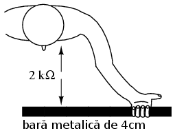
Figure 87: realizarea contactului cu o bară metalică cu o singură mână
Cu ambele mâini pe bară, suprafaţa de contact este de două ori mai mare decât cu o singură mână. Aceasta este o lecţie importantă de ţinut minte: rezistenţa electrică dintre două puncte de contact scade odată cu creşterea suprafeţei contactului, toţi ceilalţi factori rămânând constanţi. Dacă ţinem bara metalică cu ambele mâini, electronii au două căi paralele de curgere dinspre bară spre corp şi invers.

Figure 88: realizarea contactului cu o bară metalică cu două mâini
Conexiunea în paralel rezultă tot timpul într-o rezistenţă electrică totală mai mică decât oricare dintre rezistenţele conectate luate individual.
În industrie, valoarea de 30 V este considerată ca fiind pragul maxim de siguranţă; tot ce depăşeşte această valoare reprezintă un potenţial pericol de electrocutare.
- Folosiţi o singură mână când lucraţi cu circuitele electrice
Drumul urmat de curent prin corpul uman este foarte important atunci când vorbim de efectele sale asupra organismului. Curentul afectează orice fel de ţesut/muşchi prin care trece, şi din moment ce muşchii inimii şi ai plămânilor sunt cei mai importanţi pentru supravieţuire, şocurile de curent ce traversează pieptul trebuiesc privite ca fiind cele mai periculoase. Din această cauză, închiderea circuitului prin mâini (electrocutare) este cea mai probabilă cauză a accidentelor şi deceselor.
Pentru a veni în întimpinarea acestor scenarii neplăcute, este indicat să folosim o singură mână atunci când lucrăm cu circuitele electrice alimentate la tensiuni ce pot pune viaţa în pericol; cealată mână se va ţine departe de sursa de tensiune, preferabil în buzunar pentru a nu atinge din greşeală circuitul. Evident, cel mai sigur este să lucrăm tot timpul pe un circuit electric nealimentat, dar acest lucru nu este tot timpul practic sau posibil. Pentru lucrul cu o singură mână, este indicat să folosim mâna dreaptă, şi nu cea stângă, din două motive: majoritatea oamenilor sunt dreptaci (prin urmare îndemânarea este mai mare), iar inima este de obicei situată în partea stângă sau la mijlocul pieptului. Desigur, stângacii vor folosi mâna stângă pentru că deşi pericolul este mai mare în eventualitatea unui şoc electric, şansele apariţiei acestuia sunt mai mici datorită coordonării crescute faţă de mâna dreapta a acestora.
- Folosiţi echipamente şi instrumente de lucru izolate electric
Cea mai bună protecţie împotriva electrocutării este rezistenţa electrică, iar aceasta poate fi adăugată rezistenţei corpului prin folosirea instrumentelor de lucru, echipamentelor, mănuşilor şi încălţămintei izolate electric. Curentul prin circuit (factorul periculos la electrocutare) este raportul dintre tensiunea electrică prezentă şi valoarea totală a rezistenţei în calea curgerii curentului. Valoarea totală a rezistenţelor conectate în serie este mai mare decât valoarea oricărei rezistenţe luată individual (link!).

Figure 89: rezistenţa corpului într-un circuit electric
cu sursele de tensiune: curentul este limitat doar de rezistenţa

Figure 90: corpului
Circuitul echivalent pentru aceeiaşi situaţie, dar cu persoana în cauză purtând mănuşi şi încălţăminte de protecţie (izolate electric):

Figure 91: rezistenţa corpului plus cea a încălţăminte şi mănuşilor de protecţie într-un circuit electric
persoanele ce poartă mănuşi şi încălţăminte de protecţie: curentul este limitat acum de valoarea totală a rezistenţei din circuit

Deoarece curentul trebuie acum să treacă prin încălţăminte, prin corp şi prin mănuşi pentru a închide circuitul spre baterie, suma tuturor acestor rezistenţe se opune trecerii curentului într-o măsură mai mare decât oricare rezistenţă luată în parte.
- Siguranţa liniilor de înaltă tensiune
Siguranţa este unul din motivele pentru care conductoarele electrice sunt de obicei acoperite cu izolaţie de plastic sau cauciuc: pentru a creşte substanţial valoarea rezistenţei dintre conductori şi persoanele ce ar putea veni în contact cu acestea, oricare ar fi motivul. Din păcate, izolarea conductorilor din liniile electrice de înaltă tensiune este mult prea scumpă datorită cantităţii de izolaţie necesară pentru protecţia în caz de contact accidental; siguranţa la electrocutare în acest caz este asigurată prin construirea şi menţinerea acestora la înălţime (de aici şi denumirea de linii electrice aeriene (LEA)), pentru a evita în primul rând contactul accidental dintre acestea şi persoanele neautorizate.
3.4 Practici de bază
Dacă este posibil, închideţi întotdeauna alimentarea reţelei electrice înainte de atingerea oricăror elemente de circuit. Trebuie de asemenea asigurate toate sursele de energie înainte ca un sistem să poate fi considerat sigur. Asigurarea faptului că în circuit nu se află energie periculoasă (starea de energie zero) se face prin înlăturarea energiei potenţiale sau stocate din circuit.
- Asigurarea circuitelor cu ajurotul întrerupătoarelor
Toate circuitele ar trebui să aibă mecanisme de „deconectare” pentru asigurarea tensiunii din circuit. În unele cazuri, aceste dispozitive servesc un scop secundar în circuit, şi anume, deschiderea automată a acestuia în cazul în care valoarea curentului depăşeşte valoarea nominală permisă în circuit; În alte situaţii, întrerupătoarele de deconectare sunt operate manual nu automat. În ambele cazuri, acestea sunt utilizate pentru protecţie şi este necesară folosirea lor corespunzătoare. Trebuie avut în vedere faptul că aceste dispozitive de deconectare trebuie să fie diferite faţă de întrerupătoarele ce închid şi deschid circuitul în mod normal. Acestea sunt dispozitive de siguranţă pentru asigurarea stării de energie zero a circuitului:

Figure 92: întrerupător de siguranţă şi întrerupător de închidere/deschidere a circuitului
Cu întrerupător în poziţia deschis (precum în figură), continuitatea circuitului este întreruptă şi curentul din circuit este zero. Caderea de tensiune pe sarcină este şi ea zero, deoarece întreaga tensiune a sursei se regăseşte la bornele contactelor întrerupătorului deschis. Observaţi că nu este nevoie de încă un întrerupător în partea de jos a circuitului. Datorită faptului că acea parte din circuit este conectată la împământare, ea este electric comună cu pământul şi nu sunt necesare măsuri suplimentare de siguranţă. Pentru o siguranţă maximă a persoanelor ce lucrează pe partea de sarcină a circuitului, se poate stabili o legătură temporară la pământ a părţii superioare a circuitului, pentru a ne asigura că nu este posibilă în niciun fel apariţia unei căderi de tensiune la bornele sarcinii:
de putere prin realizarea unei împământări temporare a părţii din

Figure 93: circuit neconectate iniţial la împământare
După realizarea împământării temporare, ambele părţi ale sarcinii sunt conectate la pământ, asigurând o stare de energie zero la bornele acesteia.
Din moment ce existenţa împământărilor pe ambele părţi ale circuitului înseamnă practic scurt-circuitarea sarcinii cu un conductor, putem asigura circuitul prin exact această metodă:
de putere prin realizarea unui scurt-circuit cu ajutorul unui conductor

Figure 94: plasat între cele două părţi ale circuitului
Indiferent de măsura luată, ambele părţi ale sarcinii se vor afla la aceelaşi potenţial, cel al pământului, neexistând nicio cădere de tensiune între oricare parte/bornă a sarcinii şi persoanele ce lucrează în acel loc prin intermediul pământului. Această tehnică este des întâlnită atunci când se lucrează la întreţinerea liniilor electrice de înaltă tensiune din reţeaua de distribuţie a energiei electrice.
Chiar şi după luarea acestor măsuri de siguranţă, trebuie să ne asigurăm că într-adevăr nu există niciun fel de energie electrică prezentă în circuit. O modalitate este să acţionăm (închidem) întrerupătorul motorului/becului/ sau oricărui alt element din circuit la care lucrăm. Dacă acesta porneşte, înseamnă că încă mai există energie în circuit.
- Folosirea aparatului de măsură pentru asigurarea electrică a
circuitului
În afară de asta, va trebui întotdeauna să ne asigurăm de prezenţă tensiunilor electrice periculoase din circuit cu ajutorul unui aparat de măsură înaintea atingerii directe a oricărui element sau conductor din circuit. Paşii pentru asigurarea circutului cu ajutorul aparatului de măsură sunt următorii:
- Asiguraţi-vă că aparatul de măsură folosit indică corect o cădere de tensiune cunoscută; folosiţi-l pentru a măsura tensiunea unei bateri, de exemplu
- Folisiţi aparatul de măsură pentru determinarea prezenţei oricărei tensiuni electrice periculoase din circuit, doar după ce aţi urmat pasul de mai sus
- Este important să verificaţi încă odată funcţionalitatea aparatului de măsură pentru a vă asigura că şi acum indică valoarea corectă; puteţi folosi aceeiaşi baterie şi în acest caz
Chiar dacă aceste metode par exagerate sau chiar paranoice, cei trei paşi de mai sus sunt o metodă a cărei eficienţă a fost demostrată în practică. Există tot timpul riscul ca aparatul de măsură din dotare să fie defect chiar în momentul în care îl folosiţi pentru determinarea tensiunilor potenţial periculoase din circuit. Urmând paşii de mai sus, vă puteţi asigura că nu sunteţi păcăliţi de un aparat de măsură stricat. Eventual, folosiţi un al doilea aparat de măsură în cazul în care nu sunteţi absolut sigur de indicaţia primului aparat.
- Atingerea circuitului după luarea tuturor măsurilor de siguranţă
Într-un final, după ce toate măsurile de siguranţă au fost luate, atingerea directă a elementelor şi conductorilor din circuit este permisă. Atenţie totuşi, chiar şi după ce toate măsurile de siguranţă au fost urmate, este posibil ca încă să mai existe surse de tensiuni periculoase în circuit (deşi este puţin probabil). O ultimă măsură de precauţie constă în atingerea uşoară şi de scurtă durată a circuitului cu partea anterioară a palmei înainte de prinderea oricărui element de circuit în mână. De ce? În cazul în care încă mai există tensiune prezentă între acel element şi pământ, atingerea acestuia duce la strângerea degetelor în pumn datorită efectului curentului electric asupra muşchilor (link!) şi la îndepărtarea persoanei de locul periculos. Acesta este însă ultima măsură de siguranţă ce trebuie luată şi nu prima, şi nu trebuie folosită ca şi metodă alternativă de verificare a existenţei tensiunilor periculoase în circuit.
3.5 Reacţia în cazuri de urgenţă
În ciuda tuturor măsurilor de siguranţă luate, din când în când au loc şi accidente neplăcute. În majoritatea cazurilor acestea sunt urmarea nerespectării procedurilor de siguranţă. Dar indiferent de natura lor, este bine ca cei ce lucrează în domeniul sistemelor electrice să cunoască măsurile de prim ajutor ce trebuiesc acordate victimei electrocutării.
Primul lucru atunci când observăm o persoană „îngheţată pe circuit” este să oprim alimentarea cu energie electrică de la cel mai apropiat întrerupător. Dacă o a doua persoană vine în contact cu victima, există riscul ca valoarea căderii de tensiune asupra ambelor persoane să fie suficient de mare pentru electrocutarea amândoura, ducând la „îngheţarea” ambelor persoane pe circuit, nu doar a victimei iniţiale. Nu faceţi pe eroul! Electronii nu respectă eroismul.
Una dintre problemele acestei proceduri este imposibilitatea depistării la timp a sursei de energie electrică pentru salvarea victimei. Dacă funcţionarea inimii şi respiraţia victimei electrocutate sunt paralizate de curentul electric, durata de supravieţuire este extrem de limitată. Dacă şocul de curent este suficient de mare, carnea şi organele interne ale victimei sunt făcute scrum într-un timp foarte scurt.
Dacă nu se poate localiza întrerupătorul circuitului într-un timp suficient de scurt, se poate încerca dezlipirea victimei de pe circuit prin smulgere sau lovire cu ajutorul unui lemn uscat(coadă de mătură, de ex) sau orice alt material nonmetalic, izolant, ce poate fi găsit în împrejurime. O metodă bună de îndepărtare a victimei este folosirea unui prelungitor electric plasat în jurul corpului victimei şi tragerea acesteia din preajma circuitului. Ţineţi minte că victima va strânge conductorul cu toată forţ, prin urmare tragerea şi dezlipirea acesteia de pe circuit nu va fi deloc uşoară!
După îndepărtarea victimei de la sursa de energie electrică, cea mai mare problemă din punct de vedere medical este respiraţia şi circulaţia (pulsul). Pentru a preveni deoxigenarea victimei, se vor aplica metodele de resuscitare cardio-pulmonara (RCP), dacă salvatorul le cunoaşte, până la sosirea unui echipaj medical specializat.
Dacă victima este conştientă, aceasta trebuie ţinută pe loc până la sosirea unui echipaj medical specializat la locul accidentului. Există posibilitatea căderii victimei într-un şoc fiziologic - o situaţie în care circulaţia sângelui nu este suficientă, situaţie diferită de cea a şocului electric - prin urmare, temperatura şi confortul victimei trebuie să fie o prioritate. Este posibil ca un şoc electric iniţial insuficient pentru a cauza întreruperea imediată a bătăii inimii, să cauzeze probleme şi să duc la un infarct câteva ore mai târziu; victima va trebui să fie foarte atentă la condiţia ei generală după inicident, ideal, sub supraveghere.
3.6 Surse potenţiale de pericol
Cu siguranţă că există un adevărat pericol de electrocutare atunci când lucrăm într-un circuit electric. Totuşi, posibilitatea apariţiei electrocutării depăşeşte această graniţă datorită răspândirii aparatelor electrice în jurul nostru.
După cum am văzut, rezistenţa electrică a corpului şi a pielii este un factor foarte important atunci când vorbim de pericolul electrocutării. Cu cât rezistenţa corpului este mai mare, cu atât pericolul apariţiei unui curent periculos pentru aceeiaşi valoare a tensiunii este mai scăzut, şi invers.
Cea mai sigură modalitate de descreştere a rezistenţei pielii este udarea acesteia. Atingerea dispozitivelor electrice cu mânile sau picioarele ude sau transpirate (apa sărată este un conductor electric mult mai bun decât apa dulce) este periculoasă. În casă, baia este locul cel mai periculos din acest punct de vedere; din aceasta cauză se recomandă ca prizele să fie montate în afara baii iar pentru descurajarea utilizării dispozitivelor electrice deasupra căzii, chiuvetei sau a duşului. Nu folosiţi niciodată telefoane (fixe sau mobile), radiouri, casetofoane, laptop-uri sau orice alte dispozitive electrice, alimentate fie direct de la reţeaua de alimentare sau cu baterii, în incinta băii.
O altă sursă potenţială de pericol o reprezintă prelungitoarele electrice folosite acasă sau în industrie. Toate prelungitoarele trebuiesc verificate regulat; trebuie să ne asigurăm că izolaţia acestora nu este deteriorată sau crăpată. O metodă sigură de scoatere din funcţiune a prelungitoarelor deteriorate ce prezintă risc de electrocutare este scoaterea acestora din priză şi tăierea prezei mascul ce se conectează în mod normal la priză de alimentare; în acest fel, ne putem asigura că nimeni nu va folosi acel prelungitor până când nu este reparat. Această operaţie este importantă mai ales în industrie, acolo unde mai mulţi oameni folosesc acelaşi echipament şi nu toţi cunosc pericolul la care se pot expune.
Nu folosiţi niciodată un dispozitiv sau instrument electric dacă acesta prezintă probleme electrice de funcţionare. Acesta trebuie scos imediat din funcţiune şi nu trebuie refolosit până la remedierea situaţiei. La fel ca şi în cazul prelungitoarelo, orice dispozitiv electric poate fi scos (temporar) din funcţiune prin tăierea cablului de alimentare dupa deconectarea din circuit.
Liniile electrice căzute la pământ sunt un real pericol de electrocutare şi trebuiesc evitate în toate cazurile. Tensiunile prezente între liniile de alimentare sau între o linie de alimentare şi pământ sunt îm mod normal foarte mari. Dacă o linie electrică se rupe iar conductorul metalic cade la pământ, rezultatul imediat este producerea arcurilor electrice (scântei) suficient de puternice pentru smulgerea bucăţilor de ciment sau asfalt. Intrarea în contact cu o linie electrică alimentată căzută la pământ este moarte sigură, dar există şi alte pericole ce nu sunt aşa de evidente.
Când o linie atinge pământul, circuitul electric se închide prin pământ, ceea ce duce la apariţia unui curent prin acesta până la cel mai apropiat punct de împământare din sistem, asfel:
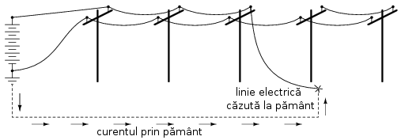
Figure 95: linie electrică căzută la pământ - posibilitatea apariţiei electrocutării
Pământul, fiind un conductor (chiar dacă unul prost), va conduce curentul între linia căzută la pământ şi cel mai apropiat punct de împământare, reprezentat de un conductor îngropat în pământ pentru un contact cât mai bun. Datorită faptului că pământul este un conductor electric mult mai slab decât conductoarele electrice de pe stâlpi, majoritatea căderii de tensiune se va regăsi între punctul de contact al cablului căzut la pământ şi conductorul folosit pentru împământare; căderea de tensiune în lungul cablului electric va fi mult mai mică (cifrele din figură sunt foarte aproximative):

Figure 96: linie electrică căzută la pământ - valorile aproximative ale căderilor de tensiune
Dacă distanţa dintre punctul de contact al liniei cu pământul şi locul împământării este mică, atunci va exista o cădere mare de tensiune pe o distanţă relativ scurtă. Prin urmare, o persoană ce stă pe pământ între aceste două puncte este în pericol de electrocutare datorită diferenţei de potenţial dintre picioarele sale (!!! Curentul „alege” calea cea mai puţin rezistentă din punct de vedere electric !!!)
ce se află între punctul de contact al liniei electrice şi punctul de

Figure 97: împământare al reţelei
Din nou, aceste cifre sunt foarte aproximative, dar ilustrează foarte bine principiul conform cărei o persoană poate deveni victimă a electrocutării datorită unei linii electrică căzute la pământ fără să intre în contact direct cu aceasta!
Un mod de a evita acest tip de electrocutare este ca atunci când obervăm o linie electrică căzută la pământ să facem contact cu pământul doar într-un singur punct; acest lucru îl putem realiza alergând (când alergăm, doar un singur picior atinge pământul deodată), sau, dacă nu avem unde fugi, să stăm într-un singur picior. Desigur, dacă putem să o facem, alegatul este cea mai bună opţiune. Eliminând contactul în două puncte cu pământul, nu va exista o diferenţă de potenţial şi nici o cădere de tensiune asupra corpului pentru pentru apariţia unui potenţial curent periculos prin organism.
3.7 Proiectarea aparatelor electrice
Odată cu realizarea împământării circuitului, cel puţin un punct din circuit este comun cu pământul şi prin urmare nu prezintă niciun risc de electrocutare. Într-un sistem electric simplu, format din două fire, conductorul conectat la împământare se numeşte neutru, iar celălalt conductor este conductorul sub tensiune sau fază:

Figure 98: legarea unei părţi a circuitului monofazat la împământare
În ceea ce priveşte sursa de alimentare şi sarcina propriu-zisă, existenţa punctului de împământare nu are niciun efect asupra funcţionării circuitului. Acesta există doar pentru siguranţa persoanelor ce intră în contact cu circuitul, şi înseamnă o căderea de tensiunea de 0 volţi între circuit şi pământ, tensiune la care atingerea circuitului este sigură. Conductorul aflat sub tensiune, în schimb, poate produce electrocutarea persoanelor ce vin în contact cu acesta în cazul în care alimentarea cu energie electrică nu este întreruptă în prealabil.
Este bine de înţeles această diferenţă de pericole între cei doi conductori într-un circuit electric simplu. Următoarele ilustraţii sunt realizate pe baza unui circuit electric de apartament/casă tipic (folosind curentul continuu în acest caz pentru simplitatea prezentării, şi nu curent alternativ).
Dacă luăm, de exemplu, un aparat electric, precum un prăjitor de pâine, cu o carcasă metalică, putem observa că teoretic acesta nu ar trebui să prezinte niciun pericol de electrocutare în cazul în care funcţionează corespunzător. Firele metalice din interiorul aparatului ce conduc curentul spre elementul de încălzire sunt izolate faţă de carcasa metalică, precum şi între ele, cu un material plastic sau de cauciuc.
reţeaua de alimentare - căderea de tensiune între carcasa metalică şi
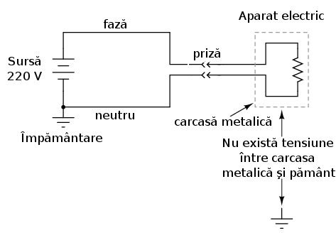
Figure 99: pământ este de 0 volţi
Totuşi, în cazul în care unul dintre firele existente în interiorul aparatului vine în contact direct cu carcasa metalică, potenţialul electric al acesteia va fi egal cu cel al firului, iar atingerea carcasei va fi în acest caz la fel de periculoasă precum atingerea directă a firului. Dacă aceasta situaţie duce sau nu la electrocutare depinde de natura firului ce atinge carcasa:
reţeaua de alimentare; la contactul accidental dintre fază şi carcasa metalică, există o cădere de tensiune potenţial periculoasă între
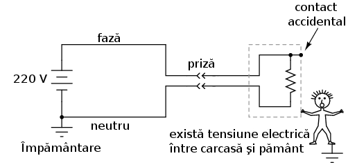
Figure 100: carcasă şi pământ
În cazul în care firul ce intră în contact cu carcasa metalică este faza (firul aflat „sub tensiune”), utilizatorul aparatului se află într-un real pericol. Pe de altă parte, dacă neutrul este cel ce atinge carcasa metalică, nu există niciun pericol de electrocutare:
reţeaua de alimentare; la contactul accidental dintre neutru şi carcasa
metalică, nu există niciun pericol de electrocutare

Pentru a se asigura că primul caz este mai puţin probabil decât celălalt, se încearcă în general proiectarea aparatelor electrice asfel încât riscul ca faza să intre în contact direct cu carcasa metalică să fie minim. Totuşi, această măsură preventivă este eficientă doar în cazurile în care polaritatea prizei poate fi garantată. Dacă polaritatea acesteia poate fi inversată, atunci firul ce intră în contact cu carcasa poate la fel de bine să fie cel aflat sub tensiune:
reţeaua de alimentare; inversarea polarităţii prizei înseamnă ca orice fir care vine în contact cu carcasa prezintă un potenţial pericol de

Figure 101: electrocutare
Aparatele electrice proiectate asfel se folosesc la prizele polarizate, un picior al conectorului fiind mai lat iar celălalt mai îngust (prizele sunt şi ele construite în acest fel). Prin urmare, conectorul nu poate fi introdus „inver” în priză, iar identitatea firelor din interiorul aparatului poate fi asigurată în acest fel. Acest lucru nu are niciun efect asupra funcţionării aparatului, ci serveşte doar ca şi mijloc de siguranţă în utilizare.
O altă metodă este realizarea carcasei exterioare a aparatului dintr-um material non-conductiv. Asfel de aparate se numesc dublu-izolate, doarece carcasa serveşte ca şi izolaţie adiţională pe lângă cea oferită de conductori. Dacă se întâmplă ca un fir din interiorul aparatului să intre în contact cu carcasa, aceasta nu prezintă niciun pericol de electrocutare pentru utilizator.
Iar o altă metodă constă în menţinerea carcasei metalice, dar şi adăugarea unui al treilea conductor între punctul de împământare şi carcasa metalică pentru asigurarea unei legături directe şi sigure între aceasta şi pământ:
reţeaua de alimentare; folosirea prizei cu împământare pentru
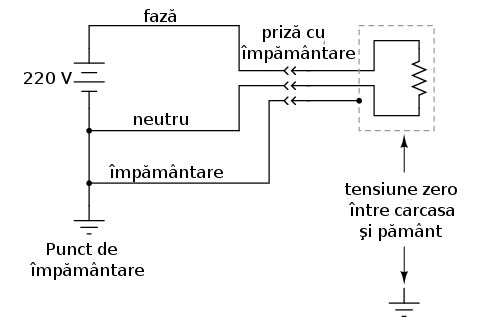
Figure 102: înlăturarea pericolului electrocutării
Al treilea contact al conectorului prezent la capătul cablului de alimentare asigură o conexiune directă între carcasa metalică a aparatului şi pământ. Cele două puncte fiind în acest caz electric comune, nu poate exista nicio cădere de tensiune între ele. Dacă firul aflat sub tensiune (faza) atinge accidental carcasa metalică, se va produce un scurt-circuit prin sursa de tensiune şi firul de împământare, scurt-circuit ce va declanşa dispozitivele de protecţie la supracurent. Utilizatorul aparatului se va afla în siguranţa în tot acest timp.
Datorită acestui lucru, nu îndepărtaţi niciodată al treilea contact al prizei în cazul în care doriţi să introduceţi un conector fară împământare într-o priză cu împământare! Aparatul va funcţiona în continuare fără nicio problemă, dar, prin îndepărtarea acestui conctact, nu va mai exista nicio legătură directă între carcasa metalică a aparatului şi pământ, existând asfel un real pericol de electrocutare pentru persoanele ce vin în contact direct cu carcasa aparatului în cazul apariţiei defectelor.
- Detectarea diferenţei de curent între fază şi neutru
Asigurarea împotriva electrocutării se poate realiza şi în altă parte, nu doar asupra aparatului electric, asfel:

Figure 103: conectarea unui aparat electric cu carcasă metalică la reţeaua de alimentare;
În cazul unui aparat electric ce funcţionează corespunzător, precum în figura de mai sus, valoarea curentului măsurat prin fază ar trebui să fie exact aceeiaşi cu valoarea curentului măsurat prin neutru, datorită faptului că există o singură cale pentru deplasarea electronilor. Dacă nu există nicio defecţiune în interiorul aparatului, nu există niciun pericol de electrocutare.
În schimb, dacă faza atinge accidental carcasa metalică, va exista un curent prin persoana electrocutată şi prin pământ, ce reduce curentul prin neutru şi amplifică valoarea sa prin fază, ducând la o diferenţă de curent între cele două:
reţeaua de alimentare; diferenţa de curent între fază şi neutru în cazul
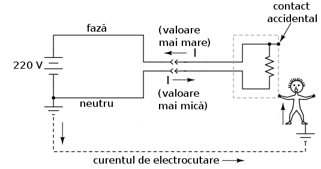
Figure 104: electrocutării
Diferenţa de curent între cei doi conductori, fază şi neutru, va exista doar în cazul existenţei unui curent prin împământare, caz în car există o defecţiune în sistem. O asfel de diferenţă a valoriilor curenţilor poate fi folosită pentru detectarea defecţiunilor şi a existenţei pericolului de electrocutare. Dacă folosim un dispozitiv pentru măsurarea diferenţei de curent dintre cei do conductori, existenţa acesteia poate fi folosită pentru deschiderea unui întrerupător pentru a întrerupe asfel alimentarea cu energie electrică de la reţea şi prevenirea electrocutării:
reţeaua de alimentare; deschiderea automată a întrerupătorului în cazul existenţei unei diferenţe prea mari între curenţii fazei şi al neutrului 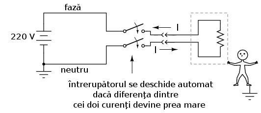
3.8 Utilizarea aparatelor de măsură
Utilizarea corectă şi în condiţii de siguranţă a unui aparat de măsură este o deprindere extrem de importantă pentru orice electrician sau electronist. Această utilizare prezintă un anumit risc de electrocutare datorită tensiunilor şi curenţilor prezenţi în circuitul de măsurat. Din această cauză, trebuie acţionat foarte atent atunci când utilizăm aparatele de măsură.
Cel mai utilizat aparat de măsură electric poartă numele de multimetru. Denumirea vine de la faptul că aceste aparate sunt capabile să măsoare o plajă largă de variabile, precum tensiune, curent, rezistenţă şi altele. În mânile unei persoane competente, multimetrul reprezintă un instrument de lucru eficient dar şi un dispozitiv de protecţie. În mâinile unei persoane ignorante sau neatente, acesta poate deveni o reală sursă de pericol la conectarea într-un circuit alimentat.
Cu siguranţă că există o multitudine de modele, fiecare cu caracteristici diferite, totuşi, multimetrul prezentat aici este unul general, utilizat pentru prezentarea principiilor sale de bază.

Figure 105: multimetru digital; prezentare generală
Putem observa că afişajul este digital, din acest motiv, acest tip de multimetru mai poartă numele de multimetru digital. Selectorul rotativ (setat pe poziţia Off (închis) în acest caz) se poate găsi în 5 poziţii diferite: 2 poziţii „V” (tensiune), 2 poziţii „A” (curent), şi o poziţie Ω (rezistenţă). De asemenea, poziţia marcată cu o pereche de linii orizontale, paralele, una continuă şi cealaltă întreruptă, reprezintă curentul continuu, iar poziţie reprezentată cu ajutorul unei forme de undă sinusoidale, reprezintă curentul alternativ. Cu alte cuvinte, intern, multimetrul utilizează metode diferite pentru măsurarea curentului şi a tensiunii în curent continuu respectiv curent alternativ, de aici şi necesitatea existenţei a două poziţii pentru fiecare dintre cele două variabile.
Pe suprafaţa multimetrului există trei prize în care putem introduce sondele de test. Sondele nu sunt altceva decât conductori speciali utilizaţi pentru realizarea legăturii dintre circuit şi multimetru. Condcutorii sunt acoperiţii de o izolaţie colorată, neagră sau roşie, pentru a preveni contactul direct, iar vârfurile sunt ascuţite şi rigide.
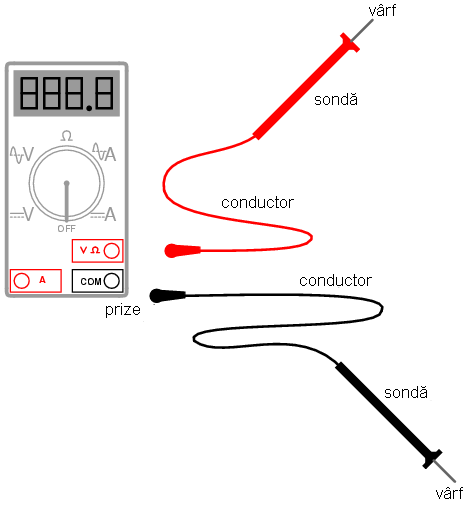
Figure 106: multimetru digital; prezentare generală
Sonda neagră va fi tot timpul introdusă în priza neagră a multimetrului, cea marcată cu „COM” (comun). Sonda roşie va fi introdusă fie în priza marcată pentru tensiune şi rezistenţă (V Ω) sau în cea pentru curent (A), în funcţie de ce variabilă dorim să măsurăm.
3.8.1 Utilizarea multimetrului - exemple
- Măsurarea unei tensiuni de curent continuu

Figure 107: multimetru digital; măsurarea tensiunii de curent continuu a unei baterii
Primul exemplu constă din măsurarea unei tensiuni de c.c. la bornele unei baterii. Observaţi prizele la care sunt conectate cele două sonde ale multimetrului (V Ω şi COM) şi faptul că selectorul este setat pe „V” în curent continuu.
- Măsurarea unei tensiuni de curent alternativ
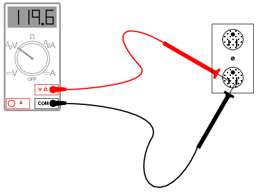
Figure 108: multimetru digital; măsurarea tensiunii de curent alternativ la priză
Singura diferenţa constă în schimbarea poziţiei selectorului pe poziţie „V” în curent alternativ. Din moment ce efectuăm tot o măsurătoare de tensiune, sondele multimetrului vor rămâne conectate în aceleaşi prize.
- Surse de pericol
În ambele cazuri de mai sus, este extrem de important să nu atingem vârfurile celor două sonde între ele, atunci când acestea se află în contact cu punctele lor respective din circuit. Dacă acest lucru are loc, se va forma un scurt-circuit, lucru pe care nu-l dorim.

Figure 109: multimetru digital; măsurarea tensiunii de curent alternativ la priză
Măsurarea tensiunilor este probabil cea mai folosită funcţie a unui multimetru. Este cu siguranţă cea mai folosită metodă pentru asigurarea împotriva electrocutărilor, şi din acest motiv, trebuie foarte bine înţeleasă de către utilizatorul acestuia. Fiindcă tensiunea este tot timpul relativă între două puncte, aparatul de măsură trebuie să fie conectat între două puncte din circuit pentru a putea oferi un rezultat satisfăcător. Acest lucru înseamnă că ambele sonde trebuie ţinute de mânile utilizatorului pentru crearea contactelor. Dar ştim deja că cea mai periculoasă cale pentru curent, în cazul electrocutărilor, este între cele două mâini, deoarece curentu în acest caz trece direct prin inimă; din această cauză, o astfel de măsurătoare reprezintă tot timpul un potenţial pericol.
Dacă izolaţia sondelor este deteriorată sau crăpată, degetele utilizatorului pot intra în contact direct cu conductorii de curent în timpul măsurătorilor. Dacă putem folosi doar o singură mână pentru ambele sonde, aceasta ar fi cea mai sigură metodă de efectuare a măsurătorilor. Câteodată este posibilă „agăţarea” uneia dintre sonde pe circuit, nefiind nevoiţi să o mai ţinem în mână; acest lucru reprezintă o reducere a pericolului electrocutării. Pentru această operaţie, exista accesorii speciale ce pot fi ataşate pe vârful sondelor.
Ţineţi minte că sondele aparatului de măsură sunt parte integrantă a aparatului însuşi. Dacă aveţi nevoie de accesorii speciale pentru sonde, consultaţi catalogul producătorului aparatului de măsură sau cataloagele altor producători de echipamente de măsură. Nu încercaţi să vă construiţi propriile sonde! Proiectarea sau realizarea lor defectuoasă vă pot pune într-un real pericol atunci când lucraţi într-un circuit alimentat!
De asemenea, trebuie ţinut minte că multimetrele digitale realizează diferenţa dintre c.c. şi c.a. După cum am văzut mai devreme, atât tensiunile de curent continuu cât şi cele de curent alternativ se pot dovedi periculoase; prin urmare, când folosiţi un multimetru pentru asigurarea unui circuit împotriva electrocutării, fiţi siguri că aţi efectuat măsurătorile atât în c.c. cât şi în c.a., chiar daca nu v-aţi aştepta să le găsiţi pe amandouă!
- Numărul măsurătorilor necesare
Atunci când verificăm prezenţa unor posibile tensiuni periculoase, trebuie să luăm în calcul toate punctele din scenariul respectiv.
De exemplu, să presupunem că deschidem un panou electric şi găsim trei conductori ce alimentează o sursă în curent alternativ. Oprim alimentarea prein intermediul întrerupătorului, încercăm să pornim sarcina pentru a verifica absenţa oricărei tensiuni şi vedem că nu se întâmplă nimic. Următorul pas îl reprezintă măsurarea tensiunii cu ajutorul aparatului de măsură.
Prima dată verificăm aparatul de măsură asupra unei surse de tensiune cunoscute, pentru a ne asigura de funcţionarea sa corectă (priză de c.a., de exemplu). Facem acest lucru şi observăm ca multimetrul funcţionează corect. Apoi, trebuie să măsurăm căderea de tensiune dintre aceste fire ale panoului. Dar tensiunea reprezintă o valoare între două puncte, prin urmare, ce puncte trebuie să luăm în considerare?
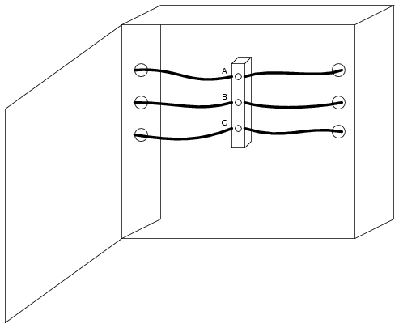
Figure 110: panou electric; schiţă
Adevărul este că trebuie să măsurăm căderea de tensiune între toate combinaţiile posibile, A cu B, B cu C şi A cu C. Dacă măsurăm o cădere de tensiune diferită de zero, în oricare din aceste scenarii, circuitul nu se află într-o stare de energie zero. Dar asta nu e tot. Un multimetru nu va înregistra tensiunile de c.c. atunci când selectorul este poziţionat pe c.a. şi invers; prin urmare, trebuie să mai efectuăm un set de trei măsurători pentru fiecare din cele două stări.
Totuşi, nici în acest caz nu am reuşit să acoperim toate posibilităţile. Ţineţi minte că tensiunile periculoase pot să apară între oricare dintre conductori şi pământ (în cazul de faţă, carcasa metalică a panoului electric). Prin urmare, trebuie să măsurăm căderile de tensiune şi între fiecare din cele trei puncte şi pământ, atât în c.c cât şi în c.a. Acest lucru duce numărul măsurătorilor la 12, pentru un scenariu aparent simplu. Desigur, după ce toate măsurătorile au fost încheiate, trebuie să re-testăm funcţionarea corectă a multimetrului, prin măsurarea unei căderi de tensiune cunoscute (priza, de exemplu).
- Măsurarea rezistenţelor
În cazul măsurării rezistenţelor, sondele vor rămâne conectate în aceleaşi prize ale multimetrului ca şi în cazul măsurătorilor de tensiune, dar selectorul trebuie poziţionat pe Ω (vezi figura). Măsurătoarea se realizează simplu, prin poziţionarea vârfurilor celor două sonde pe capetele libere ale rezistorilor.
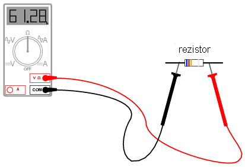
Figure 111: panou electric; schiţă
Atenţie însă, măsurarea rezistenţelor se face doar asupra componentelor nealimentate! Atunci când multimetrul se află în modul „rezistenţă”, acesta se foloseşte de o mică baterie internă pentru generarea unui curent mic prin componentul de măsurat. Prin sesizarea dificultătii de trecere a curentului prin component, se poate determina rezistenţa acestuia. Dacă există o sursă adiţională de tensiune în circuitul format din aparatul de măsură şi componentul în cauză, măsurătorile realizate vor fi greşite. În cel mai rău caz, prezenţa unei surse adiţionale de tensiune în circuit, poate duce la defectarea aparatului de măsură.
- Continuitatea firelor
Modul „rezistenţă” a unui multimetru este foarte folositor şi pentru determinarea continuitătii conductorilor. Atunci când exista o un contact bun între vârfurile sondelor, aparatul va indicat o valoarea aproximativ egală cu 0 Ω. Dacă sondele nu ar prezenta nicio rezistenţa internă, această măsurătoare ar da exact 0 Ω.
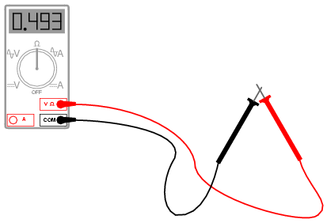
Figure 112: multimetru digital; atingerea sondelor între ele
Dacă sondele nu se află în contact direct una cu cealaltă, sau daca sunt conectate la capetele opuse ale unui conductor întrerupt, acesta va indica o rezistenţă infinită, reprezentată de obicei pe afişajul multimetrului prin prescurtarea „O.L.” (open loop (eng.) - circuit deschis).
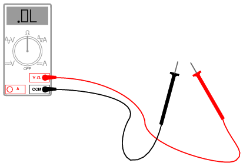
Figure 113: multimetru digital; circuit deschis (O.L.)
- Măsurarea curentului cu ajutorul multimetrului
Aceasta reprezintă cea mai complexă şi periculoasă aplicaţie a multimetrului. Motivul este destul de simplu: curentul de măsurat trebuie să treacă prin aparatul de măsură, ceea ce înseamnă că multimetrul trebuie integrat în circuit. Pentru a realiza acest lucru, circuit iniţial trebuie oprit, iar multimetrul conectat între cele două puncte ale circuitului deschis. Pentru realizarea propriu-zisă a măsurătorii, selectorul trebuie să se afle în poziţia „A”, fie în c.a., fie în c.c., iar sonda roşie trebuie introdusă în priza marcata cu „A” (vezi figura).
Figure 114: multimetru digital; măsurarea curentului
Următorul pas este deschiderea circuitului pentru a putea conecta multimetrul.

Figure 115: multimetru digital; măsurarea curentului; deschiderea circuitului
Închiderea circuitul se realizează apoi prin multimetru, astfel: conectăm vârfurile sondelor la captele libere ale circuitului deschis, sonda neagră la terminalul negativ al bateriei de 9 V, iar sonda roşie la capătul conductorului liber ce duce la bec.

Figure 116: multimetru digital; măsurarea curentului; închiderea circuitului prin intermediul multimetrului
Deşi acest circuit, cu o sursă de 9 V, este sigur din punct de vedere al electrocutărilor, în circuitele de putere această metodă reprezintă o adevărată sursă de pericol.
- Selectarea curentului sau a tensiunii
La modificarea poziţiei multimetrului din modul „curent” (ampermetru) în modul „tensiune” (voltmetru), se întâmplă adesea să schimbăm poziţia de pe „A” pe „V” dar să uităm sonda roşie în priza „A” şi nu în priza (V Ω). Dacă aparatul de măsură este apoi conectat la bornele unei surse de tensiune suficient de mare, rezultatul va fi un scurt-circuit prin aparatul de măsură. Atunci când multimeturl se află în poziţia „A”, acesta este proiectat pentru o rezistenţă între vârfurile sondelor ce tinde practic la 0 Ω. În poziţia „V”, lucrurile stau exact invers, rezistenţa dintre vârfurile sondelor este de ordinul mega-ohmilor (MΩ).
folosit pentru măsurarea tensiunii; apariţia scurt-circuitului

Pentru a preveni acest lucru, majoritatea multimetrlor produc un avertisment sonor în cazul în care sonda este introdusă în priza „A” iar selectorul este poziţionat pe „V”.
- Verificarea siguranţei fuzibile interne
Toate multimetrele de calitate sunt echipate cu siguranţe fuzibile în interior, siguranţe ce se ard la trecerea unui curent excesiv prin ele, precum este cazul exemplului anterior. La fel ca toate dispozitivele de siguranţă, şi aceste siguranţe sunt proiectate în primul rând pentru protecţia echipamentului şi doar apoi pentru protecţia utilizatorului. Un multimetru poate fi utilizat pentru verificarea propriei siguranţe prin setarea pe poziţia „Ω”, iar sondele pe poziţia „A” respectiv „V Ω”. Verificarea se realizează prin contactul direct al celor două sonde.
Figure 117: multimetru digital; verificarea siguranţei fuzibile interne
O siguranţa bună va indica o rezistenţa foarte mică, pe când o siguranţa arsă va indica tot timpul un circuit deschis (O.L.). Valoarea măsurătorii nu este de o importanţă foarte mare, atâta timp cât este mica.
4 Notatia stiintifica
4.1 Notaţia ştiinţifică
4.1.1 Scop
În multe discipline ştiinţifice şi inginereşti, trebuie să lucrăm adesea cu valori foarte mari sau foarte mici. Unele dintre aceste cantităţi sunt foarte greu de reprezentat, fiind extrem de mari sau extrem de mici. Să luăm ca şi exemplu masa protonului, una dintre particulele nucleului atomului:
masa protonului = 0,00000000000000000000000167 grame
Sau, numărul de electronic ce trec printr-un punct al unui circuit în fiecare secundă, sub influenţa unui curent de 1 Amper:
1 Amper = 6.250.000.000.000.000.000 electroni pe secundă
În ambele cazuri, avem de a face cu mulţi de zero. Evident, este destul de incomod să lucrăm cu atât de multe cifre, chiar şi cu ajutorul calculatoarelor.
4.1.2 Cifre semnificative
În cazul celor două numere de mai sus, putem observa că există relativ puţine cifre diferite de zero în componenţa acestora. În cazul masei protonului, avem doar „167” precedat de 23 de zero înainte de virgula (decimală). Pentru numărul de electroni pe secundă într-un Amper, avem „625” urmat de 16 zerouri. Numim aceste cifre diferite de zero (de la prima la ultima), plus oricare zerouri ce se află între aceste limite, „cifrele semnificative” ale oricărui număr.
Cifrele semnificative rezultate în urma unei măsurători reale indică de obicei acurateţea acelei măsurători. De exemplu, dacă spunem că o maşină cântăreşte 1.000 kg, probabil că nu dorim să fim foarte exacţi referitor la greutatea acesteia, ci am făcut o rotunjire aproximativă şi comodă. Această valoare conţine doar o cifră semnificativă, şi anume, „1”-ul din faţa, zerourile fiind folosite în acest caz doar pentru a indica un multiplu al primei cifre, şi nu „posedă” nicio valoare. Touşi, dacă am spune că maşina cântăreşte 1.005 kg, atunci valoarea ar avea 4 cifre semnificative, şi anume „1.005”, iar în acest caz, zerourile sunt parte componentă a mărimii măsurate.
În aceeiaşi ordine de idei, numerele cu mai mulţi de zero nu sunt neapărat reprezentative pentru o anumita cantitate reală până la punctul decimal. În acest caz, un asemenea număr poate fi scris printr-o prescurtarea matematică pentru a fi mai uşor de citit. Prescurtarea poartă denumirea de notaţia ştiinţifică.
- Numere mari folosind notaţia ştiinţifică
Folosind notaţia ştiinţifică, un număr poate fi scris prin intermediul cifrelor semnificative ca şi o valoare între 1 şi 10 (sau -1 şi -10 pentru numerele negative), iar zerourile sunt reprezentate ca şi puteri ale lui 10. De exemplu:
1 Amper = 6.250.000.000.000.000.000 electroni pe secundă poate fi scris sub forma 1 Amper = 6,25 x 1018 electroni pe secundă
10 la puterea 18 (1018) înseamnă 10 înmulţit cu el însuşi de 18 ori, sau, un 1 urmat de 18 zerouri. Înmulţit cu 6,25, rezultă „625” urmat de 16 zerouri (luăm 6,25 şi mutăm virgula cu 18 locuri spre dreapta). Avantajele notaţiei ştiinţifice sunt evidente: numărul nu mai este atât de „imposibil” de scris iar cifrele semnificative sunt foare uşor de identificat.
- Numere mici folosind notaţia ştiinţifică
Ce putem face însă în cazul numerelor foarte mici, precum masa protonului în grame? Putem folosi şi în acest caz notaţia ştiinţifică, doar că puterile lui 10 vor fi negative în acest caz, şi nu pozitive, ceea ce se traduce printr-o deplasare a virgulei decimale înspre stânga şi nu înspre dreapta, precum în cazul precedent.
masa protonului = 0,00000000000000000000000167 grame poate fi scrisă sub forma masa protonului = 1,67 x 10-24 grame
10 ridicat la puterea -24 (10-24) înseamnă inversa (1 / x) lui 10 înmulţit cu el însuşi de 24 de ori, sau, un 1 precedat de o virgulă decimală şi de 23 de zerouri. Înmulţit cu 1,67, rezultatul este „167” precedat de virgula decimală şi 23 de zerouri. La fel ca şi în cazul numerelor foarte mari, este mult mai uşor pentru o persoană să utilizeze notaţia prescurtată. Şi în acest caz, cifrele semnificative sunt exprimate clar.
Revenind la exemplul precedent, putem exprima valoarea de 1.000 kg cu ajutorul notaţiei ştiinţifice, astfel:
greutatea = 3 x 103 kg
În cazul în care maşina ar cântări 1.005 kg, notaţia ştiinţifica ar fi următoarea:
greutatea = 3,005 x 103 kg
4.2 Aritmetica notaţiei ştiinţifice
4.2.1 Înmulţirea numerelor sub forma notaţiei ştiinţifice
Beneficiile notaţiei ştiinţifice nu se opresc doar la uşurinţa scrierii numerelor. O asemenea notaţie este uşor de folosit în cazul înmulţirii şi împărţirii numerelor. Să presupunem, de exemplu, că vrem să aflăm numărul de electroni ce trec printr-un anumit punct al unui circuit ce transportă un curent de 1 A într-o perioadă de 25 de secunde. Dacă ştim numărul de electroni pe secundă din circuit (ceea ce cunoaştem), tot ceea ce trebuie să facem este să înmulţim acea cantitate cu numărul de secunde (25) pentru aflarea răspunsului:
(6.250.000.000.000.000.000 electroni pe secundă) x (25 secunde) = 156.250.000.000.000.000.000 electroni în 25 de secunde
Utilizând notaţia ştiinţifică putem reformula problem astfel:
(6,25 x 1018 electroni pe secundă) x (25 secunde)
Dacă luăm „6,25” şi îl înmulţim cu 25, obţinem 156,25. Prin urmare, răspunsul poate fi scris astfel:
156,25 x 1018 electroni
Totuşi, dacă dorim să menţinem convenţia standard a notaţiei ştiinţifice, trebuie să reprezentăm cifrele semnificative ca şi numere între 1 şi 10. În cazul de faţă, „1,5625” înmulţit cu o anumită putere a lui 10. Pentru a obţine 1,5625 din 156,25, trebuie să trecem virgula decimală cu două locuri în stânga. Acest lucru se realizează astfel:
156,25 = 1,5625 x 102
Adică, mutăm virgula decimală cu două poziţii în stânga, dar în acelaşi timp înmulţim numărul nou format cu 10 la puterea 2 (numărul de poziţii). Rezultatul final arată acum astfel (înmulţim numărul de mai sus cu 1018):
1,5625 x 1020 deoarece, 10a x 10b = 10a + b
Dacă am dori în schimb să aflăm numărul de electroni ce trec într-un interval de o oră (3.600 secunde)? În acest caz, putem trece şi timpul sub forma notaţiei ştiinţifice:
6,25 x 1018 x 3,6 x 103
Pentru realizarea acestui produs (înmulţire), înmulţim cele două cifre semnificative între ele (6,25 şi 3,6), precum şi cele două puteri ale lui zece între ele, astfel:
6,25 x 3,6 = 22,5 1018 x 103 = 1021
Ceea ce înseamnă:
22,5 x 1021 electroni sau 2,25 x 1022 electroni
4.2.2 Împărţirea numerelor sub forma notaţiei ştiinţifice
Pentru ilustrarea operaţiei de împărţire cu numere sub forma notaţiei ştiinţifice, putem să luăm exemplul de mai sus invers, şi anume, să aflăm cât timp le-ar trebui acelui număr de electroni (2,25 x 1022) să treacă prin circuit, în cazul unui curent de 1 A:
(2,25 x 1022 electroni) / (6,25 x 1018 electroni pe secundă)
La fel ca şi în cazul înmulţirii, putem realiza calculele separat pentru cifrele semnificative şi pentru puterile lui zece:
(2,25 / 6,25) x (1022 / 1018) 0,36 x 104 sau 3,6 x 103 secunde deoarece, 10a / 10b = 10a - b
Putem vedea că am ajuns la aceeiaşi valoarea, 3600 secunde (3,6 x 103).
4.3 Notaţia metrică
Sistemul metric, pe lângă faptul că reprezintă o colecţie de unităţi de măsură pentru diferite mărimi fizice, este structurat în jurul conceptului de notaţie metrică. Diferenţa faţa de notaţia ştiinţifică o reprezintă faptul că puterile lui zece sunt reprezentate cu ajutorul prefixelor alfabetice. În imaginea alăturată sunt prezentate câteva dintre cele mai uzuale prefixe alături de reprezentarea sub forma puterilor lui zece

Urmărind această scală, putem vedea că, de exemplu, 2,5 Giga înseamnă de fapt 2,5 x 109, sau 2,5 miliarde. De asemenea, 3,21 pA (picoamperi) înseamnă 3,21 x 10-12 Amperi.
Deoarece majoritatea prefixelor în sistemul metric se referă la puteri ale lui 10 ce sunt multiplii de 3, notaţia metrică diferă de notaţia ştiinţifică prin faptul că cifrele semnificative se pot regăsi oriunde în intervalul 1 - 1000, în funcţie de prefixul ales. De exemplu, pentru o greutate de 0,000267 grame, cele două notaţii arată astfel:
2,67 x 10-4 g (notaţia ştiinţifică) 267 µg (notaţia metrică) sau 0,267 mg (notaţia metrică)
4.3.1 Conversia prefixelor metrice
Pentru a exprima o cantiate printr-un prefix metric diferit faţă de cel iniţial, trebuie doar să mutăm virgula decimală spre stânga sau spre dreapta, în funcţie de caz.
De exemplu, să exprimăm 0,000023 A (amperi) în mA (microamperi). Putem observa că 0,000023 A nu utilizează niciun prefix metric, ci reprezintă doar unitatea de măsură „pură”. Din graficul de mai sus, vedem că micro (µ) reprezintă 10-6, prin urmare, trebuie să deplasăm virgula decimală cu 6 poziţii spre drepta, iar rezultatul arată astfel:
0,000023 A = 23 µA
Un alt exemplu: dorim să exprimăm 304.212 V (volţi) în kV (kilovolţi). Din nou, putem observa că acest număr nu are momentan niciun prefix. Astfel, dacă dorim să trecem de la 100 (vezi graficul de mai sus) la 103 (kilo) în stânga, trebuie să mutăm virgula decimală cu 3 poziţii spre stânga:
304.212 V = 304,212 kV
Să presupunem acum că dorim să transformăm 50,3 MΩ (megaohmi) în mΩ (miliohmi). 50,3 MΩ înseamnă 50,3 x 106. Uitându-ne pe graficul de mai sus, observăm că de la mega la mili există o diferenţa de 9 puteri ale lui zece (de la 106 la 10-3, de la stânga la dreapta), prin urmare, trebuie să deplasăm virgula decimală cu 9 poziţii spre drepta:
50,3 MΩ = 50.300.000.000 mΩ
5 Serie paralel
5.1 Ce sunt circuitele „serie” şi „paralel”
Circuitele formate dintr-o singură baterie şi o singură rezistenţă sunt foarte uşor de analizat, dar nu sunt foarte des întâlnite în practică. De obicei circuitele conţin mai mult de două componente conectate între ele
Există două modalităţi de bază în care putem conecta mai mult de două componente într-un circuit: serie şi paralel. Mai jos e un exemplu de circuit serie:

Figure 119: circuit serie
În acest circuit avem 3 rezistori (R1,R2 şi R3) conectaţi într-un singur lanţ de la un terminal al bateriei la celălalt. Caracteristica principală a unui circuit serie este existenţa unei singure căi pentru curgerea electronilor.
Să ne uităm acum şi la celălalt tip de circuit, cel paralel:

Figure 120: circuit paralel
Şi în acest caz avem tot 3 rezistori, dar de data această există mai multe căi pentru curgerea electronilor. Există o cale de la 8 la 7, 2, 1 şi înapoi la 8. Mai exista una de la 8 la 7, 6, 3, 2, 1 şi înapoi la 8. Şi mai există o a treia cale de la 8 la 7, 6, 5, 4, 3, 2, 1 şi înapoi la
- Fiecare cale individuală (prin R1,R2 şi R3) poartă denumirea
de ramură
Caracteristica definitorie pentru un circuit paralel este faptul că toate componentele sunt conectate electric între aceleaşi seturi de puncte. În circuitul de mai sus, punctele 1, 2, 3 şi 4 sunt toate comune din punct de vedere electric. La fel şi punctele 8, 7, 6 şi 5. Toate rezistoarele, precum şi bateria, sunt conectate între aceste două puncte.
Desigur, complexitatea nu se opreşte nici la circuite serie sau paralel! Putem avea de asemenea circuite ce sunt o combinaţie dintre acestea două:
Figure 121: circuit serie-paralel
În acest circuit, avem două ramuri prin care electroni pot să circule: una de la 6 la 5, 2, 1 şi înapoi la 6, iar altă ramură de la 6 la 5, 4, 3, 2, 1 şi înapoi la 6. Observaţi cum ambele drumuri trec prin R1 (de la punctul 2 spre punctul 1). În această configuraţie, spunem că R1 şi R2 sunt paralele între ele, în timp ce R1 este în serie cu combinaţia paralelă R1 şi R2.
Idea de bază într-o conexiune serie este conectarea componentelor de la un capăt la altul într-o linie dreaptă:

Figure 122: conexiune serie
Idea de bază într-o conexiune paralel, pe de altă parte, este că toate componentele sunt conectate între la aceleaşi capete. Într-un circuit pur paralel, nu există niciodată mai mult de două puncte comune, indiferent de numărul componentelor din circuit conectate. Există mai mult de o singură cale pentru deplasarea electronilor, dar o singură cădere de tensiune asupra tuturor componentelor"

Figure 123: conexiune paralel
Cele două tipuri de configuraţii, serie şi paralel, prezintă proprietăţi electrice total diferite.
5.2 Circuite serie simple
Să începem cu un circuit electric format dintr-o baterie şi trei rezistori:

Figure 124: circuit serie
Primul principiu pe care trebuie să-l înţelegem legat de circuitele serie este păstrarea constantă a valorii curentului în întreg circuitul, şi prin urmare, prin fiecare component (prin fiecare component va trece aceeiaşi cantitate de curent electric). Acest lucru se datorează existenţei unei singurei căi pentru trecerea electronilor, iar dacă privim circuitul ca un tub cu bile, putem înţelege de ce rata de deplasare a bilelor trebuie să fie aceeiaşi în orice punct al tubului (circuitului).
După modul în care este aşezată bateria de 9 volţi în circuit, ne putem da seama că deplasarea electronilor se va realiza în sens invers acelor de ceasornic (atenţie, folosim sensul real de deplasare al electronilor în circuit), de la punctul 4 la 3, 2, 1 şi înapoi la 4. Totuşi, avem o singură sursa de tensiune şi trei rezistori. Cum putem aplica legea lui Ohm în acest caz?
Un principiu important de ţinut minte legat de legea lui Ohm, este relaţia dintre tensiune, curent şi a rezistenţă între aceleaşi două puncte din circuit. De exemplu, în cazul unei singure bateri şi a unui singur rezistor în circuit, putem calcula foarte uşor valorile circuitului, pentru că acestea se referă la aceleaşi două puncte din circuit:

Figure 125: circuit serie

Figure 126: relaţii matematice
Din moment ce punctele 1 şi 2 sunt conectate împreună printr-un fir de o rezistenţă neglijabilă (la fel şi punctele 3 şi 4), putem spune că punctele 1 şi 2 sunt comune, precum şi că punctele 3 şi 4 sunt comune între ele. De asemenea, ştim faptul că avem o tensiune electromotoare de 9 volţi între punctele 1 şi 4 (direct asupra bateriei), şi pentru că punctele 1 şi 2 cu punctele 3 şi 4 sunt comune, trebuie de asemenea să avem tot 9 volţi între punctele 2 şi 3 (direct asupra rezistorului). Prin urmare, putem aplica legea lui Ohm (I=E/R) asupra curentului prin rezistor, pentru că ştim tensiunea (E) la bornele rezistorului precum şi rezistenţa acestuia. Toţi termenii (E, I, R) se aplică în cazul aceloraşi două puncte din circuit, asupra aceluiaşi rezistor, prin urmare putem folosi legea lui Ohm fără nicio problemă.
Totuşi, în circuitele ce conţin mai mult de un singur rezistor, trebuie să fim atenţi cum aplicăm legea lui Ohm. În exemplul de jos cu trei rezistori în circuit, ştim că avem 9 volţi între punctele 1 şi 4, valoare reprezentând forţa electromotoare disponibilă pentru impingerea electronilor prin conexiunea serie realizată din rezistorii R1,R2 şi R3. Nu putem însă împărţi cei 9 volţi la 3kΩ, 10kΩ sau 5kΩ pentru a găsi valoarea curentului, pentru că nu cunoaştem defapt valoarea tensiunii pe fiecare din rezistori în parte, cunoaştem valoarea tensiunii pe întreg ansamblul de rezistori doar.
Figure 127: circuit serie
Valoarea de 9 volţi reprezintă o cantitate totală din circuit, pe când valorile de 3kΩ, 10kΩ şi 5kΩ, reprezintă cantităţi individuale din cadrul circuitului de faţă. Dacă ar să folosim în cadrul legii lui Ohm o valoare totală (tensiunea în acest caz) concomitent cu o valoare individuală (rezistenţa în acest caz), rezultatul nu va fi acelaşi pe care îl vom regăsi într-un circuit real.
În cazul lui R1, legea lui Ohm se va folosi specificând tensiunea şi curentul la bornele rezistorului R1, şi valoarea rezistenţei lui, 3kΩ:

Figure 128: formula
Dar din moment ce nu cunoaştem tensiunea la bornele lui R1 (doar tensiunea totală pe toţi cei trei rezistori conectaţi în serie), şi nu cunoaştem nici curentul prin R1 (curentul prin întreg circuitul defapt, deci şi prin ceilalţi doi rezistori), nu putem realiza niciun calcul cu niciuna dintre formule. Acelaşi lucru este valabil şi pentru R2 şi R3.
Prin urmare, ce putem face? Dacă am cunoaşte valoarea totală a rezistenţei din circuit, atunci am putea calcula valoarea totală a curentului pentru cantitatea totală a tensiunii (I=E/R).
Cu această observaţia putem enunţa al doilea principiu al circuitelor serie: în oricare circuit serie, rezistenţa totală a circuitului este egală cu suma rezistenţelor individuale a fiecărui rezistor, prin urmare, cu cât avem mai multe rezistenţe în circuit, cu atât mai greu le va fi electronilor să se deplaseze prin circuit. În exemplul nostru, aveam trei rezistori în serie, de 3 kΩ, 10 kΩ, respectiv 5 kΩ, ceea ce rezultă într-o rezistenţă totală de 18Ω:
Figure 129: formula
Ceea ce am făcut de fapt, a fost să calculăm rezistenţa echivalentă a rezistenţelor de 3 kΩ, 10 kΩ şi 5 kΩ luate împreună. Cunoscând acest lucru, putem redesena circuitul cu un singur rezistor echivalent reprezentând combinaţia serie a celor trei rezistori R1, R2 şi R3:
Figure 130: formula
Acum avem toate informaţiile necesare pentru a calcula curentul prin circuit, deoarece aven tensiunea între punctele 1 şi 4 (9 volţi), precum şi rezistenţă între punctele 1 şi 4 (18kΩ):

Figure 131: formula
Cunoscând faptul că prin fiecare component în cadrul unui circuit serie, curentul este acelaşi, şi cunoscând valoarea acelui curentu în cazul de faţă, putem merge înapoi la circuitul iniţial şi să notăm valoarea curentului prin fiecare component în parte:

Figure 132: formula
Acum că valoarea curentului prin fiecare rezistor ne este cunoscută, putem folosi legea lui OHm pentru determinarea căderilor de tensiune pe fiecare component în parte:

Figure 133: formula
Putem observa căderea te tensiune pe fiecare rezistor în parte şi faptul că suma acestor căderi de tensiune (1.5 V + 5 V + 2.5 V) este egală cu tensiunea la bornele bateriei, 9 V. Acesta reprezintă al treilea principiu al circuitelor serie: tensiune electromotoare (a bateriei) este egală cu suma căderilor de tensiune pe fiecare component în parte.
5.3 Circuite paralel simple
Să începem cu un circuit paralel format din trei rezistori şi o singură baterie:
Figure 134: circuit paralel
Primul principiu pe care trebuie să-l înţelegem despre circuitele paralele este legat de faptul că tensiunea este egală la bornele tuturor componentelor din circuit. Acest lucru se datorează existenţei a unui număr de numai două seturi de puncte comune din punct de vedere electric într-un circuit paralel, iar tensiunea măsurată între seturi de puncte comune trebuie să fie tot timpul aceeiaşi. Prin urmare, în circuitul de mai sus, tensiunea la bornele rezistorului R1 este egală cu tensiunea la bornele rezistorului R2egală cu tensiunea (căderea de tensiune) la bornele rezistorului R3 şi de asemenea egală cu tensiunea (electromotoare) la bornele bateriei.
Ca şi în cazul circuitelor serie, dacă dorim aplicarea legii lui Ohm, valorile tensiunii, curentului şi ale rezistenţei trebuie să fie în acelaşi context (total sau individual) pentru a obţine rezultate reale prin aplicarea formulelor. Totuşi, în circuitul de mai sus, putem aplica de la început legea lui Ohm fiecărui rezistor în parte, pentru că se cunoaşte tensiunea la bornele fiecărui rezistor (9 voloţi) precum şi rezistenţa fiecărui rezistor:
Figure 135: circuit paralel
Până în acest moment, nu cunoaştem valoarea totală a curentului, sau rezistenţă totală a acestui circuit paralel, asfel că nu putem aplica legea lui Ohm pentru a afla valoarea totală a curentului prin circuit (între punctele 1 şi 8 de exemplu). Totuşi, putem observa că valoarea totală a curentului prin circuit trebuie să fie egală cu suma valorilor curenţilor prin fiecare ramură (fiecare rezistor în parte):

Figure 136: circuit paralel
Figure 137: calcule matematice
Pe măsură ce curentul iese prin terminalul negativ (-) al bateriei la punctul 8 şi se deplasează prin circuit, o parte din această cantitate se împarte în două la punctul 7, o parte mergând spre R1. La punctul 6 o parte din cantitate se va întrepta spre R2, iar ceea ce mai rămâne va curge spre R3. Acelaşi lucru se întâmplă pe partea cealaltă , la punctele 4, 3 şi 2, numai că de această dată curenţii se vor aduna şi vor curge împreună spre terminalul pozitiv al bateriei (+), la punctul 1. Cantitatea de electroni (curentul) ce se deplasează din punctul 2 spre punctul 1 trebuie să fie egală cu suma curenţilor din ramurile ce conţin rezistorii R1, R2 şi R3.
Acesta este al doilea principiu al circuitelor paralele: valoarea totală a curentului prin circuit este egală cu suma curenţilor de pe fiecare ramură în parte.
Şi în sfârşit, aplicând legea lui Ohm pe întreg circuitul, putem calcula valoarea totală a rezistenţei prezentă în circuit:

Figure 138: rezistenţa totală din circuit
Trebuie să observăm un lucru foarte important în acest caz! Valoarea rezistenţei totale este de numai 625 Ω: mai puţin decât valoarea oricărei rezistenţe luate separat. În cazul circuitelor serie, unde rezistenţa totală este egală cu suma tuturor rezistenţelor individuale, suma totală a fost mai mare decât valoarea oricărei rezistenţe luate separat. În cadrul circuitelor paralel, este exact invers. Acesta este al doilea principiu al circuitelor electrice paralele, iar matematic, această relaţie între rezistenţa totală şi rezistenţele individuale din circuit poate fi exprimată astfel:

Figure 139: rezistenţa totală într-un circuit paralel
5.4 Conductanţa
Prin definiţie, rezistenţa este mărimea ce măsoară frecarea întâmpinată de electroni atunci când se deplasează prin componentul respectiv (rezistor). Totuşi, putem să ne gândim şi la inversa aceasei mărimi electrice: cat de uşor le este electronilor să se deplaseze printr-un component, faţă de cât de dificil, cum este cazul rezistenţei. Denumirea pentru această uşurinţă este conductanţa electrică, în opoziţie cu rezistenţa electrică.
Matematic, conductanţa este inversa rezistenţei:
Figure 140: relaţia conductanţă-rezistenţă
Cu cât valoarea rezistenţei este mai mare, cu atât mai mică va fi cea a conductanţei şi invers. Simbolul folosit pentru desemnarea conductanţei este „G”, iar unitatea de măsură este siemens, abreviat prin „S”.
Întorcându-ne la circuitul paralel studiat, putem vedea că existenţa mai multor ramuri în circuit reduc rezistenţa totală a circuitului, pentru că electroni sunt capabil să curgă mult mai uşor prin circuit atunci când există mai multe ramuri decât atunci când există doar una. În termeni de rezistenţă, ramurile îm plus rezultă într-o rezistenţă mai scăzută. Dacă folosim însă termenul de conductanţă, ramurile adiţionale din circuit duc la o conductanţă (totală) mai mare.
Rezistenţa totală paralelă este mai mică decât oricare dintre rezistenţele ramurilor luate individual (Rtotal mai mică decât R1, R2, R3 sau R4 luate individual):
Figure 141: circuit paralel
Conductanţa paralelă este mai mare decât oricare dintre conductanţele ramurilor luate individual, deoarece rezistorii paraleli conduct mai bine curantul electricât decât o fac fiecare luat în parte(Gtotal mai mare decât G1, G2, G3 sau G4 luate individual):
Figure 142: circuit paralel, conductanţă
Matematic, această relaţie se exprimă asfel:

Figure 143: formula conductanţei
Cunoscând relaţia matematică inversă dintre conductanţă şi rezistenţă (1/x), putem transforma fiecare din termenii formulei de mai sus în rezistenţe:

Figure 144: formula conductanţei, înlcuită cu rezistenţe
Rezolvând ecuaţie de mai sus pentru Rtotal, ajungem la următoarea formulă:
Figure 145: rezistenţa totală, circuit paralel
Asfel, ajungem la formula rezistenţei totale dintr-un circuit paralel.
5.5 Calcularea puterii
La calcularea puterii disipate pe componentele rezistive, putem folosi oricare dintre ecuaţiile de putere în funcţie de mărimile cunoscute: tensiune, curent şi/sau rezistenţă pe fiecare component.
P = IE P = E2 / R P = I2R
Acest lucru este mult mai uşor de realizat prin simpla adăugare a unui rând adiţional în tabelul tensiunilor, curenţilor şi rezistenţelor.
| Marime | R1 | R2 | R3 | Total | Unitate |
|---|---|---|---|---|---|
| E | V | ||||
| A | I | ||||
| R | Ω | ||||
| P | W |
Indiferent de coloană, puterea se va afla folosind ecuaţia corespunzătoare a legii lui Ohm.
O regulă interesantă pentru puterea totală vizavi de puterea individuală, este că aceasta este aditivă indiferent de configuraţia circuitului în cauză: serie, paralel, serie-paralel sau altfel. Fiind o expresie a lucrului mecanic efectuat, puterea configuraţia circuitului nu are niciun efect asupra calculelor matematice dacă luăm în considerare şi faptul că puterea disipată trebuie să fie egală cu puterea totală introdusă de către sursă în circuit (conform legii conservării energiei).
Atenţie, cele de mai sus se aplică doar în cazul calculării puterilor în circuitele pur rezistive (ce conţin doar rezistori).
5.6 Aplicarea corectă a legii lui Ohm
Una dintre cele mai frecvente greşeli ale începătorilor în aplicarea legii lui Ohm constă în utilizarea greşită a mărimilor pentru tensiune, curent şi rezistenţa. Cu alte cuvinte, se poate întâmpla ca în aplicarea legii să se utilizeze valoarea curentului I printr-un rezistor şi valoarea căderii de tensiune U (sau E) pe un set de rezistori interconectaţi, cu speranţa că rezistenţa totală astfel calculată este egală cu rezistenţa reala a configuraţiei în cauză. Acest lucru este însă incorect! Reţineţi acest principiu extrem de important: variabilele utilizate în ecuaţiile legii lui Ohm trebuie să corespundă tot timpul aceluiaşi set de două puncte a circuitului în cauză. Cu alte cuvinte, dacă luăm în considerare o rezistenţă RAB aflată între două puncte din circuit, desemnate prin A şi B, atunci şi curentul IAB cât şi căderea de tensiune UAB trebuie să se refere exact la aceleaşi puncte pentru a putea aplica corect legea lui Ohm. Această observaţie este extrem de importantă în special în circuitele combinate serie-paralel, acolo unde componente adiacente pot avea valori diferita atât pentru tensiune cât şi pentru curent.
Utilizând metoda tabelului, putem să ne asigurăm de aplicarea corectă a legii lui Ohm considerând ca şi coloane doar rezistori individuali şi nu set de rezistori conectaţi în combinaţii serie, paralel sau serie-paralel. Vom folosi această metodă mai târziu pentru rezolvarea unor circuite mai complicate.
| Marime | R1 | R2 | R3 | Total | Unitate |
|---|---|---|---|---|---|
| E | V | ||||
| I | A | ||||
| R | Ω | ||||
| P | W |
Astfel, în cazul circuitelor serie, coloana total poate fi foarte uşor calculată utilizând regulile circuitelor serie, şi anume: căderea totală de tensiune este egală cu suma căderilor individuale pe fiecare component, curentul total este egal cu valoarea curentului prin oricare component, rezistenţa totală este egală cu suma rezistenţelor individuale, iar puterea totală este şi ea egală cu suma puterilor individuale.
Pentru circuitele serie, coloana total se calculează astfel: căderea de tensiune totală este aceiaşi cu tensiunea de pe fiecare component, curentul total este egal cu suma curenţilor individuali, rezistenţa totală se calculează cu formula rezistenţei totale a circuitelor parale, iar puterea totală este egală cu suma puterilor individuale.
5.7 Analiza circuitelor defecte
Sarcina unui tehnician presupune adesea localizarea şi remedierea sau înlocuirea componentelor dintr-un circuit defect. Identificarea componentelor defecte presupune un efort considerabil, necesitând o foarte bună înţelegere a principiilor de bază, abilitatea de a formula ipoteze, de a judeca valoare acestora bazându-se pe probabilităti şi un simt al creactivitâţii în aplicarea unei soluţii pentru remedierea problemei. Deşi este posibilă trasarea unor metode ştiinţifice în jurul acestor abilităţi, majoritatea tehnicienilor cu experienţă văd această activitate ca pe o artă ce necesită ani de experienţă.
O abilitate esenţială este înţelegerea rapidă şi intuitivă a modului în care defectarea componentelor afectează comportamentului circuitului în ansamblul său, indiferent de configuraţia acestuia. Vom explora unele dintre aceste efecte atât în cazul circuitelor serie cât şi în cazul circuitelor paralel.
5.7.1 Analiza defectelor într-un circuit serie simplu

Figure 146: circuit pur rezistiv serie
Să considerăm circuitul alăturat
| Marime | R1 | R2 | R3 | Total | Unitate |
|---|---|---|---|---|---|
| E | 2 | 6 | 1 | 9 | V |
| I | 20 m | 20 m | 20 m | 20 m | A |
| R | 100 | 300 | 50 | 450 | Ω |
Atunci când toate componentele acestui circuit funcţionează la parametrii normali, putem determina pe cale matematică toţi curenţi şi căderile de tensiune din circuit.

Figure 147: circuit pur rezistiv serie; şuntarea rezistorului
Să presupunem acum că rezistorul R2 este scurt-circuitat; acest lucru înseamnă de fapt că, în locul rezistorului avem un simplu fir ce prezintă o rezistenţa aproape nulă. Practic, în circuitul alăturat, spunem că am realizat o şuntare a rezistorului R2 iar firul utilizat poartă numele de conductor de şuntare, sau simplu, şunt.
| Marime | R1 | R2 | R3 | Total | Unitate |
|---|---|---|---|---|---|
| E | 6 | 0 | 3 | 9 | V |
| I | 60 m | 60 m | 60 m | 60 m | A |
| R | 100 | 0 | 50 | 150 | Ω |
Odată cu scurt-circuitarea rezistorului R2, fie prin şuntarea intenţionată a acestuia fie printr-un defect intern, valoarea rezistenţei totale din circuit va fi mai mică. Din moment ce tensiunea la bornele bateriei rămâne aceiaşi, o scăderea a rezistenţi totale din circuit conduce la creşterea curentului total.
Odată cu creşterea curentului de la 20 mA la 60 mA, căderea de tensiune pe rezistorii R1 şi R3 (a căror rezistenţă nu s-a modificat) creşte şi ea, astfel încât căderea de tensiune totală pe cele două componente rămase să fie tot 9 V. Rezistorul R2, fiind şuntat de rezistenţa foarte mică a conductorului de şuntare, este practic eliminat din circuit, rezistenţa dintre cele două captele ale conductorului fiind practic zero. Din această cauză, căderea de tensiune pe rezistorul R2 este de zero V, chiar dacă valoarea totală a curentului din circuit a crescut.

Figure 148: circuit pur rezistiv serie; deschiderea circuitului
Pe de altă parte, dacă defectul suferit de rezistorul R2 este de aşa natură încât circuitul va rămâne deschis în acel punct - rezistenţa între cele două captele libere ale conductorilor rămaşi creşte practic spre infinit - efectele asupra circuitului iniţial vor fi diferite, dar la fel de radicale.
| Marime | R1 | R2 | R3 | Total | Unitate |
|---|---|---|---|---|---|
| E | 0 | 9 | 0 | 9 | V |
| I | 0 | 0 | 0 | 0 | A |
| R | 100 | ∞ | 50 | ∞ | Ω |
Cu R2 având o rezistenţă infinită, iar rezistenţa totală într-un circuit serie fiind dată de suma tuturor rezistenţelor individuale, rezistenţa totală creşte spre infinit iar curentul total la zero. În această situaţie, nu va mai exista nicio deplasare a electronilor prin circuit necesară producerii unor căderi de tensiune pe rezistorii R1 sau R3. În schimb, întreaga cădere de tensiune dezvoltată de baterie se va regăsi pe terminalele rezistorului R2.
5.7.2 Analiza defectelor într-un circuit paralel simplu

Figure 149: circuit pur rezistiv paralel
Putem aplica aceleaşi metode şi în cazul unui circuit paralel.
| Marime | R1 | R2 | R3 | Total | Unitate |
|---|---|---|---|---|---|
| E | 9 | 9 | 9 | 9 | V |
| I | 100 m | 200 m | 50 m | 350 m | A |
| R | 90 | 45 | 180 | 25,71 | Ω |
Să observăm prima dată comportamentul unui circuit paralel „sănătos”.
Figure 150: circuit pur rezistiv paralel; deschiderea rezistenţei
- Înlăturarea rezistorului
Să presupunem acum deschiderea rezistenţei R2 în acest circuit paralel.
Marime R1 R2 R3 Total Unitate E 9 9 9 9 V I 100 m 0 50 m 150 m A R 90 ∞ 180 60 Ω Efectele acestui defect le putem observa în tabelul alăturat.
În cazul acestui circuit paralel, deschiderea unei ramuri afectează doar curentul prin acea ramură precum şi curentul total dincircuit. Căderea de tensiune, fiind egală pe toate componentele va rămâne neschimbată pe toţi rezistorii. Datorită tendinţei sursei de alimentare de menţinere constantă a tensiunii de alimentare, aceasta nu se va modifica, şi datorită faptului că este conectată în paralel cu toţi rezistorii, căderea de tensiune pe fiecare dintre ei, după apariţia defectului, rămâne egală cu 9 V. Din această cauză (rezistenţa constantă, căderea de tensiune constantă) curentul prin ceilalţi doi rezistori nu se modifică nici ei.

Figure 151: circuit pur rezistiv paralel cu becuri
Acelaşi lucru îl putem observa şi într-un circuit casnic: toate becurile sunt conectate în paralel. La pornirea sau oprirea unui bec (o ramură din circuitul paralel se închide şi se deschide), funcţionarea celorlalte becuri nu este afectată; singurul lucru care se modifică este curentul prin acel bec (circuit de ramură) şi curentul total din circuit.
- Şuntarea rezistorului
Figure 152: circuit pur rezistiv paralel; şuntarea rezistorului
Într-un caz ideal (surse de tensiune perfecte şi conductori cu rezistenţă zero), rezistorii scurt-circuitaţi dintr-un circuit paralel simplu nu vor avea niciun efect asupra comportamentului celorlalte ramuri din circuit. În realitate însă, efectul nu este acelaşi, după cum putem observa din exemplul alăturat.
Marime R1 R2 R3 Total Unitate E 9 9 9 9 V I 100 m ∞ 50 m ∞ A R 90 0 180 0 Ω Un rezistor scurt-circuitat (rezistenţa de 0 Ω) va permite, teoretic, trecerea unui curent infinit de la oricare sursă finită de tensiune (I = E / 0). În acest caz, rezistenţa nulă a rezistorului R2 descreşte rezistenţa totală a circuitului la zero Ω, ducând la creşterea valorii curentului spre infinit. Atâta timp cât tensiunea sursei rămâne constantă la 9 V, curenţii prin celelalte ramuri ale circuitului (IR1 şi IR3) rămân neschimbaţi.
Ipoteza critică pe care ne-am asumat-o în această situaţie este că tensiunea de alimentare rămâne constantă pentru un curent infinit introdus în circuit. Acest lucru nu este însă deloc realist. Chiar dacă scurt-circuitul prezintă o rezistenţa mică (faţă de o rezistenţa egală cu zero), nicio sursă reală de tensiune nu poate genera un supra-curent extrem de mare în acelaşi timp cu menţinerea valorii tensiunii la un nivel constant.
Figure 153: orice sursă de alimentare prezintă o rezistenţa internă
Acest lucru se datorează rezistenţei interne caracteristice tuturor surselor de putere electrice, rezistenţe datorate proprietătilor intrinseci ale materialelor din care sunt construite.

Figure 154: circuit pur rezistiv paralel; şuntarea rezistorului
Aceste rezistenţe interne, oricât de mici, transformă circuitul paralel de mai sus într-o combinaţie serie-paralel. De obicei, rezistenţele interne al surselor de putere sunt suficient de mici pentru a putea fi ignorate fără nicio problemă, dar odată cu apariţia curenţilor foarte mari datorită componentelor scurt-circuitate, efectelor lor nu mai pot fi neglijate. În acest caz, scurt-circuitarea rezistenţei R2 va duce la situaţia în care întreaga cădere de tensiune se va regăsi pe rezistenţa internă a bateriei, căderile de tensiune pe R1, R2 şi R3 fiind aproape zero.
Marime R1 R2 R3 Total Unitate E mică mică mică mică V I mic mare mic mare A R 90 0 180 0 Ω Ca şi concluzie, scurt-circuitarea intenţionată a terminanilor surselor de alimentare, indiferent de tipul acestora, trebuie evitată cu orice preţ. Chiar şi în cazul în care curenţii mari dezvoltaţi (căldură, scântei, explozii) nu duc la rănirea niciunei persoane din apropiere, sursa de tensiune va suferi cu siguranţă unele defecte în cazul în care nu este proiectată a rezista la curenţi de scurt-circuit (majoritatea surselor de tensiune nu sunt).
5.8 Construirea circuitelor rezistive simple
Pe măsură ce studiaţi circuitele electrice, veţi dori probabil să construiţi propriile circuite utilizând baterii şi rezistori (becuri, de exemplu). Există câteva opţiuni pentru realizarea acestor circuite, unele mai simple decât altele, opţiuni pe care le vom prezenta în acest capitol.

Figure 155: circuit simplu cu o singură baterie şi un singur rezistor
Dacă dorim realizarea unui circuit simplu cu o sigură baterie şi un singur rezistor, putem foarte bine să utilizăm conductori cu cleme (crocodil/banană).
Astfel de conductori, prevăzuţi cu banane pe la capete, reprezintă o metodă practică şi sigură din punct de vedere electric pentru conectarea componentelor între ele.
Figure 156: circuit simplu cu o singură baterie şi trei rezistori
Dacă am dori să realizăm un circuit simplu cu o baterie şi trei rezistor, putem utiliza aceiaşi metodă de conectare a conductorilor.
Figure 157: placă electronică de test
Totuşi, această tehnică se dovedeşte a nu fi practică atunci când avem de a face cu circuite mult mai complicate decât cele de mai sus. O metodă mult mai practică de realizare a circuitelor temporare este utilizarea unei plăci de test (solderless breadboard), un dispozitiv realizat din plastic ce permite realizarea uşoară a unui număr relativ mare de conexiuni între componente.

Figure 158: circuit electric cu placă de test
Alăturat este un exemplu de circuit realizat cu ajutorul plăcii de test.
Figure 159: placă electronică de test - partea anterioară
Sub fiecare cavitate există un arc metalic ce prinde orice conductor sau terminal al componentelor introduse în acesta. Aceste arcuri metalice sunt conectate între ele pe spatele plăcii, realizâd astfel conexiuni între conductorii inseraţi prin partea superioară. Modelul plăcii este astfel încât, există o serie de cinci astfel de cavităţi unite vertical între ele, conform figurii alăturate.
Astfel că atunci când inserăm un conductor într-una dintre cavităţi, există încă o serie de patru astfel de cavităţi pe aceeiaşi coloană, ce sunt comune din punct de vedere electric cu prima. Introducerea unui terminal sau conductor în oricare dintre aceste puncte comune este identică din punct de vedere electric cu conectarea directă a terminalilor sau conductorilor celor două componente. Rezultatul este o platformă extrem de flexibilă pentreu realizarea circuitelor electrice sau electronice temporare.

Figure 160: placă electronică de test - circuit serie cu trei rezistori
De exemplu, circuitul electric de mai sus, format din trei rezistori, poate fi construit cu ajutorul unei plăci de test conform figurii alăturate.
Figure 161: placă electronică de test - circuit paralel cu trei rezistori
Un alt exemplu, de această dată a unui circuit paralel cu trei rezistori, este prezentat în figura alăturată.
Acest plăci de test au totuşi unele neajunsuri. În primul rând, scopul lor sunt doar circuitele temporare. Dacă întoarcem placa şi o scuturăm, componentele s-ar putea să cadă din locaţiile lor respective. De asemenea, plăcile sunt limitate la curenţi destul de mici (sub 1 A). Acele arcuri metalice au o suprafaţă de contact destul de mică, prin urmare, nu pot suporta curenţi mari fără încălzirea lor excesivă.
5.8.1 Regleta de conexiuni
O metodă alternativă constă în utilizarea unei reglete de conexiuni (regletă de borne). Acestea sunt compuse dintr-un material izolator prevăzut cu spaţii metalice pentru prinderea conductorilor cu ajutorul unor şuruburi; acest procedeu este similor modului de conectare al prizelor sau întrerupătoarelor casnice.
Figure 162: regletă de conexiuni
Un exemplu de astfel de regletă, având o serie de conductori ataşaţi, este prezentat în poza alăturată.
Figure 163: regletă de conexiuni
O altă variantă este cea din poza alăturată. Această variantă, denumită şi „europeană” are şuruburile introduse într-un canal pentru a preveni scurt-circuitarea accidentală între terminali prin intermediul unei şurubelniţi sau al unui alt obiect metalic.

Figure 164: regletă de conexiuni; circuit serie
În figura alăturată, este prezentat un circuit serie compus dintr-o singură baterie şi trei rezistori folosind o regletă de conexiuni.
Conxiunile realizate cu ajutorul unei reglete sunt robuste şi pot fi prin urmare folosite atât pentru circuitele temporare cât şi pentru construcţia circuitelor permanente.
Una dintre deprinderile esenţiale ale celor care vor să pună în practică lecţiile învăţate despre circuitele electrice şi electronice, este „traducerea” unei diagrame într-un circuit real. Diagramele circuitelor sunt de obicei realizate pentru a facilita citirea lor cu uşurinţă, dar circuitele practice au de cele mai multe ori o orientare complet diferită.
Figure 165: regletă de conexiuni; circuit paralel
Să luăm ca şi exemplu un circuit paralel format dintr-o singură baterie şi trei rezistori.
Trecerea de la o diagrama circuitului la realizarea propriu-zisă a acestuia - mai ales atunci când rezistori ce trebuie conectaţi sunt aranjaţi liniar (asemănător circuitelor serie, nu paralel) pe regletă - nu este chiar aşa de evidentă, prin urmare, vom prezenta procesul pas cu pas în cele ce urmează.
Figure 166: regletă de conexiuni; circuit paralel
Pentru început, considerăm diagrama iniţială a circuitului şi toate componentele prinse pe regleta de conexiuni dar fără niciun conductor electric între ele.

Figure 167: regletă de conexiuni; circuit paralel
Apoi, urmărim conductorul dinspre terminalul pozitiv al bateriei spre primul component al diagramei, realizând în acelaşi timp o legătură fizică, prin intermediul unui conductor, între aceste două puncte pe circuitul real. Dacă ne este mai uşor, putem trasa o linie de o culoare diferită pe diagramă, pentru a reprezenta ce tip de conexiuni au fost deja realizate în circuitul real.
Continuând acest proces, fir cu fir, până în momentul în care întreaga schemă electrică (diagramă) a circuitului este acoperită.

Figure 168: regletă de conexiuni; circuit paralel
Următorul pas, aşadar, constă în conectarea bornelor superioare a celor doi rezistori rămaşi.

Figure 169: regletă de conexiuni; circuit paralel
Având toate bornele superioare ale tuturor rezistorilor din circuit conectate la borna pozitivă a bateriei, următorul pas este să conectăm bornele inferioare ale acestora la borna negativă a bateriei.

Figure 170: regletă de conexiuni; circuit paralel; marcarea conductorilor
În mod normal, în circuitele practice folosite în industrie, toate firele sunt marcate; conductorii comuni din punct de vedere electric posedă acelaşi număr de marcaj. În exemplu nostru, am marcat conductorii cu 1 şi 2.
Figure 171: regletă de conexiuni; circuit paralel; marcarea conductorilor
O altă convenţie constă în modificarea uşoară a diagramei iniţiale pentru a indica punctul de contact propriu-zis al conductorului pe regletă. Acest lucru necesită un sistem de marcaj al regletei: „NB” (numărul blocului), si un număr reprezentând fiecare conexiune metalică de pe regletă.
În acest mod, diagrama poate fi utilizata ca şi o „hartă” pentru localizarea punctelor dintr-un circuit real, indiferent cât de încâlcit şi de complex este în realitate. Această metodă poată părea exagerată pentru circuitul simplu cu trei rezistori de mai sus, dar aceste detalii sunt absolut necesare pentru realizarea şi întreţinerea circuitelor mari, în special ale acelora care se intind pe o distanţă considerabilă, folosind mai multe relgete localizate în puncte diferite.
Pentru circuite permanente, se pot folosi plăci imprimate, un subiect destul de vast în ale cărui detalii nu vom intra aici.
6 Kirchhoff
6.1 Circuite divizoare de tensiune. Potenţiometrul
Să analizăm un circuit electric serie simplu, determinând căderile de tensiune pe fiecare rezistor:

Figure 172: circuit serie
Vom introducele valorile cunoscute precum şi cele ce le vom afla prin aplicarea formulelor într-un tabel ce cuprinde tensiunea (E), curentul (I) şi rezistenţa (R), precum şi suma acestora în întreg circuitul. Valorile sunt exprimate in volţi (V), amperi (A), respectiv ohmi (Ω).

Figure 173: tabel
Folosind valorile individuale ale rezistenţelor, putem determina valoarea rezistenţei totale din circuit, cunoscând că valoarea totală este suma rezistenţelor individuale în cazul circuitelor serie:

Figure 174: tabel
De aici, putem folosi legea lui Ohm (I=E/R) pentru determinarea valorii totale a curentului, ce va fi aceeiaşi cu valoarea curentului prin fiecare rezistor, curenţii fiind egali în toate componentele într-un circuit serie:

Figure 175: tabel
Cunoscând valoarea curentului (2 mA), putem folosi legea lui Ohm (E=IR) pentru calcularea căderilor de tensiune pe fiecare rezistor în parte:

Figure 176: tabel
Putem observa că valoarea căderilor de tensiune pe fiecare rezistor este proporţională cu rezistenţa, datorită faptului că valoarea curentului este aceeiaşi prin toţi rezistorii. De asemenea, căderea de tensiune pe rezistorul R2 este dublă faţă de căderea de tensiunea pe rezistorul R1, la fel precum rezistenţa R2 este dublă faţă de rezistenţa R1.
Dacă ar fi să modificăm valoarea totală a tensiunii din circuit, vom vedea că această proporţionalitate a căderilor de tensiune rămâne constantă:

Figure 177: tabel
Căderea de tensiune pe R2 este în continuare exact dublul căderii de pe R1, în ciuda modificării tensiunii sursei. Proporţionalitatea căderilor de tensiune este strict în funcţie de valoarea rezistenţelor.
Devin aparent faptul că pe fiecare rezistor, căderea de tensiunea este o fracţiune fixă din valoarea tensiunii sursei. Tensiunea pe R1 de exemplu, era 10 volţi atunci când valoarea tensiunii sursei era de 45 de volţi. Atunci când am crescut tensiunea bateriei până la 180 de volţi (de 4 ori mai mult), căderea de tensiune pe R1 a crescut de asemenea de 4 ori (de la 10 la 40 de volţi). Raportul dintre căderea de tensiune pe R1 şi căderea de tensiune totală a rămas însă aceeiaşi:
Figure 178: formula
De asemenea, niciunul dintre raporturile căderilor de tensiune cu tensiunea sursei nu s-au schimbat:

Figure 179: formula
Din această cauză, un circuit serie poartă adesea numele de divizor de tensiune, pentru abilitatea sa de divizare a tensiunii totale în fracţii proporţionale cu o valoare constantă. Matematic, aceasta se poate exprima asfel:

Figure 180: formula
În cadrul unui circuit divizor de tensiune, raportul dintre rezistenţele individuale şi cea totală este acelaşi ca şi raportul dintre căderile de tensiune individuale şi tensiunea totală a sursei. Această formulă poartă denumirea de formula divizorului de tensiune, şi este o metodă mai rapidă de aflare a căderilor de tensiune într-un circuit serie faţa de folosirea repetată a legii lui Ohm
Folosind această formulă, putem re-analiza circuitul de mai sus în mai puţini paşi:
Figure 181: circuit serie
Figure 182: tabel
Circuitele divizoare de tensiune se folosesc acolo unde o combinaţie specifică de rezistori serie este folosită pentru a „diviza” tensiunea în cantiăţi precise (în cazul aparatelor de măsură, de exemplu).

Figure 183: circuit divizor de tensiune
Unul dintre dispozitivele folosite frecvent ca şi divizor de tensiune este potenţiometrul, ce este de fapt un rezistor cu un element mobil poziţionat cu ajutorul unei manete. Elementul mobil, denumit şi perie, face contact cu un material rezistiv dezizolat în oricare punct selectat manual:

Figure 184: potenţiometru
Pe măsură ce contactul periei este se apropie de terminalul 1 şi se îndepărtează de terminalul 2, rezistenţa spre terminalul 1 scade iar cea către terminalul 2 creşte. Dacă apropiem contactul de terminalul 2, vom obţine efectul contrar. Rezistenţa între cele două puncte (1 şi 2) este constantă indiferent de poziţia contactului periei.
Figure 185: potenţiometru
Mai jos sunt ilustrate două tipuri de potenţiometre, rotative şi liniare:
Figure 186: construcţia potenţiometrului rotativ
Figure 187: construcţia potenţiometrului liniar
Pozele de mai jos reprezintă un potenţiometru rotativ real cu peria vizizibilă pentru o mai bună vizualizare. Axul ce deplasează peria este rotit în acest caz în sensul acelor de ceasornic aproape la maxim, asfel încât aproape atinge terminalul din stânga:
Figure 188: potenţiometru rotativ
În acest caz, peria este rotită în sensul învers acelor de ceasornic, asfel încât aceasta se afla în cealaltă extremă:

Figure 189: potenţiometru rotativ
Dacă aplicăm o tensiune constantă între cei doi terminali de la extremităţi, poziţia periei va „lua” doar o fracţiune din tensiunea aplicată, măsurată între contactul periei şi oricare dintre ceilalţi doi terminali. Valoarea acestei fracţii depinde în întregime de poziţia fizică a periei:
Figure 190: potenţiometru ca şi divizor de tensiune variabilă
Ca şi în cazul unui divizor de tensiune fix, coeficientul de diviziune este strict o funcţie de rezistenţă şi nu depinde de valoarea tensiunii aplicate. Cu alte cuvinte, dacă maneta potenţiometrului este deplasată la exact jumătatea distanţei dintre cei doi terminali externi, căderea de tensiune între perie şi oricare dintre cei doi terminali este exact jumătate (1/2) din valoarea tensiunii aplicate, indiferent de valoarea aceteia sau de rezistenţa totală a potenţiometrului. Cu alte cuvinte, un potenţiometru acţionează precum un divizor variabil de tensiune, unde coeficientul de diviziune este stabilit de poziţia periei.
Această aplicaţie a potenţiometrului este una foarte folositoare pentru obţinerea unei tensiuni variabile cu ajutorul unei surse fixe de tensiune precum bateria. Dacă circuitul ce-l construim necesită o anumită valoare a tensiunii mai mică decât valoarea tensiunii la bornele bateriei, putem conecta terminalii externi ai potenţiometrului la baterie iar sarcina (bec, de exemplu) o conectăm între terminalul periei şi oricare dintre cei doi terminali externi:
Figure 191: ajustarea tensiunii pentru un circuit ce necesită o tensiune mai mică decât cea existentă la bornele bateriei
6.2 Legea lui Kirchhoff pentru tensiune
Să luam un circuit serie cu trei rezistori şi să notăm punctele din circuit:

Figure 192: circuit serie
Dacă ar fi să conectăm un voltmetru între punctele 2 şi 1, sonda roşie la punctul 2 şi sonda neagră la punctul 1, voltmetru va indica valoarea de +45 V. În mod normal, semnul „+” nu este arătat, ci este implicit în cazul citirii aparatelor de măsură digitale.
Figure 193: formulă
Când o tensiune este exprimată cu indice dublu („2-1” în cazul notaţiei „E2-1”), înseamnă ca tensiunea este măsurată între cele două puncte. O tensiune exprimată prin „Ecg” ar însemna că tensiunea măsurată este cea indicată de un voltmetru cu sonda roşie conectată la punctul „c” şi sonda neagră la punctul „g”.

Figure 194: voltmetru
Dacă ar fi să luăm acelaşi voltmetru şi să măsurăm căderea de tensiune de pe fiecare rezistor, parcurgând circuitul în sensul acelor de ceasornic, cu sonda roşie în faţă şi cu cea neagră în spate, am obţine/citi următoarele valori:
Figure 195: formule
Figure 196: parcurgerea circuitului cu voltmetru
Suntem deja familiarizaţi cu conceptul general al circuitelor serie, si anume: suma căderilor de tensiune individuale este egală cu tensiunea aplicată. Dar, măsurând căderile de tensiune în acest fel şi ţinând cont de polaritatea („+” sau „-”) citirilor, descoperim o altă variantă a acestui principiu: suma tensiunilor măsurată în acest fel este zero:
Figure 197: măsurarea tensiunii între diferite puncte ale circuitului
Acest principiu este cunoscut sub denumirea de legea lui Kirchhoff pentru tensiune (descoperită în 1847 de către Gustav R. Kirchhoff, şi poate fi exprimat asfel:
„Suma algebrică a tuturor căderilor de tensiune dintr-o bulcă trebuie să fie egală cu zero”
Termenul de sumă algebrică este folosit pentru a desemna faptul că trebuie luate în considerarea semnele (polarităţile) tensiunilor din circuit pe lângă valorile acestora. Prin buclă se înţelege orice drum prin circuit ce începe şi se termină în acelaşi punct. În exemplul de mai sus, bucla s-a format între punctele 1-2-3-4-1, în exact această ordine. Nu contează punctul din care începem sau direcţie pe care o urmăm (în sensul acelor de ceasornic, sau invers), suma căderilor de tensiune va fi tot zero. Pentru a demonstra acest lucru, putem „modifica” bucla asfel (3-2-1-4-3):
Figure 198: măsurarea tensiunii între diferite puncte ale circuitului
Pentru o mai bună vizualizare, putem redesena circuitul serie de mai sus, asfel încât toate componentele să se regăsească pe aceeiaşi linie dreaptă:
Figure 199: circuit serie
Este exact acelaşi circuit, doar că aranjamentul componentelor este diferit. Observaţi polaritatea căderilor de tensiune de pe rezistori în compoaraţie cu cea a bateriei: tensiunea bateriei este negativă în stânga şi pozitivă în dreapta, pe cât tensiunile la bornele rezistorilor sunt orientate în sens opus: pozitivă în stânga şi negativă în drepta. Aceasta pentru că rezistorii rezistă curegerii electronilor „împinşi” de baterie. Cu alte cuvinte, rezistenţa împotriva curgerii electronilor trebuie să fie direcţionată în direcţie opusă sursei de tensiune electromotoare.
Acestea sunt indicaţiile pe care un voltmetru introdus în circuit le-ar afişa (sonda neagră în stânga, cea roşie în dreapta):
Figure 200: circuit serie, măsurarea cu ajutorul voltmetrului
Dacă am fi să luăm acelaşi voltmetru pentru a citi căderile de tensiunea pentru combinaţiile componentelor din circuit începând cu R1, putem observa adunarea algebrică a tensiunilor (spre zero):
Figure 201: circuit serie, măsurarea cu ajutorul voltmetrului
În cadrul măsurătorilor de mai sus, putem observa importanţa polarităţii căderilor de tensiune atunci când le adunăm. Citind rezultatele măsurătorilor tensiunii la bornele lui R1, R1–R2 şi R1–R2–R3 (folosim simbolul „–” pentru a desemna conexiunea „serie” între cei trei rezistori R1R2 şi R3) vedem că suma căderilor de tensiune are valori tot mai mari (deşi negative), deoarece polaritatea căderilor de tensiune pe fiecare component are aceeiaşi orientare (stânga pozitiv, dreapta negativ). Suma căderilor de tensiune pe R1, R2 şi R3 este de 45 de volţi, aceeiaşi cu tensiunea la ieşirea bateriei, cu observaţia că polaritatea bateriei este opusă faţă de cea a rezistorilor (stânga negativ, dreapta pozitiv) şi prin urmare rezultatul final este o măsurătoare de 0 volţi pe toate cele patru componente luate la un loc.
O un alt mod de a privi acest circuit este de a observa că partea stânga a circuitului(stânga rezistorului R1: punctul 2) este conectat direct la partea dreapta a circuitului (dreapta bateriei: punctul 2), pas necesar pentru închiderea circuitului. Din moment ce aceste două puncte sunt conectate direct, acestea sunt electric comune şi prin urmare, căderea de tensiune dintre cele două trebuie să fie zero.
Legea lui Kirchhoff pentru tensiunie (prescurtat LKT) funcţionează pentru orice configuraţie a circuitului, nu doar pentru cele serie. Să vedem un exemplu pentru circuitul paralel prin urmare:
Figure 202: circuit paralel
Fiind un circuit paralel, căderile de tensiune pe fiecare rezistor în parte sunt aceleaşi precum tensiunea sursei de alimentare: 6 volţi. Măsurând tensiunile în bucla 2-3-4-5-6-7-2, obţinem:
Figure 203: rezultate măsurători tensiune circuit paralel
Observaţi notaţia căderii de tensiune totale (sumei) cu E2-2. Din moment ce am început măsurătorile buclei la punctul 2 şi am terminat tot la punctul 2, suma algebrică a tuturor căderilor de tensiune va fi aceeiaşi cu tensiunea măsurată între acelaşi punct (E2-2), care, desigur, trebuie să fie zero.
Faptul că acest circuit este paralel şi nu serie nu încurcă cu nimic aplicarea legii lui Krichhoff pentru tensiune. Din punctul nostru de vedere, întregul circuit ar putea să fie o „cutie neagră” - configuraţia componentelor să fie complet ascunsă şi să avem la dispoziţie doar un set de puncte unde să putem măsura tensiunea - şi legea lui Kirchhoff tot ar fi valabilă:

Figure 204: aplicarea legii lui Kirchhof
Dacă încercăm orice combinaţie de paşi, pornind de la oricare terminal în diagrama de mai sus, completând o buclă asfel încât să ajungem la punctul de unde am plecat, vom vedea că suma algebrică a tuturor căderilor de tensiune va fi tot timpul egală cu zero.
6.3 Circuite divizoare de curent
Să analizăm un circuit paralel simplu, determinând valorile curenţilor prin fiecare ramură, prin fiecare rezistor în parte:

Figure 205: circuit paralel
Cunoscând faptul că pe fiecare component în parte căderea de tensiune este aceeiaşi, putem completa tabelul tensiune/curent/rezistenţă asfel (mărimile sunt exprimate în volţi, amperi şi ohmi):
Figure 206: tabel valori tensiune/curent/rezistenţa
Folosind legea lui Ohm (I=E/R) putem calcula curentul prin fiecare ramură:

Figure 207: tabel valori tensiune/curent/rezistenţa
Ştiind că în circuitele paralele suma curenţilor de pe fiecare ramură reprezintă curentul total, putem completa tabelul cu valoarea totală a curentului prin circuit, 11 mA:

Figure 208: tabel valori tensiune/curent/rezistenţa
Ultimul pas este calcularea rezistenţei totale, folosind legea lui Ohm (R=E/I), sau folosind formula rezistenţelor în paralel; răspunsul va fi acelaşi:

Figure 209: tabel valori tensiune/curent/rezistenţa
Ar trebui să fie evident deja faptul că prin fiecare rezistor curentul depinde de rezistenţa acestuia, ştiind că valoarea tensiunii prin toţi rezistorii este aceeiaşi. Această relaţie nu este una direct proporţională, ci invers proporţională. De exemplu, curentul prin R1 este dublu faţă de curentul prin R3, iar rezistenţa lui R3 este de două ori cea a rezistorului R1.
Dacă ar fi să schimbăm sursa de tensiune din acest circuit, am descoperi că (supriză!) acest raport nu se modifică:

Figure 210: tabel valori tensiune/curent/rezistenţa
Curentul prin R1 este şi de data aceasta dublu curentului prin R3, cu toate că valoarea tensiunii de alimentare (tensiunea bateriei) s-a modificat. Proporţionalitatea curenţilor între diferite ramuri ale circuitului depinde de rezistenţă.
De asemenea, precum era şi în cazul divizorilor de tensiune, curenţii ramurilor reprezintă fracţiuni fixe din curentul total. Cu toate că tensiunea sursei a crescut de patru ori, raportul dintre curentul ramurii şi curentul total a rămas acelaşi:
Figure 211: formula raport curent ramura, curent total
Din acest motiv, un circuit paralel este denumit adesea un divizor de curent pentru abilitatea sa de divizare a curentului total în fracţii. Cu ajutorul algebrei, putem determina o formulă pentru calculul curentului prin rezistorii paraleli, atunci când cunoaştem curentului total, rezistenţa totală şi rezistenţele individuale:
Figure 212: formula divizorului de curent
Raportul dintre rezistenţa totală şi rezistenţa individuală este acelaşi ca şi între curentul individual (pe ramură) şi cel total. Această formulă poartă denumirea de formula divizorului de curent, şi este o metodă mai scurtă de determinare a curenţilor prin ramură într-un circuit paralel atunci când se cunoaşte curentul total.
Folosind circuitul paralel original ca şi exemplu, putem re-calcula curentul prin ramuri folosind această formulă, dacă începem prin a cunoaşte valoarea totală a curentului şi a rezistenţei:
Figure 213: formula divizorului de curent, aplicare
Dacă facem o comparaţie între cele două formule divizoare, putem observa că sunt extrem de asemănătoare. Putem observa totuşi, că în cazul divizorului de tensiune, raportul este Rn (rezistenţă individuală) la Rtotal, iar în cazul divizorului de curent, raportul este chiar inversi Rtotal la Rn:
Figure 214: formulele divizorului de tensiune şi curent
Este foarte uşor să încurcăm cele două ecuaţii prin inversarea raportului rezistenţelor. O modalitate simplă de memorare a formei corecte este să ţinem minte că ambele raporturi dintre cele două ecuaţii trebuie să fie un număr subunitar (între 0 şi 1). Până la urmă, acestea sunt ecuaţii divizoare nu multiplicatoare. Dacă raportul este inversat, vom obţine o valoare mai mare decât unu, prin urmare greşită. Cunoscând faptul că rezistenţa totală într-un circuit serie (divizor de tensiune) este tot timpul mai mare decât oricare dintre rezistenţe luate separat, putem să deducem că raportul corect este Rn/Rtotal. La fel, cunoscând faptul că rezistenţa totală într-un circuit paralel (divizor de curent) este tot timpul mai mică decât valoarea oricărei rezistenţe luate individual, putem să deducem raportul corect, Rn/Rtotal.
Circuitele divizoare de curent îşi găsesc aplicaţie (de exemplu) în circuitele de măsură, acolo unde o fracţie din curentul de măsurat trebuie să fie redirecţionat spre un dispozitiv sensibil de detecţie. Folosin formula rezistorului de curent, se poate afla valoarea exactă a rezistenţei folosită pe post de şunt pentru a „devia” cantitatea precisă de curent prin dispozitiv în orice situaţie.

Figure 215: circuit divizor curent pentru aparat de măsură
6.4 Legea lui Kirchhoff pentru curent
Să considerăm următorul circuit paralel:
Figure 216: circuit paralel
Calculând toate valorile tensiunilor şi curenţilor din acest circuit, obţinem:
Figure 217: tabel valori tensiune/curent/rezistenţă
În acest moment cunoaştem valorile curenţilor din fiecare ramură precum şi valoarea totală a curentului din circuit. Cunoaştem faptul că valoarea totală a curentului dintr-un circuit paralel trebuie să fie egală cu suma curenţilor de pe fiecare ramură, dar mai putem observa un principiu foarte important în acest circuit. Să observăm aşadar ce se întâmplă la fiecare nod (locul de întâlnire a cel puţin trei ramuri) din acest circuit:
Figure 218: circuit paralel
Pe ramura negativă de jos (8-7-6-5), la fiecare nod curentul principal se divide pe fiecare ramură succesivă spre rezistori. Pe ramura pozitivă de sus (1-2-3-4) curentul de pe fiecare ramură se „alătură” curentului principal. Dacă ne uităm mai atent la un anumit nod, precum 3, observă că valoarea curentului ce intră într-un nod este egală cu valoarea curentului ce părăseşte acel nod:

Figure 219: circuit paralel
Avem doi curenţi care intră în nodul 3, din partea dreaptă şi de jos. Din partea stângă avem un singur curent care iese din nod, egal ca şi valoare cu suma celor doi curenţi care intră. Acest lucru este valabil pentru oricare nod, indiferent de numărul ieşirilor/intrărilor. Matematic, putem exprima această observaţie asfel:
Iintrare = Iieşire
O altă formă uşor diferită dar echivaletă din punct de vedere matematic este următoarea:
Iintrare + (-Iieşire) = 0
Pe scurt, legea lui Kirchhoff pentru curent sună asfel:
„Suma algebrică a tuturor curenţilor ce intră şi ies dintr-un nod trebuie să fie egală cu zero”
Adică, dacă notăm polaritatea fiecărui curent, cu „+” dacă intră într-un nod şi cu „-” dacă iese, suma lor va da tot timpul zero.
În cazul nodului 3 de mai sus, putem determina valoarea curentului ce iese din nod prin partea stângă folosind legea lui Kirchhoff pentru curent asfel:
Figure 220: formulă
Semnul negativ (-) pentru valoarea de 5 mA ne spune faptul că, curentul iese din acest nod, în contradicţie cu cei doi curenţi de 2 mA şi 3 mA ce sunt cu semnul pozitiv (+), şi prin urmare intră în nod. Cele două notaţii („+” şi „-”) pentru intrarea, respectiv ieşirea curentului din nod sunt pur arbitrare, atâta timp cât reprezintă semne diferite pentru direcţii diferite şi prin urmare putem aplica legeal lui Kirchhoff pentru curenţi.
7 Combinatii
7.1 Ce este un circuit serie-paralel
În cazul circuitelor serie simple, toate componentele sunt legate cap la cap şi formează o singură cale pentru curgerea electronilor prin circuit:
Figure 221: circuit serie
În cazul circuitelor parale simple, toate conponentele sunt legate legate între acelaşi set de puncte comune din punct de vedere electric, formându-se asfel mai multe căi pentru curgerea electronilor de la un capăt la celălalt al bateriei:
Figure 222: circuit serie
În ambele cazuri, avem de a face cu anumite seturi specifice de reguli pentru relaţiile dintre tesiune, curent şi rezistenţă. (notă: vezi circuitele serie şi circuitele paralel)
Dar, în cazul în care o parte dintre componente sunt legate în serie şi o altă parte a componentelor în paralel, nu este posibilă aplicarea unei singure reguli pentru întreg circuitul, sau pentru fiecare parte constituentă. În schimb, vom încerca identificarea părţilor serie din circuit şi a părţilor paralele, ca mai apoi să aplicăm regulile necesare în funcţie de tipul circuitului. Să vedem un exemplu:
Figure 223: circuit serie-paralel combinat

Figure 224: tabel
Acesta nu este nici un circuit serie simplu nici unul paralel simplu, ci conţine elementele din ambele tipuri. Curentul iese prin partea de jos a bateriei, se împarte (ramifică) pe cele două ramuri spre R3 şi R4, se re-întâlneşte, se ramifică încă odată spre R1 şi R2, se re-întânleşte din nou şi se re-întoarce la baterie. Există mai mult de un singur drum pentru circulaţia curentului (nu este serie), dar totuşi, există mai mult decât două seturi de puncte electric comune (nu este paralel).
Deoarece circuitul este o combinaţie între serie şi paralel, nu putem aplica relaţiile de tensiune, curent sau rezistenţă direct în tabel precum a fost cazul circuitelor serie şi paralel simple. De exemplu, dacă circuitul de mai sus ar fi fost serie simplu, am putea pur şi simplu să adunăm cele patru rezistenţe şi să obţinem rezistenţa finală, să calculăm apoi curentul total, şi apoi căderile de tensiune pe fiecare rezistor. Asemănător, dacă circuitul ar fi fost paralel simplu, am fi putut afla curenţii prin fiecare ramură, suma lor ne-ar fi dat curentul total iar de acolo puteam calcula rezistenţa totală. Totuşi, soluţia acestui circuit este puţin mai complexă de atât.
Tabelul este folositor pentru aflarea diferitelor valori într-un circuit serie-paralel, dar trebuie să fim atent cum şi unde aplicăm regulile pentru fiecare tip de circuit în parte (serie şi paralel).
Dacă putem distinge care părţi din circuit sunt serie şi care paralel, putem analiza circuitul în mai multe etape, fiecare etapă pe rând, folosind regulile corecte pentru determinarea relaţiilor dintre tensiune, curent şi rezistenţă. Restul capitolului va fi dedicat acestor tehnici.
7.2 Tehnici de analiză a circuitelor
Scopul analizei circuitului serie-paralel este determinarea tuturor căderilor de tensiune, curenţilor şi puterilor disipate în circuit. Strategia generală pentru atingerea acestui scop este următoarea:
- Determinăm conexiunile existente din circuit: care rezistori sunt legaţi în serie şi care în paralel
- Redesenăm circuitul, înlocuind fiecare din combinaţiile serie sau parelel din circuit identificate la primul punct, cu un singur rezistor echivalent. Dacă folosim un tabel pentru scrierea valorilor, atunci vom realiza o nouă coloană în tabel pentru fiecare rezistenţă echivalentă
- Repetăm paşii 1 şi 2 până ce întreg circuitul este redus la un singur rezistor echivalent
- Calculăm curentul total cunoscând tensiunea şi rezistenţa totală folosind legea lui Ohm (I=E/R)
- Folosind valorile totale ale tensiunii şi ale curentului, mergem un pas înapoi, spre ultima reducere echivalentă din circuit şi inserăm valorile în locurile necesare
- Cunoscând rezistenţele şi tensiunea totală / curentul total de la pasul 5, folosim legeal lui Ohm pentru calcularea valorilor necunoscute (tensiuni sau curenţi) (E=IR sau I=E/R)
- Repetăm paşii 5 şi 6 până când toate valorile tensiunii şi ale curentului sunt cunoscute în configuraţia iniţială a circuitului. Practic, mergem pas cu pas de la versiunea simplificată a circuitului spre versiunea originală, complexă a acestuia, introducând valorile tensiunii şi ale curentului acolo unde este necesare până când toate valorile tensiunilor şi curenţilor sunt cunoscute
- Calculăm puterile disipate în circuit din valorile cunoscute ale tensiunilor, curenţilor şi/sau rezistenţelor.
Deşi sună destul de complicat, vom înţelege întreg procesul mult mai uşor dacă luăm un exemplu practic:
Figure 225: circuit serie-paralel combinat
Figure 226: tabel
În exemplul de mai sus, rezistorii R1 şi R2 sunt conectaţi în paralel; la fel şi R3 cu R4. Pentru că am identificat aceast tip de conecţiune ca fiind una paralelă, putem înlocui fiecare din cele două combinaţii printr-o singură rezistenţă echivalentă. Circuitul redesenat arată asfel:
Figure 227: circuit electric
Simbolul (//) este folosit pentru a reprezentă faptul că valoarea celor două rezistoare a fost obţinută cu ajutorul formule 1/(1/R). Rezistorul de 71.429 Ω de sus este echivalentul celor doi rezistori R1 şi R2 legaţi în paralel. Rezistorul de 127.27 Ω de jos este echivalentul celor doi rezistori R3 şi R4 legaţi în paralel.
Tabelul valorilor poate fi mărit cu două coloane pentru a include şi valorile acestori doi rezistori echivalenţi:
Figure 228: tabel
Ar trebui să devină aparent că circuitul a fost redus la o configuraţie serie simplă ce conţine doar doi rezistori (echivalenţi). Pasul final în reducerea circuitului este adunarea acestor două rezistenţe şi aflarea rezistenţei totale a circuitului. Rezultatul acestei adunări este 198.70 Ω. Acum putem re-desena circuitul cu o singură rezistenţă echivalentă. Adăugăm, de asemenea, încă o coloană în tabel. Notaţia coloanei este (R1//R2–R3//R4) pentru a indica modul iniţial de conectare al rezistenţelor în circuit. Simbolul „–” reprezintă conexiune „serie”, iar simbolul „//” reprezintă conexiune „paralel”.

Figure 229: circuit electric
Figure 230: tabel
În acest moment putem folosi legea lui Ohm (I=E/R) pentru determinarea curentului total prin circuit şi completarea coloanei corespunzătoare din tabel:

Figure 231: tabel
Reîntorcându-ne la diagrama circuitului, valoarea totală a curentului este momentan singura ce apare pe desen:

Figure 232: circuit electric
Acum putem începe să ne re-întoarcem la paşii anteriori în simplificarea circuitului spre configuraţia originală. Pasul următor este să ne întoarcem la circuitul în care R1//R2 şi R3//R4 sunt în serie:

Figure 233: circuit electric
Din moment ce R1//R2 şi R3//R4 sunt în serie, curentul prin ambele seturi de rezistenţe echivalente este acelaşi. Mai mult decât atât, valoarea curentului prin ele trebuie să fie egală valorii curentului total; putem completa coloana curent total din tabel cu valoarea curentului total pentru fiecare din cele două grupuri de rezistenţe echivalente:

Figure 234: tabel
Cunoscând curentul prin rezistenţele echivalente R1//R2 şi R3//R4, putem aplica legea lui Ohm (E=IR) pentru aflarea căderilor de tensiune pentru fiecare grup în parte, completând şi tabelul:
Figure 235: circuit electric
Figure 236: tabel
Deoarece ştim că R1//R2 şi R3//R4 sunt defapt conexiuni echivalente paralele, iar căderile de tensiune în circuitele paralele sunt egale. Cu alte cuvinte, putem să mai facem un pas înapoi spre configuraţia iniţială a circuitului şi să completăm tabelul cu valorile calculate:

Figure 237: circuit electric

Figure 238: tabel
Secţiune originală a tabelului pentru rezistori este acum completată (coloana R1 la R4). Aplicând legea lui Ohm pentru celelalte valori rămase necompletate (I=E/R), putem determina valorile prin R1, R2, R3 şi R4:

Figure 239: tabel
Circuitul iniţial cu toate valorile tensiunilor, curenţilor şi a rezistenţelor arată asfel:
Figure 240: circuit electric
8 Aparate de masura
8.1 Ce este un aparat de măsură
Un aparat de măsură este orice dispozitiv special realizat pentru afişarea unei mărimi electrice într-un format ce poate fi interpretat de către un operator uman. De obicei, acest format este sub formă vizuală: deplasarea unui indicator pe o scală, o serie de dispozitive luminoase aranjate sub forma unui bargraph, sau un afişaz format din cifre. În analiza şi testarea circuitelor, există dispozitive proiectate pentru realizarea măsurătorilor mărimilor electrice de bază, şi anume, tensiune, curent şi rezistenţa. Există multe alte tipuri de aparate de măsură, dar în acest capitol ne vom concentra atenţia, în principal, pe modul de funcţionare al acestora trei.
Majoritatea aparatelor de măsură moderne sunt digitale, folosind un afişaj numeric. Modelele mai vechi de aparate de măsură sunt însă mecanice, utilizând un indicator pentru afişarea mărimii măsurate. În ambele cazuri, este nevoie de o setare a aparatului pentru indicarea corespunzătoare a mărimilor măsurate. În acest capitol ne vom referi exclusiv asupra principiilor de funcţionare ale aparatelor de măsură analogice (mecanice).
8.1.1 Principiul aparatelor de măsură electromagnetice
Majoritatea aparatelor de măsură analogice se bazează pe principiul electromagnetismului, şi anume, pe faptul că trecerea unui curent printr-un conductor produce un câmp magnetic perpendicular pe axa de deplasare a electronilor. Cu cât valoarea curentului este mai mare, cu atât mai mare va fi câmpul magnetic produs. Dacă acest câmp magnetic produs de conductor este liber să interacţioneze cu un alt câmp magnetic, vom asista la dezvoltarea unei forţe fizice între cele două surse ale câmpurilor magnetice. Dacă una dintre acest surse este liberă să se deplaseze faţă de cealaltă sursă, aceasta se va deplasa pe măsură ce curentul trece prin conductor, deplasarea fiind direct proporţională cu mărimea curentului.
8.1.2 Galvanometrul

Figure 241: galvanometru
Primele astfel de aparate de măsură construite erau cunoscute sub numele de galvanometre, fiind recunoscute pentru precizia lor. Un model foarte simplu de galvanometru constă dintr-un ac magnetizat (asemenea celui folosit la compas) suspendat la capătul unui fir şi poziţionat în interiorul unei înfăşurări conductoare. La trecerea curentului prin acest colac, se va produce un câmp magnetic ce va modifica poziţia iniţială a acului. Un astfel de aparat antic este prezentat în figura alăturată.
Astfel de aparate nu mai sunt însă practice în prezent, fiind extrem de sensibile la orice tip de mişcare şi la interferenţele datorate câmpului magnetic al pământului. Singurul lor scop rămâne prezentarea conceptelor de bază ale dispozitivelor expermentale. În prezent, termenul de „galvanometru” este utilizat pentru desemnarea oricărui tip de aparat de măsură de o prezicie excepţională nereprezetând neapărat un astfel de dispozitiv prezentat mai sus.

Figure 242: principiul de construcţie a unui aparate de măsură electromagnetic (analogic)
Aparatele de măsură electromagnetice sunt realizate în prezent dintr-o bobină suspendată într-un câmp magnetic, protejată de majoritatea influenţelor externe. Astfel de dispozitive sunt cunoscute sub numele de aparate de măsură cu magnet permanent.
În figura de mai sus, acul indicator este poziţionat aproximativ la 35% pe scala valorilor, zero fiind în stânga iar valoarea maximă regăsindu-se în partea dreaptă. O creştere a curentului de măsurat va duce la o deplasare a acului indicator spre dreapta iar o descreştere a lui va duce la o deplasare a acului spre stânga. Afişajul aparatului de măsură conţine o scală gradată cu cifre pentru indicarea valorilor mărimii de măsurat, indiferent de tipul acesteia. Cu alte cuvinte, dacă este necesară o valoare de 50 µA pentru deplasarea maximă a acului indicator (spre capătul din dreapta), scala va avea scrisă o valoarea de 0 µA în partea stângă şi o valoare de 50 µA în partea dreaptă; mijlocul va fi desigur 25 µA. În exemplul din figură, acul ar indica în acest caz ipotetic o valoare a curentului de 17,5 µA. De obicei, scala este împărţită în gradaţii mult mai mici, din 5 în 5 µA, sau chiar la 1 µA, pentru a permite o citire mult mai precisă a indicaţiei acului.
Figure 243: aparat de măsură; scala conţine atât valori pozitive cât şi valori negative
Majoritatea aparatelor pot detecta polaritatea curentului, o direcţie a acestuia ducând la deplasarea acului într-un anumit sens, iar direcţia opusă a curentului ducând la o deplasare în sens contrar al acului indicator. Modele D'Arsonval şi Weston sunt de acest tip.
Există însă şi aparate care nu sunt sensibile la modificarea sensului curentului prin circuit, bazându-se pe atragerea unui cursor mobil de fier, nemagnetizat, către conductorul de curent fix pentru deplasarea acului inducator. Astfel de aparate sunt folosite pentru măsurător în curent alternativ. Un dispozitiv sensibil la variaţia polarităţii curentului, ar vibra pur şi simplu înainte şi înapoi fără a putea da o indicaţie practică a mărimii de măsurat.
8.1.3 Aparate de măsură electrostatice
Deşi majoritatea aparatelor de măsură analogice se bazează pe principiul electromagnetismului, câteva dintre ele se bazează pe electrostatică, cu alte cuvinte, pe forţa de atracţie sau de respingere generată de sarcinile electrice în mediul dintre ele.

Figure 244: aparat de măsură electrostatic
Dacă aplicăm o tensiune între două suprafeţe conductoare separate printr-un dielectric format din aer, va exista o forţă fizică de atracţie dintre cele două suprafeţe, forţa capabilă să deplaseze un mecanism de măsurare. Această forţă este direct proporţională cu tensiunea aplicată între plăci şi invers proporţională cu pătratul dinstanţei dintre ele. De asemenea, forţa nu depinde de polaritate, rezultând astfel un dispozitiv insensibil la variaţia polarităţii tensiunii.
Din păcate, forţa generată de atracţia electrostatică este foarte mică în cazul tensiunilor normale, astfel încât aceste tipuri de aparate de măsură nu sunt practice pentru instrumentele de test normale. Astfel de aparate electrostatice sunt folosite pentru măsurarea tensiunilor înalte, de ordinul miilor de volţi. Unul dintre cele mai mare avantaje al aparatelor electrostatice constă în rezistenţa electrică extrem de mare, fată de aparatele electromagnetice care au o rezistenţa electrică mult mai mică. După cum vom vedea în cele ce urmează, o rezistenţa electrică mare, rezultând într-un curent mult mai mic prin dispozitiv, este absolut necesară pentru realizarea unui volmetru profesional.
- Tubul catodic (CRT)
Figure 245: tubul catodic
O aplicaţie mult mai întâlnită a dispozitivelor electrostatice este tubul catodic. Acestea sunt tuburi speciale din sticlă, similare celor întâlnite la televizoarele clasice. Într-un astfel de tub, un fascicol de electroni ce se deplasează prin vid, este deviat prin intermediul unei tensiuni existente între două plăci metalice aşezate de o parte şi de cealaltă a tubului. Datorită faptului că electronii posedă o sarcină electrică negativă, aceştia tind să fie respinşi de placa negativă şi atraşi de placa pozitivă. O inversare a polarităţii ensiunii dintre cele două plăci va duce la modificarea în sens contrar al traseului fascicolului de electroni, acest dispozitiv fiind prin urmare sensibil la polaritate.
Electronii, având o greutate mult mai mică decât plăcile metalice, deplasează mult mai uşor sub acţiunea forţei dintre cele două plăci decât plăcile propriu-zise. Traseul lor deviat poate fi detectat pe măsură ce aceştia se lovesc de afişajul din sticla de la capătul tubului, unde întâlnesc un strat subţire de fosfor; rezultatul este emiterea unei unde luminoase ce poate fi observată din exteriorul tubului. Cu cât tensiunea dintre cele două plăci este mai mare, cu atât electronii vor fi deviaţi mai puteric de la traseul lor iniţial, punctul luminos de pe afişaj regăsindu-se la o distanţa mai mare faţă de centrul acestuia.

Figure 246: tub catodic
Un astfel de tub este prezentat în figura alăturată. Într-un tub real, precum cel alăturat, există două perechi de placi metalice pentru deviaţia electronilor, nu doar una singură, pentru a putea acoperi întreaga aria a afişajului de sticlă din capătul dispozitivului.
Cu toate că acest dispozitive pot înregistra tensiuni mică cu o precizie ridicată, ele sunt totuşi greoaie, fragile şi necesită putere electrică pentru funcţionare, spre deosebire de dispozitivele electromagnetice ce sunt mult mai compacte şi sunt alimentate direct de semnalul de măsurat ce se regăseşte la bornele lor. De obicei, tuburile catodice sunt folosite în combinaţie cu circuite externe precise pentru formarea unui echipament de test mult mai mare, şi anume, osciloscopul. Acest din urmă dispozitiv poate indica variaţia tensiunii cu timpul, o abilitatea extrem de importantă în cazul circuitelor cu tensiuni şi curenţi variabili în timp.
8.2 Voltmetrul
Majoritatea aparatelor de măsură sunt dispozitive foarte sensibile. Unele modele, precum D'Arsonval, necesită un curent de doar 50 µA pentru a duce acul indicator în poziţia maximă a scalei de valori; rezistenţa internă a acestor tipuri de aparate nu este mai mare de 1000 Ω. În consecinţă, un astfel de voltmetru poată măsura o tensiune maximă de doar 50 mV (50 µA X 1000 Ω), pentru că la această valoare, acul indicator este în poziţia sa maximă (dreapta) şi nu se mai poate deplasa. Pentru a putea realiza voltmetre practice, cu capabilităţi de măsurare a unor tensiuni mult mai mari, folosind aceste dispozitive sensibile, trebuie găsită o metodă de reducere a deplasării acului indicator.
8.2.1 Modelul D'Arsonval
Figure 247: dispozitiv de măsură D'Arsonval
Să luăm ca şi prim exemplu un dispozitiv tip D'Arsonval, cu o rezistenţa internă a bobinei de 500 Ω, şi a cărei deplasare maximă (D.M.) se realizează pentru un curent de 1 mA.
Aplicând legea lui Ohm, putem determina tensiunea necesară deplasării acului indicator la valoarea maximă:
E = IR E = (1 mA)(500 Ω) E = 0,5 V
Dacă am dori să folosim acest aparat pentru măsurarea tensiunilor ce nu depăşesc o jumătate de volt, această configuraţie ar fi mai mult decât suficientă. Dar pentru a măsură tensiuni peste această valoare, trebuie să aducem unele modificări. Pentru a obţine o deplasare observabilă a acului pentru o valoare a tensiunii de peste 0,5 V, este nevoie ca doar o parte din tensiune de măsurat să se regăsească pe bobina internă. Desigur, va trebui să modificăm şi scala aparatului de măsură, astfel încât să existe o legătură directă între deplasarea acului indicator şi valoarea reală a tensiuni măsurate.
Figure 248: dispozitiv de măsură D'Arsonval
Această operaţie se poate realiza foarte uşor cu ajutorul unui divizor de tensiune. Ştiind că un divizor de tensiune se realizează cu ajutorul rezistorilor conectaţi în serie, tot ceea e trebuie să facem este să conectăm un rezistor în serie cu rezistenţa internă a configuraţiei iniţiale (înclusă în dispozitiv), rezultatul fiind un divizor de tensiune format din doi rezistori.
Rezistorul serie poartă numele de „rezistor de multiplicare” datorită faptului că multiplică valoare tensiunii ce poate fi măsurată. Determinarea valorii rezistenţei este uşoară dacă suntem familiarizaţi cu analiza circuitelor serie. De exemplu, să determinăm valoarea Rmultiplicare pentru ca dispozitivul de mai sus (1 mA, 500 Ω) să poată măsura tensiuni de până la 10 V.
| Unitate | Deplasare | Rmultiplicare | Total | Unitate |
|---|---|---|---|---|
| E | V | |||
| I | A | |||
| R | Ω |
Putem folosi metoda tabelului pentru a ne uşura calculele.
| Unitate | Deplasare | Rmultiplicare | Total | Unitate |
|---|---|---|---|---|
| E | 10 | V | ||
| I | 1 m | 1 m | 1 m | A |
| R | 500 | Ω |
Cunoscând faptul că deplasarea va fi maximă pentru un curent de 1 mA, precum şi faptul că tensiunea la care dorim ca acest lucru să se întâmple este de 10 V (circuit serie, valoare totală), putem completa tabelul astfel.
| Unitate | Deplasare | Rmultiplicare | Total | Unitate |
|---|---|---|---|---|
| E | 10 | V | ||
| I | 1 m | 1 m | 1 m | A |
| R | 500 | 9,5 k | 10 k | Ω |
Există mai multe metode de determinare a rezistenţei de multiplicare. O variantă presupune determinarea rezistenţei totale a circuitului aplicând legea lui Ohm pe coloana „total” (R = E / I), scazând apoi valoarea de 500 Ω a deplasării pentru a obţine valoarea Rmultiplicare. O a doua metodă constă în determinarea căderii de tensiune pe rezistenţa internă atunci când deplasarea acului indicator este maximă (E = IR), căderea de tensiunea pe rezistorul de multiplicare fiind egală cu diferenţa dintre căderea de tensiune totală şi căderea de tensiune pe rezistenţa internă.
| Unitate | Deplasare | Rmultiplicare | Total | Unitate |
|---|---|---|---|---|
| E | 0,5 | 9,5 | 10 | V |
| I | 1 m | 1 m | 1 m | A |
| R | 500 | 9,5 k | 10 k | Ω |
Ultimul pas constă în aplicarea legii lui Ohm (R = E / I) pentru determinarea rezistenţei rezistorului de multiplicare.

Figure 249: voltmetru
Indiferent de metoda folosită, răspunsul final este acelaşi (9.5 kΩ). Putem aplica ambele metode, pentru a ne asigura că rezultatul final este corect.
Cu o cădere de tensiune de exact 10 V între terminalii aparatului de măsură, curentul prin bobina internă va fi de exact 1 mA, acest curent fiind limitat de rezistorul de multiplicare şi de rezistenţa internă a bobinei. Căderea de tensiune pe bobină va fi de exact 0,5 V, iar deplasarea acului indicator va fi maximă (spre dreapta). Dacă am modificat şi scala astfel încât valorile acesteia să fie cuprinse între 0 şi 10 V (în loc de 0 şi 1 mA), orice persoană care va citi indicaţia aparatului o va interpreta ca fiind 10 V. Nu este necesar ca utilizatorii voltmetrului să cunoscă faptul că aparatul foloseşte doar o fracţiune din tensiunea totală de măsurat (10 V) a sursei externe. Tot ceea ce contează este ca circuitul să funcţioneze corect pentru a putea indica tensiunea totală aplicată.
Acesta este într-adevăr şi modul de realizare şi utilizare al aparatelor de măsură: dispozitivul de detectare al mărimii de măsurat este construit astfel încât să fie necesară doar o cantitate foarte mică de tensiune şi de curent pentru funcţionarea acestuia, pentru o sensibilitatea cât mai ridicată. Această configuraţie este apoi conectată la un circuit divizor realizat cu rezistori de prezizie, pentru a putea indica o tensiune sau un curent mult mai mari.

Figure 250: volmetru folosind un comutator multi-polar si o serie de rezistori de multiplicare
În general, este foarte utilă prezenţa mai multor astfel de circuite divizoare, pentru a putea măsură o plajă destul de largă de valori folosind acelaşi mecanism de bază pentru detectarea semnalului. Acest lucru se poate realiza printr-un comutator multi-polar şi câţiva rezistori de multiplicare, fiecare pentru o anumită bandă de tensiuni, conform figurii alăturate.
Comutatorul cu cinci poziţii intră în contact doar cu cât un rezistor deodată. În poziţia de jos, acesta nu face contact cu niciun rezistor, fiind de fapt în poziţia „oprit”. Fiecare rezistor realizează o deplasare maximă diferită a voltmetrului, şi toate se bazează pe aceleaşi caracteristici principale (1 mA, 500 Ω).
Figure 251: volmetru folosind un comutator multi-polar si o serie de rezistori de multiplicare
Cu o astfel de variantă, valoarea fiecărui rezistor este determinată folosind aceiaşi metodă utilizată mai sus, cunoscând tensiunea totală necesară în fiecare caz. Pentru un volmetru cu scala tensiunilro de 1 V, 10 V, 100 V şi 1000 V, rezistenţele de multiplicare sunt conform figurii alăturate.
Figure 252: volmetru folosind un comutator multi-polar si o serie de rezistori de multiplicare
Putem observa că valorile rezistorilor de multiplicare sunt puţin ciudate. Este puţin probabil să găsim un rezistor de precizie cu o valoare de 999,5 kΩ, astfel încât suntem nevoiţi să folosim o altă configuraţie.
Cu fiecare pas, tot mai mulţi rezistori sunt conectaţi în circuit prin intermediul comutatorului (selectorului), astfel că rezistenţa totală este va fi egală cu suma rezistenţelor individuale. De exemplu, atunci când comutatorul se află în poziţia „1000 V”, ştim din exemplu precedent că avem nevoie de o rezistenţă de 999,5 kΩ. Folosind configuraţia anterioară, aceasta este exact valoarea obţinută:
Rtotal = R1 + R2 + R3 + R4 Rtotal = 900 kΩ + 90 kΩ + 9 kΩ + 500 kΩ Rtotal = 999,5 kΩ
Avantajul constă, desigur, în faptul că rezistorii de 900 kΩ, 90 kΩ şi 9 kΩ sunt mult mai uşor de procurat decât cei precedenţi (999,5 kΩ, 99,5 kΩ şi 9,5 kΩ). Din punct de vedere funcţional, nu există nicio diferenţa între cele două configuraţii prezentate.
8.3 Impactul voltmetrului asupra circuitului
Orice aparat de măsură introdus în circuit modifică comportamentul acestuia din urmă într-o oarecare măsură. Deşi impactul este inevitabil, acesta poate fi minimizat printr-o proiectare bună a aparatului de măsură în cauză.
Din moment ce voltmetrele se conectează tot timpul în paralel cu componentul sau componentele aflate sub test, orice curent prin voltmetru va modifica curentul total din circuitul de măsurat, ducând inevitabil şi la modificarea tensiunii reale din circuit. Un voltmetru ideal posedă o rezistenţă internă infinita, astfel încât curentul care trece prin acesta să fie de 0 A pentru a nu afecta circuitul testat. Totuşi, astfel de voltmetre nu există decât în paginile cărţilor, nu şi în viaţa reală!
Figure 253: măsurarea căderii de tensiune într-un circuit divizor de tensiune cu ajutorul unui voltmetru
Să luăm ca şi exemplu circuitul divizor de tensiune din figura alăturată, ca şi un exemplu extrem al efectelor unui voltmetru asupra circuitului de măsurat.
Figure 254: realizarea unui subcircuit între volmetru şi componentul asupra cărei se face măsurarea tensiunii
Atunci când voltmetrul nu este conectat în circuit, vom aveam o cădere de tensiune de exact 12 V pe fiecare dintre cei doi rezistori (vezi circuitele divizoare de tensiune). Totuşi, dacă voltmetrul considerat în acest exemplu posedă o rezistenţa internă între cele două sonde de 10 MΩ (o valoare normală pentru un voltmetru digital), aceasta va crea un subcircuit paralel cu rezistorul inferior al divizorului.
Figure 255: modificarea căderilor de tensiune din circuit ca urmare a conectării volmetrului
Acest lucru duce la scăderea rezistenţei inferioare de la 250 MΩ la 9,61 MΩ (circuit paralel), modificând fundamental căderile de tensiune din circuit.
Un divizor de tensiune cu rezistenţele de 250 MΩ, respectiv 9,61 MΩ va diviza o tensiune de 24 V în 23,11 V, respectiv 0,88 V. Din moment ce voltmetrul face parte din rezistenţa de 9,61 MΩ, aceasta este şi valoarea pe care o va indica: 0,88 V.
Voltmetrul poate indica doar căderea de tensiune dintre punctele în care este conectat. Acesta nu poate „ştii” că înainte de introducerea sa în circuit, în acea locaţie exista o cădere de tensiune de 12 V şi nu de 0,88 V. Conectarea aparatului de măsură în circuit modifică rezistenţa circuitului şi prin urmare şi valoarea căderii de tensiune măsurate, aceasta nefiind prin urmare cea reală.
Acest efect este prezent, într-o anumită măsură, ori de câte ori folosim un voltmetru. Scenariul prezentat mai sus este unul extrem, cu o rezistenţa a voltmetrului mult mai mică decât rezistenţa divizorului de tensiune. Din aceste motive, cu cât rezistenţa internă a voltmetrului este mai mare, cu atât efectul acestuia asupra circuitului de măsurat va fi mai mic. Din această cauză, un voltmetru ideal posedă o rezistenţă infinită. Dar, indiferent de valoarea acestei rezistenţe, efectul prezentat mai sus va fi tot timpul prezent într-un circuit.
8.3.1 Sensibilitatea voltmetrelor
Impactul creat de voltmetrele electromecanice asupra circuitelor este desemnat prin numărul de ohmi prezenţi între terminalii aparatului pentru fiecare domeniu de tensiune (poziţii diferite ale selectorului). Practic, acesta este un număr exprimat în Ω/V. Voltmetrele digitale posedă de obicei o rezistenţa constantă între sondele aparatului indiferent de domeniu de tensiune ales.
Figure 256: volmetru folosind un comutator multi-polar si o serie de rezistori de multiplicare
Să reluăm exemplu din secţiunea precedentă. Pe domeniul 1000 V, rezistenţa totală este de 1 MΩ (999,5 kΩ + 500Ω), ceea ce înseamnă 1 MΩ / 1000 V, sau 1 kΩ/V. Această sensibilitate rămâne constantă indiferent de domeniul ales:
domeniul 100 V; sensibilitatea: 100 kΩ / 100 V = 1 kΩ / V domeniul 10 V; sensibilitatea: 10 kΩ / 10 V = 1 kΩ / V domeniul 1 V; sensibilitatea: 1 kΩ / 1 V = 1 kΩ / V
Astfel, valoarea exprimată în ohm/volt este o caracteristică principală a voltmetrului, şi nu depinde de domeniul selectat. Dacă suntem foarte atenţi, putem observa că această valoare este determinată de un singur factor: curentul necesar pentru deplasarea maximă a acului indicator, în acest caz, 1 mA. „Ohm/volt” este inversa matematică a raportului „volt/ohm”, ceea ce conform legii lui Ohm, este chiar curentul (I = E / R). Prin urmare, curentul necesar deplasării maxime dictează sensibilitatea ohm/volt a aparatului, indiferent de domeniile de tensiune disponibile şi de valorile rezistorilor de multiplicare. În cazul nostru particular, o deplasare maximă pentru valoarea de 1 mA rezultă într-o sensibilitate de 1000 Ω/V, indiferent de modul de aranjare al rezistorilor de multiplicare.
Pentru minimizarea efectelor asupra circuitelor, curentul de deplasare maximă trebuie să fie prin urmare cât mai mic. Acest lucru se poate realiza prin reproiectarea aparatului pentru o sensibilitatea maximă (un curent mai mic pentru o deflecţie maximă). Variabila ce trebuie luată însă în considerarea este robusteţea aparatului: cu cât deplasarea este mai sensibilită, cu cât acesta tinde să fie mai fragil.

Figure 257: amplificarea curentului voltmetrului pe cale electronică
O altă modalitate constă în amplificarea electronică a curentului necesar deplasării, astfel încât curentul ce este absorbit de către aparat din circuit să fie cât mai mic. Acest tip de circuit electronic poartă numele de amplificator.
Nu vom intra în detaliile modului de funcţionare ala amplificatorului aici, dar putem spune că circuitul permite tensiuni de măsurat sa controleze valoarea curentului prin ampermetru. Astfel, curentul necesar deplasării acului indicator este generat de o baterie internă şi nu de circuitul exterior. Şi în acest caz există un anumit curent absorbit de aparat din circuitul măsurat, dar acesta este de sute sau mii de ori mai mici decât curentul absorbit în mod normal de un astfel de aparat fară amplificare.
8.3.2 Detectorul de nul
O ultimă soluţie, şi una foarte ingenioasă, la problema efectului introdus de voltmetru în circuit, îl constitue detectorul de nul. Acesta nu necesită un circuit complicat, dar este nevoie de multă pricepere din partea utilizatorului.
Figure 258: măsurarea căderii de tensiune din circuit cu ajutorul unui detector de nul
Într-un detector de nul, o sursă de tensiune de precizie, ajustabilă, este comparată cu tensiune de măsură iar aparatul indică diferenţa de tensiune dintre cele două. În cazul în care indicaţie este zero (nulă), căderea de tensiune din circuitul de test este egală cu tensiunea sursei de tensiune de precizie, iar curentul absorbit din circuit va fi de zero amperi. În unele situaţii, aparatul este prevăzut cu un potenţiometru de precizie pentru reglarea fină a tensiunii.
Deoarece scopul unui detector de nul este indicarea precisă a condiţiei de zero (volţi), şi nu indicarea unei valori specifice diferite de zero, scala de valori folosită este irelevantă. Aceste dispozitive sunt proiectate a fi cât mai sensibile cu putinţă.
Un detector de nul extrem de simplu constă dintr-un set de căşti, utilizând difuzoarele pe post de „ac indicator”. Dacă amplicăm o tensiune de c.c. unui difuzor, curentul rezultat va deplasa conul acestuia, iar difuzorul va produce un „click” scurt. Un alt „click” se poate auzi la deconectarea sursei de c.c.
Figure 259: detector de nul realizat cu ajutorul unei perechi de căşti şi un întrerupător
Luând în considerare acest principiu, un detector de nul sensibil poate fi realizat dintr-o simplă pereche de căşti şi un întrerupător.
un întrerupător; adăugarea în circuit a unui transformator

Dacă folosim o pereche de căşti de 8 Ω, sensibilitatea aparatului poate fi crescută prin conectarea sa la un transformator coborâtor de tensiune. La închidere/deschiderea întrerupătorului, curentul mic de la intrare va avea o valoare mult mai mare la ieşirea transformatorului. Rezultatul este un „click” mai puternic şi mai uşor de sesizat, chiar şi pentru curenţi mult mai mici.

Figure 260: detector de nul realizat cu ajutorul unei perechi de căşti şi un întrerupător; exemplu
Conectat în circuitul cu detector de nul prezentat mai sus, configuraţia arată precum în figura alăturată.
Figure 261: balanţă de laborator; măsurarea unei greutăţi necunoscute
Scopul oricărui detector de nul este să se comporte precum o balanţă de laborator, indicând condiţia de egalitate ale celor două tensiuni, sau, altfel spus, lipsa unei căderi de tensiune între cele două puncte (1 şi 2). O astfel de balanţă nu măsoară de fapt nimic, ci doar indică egalitatea între o greutate necunoscută şi un set de greutăţi calibrate standard.
Asemănător, detectorul de nul indică pur şi simplu momentul în care căderea de tensiune între punctele 1 şi 2 este egală (potenţialul celor două puncte este egal). Conform legii lui Kirchhoff pentru tensiune, acest lucru se va întâmpla atunci când sursa de tensiune ajustabilă este egală cu căderea de tensiune pe rezistorul R2.

Figure 262: etector de nul realizat cu ajutorul unei perechi de căşti şi un întrerupător; exemplu
Pentru a utiliza acest instrument, trebuie să ajustăm manual sursa de tensiune prin intermediul unui potenţiometru, acţionând de fiecare data întrerupătorul, până în momentul în care detectorul de nul va indica o condiţie de zero. Circuitul este echilibrat atunci când, în urma acţionării întrerupătorului, nu se va mai auzi nici un sunet la căşti. Valoarea căderii de tensiune pe R2 va fi citită de pe un volmetru conectat la sursa de tensiune de precizie.
Voltmetrul utilizat la bornele sursei de tensiune de prezicie nu trebuie neapărat sa aibă o sensibilitate Ω/V foarte ridicată, deoarece curentul necesar funcţionăii acestuia va fi generat de către sursă. Atâta timp cât căderea de tensiune pe detectorul de nul este zero, nu va exista niciun curent între punctele 1 şi 2, impactul voltmetrului asupra circuitului fiind inexistent.
Merită să reamintim faptul că această metodă, executată perfect, aproape că nu introduce nicio rezistenţă suplimentară în circuitul de măsurat. Ideal, această rezistenţa ar fi zero, dar pentru atingerea acestui scop, căderea de tensiune pe detectorul de nul ar trebui să fie exact zero volţi. Acest lucru ar fi posibil doar prin intermediul unei metode de detectarea infinit sensibile şi o tensiune la fel de precisă din partea surse de tensiune de precizie. Totuşi, în ciuda acestui „neajuns”, un astfel de circuit reprezintă o metodă excelentă de măsurare a căderilor de tensiune. Şi, comparată cu soluţia amplificatorului, ce rezolvă această problemă cu ajutorul tehnologiei avansate, soluţia de faţă rezolvă problema aproape perfect utilizând o lege fundamentală a circuitelor electrice (legea lui Kirchhoff pentru tensiune).
8.4 Ampermetrul
Un aparat de măsură conceput special pentru măsurarea valorii curentului electric (în amperi), poartă numele de ampermetru.
La proiectarea ampermetrelor, rezistorii de multiplicare (rezistori de şunt în acest caz) se vor conecta în paralel şi nu în serie, precum era cazul voltmetrelor. Asta datorită faptului că dorim o divizare a curentului, nu a tensiunii, iar un divizor de curent se realizează prin rezistori conectaţi în serie.
Considerând aceiaşi deplasare precum în cazul voltmetrului, putem observa că un astfel de aparat este destul de limitat, deplasarea maximă realizându-se pentru un curent de doar 1 mA.
Figure 263: aparat de măsură
Odată cu extinderea plajei de valori ale aparatului de măsură, trebuie să modificăm şi scala valorilor pentru a reflecta această modificare. De exemplu, pentru un ampermetru a cărei valoare maximă măsurată poate atinge 5 A, deplasarea indicatorului fiind aceiaşi, va trebui să modificăm marcajul astfel: 0 A în partea stângă şi 5 A în partea dreaptă, în loc de 0 mA şi 1 mA.
Figure 264: ampermetru; adăugarea unei rezistenţe de şunt
După ce ne-am hotărât ca vrem să extindem domeniul maxim la 5 A, vom trece la determinarea rezistenţei de şuntare. Aceasta va asigura o valoare maximă a curentului prin dispozitivul de detectare propriu-zis de maxim 1 mA şi nu de 5 A (în situaţia în care curentul printre cele două sonde nu depăşeşte nici el valoarea de 5 A).
| Unitate | Deplasare | Rşunt | Total | Unitate |
|---|---|---|---|---|
| E | V | |||
| I | 1 m | 5 | A | |
| R | 500 | Ω |
Putem introduce datele cunoscute într-un tabel, pentru uşurarea calculelor.
| Unitate | Deplasare | Rşunt | Total | Unitate |
|---|---|---|---|---|
| E | 0,5 | V | ||
| I | 1 m | 5 | A | |
| R | 500 | Ω |
Din valorile cunoscute, putem determina căderea de tensiune pe aparatul de măsură, aplicând legea lui Ohm (E = IR).
| Unitate | Deplasare | Rşunt | Total | Unitate |
|---|---|---|---|---|
| E | 0,5 | 0,5 | 0,5 | V |
| I | 1 m | 5 | A | |
| R | 500 | Ω |
Circuitul de faţă este un circuit paralel, prin urmare, căderile de tensiune pe şunt, pe sistemul de detectare a deplasarării, precum şi între cele două sonde ale aparatului de măsură, trebuie să fie egale.
| Unitate | Deplasare | Rşunt | Total | Unitate |
|---|---|---|---|---|
| E | 0,5 | 0,5 | 0,5 | V |
| I | 1 m | 4,99 | 5 | A |
| R | 500 | Ω |
Ştim de asemenea ca prin şunt, curentul trebuie să fie egal cu diferenţa dintre curentul total (5 A) şi curentul deplasării (1 mA), datorită adunării curenţilor de ramuri în configuraţia parelel.
| Unitate | Deplasare | Rşunt | Total | Unitate |
|---|---|---|---|---|
| E | 0,5 | 0,5 | 0,5 | V |
| I | 1 m | 4,99 | 5 | A |
| R | 500 | 100,02 m | Ω |
Aplicând apoi legea lui Ohm (R = E / I), determinăm rezistenţa de şunt necesară.
Desigur, în realitate, rezistenţa de şunt se regăşeste în interiorul aparatului de măsură.

Figure 265: ampermetru; adăugarea rezistenţelor de şunt
La fel ca şi în cazul voltmetrelor, pot exista mai multe valori ale curenţilor de deplasare maximă. Acest lucru se realizează prin introducerea în circuit a unui număr suplimentar de rezistori de şunt. Selectarea lor se realizează printr-un comutator (selector) multi-polar.
Observăm că rezistorii sunt conectaţi în paralel cu aparatul de măsură, şi nu în serie precum în cazul voltmetrului. Selectorul cu cinci poziţii realizează contact doar cu câte un rezistor pe rând. Marimea fiecărui rezistor este diferită şi conform cu deplasarea maximă a domeniului respectiv de valori, bazându-se pe caracteristicile sistemului de detectare al deplasării (1 mA, 500 Ω).
Figure 266: ampermetru; determinarea rezistenţelor de şunt conectare în paralel
Valoarea fiecărui rezistor se determină prin aceiaşi metodă, luând în considerare curentul total, deplasarea maximă şi rezistenţa internă. Pentru un ampermetru cu un domeniu de valori maxim de 100 mA, 1 A, 10 A, respectiv 100A, rezistenţele de şunt sunt conform figurii alăturate.
Aceste rezistenţe de şunt sunt extrem de mici! Pentru a atinge astfel de rezistenţe, rezistori de şunt ai ampermetrelor trebuie realizaţi de cele mai multe ori printr-o comandă specială din conductori cu diametru relativ mare sau din plăci metalice solide.
Trebuie să fim atenţi însă la puterea disipată în această situaţie. Faţă de voltmetru, curentul prin rezistorii unui ampermetru sunt destul de mari. Dacă acei rezistori nu sunt proiectaţi corespunzător, se pot încălzi şi distruge, sau, în cel mai „fericit” caz, îşi pot pierde acurateţea prin încălzire excesivă. Pentru exemplul precedent, puterea disipată pentru valoarea maximă a deplasării, în valori aproximative, este următoarea:
PR1 = E2 / R1 = (0,5 V)2 / 5,00005 mΩ = 50 W PR2 = E2 / R2 = (0,5 V)2 / 50,005 mΩ = 5 W PR3 = E2 / R3 = (0,5 V)2 / 500,5 mΩ = 0,5 W PR4 = E2 / R4 = (0,5 V)2 / 5,05 mΩ = 49,5 mW
Un rezistor de 1/8 W este suficient pentru R4, unul de 1/2 W pentru R3 şi unul de 5 W pentru R2. Totuşi, rezistorii îşi menţin acurateţea pentru o perioadă mult mai îndelungată de timp dacă nu funcţionează foarte aproape de valoarea maximă admisă; prin urmare, o supra-dimensionare a rezistorilor R2 şi R3 ar fi binevenită. Dar, rezistorii de precizie cu o putere nominală de 50 W sunt extrem de rari şi de scumpi. Singura modalitate este realizarea la comandă a acestora.
8.4.1 Măsurarea curentului cu un rezistor de şunt şi un voltmetru
Figure 267: utilizarea rezistenţelor de şunt în paralel cu un voltmetru pentru măsurarea curentului
În unele cazuri, rezistorii de şunt sunt utilizaţi în combinaţie cu voltmetre cu rezistenţa de intrare ridicată pentru măsurarea curenţilor. Curentul prin voltmetru va fi suficient de mic pentru a-l putea neglija, iar rezistenţa de şunt poate fi dimensionată în funcţie de numărul de volţi sau milivolţi produşi pentru fiecare amper de curent.
De exemplu, dacă rezistorul de şunt din figura de mai sus ar fi dimensionat la o valoare de exact 1 Ω, pentru fiecare creştere de un amper, căderea de tensiune la bornele acestuia va creşte cu un volt. Indicaţia voltmetrului va putea fi considerată ca fiind direct legată valoarea curentului prin şunt. Pentru valori foarte mici ale curentului, rezistenţa de şunt trebuie să fie mare pentru a putea genera tensiuni mai mari pentru fiecare unitate de curent, extinzând astfel gama valorilor măsurate cu voltmetrul spre mărimi foarte mici. Această metodă de măsurare este des întâlnită în aplicaţiile industriale. Desigur, în acest caz, scala voltmetrului poate fi modificată/înlocuită pentru a putea citi direct valorile curentului.

Figure 268: introducerea unui ampermetru în circuit pentru măsurarea curentului
Utilizarea unui rezistor de şunt în combinaţie cu un voltmetru poate simplifca operaţiile de măsurare ale curenţilor, atunci când acestea sunt dese, În mod normal, atunci când măsurăm curentul dintr-un circuit cu ampermetrul, circuitul trebuie întrerupt (deschis), iar ampermetru conectate între cele două capete libere închizând astfel din nou circuitul.
măsurarea curentului cu ajutorul unui voltmetru; util în cazul unui circuit asupra căruia sunt necesare măsurători dese ale valorii
Figure 269: curentului
Dacă avem un circuit în care această operaţie trebuie realizată des, sau dacă dorim simplificarea procesului de măsură, putem plasa permanent un rezistor de şunt între cele două capete rămase libere după deschiderea circuitului. Curentul poate fi măsurat de acum încolo cu ajutorul unui voltmetru, fără a necesita întreruperea circuitului la fiecare măsurătoare.
Desigur, dimensiunea şuntului trebuie să fie suficient de mică pentru a nu afecta funcţionarea normală a circuitului în care este introdus. Va exista o mică eroare de măsură datorită prezenţei şuntului, dar aceasta se încadrează în limite acceptabile.
Figure 270: ampermetru; adăugarea rezistenţelor de şunt
8.5 Impactul ampermetrului asupra circuitului
8.5.1 Ampermetrul ideal
Asemenea voltmetrelor, şi ampermetrele tind să influenţeze cantitatea de curent din circuitele în care sunt conectate. Totuşi, spre deosebire de voltmetrul ideal, rezistenţa interna a ampermetrului ideal este zero. Motivul îl reprezintă o cădere de tensiune cât mai mică la bornele acestuia. Observaţi că acest lucru este exact opus voltmetrului (curent cât mai mic consumat din circuit).

Figure 271: circuit paralel pur rezistiv
Să vedem un exemplu pentru identificarea efectelor unui ampermetru asupra circuitului. Atunci când ampermetrul nu este introdus în circuit, curentul prin rezistorul de 3 Ω este de 666,7 mA, iar curentul prin rezistorul de 1,5 Ω este de 1,33 A.

Figure 272: circuit paralel pur rezistiv; introducerea ampermetrului într-una dintre ramuri
Dacă ampermetrul cu care efectuăm măsurătorile are o rezistenţă internă de 0,5 Ω, introducerea acestuia într-una din ramurile circuitului va afecta puternic circuitul. Modificând practic rezistenţa ramurii din stânga de la 3 Ω la 3,5 Ω, ampermetrul va indica un curent de 571, 43 mA în loc de 666,7 mA.

Figure 273: circuit paralel pur rezistiv; introducerea ampermetrului într-una dintre ramuri
Introducerea ampermetrului în ramura din dreapta va avea un efect şi mai mare asupra curentului din aceasta. În acest caz, curentul de ramură va fi de 1 A, în loc de 1,33 A, din cauza creşterii rezistenţei prin introducerea ampermetrului.
La utilizarea ampermetrelor standard, ce se conectează în serie cu circuitul de măsurat, reproiectarea aparatului pentru o rezistenţa mai mică între cele două terminale, nu este practică sau poate chiar imposibilă. Totuşi, dacă măsurăm curentul cu ajutorul unui voltmetru şi a unui rezistor de şunt, cel mai indicat lucru este să alegem o rezistenţa cât mai mică. Orice rezistenţă adiţională introdusă în circuitul iniţial, va duce la modificarea comportamentului acestuia.
8.5.2 Cleştele ampermetric (clampmetrul)

Figure 274: măsurarea curentului dintr-un circuit cu ajutorul clampmetrului
O metodă ingenioasă de reducere a impactului pe care îl are un aparat de măsură asupra circuitului, este utilizarea conductorului ca parte integrantă a ampermetrului. Toţi conductorii produc un câmp magnetic în jurul lor la trecerea curentului prin ei; valoarea acestui câmp magnetic este direct proprţională cu valoarea curentului prin conductor. Construind un instrument pentru măsurarea puterii acelui câmp magnetic, se poate evita contactul direct şi întreruperea circuitului. Un astfel de ampermetru poartă numele de clampmetru sau cleşte ampermetric.
Figure 275: măsurarea curentului dintr-un circuit cu ajutorul clampmetrului
Acesta constă practic din doi cleşti ce se pun în jurul conductorului. Cu ajutorul acestor dispozitive se pot realiza măsurător rapide şi sigure, în special în cazul circuitelor de putere. Datorită faptului că clampmetrul nu introduce nicio rezistenţa suplimentară în circuitul de test, nu va exista practic nicio eroare de măsurătoare în acest caz.
8.6 Ohmmetrul
8.6.1 Scopul ohmmetrului
Chiar daca ohmmetrele mecanice (analogice) sunt folosite destul de rar astăzi, fiind înlocuite de instrumentele digitale, modul lor de funcţionare este foarte interesant şi merită prin urmare studiat.
Scopul unui ohmmmetru este, desigur, măsurarea rezistenţei conectată între bornele sale. Citirea valorii rezistenţei se face prin observarea deplasării unui mecanism de deplasare acţionat de un curent electric. Prin urmare, ohmmetrul trebuie echipat cu o sursă internă de tensiune pentru a crea curentul necesar acţionării deplasării. Avem nevoie, de asemenea, de rezistenţe suplimentare pentru a permite trecerea unui curent necesar şi suficient prin mecanismul de deplasare, pentru oricare valoare a rezistenţei de măsurat.
8.6.2 Realizarea unui ohmmetru simplu
Începem cu un circuit simplu, format din mecanismul de măsură şi o baterie:
Figure 276: ohmmetru analogic
Când avem o rezistenţă infinită (nu există continuitate între cele două sonde), curentul prin circuitul intern al ohmmetrului este zero. În acest caz, nu avem nicio deplasare, iar acul indicator este poziţionat în partea stângă a scalei de valori. Din acest punct de vedere, indicaţia ohmmetrului este chiar „inversă”, deoarece valoarea maximă (infinit) este la stânga scalei. Indicaţia voltmetrelor şi ampermetrelor este chiar inversă.
Dacă sondele acestui ohmmetru sunt conectate împreună (scurt-circuitate, rezistenţa 0 Ω), curentul prin aparatul de măsură va fi maxim. Valoarea acestui curent este limitată doar de tensiunea bateriei şi de rezistenţa internă a mecanismului de măsură:
Figure 277: ohmmetru analogic
Cu o tensiune a bateriei de 9 V şi o rezistenţa internă a mecanismului de deplasare de doar 500 Ω, curentul prin circuit va fi de 18 mA. Această valoare este mult peste deplasarea maximă (D.M. = 1 mA) permisă de dispozitivul nostru. Un asemenea exces va duce cu siguranţa la distrugerea aparatului.
Pe lânga aceste aspecte, dispozitivul de mai sus nu va fi nici foarte practic. Dacă partea din stânga a scalei reprezintă o rezistenţă infinită, atunci partea din drepta (deplasare maximă) ar trebui să reprezinte 0 Ω. Trebuie să ne asigurăm de faptul că deplasarea acului indicator este maximă spre dreapta doar când sondele sunt conectate împreună (scurt-circuitate). Acest lucru se realizează prin adăugarea unei rezistenţe serie în circuitul aparatului de măsură:

Figure 278: ohmmetru analogic
Pentru determinarea valorii lui R, calculăm rezistenţa totală din circuit necesară pentru a limita curentul la 1 mA (curentul necesar pentru deplasarea maximă). Ştim de asemenea că avem o diferenţa de potenţial de 9 V, dinspre baterie. Valoarea rezistenţei pe care o căutăm va fi diferenţa dintre această rezistenţă totală şi rezistenţa internă a aparatului de măsură:
Rtotal = E / I = 9 V / 1 mA Rtotal = 9 kΩ R = Rtotal - 500 Ω = 8,5 kΩ
8.6.3 Împărţirea scalei
Acum că avem valoarea corectă a rezistorului R, mai avem o problemă: scala aparatului de măsură. După cum se ştie deja, în stânga scalei avem infinit, iar în drepta zero. În afara faptului că această scală este inversă faţă de cea a voltmetrelor şi ampermetrelor, mai are o ciudăţenie: valorile între care se face citirea se află între două extreme (infinit şi zero). În cazul celorlalte aparate de măsură, valorile citite se află între zero şi o anumită valoare (10 V, 1 A, etc.). Prin urmare, ce valoare reprezintă mijlocul scalei ?! Ce valoare se află exact între infinit şi zero?
Răspunsul acestui paradox poartă numele de „scală ne-liniară”. Pe scurt, scala unui ohmmetru nu reprezintă o trecere liniară de la zero spre infinit, pe măsură ce acul indicator se deplasează dinspre dreapta spre stânga. Iniţial, indicaţia este maximă spre dreapta (rezistenţa zero), iar valorile rezistenţelor se adună din ce în ce mai rapid una lângă cealaltă pe măsură ce trecem în partea stângă a scalei:
Figure 279: scala logaritmică a unui ohmmetru
Nu ne putem apropia de infinit printr-o manieră liniară, pentru că scala nu ar ajunge niciodată acolo! Cu o scală ne-liniară, cantitatea de rezistenţa acoperită de o anumită distanţă creşte pe măsură ce scala se apropie de infinit. În acest caz, putem spune că infinitul este o „valoare” ce poate fi atinsă.
Mai există totuşi încă o nelămurire legată de scala noastră. Care este valoarea necesară a rezistenţei dintre sonde, astfel încât acul indicator să se regăsească la jumătatea scalei? Cunoaştem că deplasarea maximă este 1 mA. Atunci, 0,5 mA (500 µA) este valoare curentului necesară pentru această deplasare la mijlocul scalei. Păstrâng bateria de 9 V în circuit, obţinem următorul rezultat:
Rtotal = E / I = 9 V / 500 µA Rtotal = 18 kΩ
Cu o rezistenţa internă de 500 Ω, şi un rezistor serie de 8,5 kΩ, ne mai rămân 9 kΩ pentru o rezistenţa de test externă (conectată între sonde), pentru o deplasare la jumătatea a scalei. Cu alte cuvinte, rezistenţa de test necesară unei deplasări la jumătatea scalei a acului indicator, este egală în valoare cu rezistenţa serie internă totală a aparatului de măsură. Aplicând din nou legea lui Ohm, putem determina valoarea rezistenţei de test pentru o deplasare la 1/4 şi 3/4 a scalei:
Deplasare la 1/4 (0,25 mA):
Rtotal = E / I = 9 V / 250 µA Rtotal = 36 kΩ Rtest = Rtotal
- Rintern Rtest = 36 kΩ - 9 kΩ Rtest = 27 kΩ
Deplasare la 3/4 (0,75 mA):
Rtotal = E / I = 9 V / 750 µA Rtotal = 12 kΩ Rtest = Rtotal
- Rintern Rtest = 12 kΩ - 9 kΩ Rtest = 3 kΩ
Prin urmare, scala finală a ohmmetrului arată astfel:

Figure 280: scala logaritmică a unui ohmmetru
8.6.4 Dezavantajele metodei de mai sus
O problemă majoră a acestui aranjament constă în necesitatea utilizării unei baterii precise. În caz contrar, valorile citite nu vor fi reale. Dacă tensiunea bateriei scade (acest lucru se întâmplă cu toate bateriile chimice), ohmmetrul va pierde din precizie. Cu rezistorul de scală conectat în serie şi la o valoare constantă de 8,5 kΩ, o descreştere a tensiunii bateriei va însemna că deplasarea acului indicator nu se va realiza înspre poziţia dreapta-maximă la conectarea sondelor împreună (0 Ω). Identic, o rezistenţa de test de 9 kΩ nu va reuşi să deplaseze acul indicator la exact jumătatea scalei de măsură, dacă tensiunea bateriei scade.
Desigur, există metode de compensare a acestei pierderi de tensiune a bateriei. Aceste „artificii” însă nu rezolvă în totalitate problema, şi sunt considerate în cel mai bun caz doar aproximaţii. Din acest motiv, şi datorită scalei neliniare, acest tip de ohmmetru nu poate fi în niciun caz considerat un instrument de precizie.
Mai există încă o particularitate a ohmmetrelor ce trebuie menţionată: acestea funcţionează corect doar atunci când măsoară o rezistenţă ce nu este alimentată de o sursă de curent sau de tensiune. Cu alte cuvinte, nu putem măsură rezistenţa cu un ohmmetru, atunci când circuitul este alimentat (conectat la o sursă de tensiune). Motivul este simplu: indicaţia precisă a ohmmetrului se bazează pe faptul că singură sursă de tensiune din circuit este propria sa baterie internă. Prezenţa unei alte căderi de tensiune la bornele componentului supus măsurătorii va da peste cap funcţionarea corectă a ohmmetrului. Dacă această cădere de tensiune este suficient de mare, poate duce chiar la distrugerea acestuia.
8.7 Ohmmetre pentru tensiuni înalte
8.7.1 Limitările ohmmetrelor de joasă tensiune
Majoritatea ohmmetrelor de tipul celui prezentat în secţiunea precedentă folosesc o baterie cu o tensiune relativ mică, de 9 V sau chiar mai puţin. Acest lucru este suficient pentru măsurarea rezistenţelor cu valori mai mici de câţiva mega-ohmi (MΩ). Pentru a măsura însă rezistenţe extrem de mari, o baterie de 9 V nu este suficientă pentru generarea unui curent necesar acţionării mecanismului electromecanic de deplasare.
De asemena, după cum am discutat deja, rezistenţa nu este tot timpul o valoare stabilă (liniară). Acest lucru este valabil în special în cazul materialelor ne-metalice. Un dielectric format dintr-o mică porţiune de aer, prezintă (aproximativ) următorul grafic curent-tensiune:
Figure 281: graficul curent-tensiune
Deşi acesta este un exemplu extrem de conducţie non-liniară, aceleaşi proprietăţi izolatoare/conductoare se regăsesc şi în cazul altor substanţe când sunt supuse tensiunilor înalte. Evident, un ohmmetru echipat cu o baterie de tensiune joasă ca şi sursă de putere, nu poată măsura rezistenţa gazului în zona potenţialului de ionizare, sau la punctul de străpungere a unui dielectric. Dacă este necesară măsurarea unor astfel de rezistenţe, avem nevoie de un ohmmetru echipat cu o sursă de tensiune înaltă.
8.7.2 Modul de proiectare al ohmmetrelor de tensiune înaltă
Metoda cea mai directă de măsurare a rezistenţelor folosind tensiuni înalte, constă în simpla înlocuire a bateriei, păstrând structura precedentă a ohmmetrului neschimbată:

Figure 282: ohmmetru de tensiune înaltă
Totuşi, cunoscând faptul că rezistenţa unora dintre materiale tinde să se modifice odată cu variaţia tensiunii aplicate, ar fi avantajos dacă am putea selecta tensiunea de funcţionare a ohmmetrului în funcţie de condiţiile de realizare a măsurătorii:
Figure 283: ohmmetru de tensiune înaltă (tensiune variabilă)
Din păcate, această situaţie crează o problemă de calibrare a ohmmetrului. Dacă deplasarea acului indicator este maximă cu o anumită valoare a curentului prin aparat, scala aparatului de măsură (în ohmi) se va modifica odată cu variaţia tensiunii sursei de alimentare. Imaginaţi-vă că am conecta o rezistenţa stabilă la bornele ohmmetrului, variind tensiunea sursei de alimentare: pe măsură ce tensiunea creşte, curentul prin aparat va fi din ce în ce mai mare; deplasarea acului indicator va fi la rândul ei din ce în ce mai mare.
8.7.3 Megohmmetrul
Avem nevoie prin urmare de un sistem electromecanic ce produce o deplasare stabilă, indiferent de rezistenţa de măsurat şi de tensiunea aplicată. Această nevoie poate fi îndeplinită folosind un sistem electromecanic special, sistem tipic megohmmetrelor:

Figure 284: megohmmetru
Blocurile rectangulare numerotate din figura de mai sus reprezintă secţiuni transversale al bobinelor. Toate cele trei bobine se deplasează odată cu acul indicator. Nu există niciun arc care să readucă acul la poziţia iniţială. Când aparatul nu este alimentat, acul indicator va „pluti” într-o poziţie aleatoare. Electric, bobinele sunt conectate astfel:

Figure 285: megohmmetru; modul de conectare al bobinelor
Când avem o rezistenţă infinită între cele două sonde (circuit deschis, precum în figura de sus), singurul curent existent în circuit va fi prin bobinele 2 şi 3, dar nu şi prin bobina 1. Când sunt alimentate, aceste bobine încearcă să se alinieze în spaţiul liber dintre cei doi poli magnetici. Acul indicator se va deplasa spre dreapta scalei (infinit):
Figure 286: megohmmetru
Existenţa unui curent prin bobina 1 (printr-o rezistenţa de măsurat conectată între cele două sonde de măsură) tinde să ducă acul indicat spre stânga scalei (zero). Valorile rezistenţelor interne ale sistemului de măsură sunt calibrate astfel încât, în cazul în care sondele sunt scurt-circuitate, acul indicator indică exact 0 Ω.
Datorită faptului că orice variaţie a tensiunii bateriei interne va afecta cuplul generat de ambele seturi de bobine (bobinele 2 şi 3, ce deplasează acul indicator spre dreapta, şi bobina 1 şi deplasează acul spre stânga), aceste variaţii nu vor avea niciun efect asupra setării deplasării. Cu alte cuvinte, precizia sistemului de măsură a acestui ohmmetru nu este afectată de tensiunea bateriei: o anumită valoare a rezistenţei de măsurat va produce o anumită deplasare a acului indicator, indiferent de valoarea tensiunii produsă de baterie.
8.8 Multimetre
Am văzut modul în care un sistem electromecanic poate funcţiona pe post de voltmetru, ampermetru sau ohmmetru prin simpla conectare a unor reţele externe de rezistori. Ne putem gândi că am putea realiza un aparat de măsură universal (multimetru), în care să fie încorporate toate funcţiile de mai sus. Acest lucru se realizează practic prin utilizarea corespunzătoare a contactelor şi rezistorilor.
8.8.1 Voltmetru/ampermetru analogic
Schema de principiu a unui voltmetru/ampermetru analogic simplu, arată astfel:

Figure 287: schema de principiu voltmetru/ampermetru
În cele trei poziţii de jos ale comutatorului, mecanismul de detecţie al aparatului este conectat la prizele „common” şi V printr-unul din cei trei rezistori serie (Rmultiplicare). În acest caz, aparatul se comportă precum un voltmetru. În cea de a patra poziţie, mecanismul de deplasare este conectat în paralel cu rezistorul de şunt (Rşunt. Astfel, aparatul este în acest caz un ampermetru. Curentul intră pe la priza „common” şi iese pe la priza A. În ultima poziţie, mecanismul de deplasare este deconectat de la ambele prize roşii (V şi A), dar scurcircuitat prin intermediul comutatorului.
8.8.2 Adăugarea unui ohmmetru
Dacă dorim şi adăugarea unui ohmmetru aparatului de măsură de mai sus, putem înlocui una din cele trei poziţii ale voltmetrului, astfel:
Figure 288: schema de principiu voltmetru/ampermetru/ohmmetru
Cu toate cele trei funcţii disponibile, acest multimetru mai este cunoscut şi sub numele de volt-ohm-miliampermetru.
8.9 Terminali tip Kelvin şi rezistori de precizie
8.9.1 Măsurarea rezistenţelor aflate la distanţă
Să presupunem că vrem să măsurăm rezistenţa unui anumit component ce se află la o distanţă destul de mare de aparatul nostru de măsură (ohmmetru). Un asemenea scenariu va crea probleme, deoarece ohmmetrul măsoară rezistenţa totală din bucla de circuit. Aici este inclusă şi rezistenţa conductorilor (Rfir) ce realizează conexiunea ohmmetrului cu rezistenţa de măsurat (Rmăsură):
Figure 289: măsurarea rezistenţelor aflate la distanţă
În mod normal, rezistenţa fireloc conductoare este foarte mică. Dar, dacă firele conductoare sunt foarte lungi, sau în cazul în care componentul de măsurat are o rezistenţă foarte mică, eroarea de măsură introdusă de conductori poate fi substanţială:
indicaţia ohmmetrului = Rfir + Rmăsură + Rfir
8.9.2 Măsurarea rezistenţei cu o combinaţie ampermetru-voltmetru
O metodă ingenioasă de măsurare a unei rezistenţe în acest caz, presupune utilizarea împreună a unui ampermetru şi a unui voltmetru. Ştim din legea lui Ohm că rezistenţa este egală cu raportul dintre tensiune şi curent (R = E / I). Putem determina prin urmare rezistenţa componentului dacă măsurăm curentul ce trece prin el şi căderea de tensiune la bornele sale:

Figure 290: măsurarea rezistenţei cu o combinaţie ampermetru-voltmetru
Valoarea curentului este aceiaşi în întreg circuitul, deoarece este un circuit serie. Întrucât măsurăm doar căderea de tensiune la bornele rezistenţei de măsurat (şi nu pe rezistenţele conductorilor), rezistenţa calculată cu ajutorul legii lui Ohm reprezintă doar rezistenţa componentului în cauză:
Rmăsură = indicaţia voltmetrului / indicaţia ampermetrului
Dar, voltmetrul se află în apropierea componentului de măsurat, ceea ce este imposibil în situaţia de faţă (am convenit că dorim să măsură rezistenţa componentelor aflate la o distanţa apreciabilă faţă de aparatele noastre de măsură). Prin urmare, dacă ar fi să conectăm voltmetrul la o distanţa apreciabilă faţă de component, vom introduce din nou rezistenţa „parazită” a firelor conductoare în circuit. Ce este de făcut în acest caz?
Figure 291: măsurarea rezistenţei cu o combinaţie ampermetru-voltmetru
Dacă suntem puţin mai atenţi, putem observa că nu există nicio problemă legată de căderea de tensiune în lungul conductorilor, deoarece valoarea curentului prin conductorii voltmetrului este minusculă. Prin urmare, căderea de tensiune în lungul conductorilor este neglijabilă. Indicaţia voltmetrului este aproape identică în cele două cazuri: voltmetru conectat în apropierea componentului de măsurat şi voltmetru conectat la o distanţă apreciabilă:
Figure 292: măsurarea rezistenţei cu o combinaţie ampermetru-voltmetru
Orice cădere de tensiune existentă pe conductorii principali nu va fi măsurată de voltmetru. Precizia măsurătorii poate fi îmbunătăţită dacă reducem curentul prin volmetru la o valoare minimă, fie folosind un aparat de măsură de calitate (curent mic pentru deplasare maximă), fie un sistem cu detector de nul.
8.9.3 Metoda Kelvin (metoda celor patru conductori)
Această metodă de măsurare ce evita erorile cauzate de rezistenţa conductorilor poartă numele de metoda Kelvin, sau metoda celor patru conductori. Există anumiţi terminali speciali, denumiţi terminali Kelvin, ce sunt special realizaţi pentru a facilita acest tip de măsurători:
Figure 293: terminali Kelvin
Terminalii/clemele tip crocodil (banane) au ambele jumătăţi ale braţului comune din punct de vedere electric (de obicei în zona articulaţiei). În cazul terminalilor Kelvin însă, cele două jumătăţi sunt izolate între ele în zona articulaţie. Singurul contact se realizează în zona vârfurilor ce se „prind” pe conductorul sau pe terminalul componentului de măsurat. Astfel, curentul prin braţele „C” (curent) nu trece prin braţele „P” (potenţial, sau tensiune) şi nu va exista o cădere de tensiune în lungul lor care să ducă la erori de măsură:

Figure 294: terminali Kelvin
8.9.4 Rezistori de şunt de precizie înaltă
Acelaşi principiu de utilizare a diferitelor puncte de conctat pentru măsurarea curentului şi a tensiunii poate fi folosit în cazul rezistorilor de şunt de precizie pentru măsurarea valorilor mari de curent. După cum am mai discutat, rezistorii de şunt sunt folosiţi pe post de dispozitive de măsură de curent. Căderea de tensiune la bornele acestora depinde strict de valoare curentului ce-i străbate, această cădere de tensiune fiind măsurată cu un voltmetru. În acest caz, un şunt de precizie „transformă” valoarea curentului în tensiune. Curentul poate fi măsurat cu o precizie ridicată prin măsurarea căderii de tensiune la bornele şuntului:
Figure 295: măsurarea curentului cu ajutorul rezistorilor de şunt
Măsurarea curentului cu ajutorului unui rezistor de şunt şi un voltmetru este indicată în aplicaţiile de curent înalt. În astfel de cazuri, rezistenţa şuntului are valori de ordinul miliohmilor sau microohmilor. Căderea de tensiune la bornele sale va fi foarte mică, chiar şi pentru o valoare maximă a curentului de măsurat. O rezistenţă aşa de mică este comparabilă cu rezistenţa firelor conductoare. Acest lucru înseamnă că tensiunea măsurată la bornele unui astfel de şunt trebuie măsurată astfel încât să se evite introducerea unei erori de măsură datorate căderilor de tensiune din lungul conductorilor dintre voltmetru şi şunt. Pentru ca voltmetrul să măsoare doar căderea de tensiune la bornele şuntului, fără nicio altă cădere de tensiune parazită datorată fireloc conductoare, şunturile sunt adesea prevăzute cu patru terminali:
Figure 296: şunt cu patru terminale
8.9.5 Rezistori de precizie cu patru terminali
În aplicatii metrologice (metrologie = "ştiinţă măsurătorilor”), unde acurateţea este de o importanţă crucială, rezistorii „standard” de precizie sunt prevăzuţi de asemenea cu patru terminali: doi pentru transportul curentului de măsurat, şi doi pentru măsurarea căderii de tensiune cu ajutorului voltmetrului. În acest mod, voltmetru măsoară doar căderea de tensiune pe rezistorul de precizie, fără introducerea altor tensiuni parazite datorită firelor conducătoare sau a rezistenţelor datorate contactelor dintre fire şi terminale.
Observaţi că rezistorul de precizie standard de 1 Ω din figura de mai jos are patru terminali: cei doi terminali mari pentru curent şi cei doi terminali mai mici pentru tensiune:
Figure 297: rezistor de precizie cu patru terminali
Trebuie să facem observaţia că rezistenţa măsurată astfel, folosind atât un voltmetru cât şi un ampermetru, este supusă unei erori compuse. Datorită faptului că rezultatul final depinde de precizia de măsură a ambelor instrumente, precizia măsurătorii finale s-ar putea să fie mai mică decât cea a fiecărui instrument individual. De exemplu, dacă precizia ampermetrului este de +/- 1%, iar cea a voltmetrului este şi ea de +/- 1%, orice măsurătoare ce depinde de indicaţia ambelor instrumente are o precizie de +/- 2% (valoarea reală este mai mică sau mai mare cu 2% decât valoarea măsurată).
O precizie sporită poate fi obţinută prin înlocuirea ampermetrului cu un rezistor de precizie standard, folosit pe post de şunt de măsurare a curentului. Şi în acest caz va exista o eroare compusă din eroarea rezistorului cu cea a voltmetrului utilizat pentru măsurarea căderii de tensiune. Această eroare va fi însă mai mică decât eroare prezentă în cazul utilizării unui aranjament voltmetru + ampermetru, datorită faptului că precizia unui rezistor standard este mult mai mare decât precizia unui ampermetru obişnuit. Folosind terminali de tip Kelvin pentru realizarea contactelor cu rezistenţa de măsură, circuitul arată astfel:
Figure 298: măsurarea rezistenţei
Toţi conductorii din figura de mai sus prin care trece curent sunt reprezentaţi cu linie îngroşată, pentru a face distincţie între conductorii.
8.10 Circuite în punte - puntea Wheatstone şi Thomson
Circuitele în punte se foloesc de un detector de nul pentru a compara două tensiuni. Principiul este asemănător unei balanţe de laborator ce compară două greutăţi pentru a indica egalitatea lor. Spre deosebire de circuitul „potenţiometric” utilizat pentru a măsura pur şi simplu o cădere de tensiune necunoscută, circuitele în punte pot fi folosite pentru a măsura o varietate de mărimi electrice, una din ele fiind rezistenţa.
8.10.1 Puntea Wheatstone
Circuitul în puncte standard, numit adeasea şi punte Wheatstone, arată astfel:
Figure 299: punte Wheatstone
Atunci când căderea de tensiune între punctul 1 şi borna negativă a bateriei este egală cu tensiunea dintre punctul 2 şi borna negativă a bateriei, detectorul de nul va indica valoarea zero. În acest caz spunem că puntea este „echilibrată”. Starea de echilibru a balanţei este dependentă da raporturile Ra / Rb şi R1 / R2 şi este independentă de tensiunea de alimentare (a bateriei).
Pentru măsurarea rezistenţelor folosind puntea Wheatstone, rezistenţa necunoscută se conectează în locul rezistorului Ra sau Rb. Celelalte trei componente sunt dispozitive de precizie, a căror rezistenţă este cunoscută. Oricare din cei trei rezistori poate fi înlocuit sau ajustat, astfel încât puntea să fie echilibrată. Când se ajunge la echilibru, valoarea rezistorului necunoscut se determină din raporturile rezistenţelor cunoscute.
O cerinţă a acestui sistem de măsură constă în existenţa unor seturi de rezistori variabili de precizie. Din moment ce rezistenţa acestora este cunoscută, pot fi folosiţi ca şi referinţă. De exemplu, dacă folosim o punte Wheatstone pentru a măsura o rezistenţă necunoscută Rx, va trebui să cunoaştem valorile exacte ale celorlalţi trei rezistori în starea de echilibru, dacă dorim să determinăm valoarea lui Rx:

Figure 300: punte Wheatstone
Ecuaţia de echilibru a punţii Wheatstone este următoarea:

Figure 301: formulă
Fiecare din cei patru rezistori a unei punţi poartă numele de braţ. Rezistorul conectat în serie cu rezistenţa necunoscută Rx (Ra în figura de mai sus) poartă de obicei numele de reostat de reglaj. Din fericire, rezistenţele standard precise şi stabile nu sunt aşa de greu de realizat.
Punţile Wheatstone sunt considerate superioare circuitelor de măsură standard prezentate în secţiunea precedentă din punct de vedere al măsurării rezistenţelor. Spre deosebire de acele circuite, punţile Wheatstone sunt liniare şi extrem de precise.
Având la dispoziţie rezistenţe standard de o precizie ridicată şi un detector de nul cu o sensibilitate suficientă, putem măsura rezistenţe cu o precizie de cel puţin +/- 0,05 %. Această metodă este preferată şi indicată pentru măsurarea rezistenţelor de laborator datorită preciziei ridicate.
Există multe variaţii a circuitului în punte Wheatstone de bază. Majoritatea circuitelor în punte de curent continuu sunt folosite pentru măsurarea rezistenţei. Dar circuitele alimentate în curent alternativ pot fi folosite pentru a măsura diferite mărimi electrice precum inductanţă, capapacitate şi frecvenţă.
8.10.2 Puntea Thomson (puntea Kelvin dublă)
O variantă interesantă a punţii Wheatstone o reprezintă puntea dublă Kelvin, cunoscută şi sub numele de punte Thomson. Aceast circuit este utilizat pentru măsurarea rezistenţelor extrem de mici (sub 1/10 ohmi):

Figure 302: punte Thomson
Rezistorii de valoare mică sunt reprezentaţi prin simboluri cu linie îngroşată, la fel şi conductorii (prin care trece un curent mare) la care sunt conectaţi. Această punte „ciudată” poate fi cel mai bine înţeleasă dacă reluăm puntea Wheatstone standard pentru măsurarea rezistenţelor mici, pentru a ajunge apoi, pas cu pas (datorită problemelor întâmpinate), la forma finală a punţii Thomson.
Dacă am dori să folosim o punte Wheatstone standard pentru a măsura rezistenţe de o valoare foarte mica, circuitul ar artăta astfel:
Figure 303: punte Wheatstone pentru măsurarea rezistenţelor mici
Când detectorul de nul indică o tensiune zero, ştim că puntea este echilibrată iar raporturile Ra / Rb şi RM / RN sunt egale. Cunoscând valorile rezistorilor Ra, RM şi RN putem determina Rx…aproximativ.
Avem totuşi o problemă: contactele şi firele conductoare dintre Ra şi Rx prezintă şi ele o anumită rezistenţă. Aceste rezistenţe parazite pot fi substanţiale în comparaţie cu rezistenţele mici Ra şi Rx. De asemenea, căderea de tensiune pe aceste rezistenţe parazite va fi suficient de mare, ducând la un curent mare prin ele. Toate aceste lucruri vor afecta indicaţia detectorului de nul, şi prin urmare, starea de echilibru a punţii:
Figure 304: punte Wheatstone pentru măsurarea rezistenţelor mici
Din moment ce nu dorim măsurarea acestor rezistenţe parazite, ci doar a rezistenţei Rx, trebuie găsita o modalitate de corectare a detectorului de nul astfel încât acesta să nu fie influenţat de căderile de tensiune din lungul acestor rezistenţe parazite. În cazul în care conectăm detectorul de nul şi braţele RM / RN direct la bornele rezistorilor Ra şi Rx, ne vom apropia de o soluţia mai practică:
Figure 305: punte Wheatstone pentru măsurarea rezistenţelor mici
În această configuratie, cele două căderi de tensiune Efir din partea de sus şi de jos nu au niciun efect asupra detectorului de nul şi nu vor influenţa precizia măsurătorii lui Rx. Totuşi, celelalte două căderi de tensiune Efir vor cauza probleme.
Cunoscând faptul că partea stângă a detectorului de nul trebuie conectată la cele două borne ale rezistorilor Ra şi Rx pentru evitarea introducerii căderilor de tensiune Efir în bucla detectorului de nul, şi că orice conductor ce face legătura cu cele două terminale va conduce el însuşi un curent substanţial (ce va duce la căderi de tensiune parazite adiţionale), singura soluţie în această situaţie este realizarea unui drum puternic rezistiv între partea de jos a rezistorului Ra şi partea de sus a rezistorului Rx:

Figure 306: punte Thomson (punte Kelvin dublă)
Putem controla căderile de tensiune parazite între Ra şi Rx prin dimensionarea celor doi rezistori noi, astfel încât raportul celui de sus cu cel de jos să fie egal cu raportul celor două braţe de pe partea celalată a detectorului de nul. Acesta este şi motivul pentru care aceşti rezistori au fost denumiţi Rm şi Rn în schema iniţială a puncţii Thomson: pentru a scoate în evidenţa proporţionalitatea lor cu rezistorii RM şi RN:
Figure 307: punte Thomson
Raportul Rm / Rn fiind egal cu raportul RM / RN, braţul Ra (reostatul) este ajustat până în momentul în care detectorul de nul indică echilibrul punţii. În acest moment putem spune că Ra / Rx este egal cu RM / RN. Putem calcula Rx cu următoarea ecuaţie:

Figure 308: formulă
De fapt, ecuaţia de echilibru a punţii Thomson este următoarea:

Figure 309: formulă
unde Rfir este rezistenţa firului conductor gros dintre rezistenţa standard de jos Ra şi rezistenţa de test Rx.
Atâta timp cât raportul dintre RM şi RN este egal cu raportul dintre Rm şi Rn, ecuaţia de echilibru nu este mai complexă decât cea a punţii Wheatstone normale. Rx / Ra va fi egal cu RN / RM, deoarece ultimul termen al ecuaţiei va fi zero, anulând efectele tuturor rezistorilor cu excepţia lui Rx, Ra, RM şi RN.
8.10.3 Observaţii asupra punţii Thomson
În multe cazuri, RM=Rm şi RN = Rn. Totuşi, cu cât rezistenţele Rm şi Rn sunt mai mici, cu atât detectorul de nul va fi mai sensibil, deoarece rezistenţa conectată în serie cu el va fi mai mică. Creşterea sensibilităţii detectorului este un lucru bun, deoarece permite detectarea unor dezechilibre mult mai mici, şi prin urmare, atingerea unei situaţii de echilibru mult mai precise. Din această cauză, unele punţi Thomson folosesc rezistori Rm şi Rn a căror valori sunt spre 1/100 din raportul braţelor opuse (RM şi RN).
Din păcate totuşi, cu cât valorile rezistorilor Rm şi Rn, cu atât vor conduce un curent mai mare, ceea ce va duce la creşterea efectului oricăror rezistenţe prezente la joncţiunea dintre acestea şi rezistorii Ra şi Rx. După cum se poate vedea, instrumentele de precizie înalta necesită luarea în considerare a tuturor factorilor susceptibili de a produce erori de măsură. De cele mai multe ori, cea mai bună soluţie reprezintă un compromis între două sau mai multe tipuri diferite de erori.
8.11 Wattmetrul
Puterea într-un circuit electric este produsul dintre tensiune şi curent. Prin urmare, orice aparat de măsura a puterii trebuie să poată măsură ambele variabile.
Un mecanism de deplasare priectat special pentru măsurarea puterii este mecanismul de tip dinamometru. Structura acestuia este similară modelelor D'Arsonval şi Weston, cu diferenţa că se utilizează o bobină (staţionară) în locul unui magnet permanent pentru generarea câmpului magnetic. Bobina mobilă este în general alimentată de la tensiunea circuitului, iar bobina staţionară este alimentată de curentul circuitului. Într-un cirucuit, o astfel de strucutră arată astfel:

Figure 310: conectarea wattmetrului în circuit
Bobina de sus (orizontală) măsoară curentul, în timp ce bobina de jos (verticală) măsoară căderea de tensiune. La fel ca în cazul voltmetrelor, deplasarea dinamometrului este de obicei conectată în serie cu un rezistor pentru a nu aplica întreaga cădere de tensiune pe mecanism. Asemanător, bobina (staţionară) de curent va fi prevăzută cu rezistori de şunt pentru a diviza curentul în jurul acesteia. Totuşi, de multe ori nu este nevoie de rezistori de şunt, deoarece grosimea conductorului din care este realizată bobina staţionară poate fi oricât de mare (pentru reducerea curentului), fără a influenţa răspunsul aparatului de măsură. Bobina mobilă nu se poate bucura de această „libertate”, deoarece ea trebuie realizată din conductori cât mai usori pentru a o inerţie minimă.

Figure 311: electrodinamometru
8.12 Realizarea practică a rezistenţelor de calibrare
De multe ori, în cazul realizării circuitelor de măsură, avem nevoie de rezistenţe precise pentru a obţine circuitul dorit. În majoritatea cazurilor însă, valorile necesare ale rezistorilor nu se găsesc pe piaţă. În acest caz, ne vedem nevoiţi să ne construit proprii noştrii rezistori.
8.12.1 Realizarea unei înfăşurări bifilare
O soluţie a acestei dileme este realizarea rezistorilor dintr-un conductor special cu rezistenţă mare. Putem folosi o mică „bobină” ca şi suport pentru înfăşurarea rezultată. Înfăşurarea este astfel realizată încât să elimine orice efecte electromagnetice: lungimea dorită a firului conductor este împăturită în două, şi înfăsurată apoi în jurul bobinei. Astfel, curentul se deplasează în sensul acelor de ceasornic pentru o jumătate din lungimea conductorului şi în sens invers acelor de ceasornic pentru cealaltă jumătate. O astfel de înfăşurare poartă numele de înfăşurare bifilară. Orice câmp magnetic generat de trecerea curentului prin conductor este anulat. De asemenea, un câmp magnetic extern nu poate induce o cădere de tensiune în lungul conductorului:

Figure 312: înfăşurare bifilară; realizarea rezistorilor
După cum vă puteţi imagina, această se poate dovedi extrem de laborioasă, îndeosebi în cazul în care avem nevoie de mai mulţi rezistori.
8.12.2 Conectarea rezistorilor în combinaţii serie-paralel
O soluţie mai uşoară a acestei probleme constă în conectarea mai multor rezistori cu rezistenţe cunoscute într-o combinaţie serie-paralel pentru a obţine valoarea dorită a rezistenţei. Această soluţie, deşi necesită un timp îndelungat pentru găsirea combinaţiei perfecte, poate fi duplicată mult mai uşor pentru crearea unor rezistenţe multiple cu aceiaşi valoare:
Figure 313: conectarea rezistorilor în combinaţii serie-paralel
Dezavantajul ambelor metode constă în faptul că ambele rezistenţe rezultate au o valoare fixă. Într-o lume perfectă, mecanismele de deplasare ale aparatelor de măsură nu-şi pierd niciodată puterea magnetică a magneţilor permanenţi din componenţă, temperatura şi timpul nu au niciun efect asupra rezistenţelor componentelor, iar firelor conductoare şi contactele pastrează pentru totdeauna o rezistenţă zero. În această „lume perfectă”, rezistorii cu valori fixe sunt suficienţi. Dar, în realitate, abilitatea de ajustare sau calibrare a instrumentelor în viitor este avantajoasă.
8.12.3 Utilizarea potenţiometrelor
Ne-am putea gândi ca în acest caz să folosim potenţiometre (conectate ca şi reostate, de obicei) ca şi rezistenţe variabile. Potenţiometrul ar putea fi montat în interiorul aparatului de măsură, astfel încât doar o persoană autorizată să-i poată modifica valoarea.
Totuşi, rezistenţa majorităţii potenţiometrelor variază prea mult pentru o deplasarea mică a manetei şi nu pot fi ajustate cu foarte mare precizie. Să presupunem că am dori o rezistenţă de 8,335 kΩ +/- 1 Ω, şi folosim un potenţiometru de 10 kΩ pentru obţinerea ei. O precizie de 1 Ω în cazul unui potenţiometru de 10 kΩ reprezintă 1 parte din 10.000, sau 0,01% din deplasarea maximă a potenţiometrului. Un astfel de rezultat este aproape imposibil de atins folosind un potenţiometru standard. Prin urmare, cum putem obţine valoarea rezistenţei dorite dar cu posibilitatea ajustării ei în viitor?
Soluţia problemei constă în utilizarea unui potenţiometru ca parte a unei combinaţii mai mari de rezistori. Acest lucru va crea un domeniu limitat de selecţie. Să urmărim următorul exemplu:
Figure 314: conectarea rezistorilor în combinaţii serie-paralel
În acest caz, potenţiometrul de 1 kΩ, conectat ca şi reostat, introduce în circuit o rezistenţă variabilă între 0 Ω şi 1 kΩ. Conectat în serie cu rezistorul de 8 kΩ, rezistenţa totală din circuit poate fi ajustată între 8 kΩ şi 9 kΩ. O precizie de +/- 1 Ω reprezintă 1 parte din 1.000, sau 0,1 % din deplasarea maximă a potenţiometrului. Precizia ajustării este de 10 ori mai bună decât în cazul precedent unde am folosit un potenţiometru de 10 kΩ.
Dacă dorim să mărim şi mai mult precizia ajustării - pentru a realiza o rezistenţă de 8,335 kΩ cu o precizie şi mai bună - putem reduce impactul potenţiometrului asupra valorii totale a rezistenţei circuitului prin conectarea unui rezistor de valoare fixă în paralel:

Figure 315: conectarea rezistorilor în combinaţii serie-paralel
Acum, ajustarea rezistorului se poate face doar în limita a 500 Ω, de la 8 kΩ la 8,5 kΩ. O precizie de +/- 1 Ω este egală cu 1 parte din 500, sau 0,2 %. Sensibilitatea ajustării este în acest caz de două ori mai bună decât înainte. Ajustarea nu va fi totuşi liniară, poziţionarea deplasării potenţiometrului la mijloc nu va rezulta într-o rezistenţă totală de 8,25 kΩ, ci de 8,333 kΩ.
Totuşi, aceasta este o îmbunătăţire a sensibilităţii circuitului, şi reprezintă o soluţie practică pentru problema construirii unei rezistenţe ajustabile pentru un instrument de precizie.
9 Instrumentatie
9.1 Semnale analogice şi digitale
Instrumentaţia este un domeniu bazat pe măsurarea şi constrolul proceselor fizice. Aceste procese fizice includ presiunea, temperatura, rata de curgere şi consitenţa chimică printre altele. Un instrument este un dispozitiv ce măsoară şi/sau controlează orice tip de proces fizic. Datorită faptului că valorile şi cantităţile de tensiune, curent şi rezistenţă sunt uşor de măsurat, manipulat şi de transmis pe distanţe mari, acestea sunt adesea folosite pentru reprezentarea acestor tipuri de variabile fizice şi transmiterea lor la distanţă.
Un semnal este orice tip de cantitate fizică ce transmite o informaţie. Vorbitul este cu siguranţă un tip de semnal, întrucât transmite gândurile (informaţii) de la o persoană la alta fizic, prin intermediul sunetului. Gesturile sunt de asemenea informaţii transmise cu ajutorul luminii. Textul este un alt tip de semnal. În acest capitol, cuvântul semnal va fi folosit pentru a reprezenta o cantitate fizică.
Un semnal analog este un semnal cu o variaţie continuă, în contradicţie cu cel digital, ce are o variaţie în trepte. Un exemplu bun de analog vs. digital este în cazul ceasurilor: cele analogice posedă ace indicatoare şi practic nu au o limită de precizie în ceea ce priveşte indicarea exactă a orei; cele digitale în schimb, nu pot indica intervale de timp sub capacitatea lor de afişaj, ceea ce în multe cazuri se reduce la secunde (rezoluţie).
Ambele tipuri de semnale, atât analogice cât şi digitale, îşi găsesc aplicaţia în sistemele electronice moderne, iar distincţia dintre aceste două tipuri de informaţie va fi reluată în capitolele viitoare. Acum însă, ne vom concentra atenţia în special pe semnalele analogice, întrucât sistemele ce utilizează aceste tipuri de semnale au de obicei un design mai simplu.
Marea majoritate a cantităţilor fizice de măsurat (temperatură, umiditate, viteză, etc.) posedă o variabilitate analogică. Dacă o asfel de cantitate fizică este utilizată pe post de canal de comunicaţie, reprezentarea informaţiei va avea practic o rezoluţie nelimitată.
La începutul instrumentaţiei industriale, aerul comprimat era folosit în scopul transmiterii informaţiei de la aparatele de măsură şi controlul acestora. Nivelul presiunii aerului se regăsea în valoarea variabilei de măsurat, oricare era aceea. Aerul curat şi uscat la o presiune de
bar era furnizat de un compresor de aer prin intermediul unor tuburi spre instrumentul de măsura, ce modifica la rândul său valoarea presiunii în funcţie de cantitatea de măsurat producând asfel un semnal de ieşire. De exemplu, un dispozitiv pneumatic destinat măsurării înălţimii coloanei de apă dintr-un bazin (variabila procesului) va furniza o presiune scăzută a aerului atunci când bazinul este gol, una medie când bazinul este parţial plin şi o presiune ridicată atunci când bazinul este plin.

Figure 316: sistem măsurare nivel apă în bazin folosind aer comprimat
Indicatorul nivelului de apă este de fapt un aparat de măsură a presiunii din tubul de aer. Această presiune a aerului, fiind un semnal, reprezintă nivelul apei din bazin. Orice variaţie a nivelului apei este reprezentată printr-o variaţie a presiunii semnalului măsurat. Acest semnal pneumatic are, cel puţin teoretic, o rezoluţie infinită, putând reprezenta orice variaţie cât de mică a nivelului din bazin, şi este prin urmare un semnal analog în adevăratul sens al cuvântului.
Orcât de primitiv ar părea, acest tip de sisteme pneumatice a stat la baza multor sisteme industriale de măsură şi control peste tot în lume, şi mai sunt şi acum folosite datorită simplicităţii, siguranţei şi fiabilităţii lor. Semnalele folosind aerul comprimat sunt uşoar de transmis prin tuburi ieftine, uşor de măsurat şi uşor de manipulat cu ajutorul dispozitivelor mecanice. Pe lângă asta, acest tip de semnal poate fi folosit nu doar pentru măsurarea proceselor fizice, dar şi pentru controlul lor. Cun ajutorul unui piston suficient de mare, un semnal slab poate fi folosit pentru generarea unei forţe mecanice suficient de mari pentru acţionarea unei valve sau controlul unui dispozitiv. Au fost create chiar şi sisteme automate complete de control folosind presiunea aerului ca şi canal de comunicaţie. Sunt simple şi relativ uşor de înţeles. Totuşi, limitele practice pentru precizia semnalului comprimat nu sunt suficiente în unele cazuri, mai ales atunci când aerul comprimat nu este curat şi uscat, sau atunci când există posibilitatea apariţiei spărturilor în ţevi.
Odată cu avansul amplificatoarelor din domeniul electronicii semiconductorilor, folosirea mărimilor de curent şi tensiune în instrumentaţie a devenit practică. În locul utilizării presiunii aerului pentru măsurarea gradului de umplere al unui bazin cu apă, s-a început folosire semnalele electrice pentru furnizarea aceleiaşi informaţii prin intermediul firelor conductoare (în loc de tuburi) fără a mai fi necesară utilizarea unui echipament scump. precum compresoarele de aer, pentru utilizare:
Figure 317: sistem măsurare nivel apă în bazin folosind aer comprimat
Deşi semnalele electronice analogice încep să fie înlocuite de cele digitale, este bine să avem o bună înţelegere a principiilor de bază din spatele acestui mod de transmitere a informaţiei.
Un concept important aplicat în instrumentaţia semnalelor analogice este cel de „zero real”, un principiu standard de utilizare a semnalelor asfel încât valoarea zero (bazin de apă gol) sa nu fie confundată cu defectul sistemului în cauză. De exemplu, în cazul sistemului pneumatic de mai sus, dacă scala valorilor pentru presiune este între 1 şi 2 bar (1, 1,1, 1,2…2), cu 1 bar (presiunea aerului din mediul înconjurător) reprezentând 0% din valoarea mărimii de măsurat şi 2 bar reprezentând 100% din aceeiaşi valoare, dacă indicatorul va afişa 1 bar, acest lucru ar putea să însemne că bazinul de apă este într-adevăr gol, sau ar putea la fel de bine indica faptul că sistemul nu funcţinează (copresorul de aer este oprit, ţeava este spartă, traductorul este stricat, etc.).
În schimb, dacă am calibra (seta) instrumentele (traductorul şi indicatorul) pentru scara de 1.1 - 2 bar (1,1, 1,2, 1,3…2), asfel încât 1.1 bar să reprezinte 0% iar 2 bar 100%, orice tip de defect sau nefuncţionare a sistemului va rezulta într-o presiune de 1 bar, şi orice tip de măsurători efectuate se vor realiza doar pentru intervalul 1.1 - 2 bar.
9.2 Sisteme cu semnale de tensiune
Utilizarea tensiunii variabile pentru semnalele de instrumentaţie pare o soluţie bună în acest caz. Să vedem aşadar cum am putea folosi un semnal de tensiune pentru a măsura cantiatea de apă dintr-un bazin:
Figure 318: sistem măsurare nivel apă în bazin folosind potenţiometru
Traductorul din diagrama de mai sus conţine propria sursă de tensiune, iar potenţiometrul este acţionat de un plutitor ce se află în interiorul bazinului, poziţia acestuia depinzând de nivelul apei. Indicatorul nu este nimic altceva decât un voltmetru cu o scală calibrată (modificată) pentru citirea unei anumite înălţimi a apei (cm, m, etc.) în loc de volţi.
Pe măsură ce nivelul apei suferă modificări, plutitorul se va mişca şi el. Această mişcare a plutitorului va modifica poziţia periei potenţiometrului, modificând asfel căderea de tensiune dintre cele două puncte la care este conectat voltmetrul. Prin urmare, tensiunea măsurată de voltmetru va depinde de nivelul apei din bazin.
Acest sistem elementar traductor/indicator este fiabil şi uşor de înţeles, însă are unele neajunsuri. Probabil că cel mai mare dintre ele este influenţa pe care o poate avea rezistenţa cablurilor electrice asupra mărimii de măsurat. Voltmetrele reale folosesc („trag”) valori foarte mici ale curentului datorită rezistenţei lor interne, deşi, ideal ar fi să nu folosească deloc. În acest caz, va exista o cantitate mică de curent prin cele două cabluri conductoare. Cablul având la rândul lui o valoare a rezistenţei diferita de zero, va prezenta şi o cădere de tensiune în lungul lui, ca şi în cazul unui rezistor; căderea de tensiune la bornele voltmetrului va fi asfel mai mică decât tensiunea totală generată de traductor prin intermediul potenţiometrului. Această pierdere de tensiune, oricât de mică, constituie o eroare de măsură:

Figure 319: sistem măsurare nivel apă în bazin folosind potenţiometru
În figura de mai sus au fost adăugate simbolurile rezistorului pentru cablurile electrice pentru a indica ceea ce se întâmplă de fapt într-un sistem real. Valorile acestor rezistenţe pot fi reduse folosind cabluri electrice mai groase (şi mai scumpe) şi/sau putem evite efectele lor cu ajutorul unui voltmetru cu o rezistenţă internă foarte mică (complexitate sporită).
În ciuda acestui dezavantaj, semnalele de tensiune sunt încă folosite în multe aplicaţii datorită design-ului lor extrem de simplu. Un standard des folosit este de de 0-10 volţi, unde 0 volţi reprezintă 0% din valoarea de măsurat, 10 volţi 100%, 5 volţi 50%, etc. Un alt domeniu folosit este cel de 1-5 V, ce utilizează conceptul de „zero real” pentru detectarea cazurilor de defect.
9.3 Sisteme cu semnale de curent
Folosind amplificatoare electronice putem construi circuite a căror ieşire să fie o cantitate constantă de curent în loc de o cantitate constantă de tensiune, precum în cazul bateriei de exemplu. Aceste componente folosite împreună poartă denumirea de sursă de curent, iar simbolul este acesta:
Figure 320: sursă de curent
O sursă de curent generează o valoare a tensiunii suficient de mică sau de mare asfel încâ să producă o cantitate constantă de curent la bornele sale. Acest lucru este exact opusul unei surse de tensiune (o baterie ideală), ce va furniza o cantitate mai mică sau mai mare de curent în funcţie de cerinţele circuitului la care este legată. Întrucât folosim notaţia reală de deplasare a electronilor prin circuit, săgeata simbolului va fi orientată contrar direcţiei de curgere.

Figure 321: circuit electric cu sursă de curent
Sursele de curent pot fi construite ca şi dispozitive variabile, la fel ca şi sursele de tensiune, producând valori foarte precise de curent electric. Dacă am construi un traductor cu o sursă de curent variabilă în loc de o sursă de tensiune, am putea realiza un sistem de instrumentaţie bazat pe curent în loc de tensiune:
Figure 322: sistem de instrumentaţie cu sursă de curent
Momentan nu ne interesează construcţia internă a sursei de curent din interiorul traductorului, ci doar faptul că ieşirea acestuia variază în funcţie de poziţia plutitorului, la fel ca în cazul potenţiometrului din sistemul de instrumentaţie bazat pe tensiune.
Indicatorul utilizat în acest caz nu mai este un voltmetru, ci un ampermetru a cărui scară a fost modificată pentru afişarea valorilor în centrimetri, metri sau orice altă mărime utilizată pentru reprezentarea înălţimii apei din rezervor. Datorită faptului că sistemul este un circuit serie (punând la socoteală şi rezistenţa conductorilor), curentul va fi exact acelaşi prin toate componentele. Cu sau fără rezistenţa conductorilor, curentul prin indicator este acelaşi ca şi curentul prin traductor şi prin urmare nu avem de a face cu nicio eroare de măsură precum în cazul tensiunii. Acesta este un mare avantaj faţă de sistemul precedent.
Cel mai folosit standard pentru semnalul de curent este de 4 - 20 miliamperi, unde 4 mA reprezintă 0% din cantitatea de măsurat şi 20 mA reprezintă 100% (12 mA, 50%, etc.). Un avantaj pentru utilizarea acestor valori o constituie uşurinţa folosirii instrumentelor de măsură pentru valorile de 1-5 V. Un simplu rezistor de precizie de 250 ohm conectat în serie cu acest circuit va produce o cădere de tensiune de 1 V la 4 mA şi 5 V la 20 mA:
Figure 323: sistem de instrumentaţie cu sursă de curent
---------------------------------------- | Procentajul | Semnal de | Semnal de | | măsurătorii | 4-20 mA | 1-5 V | ---------------------------------------- | 0 | 4.0 mA | 1.0 V | ---------------------------------------- | 10 | 5.6 mA | 1.4 V | ---------------------------------------- | 20 | 7.2 mA | 1.8 V | ---------------------------------------- | 25 | 8.0 mA | 2.0 V | ---------------------------------------- | 30 | 8.8 mA | 2.2 V | ---------------------------------------- | 40 | 10.4 mA | 2.6 V | ---------------------------------------- | 50 | 12.0 mA | 3.0 V | ---------------------------------------- | 60 | 13.6 mA | 3.4 V | ---------------------------------------- | 70 | 15.2 mA | 3.8 V | ---------------------------------------- | 75 | 16.0 mA | 4.0 V | --------------------------------------- | 80 | 16.8 mA | 4.2 V | ---------------------------------------- | 90 | 18.4 mA | 4.6 V | ---------------------------------------- | 100 | 20.0 mA | 5.0 V | ----------------------------------------
9.4 Tahogeneratorul
Un generator electromecanic este un dispozitiv capabil să genereze putere electrică folosind energie mecanică, de obicei prin intermediul unui ax. Atunci când nu sunt conectate la o sarcină (rezistenţă), generatoarele vor produce o tensiune electrică aproximativ proporţională cu viteza axului. Cu un design şi construcţie precisă, aceste dispizitive pot fi construite asfel încât să genereze tensiuni exacte pentru anumite viteze ale axului; din această cauză pot fi folosite ca şi instrumente de măsură în cadrul echipamentelor mecanice. Un generator special construit pentru această utilizare se numeşte tahometru sau tahogenerator.

Figure 324: tahogenerator
Măsurând tensiunea produsă de un tahogenerator putem determina vieteza de rotaţia a dispozitivului conectat la bornele acestuia.
Tahogeneratoarele pot fi folosite şi pentru a indica direcţie de rotaţie prin intermediul polarităţii („+” sau „-”) tensiunii de ieşire. În sisteme de măsură şi control unde direcţie de rotaţie este importantă, tahogeneratorul este o metodă uşoară de determinare a acestui lucru. Tehogeneratoarele sunt frecvent utulizate pentru determinarea vitezei motoarelor electrice
9.5 Termocupla
Un fenomen interesant utilizat în domeniul instrumentaţiei este „efectul Seebeck” (notă: wikipedia), ce constă în producerea unei căderi de tensiune între două fire datorată diferenţei de temperatură dintre acestea. Acest efect este cel mai uşor de observat şi de aplicat cu ajutorul unui contact dintre două metale diferite, fiecare metal producând un potenţial electric diferit de-a lungul său, ceea ce se traduce printr-o tensiune electrică diferită între capetele libere ale celor două fire. Aproape orice pereche de metale diferite produc o cantitate de tensiune măsurabilă atunci când contactul lor este încălzit, unele combinaţii producând o cantitate mai mare decât altele:

Figure 325: efectul Seebeck (termocupla)
Efectul Seebeck este destul de liniar, însemnând că tensiunea produsă de contactul încălzit dintre două fire este direct proporţională cu temperatura. Acest lucru înseamnă ca putem determina temperatura contactului măsurând tensiunea produsă. Prin urmare, efectul Seebeck constituie o metodă electrică de determinare a temperaturii.
Când o combinaţie de materiale diferite sunt conectate împreună pentru a măsura temperatura, dispozitivul format poartă numele de termocuplă. Termocuplele folosite pentru instrumentaţie folosesc metale de o puritate superioare pentru a păstra relaţia temperatură/tensiune cât mai liniară şi previzibilă cu putinţă.
Tensiunile Seedbeck sunt destul de mici, de ordinul milivolţilor (mV) pentru majoritatea temperaturilor. Din acest motiv sunt destul de greu de folosit pentru măsurători precise. De asemenea, faptul că orice contact dintre oricare două metale diferite produce o cădere de tensiune variabilă cu temperatură constituie o problemă la conectarea unui voltmetru la termocuplă pentru închiderea circuitului:

Figure 326: termocupla - contact secundar
Contactul secundar fier - cupru format prin conexiunea dintre termocuplă şi aparatul de măsură din firul de sus va produce o diferenţă de potenţial dependentă de temperatură de polaritate diferită faţă de tensiunea produsă de punctul de contact iniţial (de măsură). Acest lucru înseamnă că tensiunea de la bornele voltmetrului va depinde de diferenţa de temperatură dintre cele două contacte, şi nu doar de temperatura de la contactul de măsură. Chiar şi în cazul termocuplelor ce nu folosesc cuprul pentru contact, combinaţia celor două contacte metalice adiţionale (trei cu cea de măsură) , combinaţia celor două metale cu conductoarele de cupru ale aparatului de măsură formează un contact echivalent contactului de măsură:
Figure 327: termocupla - contacte secundare
Acest contact secundar se numeşte contact de referinţă sau contact rece, pentru a face distincţia între acesta şi contactul de măsură. Nu putem evita un asfel de contact într-un circuit ce utilizează termocupla. În unele aplicaţii, este necesară măsurarea diferenţei de temperatură dinte două puncte, caz în care efectul de mai sus poate fi exploatat prin construirea unui sistem foarte simplu de măsură.

Figure 328: termocupla - măsurarea diferenţei de temperatură dintre două puncte
Totuşi, în marea parte a aplicaţiilor scopul este măsurarea temperaturii doar într-un singur punct, caz în care cel de al doilea contact devine un rău necesar în funcţionarea termocuplei.
Compensarea pentru tensiunea generată de contactul rece se poate realiza cu un circuit construit special pentru măsurarea temperaturii în acel punct care să producă o tensiune proporţională şi inversă pentru anularea efectelor contactului. Sigur, ne putem întreba, „Dacă trebuie să folosim o altă formă de măsurare a temperaturii pentru contracararea efectelor nedorite ale termocuplei, de ce nu am folosi acest mod de măsurare în primul rând în locul contactului termocuplei?”. Raspunsul este acesta: pentru că celelalte forme de măsurare a temperaturii disponibile nu sunt le fel de robuste şi universale precum aceasta dar pot face foarte bine măsurători la temperatura camerei. De exemplu, contactul termocuplei poate fi introdus într-un furnal la temperaturi de 1.000 ^{o}C, pe când contactul rece poate sta la câţiva zeci de metri distanţă într-un loc special amenajat, la temperatura camerei, temperatura acestuia fiind măsurată de un dispozitiv ce nu ar putea niciodată supravieţui căldurii excesive sau mediului coroziv existent într-un furnal.
Tensiunea produsă de contactul termocuplei este stric dependtă de temperatură. Orice curent existent în circuitul termocuplei este o funcţie a rezistenţei din circuit opusă acestei tensiuni (I=E/R). Cu alte cuvinte, relaţia dintre temperatură şi tensiunea Seebeck este fixă, pe când relaţia dintre temperatură şi curent este variabilă, depinzând de rezistenţa totală din circuit. În cazul în care conductorii termocuplei sunt suficient de groşi (rezistenţă mică), putem genera curenţi de sute de amperi dintr-un singur contact!
Pentru creşterea preciziei măsurătorilor, voltmetrul folosit într-un circuit cu termocuplă este construit cu o rezistenţă foarte mare pentru evitarea căderilor de tensiune de-a lungul firelor termocuplei. Problema căderilor de tensiune de-al lungul firelor este şi mai gravă în acest caz faţă de semnalele de curent continuu discutate mai sus, pentru că în acest caz, contactul termocuplei produce o tensiune de doar câţive milivolţi. Nu ne putem permite să avem nici măcar o cădere de tensiune de un singur milivol pe conductori fără a induce erori serioase de măsurare a temperaturii.
În mod ideal, prin urmare, curentul printr-un circuit al termocuplei ar trebui să fie zero. Instrumentele moderne folosesc amplificatoare cu semiconductori pentru a permite semnalul de tensiune al termocuplei să acţioneze asupra aparatului de măsură cu foarte puţin curent tras în circuit sau chiar deloc.
- Termopila
Termocuplele pot fi confecţionate din conductori foarte groşi pentru rezistenţă scăzută şi conectate în aşa fel încât să genereze curenţi mari pentru alt scop decât măsurarea temperaturii. O asfel de aplicaţie este generarea puterii electrice. Conectând multe termocuple în serie, alternând temperaturile cald/rece cu fiecare contact, putem construi un dispozitiv numit termopilă cu scopul producerii unor cantităţi mari de tensiune şi curent:
Figure 329: termopilă
Dacă setul contactelor din stânga şi setul contactelor din dreapta sunt menţinute la aceeiaşi temperatură, tensiunea generată de fiecare contact va fi aceeiaşi dar de semn contrar asfel încât căderea de tensiune per ansamblu va fi egală cu zero. Dacă în schimb, încălzim contactele din stânga şi le răcim pe cele din dreapta, căderea de tensiune pe fiecare contact din stânga va fi mai mare decât căderea de tensiunea pe fiecare contact din dreapta, rezultând o cădere de tensiune per ansamblu ce se traduce prin suma tuturor diferenţelor căderilor de tensiune dintre contacte. Acest lucru este aplicat în cazul unei termopile. În acest caz aplicăm o sursă de căldură (combustie, substanţe radioactive, căldură solară, etc.) unui set de contacte iar celălalt set este ţinut la temperatură cât mai joasă (răcit cu aer sau apă). Şi mai interesant este faptul că, în timp ce electroni se deplasează printr-un circuit electric extern conectat termopilei, există un transfer de energie sub formă de căldură dinspre contactele calde spre cele reci, demonstrând un alt efect termo-electric, efectul Peltier, şi anume, transfelul căldurii prin intermediul curentului electric.
O altă aplicaţie a termocuplelor este măsurarea temperaturii medii între mai multe locatii. Cel mai uşor mod de realizare a acestei măsurători este prin conectarea câtorva termocuple în paralel, asfel încât se va face o medie a tuturor semnalelor de ordinul milivolţilor la punctul de contact dintre termocuple.

Figure 330: termopilă
Din păcate, media ditre aceste tensiuni Seebeck este precisă doar dacă rezistenţa firelor fiecărei termocuple este egală. Dacă termocuplele sunt amplasate în locatii diferite iar firele lor conectate în paralele se întâlnesc într-o singură locaţie, este puţin probabil ca lungimile acestora să fie egale. Termocupla cu cea mai mare lungime a firelor din punctul de măsura la conexiunea paralel va tinde să aibă şi cea mai mare rezistenţă şi prin urmar cel mai mic efect asupra mediei finale a tensiunii produse.
Pentru compensarea acestui fenomen, se pot adăuga rezistenţe suplimentare fiecărei termocuple din conexiunea paralel pentru a aduce rezistenţele tuturor cât mai apropiate ca valoare. Dacă nu este posibilă instalarea unor rezistori diferiţi, specifici fiecărei ramuri (pentru ca toate rezistenţele termocuplelor să fie egale), se pot instala totuşi rezistori cu valori egale, dar mult peste cele ale termocuplei asfel încât impactul rezistenţei firelor asupra măsurătorii să fie cât mai mic posibil.
10 Analiza retelei
10.1 Ce înseamnă analiza unei reţele
General vorbind, analiza reţelei este o metodă matematică folosită pentru analiza unui circuit (o „reţea” de componente interconectate). În multe cazuri, tehnicianul sau inginerul, va întâlni circuite ce conţine surse de putere multiple sau configuraţii ale componentelor ce nu se pot simplifica prin metodele serie/paralel. În aceste cazuri este necesară utilizarea altor mijloace. Acest capitol prezintă câteva tehnici folositoare pentru analiza unor asfel de circuite complexe.
Pentru ilustrarea faptului că un ciruit relativ simplu poate fi imposibil de redus în subcircuite serie sau paralel, să luam următorul circuit serie-paralel ca şi exemplu:

Figure 331: circuit electric serie-paralel
Pentru analiza circuitului de mai sus paşii sunt următorii: găsirea rezistenţei echivalente pentru R2 şi R3 în paralel; adăugarea rezistorului R1 în serie pentru aflarea rezistenţei echivalente totale; cunoscând tensiunea bateriei B1 şi rezistenţa totală a circuitului, putem afla curentul total folosind legea lui Ohm (I=E/R); folosirea valorii curentului pentru calcularea căderilor de tensiune din circuit. O procedură destul de simplă până la urma.
Totuşi, dacă adăugăm o singură baterie în circuit, problema analizei circuitului se complică:

Figure 332: circuit electric
Rezistorii R2 şi R3 nu mai sunt conectaţi în paralel unul cu celălalt, pentru că bateria B2 a fost introdusă în ramura de circuit a lui R3. Dacă suntem şi mai atenţi, putem observa că în acest circuit nu există doi rezistori legaţi direct în serie sau paralel unul cu celălalt. Acesta şi este dificultatea problemei: în analiza circuitelor serie-paralel, primul pas era identificarea rezistorilor în serie sau paralel, reducându-i la o rezistenţă echivalentă la următorul pas. Dar dacă niciun rezistor nu este legat în serie sau paralel cu un altul, ce putem face?
Este evident faptul că reducerea acestui circuit relativ simplu, cu doar trei rezistori, este imposibil de realizat prin metoda analizei circuitelor serie-paralel: este ceva cu totul diferit. Totuşi, acesta nu este singurul tip de circuit ce sfidează analiza serie-paralel.

Figure 333: circuit electric - punte
În acest caz avem un circuit în punte; pentru simplitatea exemplului presupunem că nu este echilibrat (raportul R1/R4 nu este egal cu raportul R2/R5). Dacă puntea ar fi echilibrată, curentul prin R3 ar fi zero, prin urmare circuitul s-ar putea reduce la o combinaţie serie-paralel (R1–R4 // R2–R5). Din păcate, iruce curent prin R3 face imposibilă aplicarea analizei serie-paralel. Rezistorul R1 nu este în serie cu R4 datorită existenţei unei alte căi pentru curgerea electronilor, prin R3. Dar nici R2 nu este în serie cu R5 din aceleaşi motive. De asemenea, R1 nu este în paralel cu R2 pentru că existenţa rezistorului R3 separă terminalii celor doi rezistori în partea de jos. Nici R4 nu este în paralel cu R5.
Deşi s-ar putea să nu fie evident în acest moment, problema o reprezintă existenţa prea multor cantităţi necunoscute. Într-o combinaţie serie-paralel cel puţin, exista o metodă de aflare a căderii de tensiune şi a rezistenţei totale, calcularea curentului fiind apoi posibilă utilizând acest valori. În cazul circuitelor de mai sus, există mai mult de o singură variabilă (parametru) necunoscut în cea mai simplă configuraţie a circuitului posibilă.
În cazul unui circuit cu două baterii, este imposibil să ajungem la valoarea „rezistenţei totale”, datorită existenţei a două surse de putere ce furnizează tensiune şi curent (am avea nevoie de două rezistenţe „totale” pentru a continua cu aplicarea legii lui Ohm). În cazul punţii dezechilibrate, există o rezistenţă totală la bornele bateriei, dar curentul total ce împarte în proporţii necunoscute în cadrul punţii, asfel că nu putem aplica legea lui Ohm pentru aflarea celorlalte valori din circuit.
Prin urmare, ce putem face în asfel de cazuri? Un prim răspuns este utilizarea unui proces matematic cunoscut sub numele de ecuaţii simultane sau sisteme de ecuaţii. Într-un scenariu cu o singură necunoscută, este suficientă existenţă unei singure relaţii pentru aflarea necunoscutei. Totuşi, atunci când dorim o rezolvare pentru mai multe necunoscute simultan, avem nevoie de un număr de ecuaţii egal cu numărul necunoscutelor. Rezolvarea unor asfel de ecuaţii se poate dovedi destul de dificilă în unele cazuri. Din fericire, în cele ce urmează, vom prezenta unele metode de analiză a circuitelor pentru evitatea folosirii acestor sisteme de ecuaţii. Aceste metode poartă numele de teoreme de analiză a reţelelor.
10.2 Metoda ramurii de curent
Folosind aceasta metodă, presupunem şi indicăm un sens al curenţilor prin circuit şi scriem apoi ecuaţiile ce descriu relaţiile dintre aceştia folosind legile lui Ohm şi Kirchhoff. În momentul în care avem câte o ecuaţie pentru fiecare curent necunoscut, putem rezolva sistemul de ecuaţii pentru determinarea tuturor curenţilor şi prin urmare a tuturor căderilor de tensiune din reţea.
Să folosim următorul circuit pentru ilustrarea metodei:
Figure 334: circuit electric
Primul pas este alegerea unui nod din circuit ca şi punct de referinţă pentru curenţii necunoscuţi:

Figure 335: circuit electric
Ghicim apoi direcţia curenţilor din acest nod, notând curenţii cu I1, I2 şi I3. Nu este neapărat ca direcţiile acestea să fie cele corecte (reale), în acest moment acestea sunt pur speculative. Vom ştii dacă intuiţia noastră a fost greşită în momentul rezolvării ecuaţiilor matematice pentru curenţi; orice direcţie greşită va apărea în ecuaţii cu semnul minus.

Figure 336: circuit electric
Legea lui Kirchhoff pentru curenţii (LKC) spune că suma algebrică a tuturor curenţilor ce intră şi iers dintr-un nod de reţea trebuie să fie egală cu zero, prin urmare putem introduce curenţii I1, I2 şi I3 într-o singură ecuaţie. Vom nota toţi curenţii ce intră într-un nod cu semnul pozitiv şi toţi curenţii ce ies dintr-un nod cu semnul negativ (acesta este doar o convenţie; inversând semnele rezultatul final va fi exact acelaşi):

Figure 337: calcul matematic
Pasul următor este notarea tuturor semnelor căderilor de tensiune în funcţie de sensul presupus al curenţilor. Ţineţi minte că partea din „amonte” a rezistorului va fi tot timpul negativă, iar partea din „aval” tot timpul pozitivă întrucât electronii posedă o sarcină negativă.

Figure 338: circuit electric
Desigur, polaritatea bateriilor rămâne aceeiaşi. Nu este nicio problemă dacă polaritatea rezistorului nu se „asortează” cu cea a bateriei atât timp cât polaritatea rezistorului este bazată pe direcţia presupusă de curgere a curentului prin acesta. Toate calculele efectuate de acum încolo se vor baza pe direcţia presupusă a curenţilor prin nodul ales.
Legea lui Kirchhoff pentru tensiune (LKU) spune că suma algebrică a tuturor căderilor de tensiune dintr-o buclă de reţea trebuie să fie egală cu zero. Pentru a obţine ecuaţiile folosind LKU, trebuie să introducem valorile căderilor de tensiune ca şi cum le-am fi măsurat cu un voltmetru real. Putem începe parcurgerea buclei din orice punct dorim; în cazul de faţa începem de la bornele bateriei şi continuăm în sens invers acelor de ceasornic până ajungem în punctul de unde am plecat:

Figure 339: circuit electric
Figure 340: circuit electric
Figure 341: circuit electric
După ce am percurs întreaga buclă din stânga, adunăm aceste valori ale tensiunii pentru a forma o ecuaţie:

Figure 342: calcul matematic
Evident, nu cunoaştem încă valoarea căderilor de tensiune la bornele rezistorilor R1 şi R2 aşa că nu putem introduce valorile lor reale în ecuaţie în acest moment. Totuşi, ştim faptul că suma tuturor acestor căderi de tensiune trebuie să fie egală cu zero, prin urmare ecuaţia este adevărată şi o putem folosi mai departe în analiza noastră. Putem dezvolta ecuaţia înlocuind tensiunile necunoscute cu produsul dintre curenţii necunoscuţi, I1 şi I2, şi valoarea rezistorilor prin care aceştia trec, folosind legea lui Ohm (E=IR). Eliminăm de asemenea şi valoarea 0 din sumă:

Figure 343: calcul matematic
Din moment ce cunoaştem valorile tuturor rezistorilor în ohmi, putem să înlocui acele valori în evuaţie pentru uşurinţa calculelor:
Figure 344: calcul matematic
Motivul pentru care am redus ecuaţia în acest fel (până la urmă, avem tot două necunoscute) este folosirea aceloraşi variabile necunoscute ce le-am folosit şi în evuaţia LKC de mai sus (curenţi). Aceast pas este necesar pentru aflarea soluţiei sistemului final de ecuaţii.
Aplicând aceeiaşi paşi şi pentru bucla din dreapta, obţinem o altă ecuaţie.
Figure 345: circuit electric

Figure 346: circuit electric

Figure 347: circuit electric

Figure 348: circuit electric calcul matematic
Cunoscând faptul că tensiunea de pe fiecare rezistor poate şi trebuie să fie exprimată ca şi produsul dintre curent şi rezistenţa fiecarărui rezistor, putem rescrie ecuaţia de mai sus asfel:
Figure 349: calcul matematic
În acest moment avem un sistem matematic format din trei ecuaţii (o ecuaţie LKC şi două ecuaţii LKT) şi trei necunoscute:
Figure 350: calcul matematic
Putem rescrie ecuaţiile de mai sus trecând în dreapta valorile cunoscute (constantele ecuaţiilor) şi lăsând în partea stângă valorile necunoscute (I1, I2 şi I3), trecând explicit toţi coeficienţii pentru claritate. Putem oberva că toate cele trei variabile sunt prezente în toate cele trei ecuaţii:

Figure 351: calcul matematic
Rezolvând ecuaţiile de mai sus, ajungem la soluţia celor trei valori necunoscute ale curenţilor:

Figure 352: calcul matematic
Prin urmare, valoarea curentului I1 este de 5 amperi, I2 4 amperi iar I3 minus 1 amper. Dar ce înseamnă curent „negativ”? În acest caz, înseamnă că intuiţia noastră cu privire la direcţia curentului a fost inversă faţa de direcţia reală. Revenind la circuitul iniţial, putem reface schema acestuia schimbând direcţia curentului I3 schimbând în acelaşi timp şi polaritatea căderii de tensiune de pe rezistorul R3.

Figure 353: circuit electric
Observăm faptul că, prin bateria B2 curentul circulă în sens invers datorită tensiunii mai ridicate a bateriei B1. În ciuda faptului că polaritatea bateriei încercă să împingă electronii prin acea ramură de circuit, electronii sunt defapt forţaţi să se deplaseze în sens contrar datorită tensiunii superioare a bateriei B1. Înseamnă acest lucru faptul că întotdeauna bateria mai puternică va „câştiga” iar curentul prin bateria mai slabă va fi forţăt tot timpul în sens contrar? Nu! Acest lucru depinde de fapt atât de diferenţe de tensiune dintre cele două bateri cât şi de valoarea rezistorilor din circuit. Singura metodă sigură de aflare a comportamentului circuitului este analiza matematică a acestuia.
Cunoscând acum valoarea tuturor curenţilor din circuit, putem calcula căderile de tensiune la bornele tuturor rezistorilor folosind legea lui Ohm (E=IR):
Figure 354: formulă
Paşii pentru aplicarea metodei ramurii de curent:
- Alegearea unui nod şi a direcţiilor curenţilor (aleator)
- Scrierea ecuaţiei legii lui Kirchhoff pentru curent în acel nod
- Notarea polarităţilor căderilor de tensiune în funcţie de direcţia aleasă a curenţilor
- Scrierea ecuaţiilor legii lui Kirchhoff pentru fiecare buclă din circuit, înlocuind căderea de tensiune de pe fiecare rezistor (E) cu produsul IR în fiecare ecuaţie
- Aflarea curenţilor necunoscuţi de pe fiecare ramură (rezolvarea sistemului de ecuaţii)
- Dacă oricare dintre soluţii este negativă, atunci direcţia pe care am intuit-o la punctul 1 este greşită!
- Calcularea căderilor de tensiune la bornele tuturor rezistorilor (E=IR)
10.3 Metoda buclei de curent
Metoda buclei de curent sau metoda ochiului de curent este asemănătoare metodei ramurii de curent prin faptul că foloseşte un sistem de ecuaţii descris de legea lui Kirchhoff pentru tensiune şi legea lui Ohm pentru determinarea curenţilor necunoscuţi din circuit. Diferă de metoda ramurii de curent prin faptul că nu utilizează legea lui Kirchhoff pentru curent şi de obicei este nevoie de mai puţine variabile şi ecuaţii pentru rezolvare, ceea ce reprezintă un avantaj.
- Metoda convenţională
Să vedem cun funcţionează această metodă folosind acelaşi circuit:
Figure 355: circuit electric
Primul pas în metoda buclei este identificarea „buclelor” din circuit asfel încât să cuprindem toate componentele. În circuitul de mai sus, prima bucla va fi cea formată de B1, R1, şi R2, iar cea de a doua din B3, R2, and R3. Partea cea mai ciudată a acestei metode este imaginarea circulaţiei curenţilor prin fiecare dintre aceste bucle.

Figure 356: circuit electric
Alegerea direcţiei fiecărui curent este complet arbitrară precum în cazul metodei ramurii de curent, dar ecuaţiile rezultate sunt mai uşor de rezolvat dacă avem aceeiaşi direcţie prin componentele aflate la intersecţia celor două bucle formate (putem observa faptul că atât curentul I1 cât şi I2 trec prin rezistorul R2 de jos în sus în locul în care se intesectează). Dacă direcţia curentului presupusă iniţial se dovedeşte a fi greşită, acest lucru se va observa în soluţia finală prin faptul că valoarea va fi negativă.
Următorul pas este notarea tuturor polarităţilor căderilor de tensiune la bornele rezistorilor în funcţie de direcţia curenţilor indicată de bucle. Ţineţi minte că partea din „amonte” a rezistorului va fi tot timpul negativă, iar partea din „aval” tot timpul pozitivă întrucât electronii posedă o sarcină negativă. Polarităţile bateriei depind desigur de orientarea lor în diagramă şi pot să corespundă sau să nu corespundă cu polarităţile rezistorilor:

Figure 357: circuit electric
Utilizând legea lui Kirchhoff pentru tensiune, putem parcurge fiecare dintre cele două bucle, generând ecuaţii în funcţie de căderile de tensiune ale coponentelor şi de polarităţi. La fel ca în cazul metodei ramurii de curent, vom desemna căderea de tensiune a unui rezistor ca produsul dintre rezistenţa acestuia (în ohmi) şi curentul buclei respective (I1 sau I2 în acest caz), a cărei valoare nu este cunoscută în acest moment. Când cei doi curenţi se intersectează (cazul rezistenţei R2), vom scrie acel termen al ecuaţie ca produsul dintre căderea de tensiune pe acel component şi suma celor doi curenţi ai buclelor (ER2*(I1 + I2)).
Începem cu bucla din stânga din colţul stânga sus şi parcurgem întregul ochi de reţea în direcţia inversă acelor de ceasornic (direcţia este pur arbitrară), obţinând următoarea ecuaţie:
Figure 358: calcul matematic
Observaţi faptul că prin rezistorul R2 curentul care trece este de fapt suma curenţilor celor două bucle( I1 şi I2). Acest lucru se datorează faptul că ambii curenţi trec prin R2 în aceeiaşi direcţie. Simplificând ecuaţia obţinem:

Figure 359: calcul matematic
În acest moment avem o singură ecuaţie şi/cu două necunoscute. Acest lucru înseamnă ca mai avem nevoie de încă o evuaţie pentru a determina curenţii buclelor. Această ecuaţia o obţinem prin parcurgerea buclei din dreapta a circuitului, şi obţinem:
Figure 360: calcul matematic
Simplificând ecuaţia cum am făcut şi înainte, obţinem:

Figure 361: calcul matematic
Având două ecuaţii putem folosi metode matematice pentru determinarea necunoscutelor I1 şi I2:

Figure 362: calcul matematic
Dar, atenţie, aceste valori ale curenţilor sunt valabile pentru bucle şi nu sunt curenţii efectivi ai ramurilor. Să ne întoarcem la circuitul iniţial pentru a vedea care este relaţia dintre ei.

Figure 363: circuit electric
Rezultatul de minus 1 amper pentru curentul buclei I2 înseamnă că direcţia indicată iniţial (aleator) este incorectă. În realitate, direcţia curentului I2 este contrară acesteia (observaţi modificarea sensului buclei pe desen!)
Figure 364: circuit electric
Această modificare a direcţiei curentului faţă de ceea ce am presupus iniţial va modificat polaritatea căderilor de tensiune pe rezistorii R2 şi R3 datorită curentului I2. De aici putem deduce curentul prin R1, 5 amperi, căderea de tensiune (I*R) 20 de volţi. De asemenea, curentul prin R3 este 1 amper, cu o cădere de tensiune de 1 volt. Dar ce se întâmplă în cazul rezistorului R2?
Curentul de buclă I1 trece prin R2 de jos în sus, iar curentul I2 de sus în jos. Pentru a determina curentul real prin R2, trebuie să observăm foarte atent interacţiunea dintre curenţii celor două bucle, I1 şi I2 (în acest caz sunt în opoziţie); valoarea finală va fi suma algerbrică a celor doi. Din moment ce I1 are 5 amperi într-o direcţie şi I2 1 amper în direcţia opusă, curentul real prin R2 este diferenţa celor doi, adică 4 amperi şi trece prin R2 de jos în sus:
Figure 365: circuit electric
Cu un curent de 4 amperi prin R2 rezultă o cădere de tensiune de 8 volţi.
- Un alt exemplu
Principalul avantaj al metodei buclei de curent este că în general soluţia unei reţele mari poate fi găsită cu relativ puţine ecuaţii şi puţine necunoscute. Pentru circuitul analizat de noi a fost nevoie de 3 ecuaţii folosind metoda ramurii de curent şi doar două folosind metoda buclei de curent. Acest avantaj creşte semnificativ atunci când reţeau creşte în complexitate:

Figure 366: circuit electric
Pentru rezolvara acestui circuit folosind metoda ramurii de curent, am avea nevoie de 5 variabile pentru fiecare curent posibil din circuit (de la I1 la I5) şi prin urmare 5 ecuaţii pentru aflarea soluţiei, două pentru LKC şi trei pentru LKT:

Figure 367: circuit electric

Figure 368: formule
În schimb, folosind metoda buclei de curent avem doar trei necunoscute şi prin urmare doar trei ecuaţii de rezolvat pentru rezolvarea reţelei, ceea ce constituie un avantaj:

Figure 369: circuit electric
Figure 370: formule
Paşii pentru aplicarea metodei ramurii de curent:
- Trasarea buclelor de curent în circuit asfel încât să fie cuprinse toate componentele
- Noatarea polarităţii căderilor de tensiune de pe rezistori în funcţie de direcţiile curenţilor de bucla aleşi
- Scrierea ecuaţiilor legii lui Kirchhoff pentru tensiune în cazul fiecărei bucle din circuit, înlocuind tensiunea (E) cu produsul dintre curent şi rezistenţă (IR) pentru fiecare rezistor din ecuaţie. Acolo unde doi curenţi de buclă se intersectează unul cu celălalt printr-un comonent, curentul se exprimă ca şi sumă algebrică dintre cei doi curenţi (ex. I1 + I2) dacă au aceeiaşi direcţie prin component; în caz contrar, curentul se va exprima ca şi diferenţă (I1 - I2)
- Rezolvare sistemului de ecuaţii rezultat şi aflarea curenţilor de buclă
- Dacă oricare dintre soluţii este negativă, înseamnă că direcţia iniţială presupusă pentru curent este greşită!
- Adunarea algebrică a curenţilor de buclă pentru aflarea curenţilor prin componentele prin care trec mai mulţi curenţi de buclă
- Aflarea căderilor de tensiune pe toţi rezistorii (E=IR)
10.4 Metoda nodului de tensiune
Metoda nodului de tensiune pentru analiza circuitelor determină tensiunea nodurilor în funcţie de ecuaţiile legii lui Kirchhoff pentru curent. Această analiză arată puţin ciudat pentru că necesită înlocuirea surselor de tensiune cu surse echivalente de curent. De asemenea, valorile rezistorilor în ohmi sunt înlocuite prin conductanţele ecivalente în siemens, G = 1/R. Unitatea de măsură pentru conductanţă este siemens-ul, S=Ω-1
- Exemplul 1
Începem cu un circuit ce conţine surse de tensiune convenţionale. Un punct comun E0 este ales ca şi punct de referinţă. Tensiunile pentru celelalte noduri, E1 şi E2 sunt calculate în funcţie de acest punct.
Figure 371: circuit electric
O sursă de tensiune în serie cu o rezistenţă trebuie să fie înlocuită de o sursă de curent echivalentă în paralel cu o rezistenţă. Vom scrie apoi ecuaţiile LKC pentru fiecare nod. Partea dreaptă a ecuaţiei reprezintă valoarea sursei de curent ce alimentează nodul respectiv. Circuitul modificat arată asfel:
Figure 372: circuit electric
Înlocuim rezistenţa rezistorilor în ohmi cu conductanţa acestora în siemens:
I1 = E1/R1 = 10/2 = 5 A I2 = E2/R5 = 4/1 = 4 A G1 = 1/R1 = 1/2 Ω = 0.5 S G2 = 1/R2 = 1/4 Ω = 0.25 S G3 = 1/R3 = 1/2.5 Ω = 0.4 S G4 = 1/R4 = 1/5 Ω = 0.2 S G5 = 1/R5 = 1/1 Ω = 1.0 S

Figure 373: circuit electric
Conductanţele paralele (rezistorii) pot fi combinaţi prin adunarea conductanţelor. Deşi nu vom redesena circuitul, putem deja aplica metoda nodului de tensiune:
GA = G1 + G2 = 0.5 S + 0.25 S = 0.75 S GB = G4 + G5 = 0.2 S + 1 S = 1.2 S
Pentru dezvoltarea unei metode generale, vom scrie ecuaţiile LKC în funcţie de tensiunile necunoscute ale nodurilor 1 şi 2, V1 şi V2 de această dată.
GAE1 + G3(E1 - E2) = I1 (1) GBE2 - G3(E1 - E2) = I2 (2) (GA + G3 )E1 -G3E2 = I1 (1) -G3E1 + (GB + G3)E2 = I2 (2)
Suma conductanţelor conectate la primul nod este este coeficientul pozitiv al primei tensiuni din ecuaţia (1). Suma conductanţelor conectate la cel de al doilea nod este coeficientul pozitiv al celei de a doua tensiuni din ecuaţia (2). Ceilalţi coeficienţi sunt negativi, reprezentând conductanţele dintre noduri. Pentru ambele ecuaţii, partea dreaptă a ecuaţiei este egală cu sursa de curent respectivă conectată la nod. Această metodă ne permite să scriem rapid ecuaţiile prin inspecţie şi duce la următoarele reguli pentru aplicarea metodei nodului de tensiune.
- Înnlcuirea surselor de tensiune în serie cu un rezistor cu o sursă echivalentă de curent şi un rezistor în paralel
- Schimbarea valorilor rezistorilor în conductanţe
- Selectarea unui nod de referinţă (E0)
- Desemnarea unor tensiuni necunoscute pentru nodurile rămase, (E1)(E2) … (EN)
- Scrierea unei ecuaţii LKC pentru fiecare nod, 1, 2, … N. Coeficientul pozitiv a primei tensiuni din prima ecuaţie este suma conductanţelor conectate la primul nod. Coeficientul pentru a doua tensiune din a doua ecuaţie este suma conductanţelor conectate la acel nod. Acelaşi lucru este valabil şi pentru a treia tensiune în ecuaţia a treia şi pentru celelalte ecuaţii. Aceşti coeficienţi se găsesc pe o diagonală.
- Toţi ceilalţi coeficienţi ai ecuaţiei sunt negativi, reprezentând conductanţele dintre noduri. În prima ecuaţie, coeficientul al doile reprezintă conductanţa dintre nodul 1 şi nodul 2, al treilea coeficient reprezintă conductanţă dintre nodul 1 şi nodul 3. Acelaşi lucru este valabil şi pentru celelalte ecuaţii
- Partea din dreapta a ecuaţiilor reprezintă sursa de curent conectată la nodurile respective
- Rezolvarea sistemului de ecuaţii şi aflarea tensiunilor nodurilor necunoscute
Pentru figura de mai sus, ecuaţiile arată asfel:
(0.5+0.25+0.4)E1 -(0.4)E2= 5 -(0.4)E1 +(0.4+0.2+1.0)E2 = -4 (1.15)E1 -(0.4)E2= 5 -(0.4)E1 +(1.6)E2 = -4 E1 = 3.8095 E2 = -1.5476
- Exemplul 2
Circuitul de mai jos are trei noduri. Conductanţele nu apar pe desen, dar G1=1/R1, etc.
Figure 374: circuit electric
Există trei noduri pentru care putem scrie ecuaţii. Coeficienţii sunt pozitivi pentru E1 (ecuaţia 1), E2 (ecuaţia 2) şi E3 (ecuaţia 3). Acestea sunt sumele tuturor conductanţelor conectate la nodurile respective. Toţi ceilalţi coeficienţi sunt negativi, reprezentând conductanţa între noduri. Partea din dreapta a ecuaţiei reprezintă sursa de curent, 0.136092 amperi, singura sursă pentru nodul 1. Celelalte ecuaţii au zero în partea dreapta datorită lipsei unei surse de tensiune.
(G1 + G2)E1 -G1E2 -G2E3 = 0.136092 -G1E1 +(G1 + G3 + G4)E2 -G3E3 = 0 -G2E1 -G3E2 +(G2 + G3 + G5)E3 = 0
Se poate observa că diagonala matricii formate are coeficienţi pozitivi. Toţi ceilalţi coeficienţi sunt negativi.
Soluţia este E1 = 24.000 V, E2 = 17.655 V, E3 = 19.310 V.
10.5 Teorema lui Millman
Prin intermediul teoremei lui Millman, circuitul este redesenat ca şi o reţea de ramuri paralele, fiecare ramură conţinând un rezistor sau o combinaţie serie baterie/rezistor. Această teoremă se poate aplica doar în cazul circuitelor ce pot suferi această modificare.
- Exemplu
Avem (din nou) circuitul de mai jos:
Figure 375: circuit electric
Acelaşi circuit redesenat pentru aplicarea teoremei lui Millman:
Figure 376: circuit electric
Luând în considerare rezisteţa şi tensiunea furnizată în fiecare ramură, putem folosi teorema lui Millman pentru aflarea căderilor de tensiune în toate ramurile. Chiar dacă nu există bateria B2, notaţia B3 pentru bateria din dreapta este pentru a scoate în evidenţă faptul că aceasta aparţine ramurii 3 din circuit!
Teorema nu este altceva decât o ecuaţie lungă aplicabilă oricărui circuit ce poate fi redesenat ca şi ramuri paralele, fiecare ramură cu propria sa sursă de tensiune şi rezistenţă în serie:
Figure 377: teorema lui Millman
Înlocuind valorile din exemplul de mai sus ajungem la următorul rezultat:
Figure 378: formulă
Valoarea rezultatului, 8 V, reprezintă căderea de tensiune pe toate ramurile:
Figure 379: circuit electric
Polarităţile tuturor tensiunilor au ca şi referinţa acelaşi punct. În exemplul de mai sus, firul de jos este folosit ca şi punct de referinţă, prin urmare tensiunile pentru fiecare ramură au fost introduse în ecuaţie ca fiind pozitive (28 pentru R1, 0 pentru R2 şi 7 pentru R3).
Pentru aflarea căderilor de tensiune pe fiecare rezistor, tensiunea Millman (8 V în acest caz) trebuie compoarată cu tensiunea fiecărei surse din fiecare ramură, folosind principiul aditivităţii tensiunilor în serie:

Figure 380: formulă
Pentru aflarea curenţilor prin fiecare ramură, aplicăm legea lui Ohm (I=E/R):
Figure 381: formulă
Direcţia curentului prin fiecare rezistor este determinată de polaritatea fiecărui rezistor şi nu de polaritatea bateriei, curentul putând fi forţat să de deplaseze invers printr-o baterie, precum în cazul bateriei B3. Acest lucru este bine de ţinut minte fiindcă teorema lui Millman nu ne oferă niciun indiciu cu privire la posibilitatea unei direcţii greşite a curenţilor precum este cazul metodelor ramurii de curent şi a buclei de curent. Trebuie să fim atenţi la polaritatea căderii de tensiune la bornele rezistorilor, determind de acolo direcţie de curgere a curentului.
Figure 382: circuit electric
10.6 Teorema superpoziţiei
Teorema superpoziţiei reprezintă acea viziune de geniu ce transformă un subiect complex într-o versiune simplă şi uşor de înteles.
Strategia constă în eliminarea rând pe rând a tuturor surselor de putere din circuit exceptând una singură, utilizând analiza serie/paralel pentru determinarea căderilor de tensiune şi a curenţilor din reţeaua modificată pentru fiecare sursă de putere separat. Apoi, după ce toate căderile de tensiune şi curenţii au fost determinaţi pentru fiecare sursă de tensiune funcţionând separat/independent în reţea, valorile sunt suprapuse una peste cealaltă (adunare algebrucă) pentru determinarea efectivă a curenţilor şi tensiunilor atunci când în circuit funcţionează toate sursele de putere împreună.
- Exemplu
Să luăm acelaşi circuit ca şi exemplu:
Figure 383: circuit electric
Din moment ce avem două surse de putere în acest circuit, va trebui să calculăm două seturi de date pentru căderile de tensiune şi curent, un set pentru circuitul funcţionând doar cu sursa de tensiune de 28 de volţi…
Figure 384: circuit electric
…celălalt pentru circuitul funcţionând doar cu bateria de 7 volţi:

Figure 385: circuit electric
Atunci când redesenăm un circuit pentru analiza serie/paralel cu o singură sursă, toate celelalte surse de tensiune sunt înlocuite de fire (scurt circuit), şi toate sursele de curent sunt înlocuitr de circuite deschise. Din moment ce avem doar surse de tensiune (baterii) în circuitul de mai sus, toate sursele de putere inactive vor fi înlocuite de fire.
Analizând circuitul în care acţionează doar bateria de 28 de volţi, obţinem următoarele valori pentru tensiune şi curent:

Figure 386: tabel
Figure 387: circuit electric
Analizând circuitul în care acţionează doar bateria de 7 de volţi, obţinem următoarele valori pentru tensiune şi curent:

Figure 388: tabel

Figure 389: circuit electric
Atunci când realizăm suprapunerea, trebuie să fim foarte atenţi la polaritatea căderilor şi la direcţia curenţilor, pentru că aceste valori se adună algebric:

Figure 390: tabel
Aplicând aceste valori, rezultatul final arată asfel:
Figure 391: circuit electric
Acelaşi lucru este valabil şi în cazul curenţilor.

Figure 392: tabel
Folosind valorile aflate după aplicarea superpoziţiei, circuitul arată asfel:

Figure 393: circuit electric
Simplu şi elegant în acelaşi timp. Totuşi, teorema superpoziţiei poate fi aplicată doar circuitelor ce pot fi reduse la combinaţii de circuite serie/paralel pentru fiecare sursă de putere (tensiune sau curent) în parte, şi doar atunci când ecuaţiile folosite sunt liniare. Acest lucru înseamnă ca teorema nu potate fi folosită decât pentru determinare tensiunii şi a puteri nu> şi a puterii! Puterile disipate în circuit, fiind funcţii neliniare, nu pot fi adunate algebric atunci când se consideră doar o sursă de putere. Aceeiaşi nevoie de liniaritate înseamnă ca teorema este inutilă în circuitele în care rezistenţa componentelor se modifică odată cu tensiunea sau temperatura, ca de exemplu becuri incandescente sau varistoare.
O altă condiţie este ca toate componentele să fie „bilaterale”, însemnând faptul că trebuie să se comporte exact le fel indiferent care este direcţia de deplasare a electronilor prin ele. Rezistenţele îndeplinesc această cerinţă, precum şi toate circuitele studiate până acum.
Teorema superpoziţiei se foloseşte şi în studiul circuitelor de curent alternativ (CA) şi circuitele cu amplificatoare semiconductoare, acolo unde de multe ori curentul alternativ este mixat (suprapus) peste curentul continuu. În asfel de cazuri putem analiza circuitul când doar sursa de curent continuu este prezentă în circuit şi atunci când doar cea de curent alternativ este prezentă; rezultatul final este superpoziţia celor două cazuri. Până una alta, folosind teorema superpoziţie nu mai suntem nevoiţi să folosim sistemele de ecuaţii pentru analiza circuitelor.
10.7 Teorema lui Thevenin
Teorema lui Thevenin susţine că orice circuit liniar poate fi simplificat, indiferent de complexitatea sa, la un circuit echivalent cu doar o singură sursă de tensiune şi o rezistenţă legată în serie. Semnificaţia termenului „liniar” este aceeiaşi ca şi în cazul teoriei superpoziţiei, unde toate ecuaţiile folosite trebuie să fie liniare. Dacă avem de a face cu componente pasive (rezistori, bobine şi condensatori) această condiţie este îndeplinită. Dar, există unele componente, precum cele semiconductoare, ce sunt neliniare. Aceste circuite le vom numi prin urmare neliniare
Teorema lui Thevenin este folosită în special pentru analiza sistemelor de putere şi alte circuite în care un rezistor din circuit (rezistorul de „sarcină”) este supus modificărilor; reclacularea circuitului este necesară cu fiecare valoare a rezistenţei de sarcină pentru determinarea tensiuni şi curentului prin el.
- Exemplu
Să reluăm circuitul studiat până acum cu celelalte metode:
Figure 394: circuit electric
Să presupunem că rezistorul R2 este sarcina din acest circuit. Avem deja la dispoziţie patru metode pentru determinarea tensiunii şi curentului prin R2, dar niciuna dintre aceste metode nu este eficientă din punct de vedere al timpului de lucru. Imaginaţi-vă că aţi folosi aceste metode de fiecare dată când valoarea sarcinii (rezistenţei de sarcină) se schimbă (modificarea rezistenţei sarcinii este un lucru foarte des întâlnit în sistemele de putere). Această situaţie ar presupune multă muncă!
Teorema lui Thevenin înlătură temporar sarcina din circuitul iniţial transformând ceea ce rămâne într-un circuit echivalent compus dintr-o singură sursă de tensiune şi rezistenţe în serie. Rezistenţa de sarcină poate fi apoi re-conectată în acest „circuit Thevenin echivalent” şi se pot continua calculele pentru întreaga reţea ca şi cum nu ar fi decât un simplu circuit serie:

Figure 395: circuit electric
După conversia circuitului vom avea:

Figure 396: circuit electric
„Circuitul Thevenin echivalent” este echivalentul electric ale surselor şi rezistorilor B1, R1, R3 şi B2 văzute din cele două puncte de contact al rezistorului de sarcină R2. Acest circuit echivalent, dacă este dedus corect, se va comporta exact ca şi circuitul original. Cu alte cuvinte, curentul şi tensiunea sarcinii (R2) ar trebuie să fie exact aceeiaşi în ambele circuite. Rezistenţa R2 nu potate face diferenţa dintre reţeaua originală şi circuitul echivelnt, atâta timp cât EThevenin şi RThevenin au fost calculate corect.
Avantajul transformării constă în uşurinţa calculelor pentru circuitul simplificat, mult mai uşoară decât în cazul circuitului original. Primul pas este înlăturarea rezistenţei de sarcină din circuitul original şi înlocuirea acestuia cu un circuit deschis:

Figure 397: circuit electric
Apoi determinăm căderea de tensiune între punctele „fostei” sarcini, folind orice metode disponibile. În acest cazu, circuitul original, mai puţin sarcina, nu este altceva decât un circuit serie simplu cu două baterii; putem aplica prin urmare regulile circuitelor serie, legea lui ohm şi legea lui Kirchhoff pentru tensiune:

Figure 398: tabel
Figure 399: circuit electric
Căderea de tensiune între cele două puncte ale sarcinii poate fi dedusă din tensiunea bateriei şi căderea de tensiune pe una dintre baterii, fiind de 11.2 volţi. Aceasta este tensiunea Thevenin, EThevenin din circuitul echivalent:
Figure 400: circuit electric
Pentru aflarea rezistenţei serie din circuitul echivalent, trebuie să luăm circuitul original, mai puţin sarcina, să înlăturăm sursele de putere (la fel ca în cazul teoremei superpoziţiei) şi să determinăm rezistenţa de la un terminal la celălalt:

Figure 401: circuit electric
După înlăturarea celor două baterii, rezistenţa totală măsurată în această locaţie este egală cu rezistenţele R1 şi R3 în paralel: 0.8 Ω. Aceasta reprezintă rezistenţa Thevenin (RThevenin) pentru circuitul echivalent:

Figure 402: circuit electric
Cunoscând valoarea rezistorului (2 Ω) dintre cele două puncte de conexiune, putem determina căderea de tensiune şi curentul prin acesta, ca şi cum întregul circuit nu ar fi altceva decât un simplu circuit serie:

Figure 403: tabel
Putem oberva că valorile pentru curent şi tensiune (4 amperi, 8 volţi) sunt identice cu valorile găsite aplicând celelalte metode de analiză. De asemenea, valorile tensiunilior şi curenţilor pentru rezistenţa serie şi sursa Thevenin echivalente nu se aplică componentelor din circuitul original. Teorem lui Thevenin este folositoare doar pentru determinarea comportamentului unui singur rezistor din reţea: sarcina.
Paşii pentru aplicarea teoremei lui Thevenin:
- Găsirea sursei de tensiune Thevenin prin îndepărtarea sarcinii din circuitul original şi calcularea căderii de tensiune dintre punctele în care se afla sarcina iniţial
- Găsirea rezistenţei Thevenin prin îndepărtarea tuturor surselor de putere din circuitul original şi calcularea rezistenţei totale dintre cele două puncte
- Desenarea circuitului Thevenin echivalent, cu sursa de tensiune şi rezistenţa Thevenin în serie. Rezistorul de sarcină se re-introduce între cele două puncte (deschise) din circuit
- Aflarea căderii de tensiune şi a curentului prin rezistorul de sarcină folosind regulile circuitelor serie
10.8 Teorema lui Norton
Conform teoremei lui Norton este posibilă simplificarea oricărui circuit liniar, indiferent de complexitate, la un circuit echivalent dotat cu o singură sursă de curent şi o rezistenţă paralelă, ambele conectate la o sarcină. La fel ca în cazul teoremei lui Thevenin, termenul „liniar” are semnificaţia teoremei superpoziţiei: ecuaţiile implicate trebuie să fie liniare.
- Exemplu:
Circuitul iniţial este cel folosit şi în exemplele precedente, şi arată asfel:
Figure 404: circuit electric
Circuitul echivalent după aplicarea teoremei lui Norton va fi următorul:
Figure 405: circuit Norton echivalent
Sursa de curent este un component a cărui scop este furnizarea unei valori constante de curent, indiferent de valoarea tensiunii.
La fel ca în cazul teoremei lui Thevenin, întreg circuitul original, în afară de rezistenţa de sarcină, a fost redus la un circuit echivalent ce este mult mai uşor de analizat. Paşii folosiţi pentru calcularea sursei de curent, INorton, şi a rezistenţei Norton, RNorton, sunt de asemenea similari teoremei precedente.
Primul pas este identificarea rezistenţei de sarcină şi înlăturarea acesteia din circuitul original:
Figure 406: circuit electric
Pentru aflarea curentului Norton, plasăm un fir (scurt circuit) între cele două puncte ale sarcinii şi determinăm curentul rezultat. Observaţi că acest pas este exact invers în teorema lui Thevenin, unde am înlocuit sarcină cu un circuit deschis:
Figure 407: circuit electric
Acum avem o cădere de 0 volţi între punctele de conexiune a sarcinii (înăturate), ceea ce înseamă că valoarea curentului prin R1 depinde doar de tensiunea bateriei B1 şi de valoarea rezistorului R1: 7 amperi (I=E/R). Acelaşi lucru este valabil şi în partea dreapta a circuitului, unde curentul este tot 7 amperi. Prin urmare, curentul total prin scurt circuitul sarcinii este de 14 amperi şi reprezintă curentul sursei Norton (INorton).

Figure 408: circuit electric
Din nou, direcţia săgeţii unei surse de curent este contrară deplasării reale a electronilor printr-un circuit, notaţie ce o folosim în această carte.
Pentru calcularea rezistenţei Norton, procedăm precum în cazul teoremei lui Thevenin: luăm circuitul original, fără rezistenţa de sarcină, îndepărtăm sursele de putere conform principiului aplicat în cadrul teoremei superpoziţiei (sursele de tensiune le înlocuim cu scurt circuit iar sursele de tensiune cu circuit deschis) şi aflăm apoi rezistenţa totală dintr-un punct al sarcinii la celălalt (cei doi rezistori legaţi în paralel):
Figure 409: circuit electric
În acest moment circuitul Norton echivalent arată asfel:

Figure 410: circuit electric
Reconectând rezistenţa de sarcină iniţială (2 Ω), vom analiza circuitul Norton precum o conexiune paralelă simplă:
Figure 411: tabel
La fel cum am văzut şi în cazul teoremei lui Thevenin, singurele informaţii utile din această analiză sunt valoarea tensiunii şi a curentului prin rezistenţa de sarcină R2; celelalte informaţii cu privire la circuit sunt irelevent. Avantajul constă în simplitatea analizei circuitului atunci când avem mai multe valori ale rezistenţei de sarcină pentru care vrem să aflăm tensiunea şi curentul.
Paşii pentru implementarea teoremei lui Norton:
- Găsirea sursei Norton de curent prin îndepărtarea tuturor rezstorilor din circuitul iniţial şi calcularea curentului prin scurt circuitul creat între punctele de contact ale fostei sarcini a circuitului(scurt circuit)
- Aflarea rezistenţei Norton prin îndepărtarea tuturor surselor de putere din circuit şi calcularea rezistenţei totale dintre punctele de contact ale fostei sarcini a circuitului (circuit descis)
- Realizarea circuitului Norton echivalent, cu sursa de curent şi rezistorul Norton în paralel. Rezistorul de sarcină se re-introduce între cele două puncte deschise ale circuitului echivalent
- Aflarea tensiunii şi curentului prin sarcină aplicând regulile circuitelor paralele
10.9 Echivalenţa teoremelor Thevenin-Norton
Din moment ce ambele teoreme, atât Thevenin cât şi Norton, reprezintă metode valide de reducere a reţelelor complexe spre circuite mult mai simple şi uşor de analizat, trebuie să existe un procedeu de transformare a unui circuit Thevenin echivalent într-unul Norton echivalent.
Metoda de calcuare a rezistenţei este aceeiaşi în ambele cazuri: îndepărtarea tuturor surselor de putere şi determinarea rezistenţei între punctele de conexiune rămase libere. Cele două rezistenţe sunt prin urmare egale:
Figure 412: circuit electric
Figure 413: circuit electric
Luând în considerare faptul că ambele circuite echivalente sunt gândite să se comporte asemenea reţelei originale în ceea ce priveşte alimentarea sarcinii cu tensiune şi curent electric, circuitele Thevenin şi Norton ar trebui şi ele să se comporte identic.
Acest lucru se traduce prin faptul că ambele circuite ar trebui să producă aceeiaşi cădere de tensiune între punctele de contact ale sarcinii, atunci când aceasta nu este prezentă în circuit. Pentru circuitul Thevenin, căderea de tensiune pentru circuitul deschis trebuie să fie egală cu sursa de tensiune Thevenin, 11.2 voţi în acest caz. În cazul circuitului Norton, toţi cei 14 amperi generaţi de sursa de curent trebuie să treacă prin rezistenţa de 0.8 ohmi, producând prin urmare o cădere de tensiune de 11.2 volţi (E=IR). Putem susţine asfel că tensiunea Thevenin este egală cu, curentul Norton înmulţit cu rezistenţa Norton:
Figure 414: formulă
Transformarea unui circuit Norton într-un circuit Thevenin se realizează folosind aceeiaşi valoare a rezistenţei şi calculând tensiunea Thevenin cu ajutorul legii lui Ohm.
În aceeiaşi ordine de idei, atât circuitul Thevenin cât şi circuitul Norton ar trebui să genereze aceeiaşi cantitate de curent printr-un scurt circuit între terminalii sarcinii, atunci când aceasta nu este prezentă în circuit. În circuitul Norton, curentul de scurt circuit este exact curentul sursei (de curent), 14 amperi în acest caz. În circuitul Thevenin, întreaga cădere de tensiune de 11.2 volţi se regăseşte la bornele rezistorului de 0.8 ohmi, ceea ce produce exact acelaşi curent prin scurt (circuit), 14 amperi (I=E/R). Putem susţine asfel că, curentul Norton este egal cu tensiune Thevenin împărţită la rezistenţa Thevenin:
Figure 415: formulă
Vom utiliza relaţia de echivalenţă dintre cele două teorema în următoarea secţiune.
10.10 Teorema lui Millman revizuită
Revenim acum asupra teoremei lui Millman pentru a elucida forma „ciudată” a ecuaţiei şi provenienţa acesteia:
Figure 416: formulă
Numitorul ecuaţiei seamănă cu numitorul ecuaţiei pentru calculul rezistenţei paralele, iar termenii E/R ai numărătorului reprezintă valori ale curentului (I=E/R).
Pentru înţelegearea acestei ecuaţii folosim echivalenţa Thevenin-Norton discutată în secţiunea precedentă. Ecuaţia Millman consideră că fiecare ramură reprezintă defapt un circuit Thevenin echivalent; fiecare ramură este apoi transformată într-un circuit Norton echivalent.
Figure 417: circuit electric
În circuitul de mai sus, bateria B1 şi rezistorul R1 sunt văzute ca şi o sursă Thevenin potrivite pentru transformarea într-o sursă Norton de 7 A (28 V / 4 Ω) în paralel cu un rezistor de 4 Ω. Ramura din dreapta se transformă într-o sursă de curent de 7 A (7 V / 1 Ω) şi un rezistor de 1 Ω conectat în paralel. Ramura din centru, neconţinând nicio sursă de tensiune, se transformă într-o sursă de curent Norton de 0 A în paralel cu un rezistor de 2 Ω:
Figure 418: circuit electric
Din moment ce valorile sursele de curent sunt aditive algebric, curentul total prin circuit este de 7 + 0 + 7, adică 14 A. Această adunare a curenţilor surselor Norton este reprezentată la numărătorul ecuaţiei Millman:
Figure 419: ecuaţia teoremei lui Millman
Toate rezistenţele Norton sunt conectate în paralel. Aceast lucru este reprezentat în numitorul ecuaţiei lui Millman:

Figure 420: ecuaţia teoremei lui Millman
În cazul de faţă, rezistenţa totală este de 517.43 miliohmi (571.43 mΩ). Circuitul echivalent se poate acum redesena şi conţine doar o sursă (de curent) Norton şi o singură rezistenţă Norton:

Figure 421: circuit electric
Folosim legea lui Ohm pentru aflarea căderii de tensiune pe aceste două componente (E=IR):
Figure 422: formulă

Figure 423: circuit electric
Pe scurt, ştim despre acest circuit că valoarea totală a curentul este dată de suma tuturor tensiunilor pe ramuri împărţite la curenţi lor respectivi. Ştim de asemenea că rezistenţă totală este inversul sumei inversului tuturor rezistenţelor ramurilor. Şi, trebuie să luăm în considerare faptul că putem afla tensiunea totală pe toate ramurile prin înmulţirea curentului total cu rezistenţa totală (E=IR). Tot ce trebuie să facem acum este să punem împreună cele două ecuaţii pentru curentul şi rezistenţa totală, mai exact, putem afla tensiunea totală prin înmulţirea lor:

Figure 424: formulă
În acest moment putem realiza faptul că ecuaţia lui Millman nu este nimic altceva decât o transformare Thevenin-Norton împreună cu formula rezistenţei paralele pentru determinarea căderii de tensiune pe toate ramurile circuitului.
10.11 Teorema transferului maxim de putere
Teorema transferului maxim de putere nu este neapărat o metodă de analiza a reţelelor ci este folosită pentru optimizarea design-ului sistemelor. Pe scurt, puterea disipată pe o rezistenţă este maximă atunci când valoarea rezistenţei este egală cu rezistenţa Thevenin/Norton a reţelei de alimentare. Dacă rezistenţa sarcinii este mai mare sau mai mică decât rezistenţa Thevenin/Norton, puterea disipată de aceasta nu va atinge valoarea maximă (eficienţă scăzută).
Acest lucru se urmăreşte în realizarea unui sistem stereo, unei dorim ca „impedanţă” difuzorului să fie aceeiaşi cu „impedanţă” amplificatorului pentru puterea de ieşire (sunet) maximă. Impedanţa este asemănătoare rezistenţei, doar că implică şi efectele curentului alternativ pe lângă cel continuu. O valoare a impedenţei prea mare va rezulta într-o putere de ieşire scăzută. O impedanţă prea mică, pe de altă parte, va rezulta de asemenea într-o putere de ieşire scăzută dar şi într-o posibilă încălzire excesivă a amplificatorului.
Revenind la circuitul studiat până acum…
Figure 425: circuit electric
…conform teoremei transferului maxim de putere, valoarea rezistenţei de sarcină pentru disiparea puterii maxime din circuit, trebuie să fie egală cu rezistenţa Thevenin (0.8 Ω, în acest caz):
Figure 426: circuit electric
Cu această valoare a rezistenţei, puterea disipată va fi de 39.2 watt:
Figure 427: tabel
Dacă micşorăm valoarea rezistenţei de sarcină (la 0.5 Ω în loc de 0.8 Ω, de exemplu), puterea disipată pe sarcină descreşte:

Figure 428: tabel
Dacă valoarea rezistenţei sarcinii creşte (la 1.1 Ω în loc de 0.8 Ω, de exemplu), puterea disipată va fi de asemenea mai mică decât valoarea acesteia pentru 0.8 Ω:
Figure 429: tabel
Această teoremă este foarte folositoare atunci când dezoltăm un circuit electric pentru folosirea (disiparea) puterii maxime pe sarcină .
10.12 Transformarea triunghi-stea şi stea-triunghi
De multe ori componentele sunt conectate într-o reţea cu trei terminale, asfel: conexiunea triunghi (Δ) cunoscută şi sub numele de delta sau Pi (π) şi configuraţia stea (Y) cunoscută şi sub numele de T. Ne putem da seama de unde vine numele acestora urmărind desenele de mai jos:
Figure 430: configuraţii stea, triunghi, Pi şi T
Este posibilă calcularea reală a valorilor rezistorilor necesari pentru formarea unui tip de configuraţie (Δ sau Y) bazându-ne pe valorile rezistorilor celeilalte configuraţii, prin simpla analiză a conexiunilor terminalilor. Pe scurt, dacă avem două reţele de rezistori, una Δ şi una Y, în cadrul cărora rezistorii nu sunt vizibil dar avem la dispoziţie trei terminali (A, B şi C), rezistorii pot fi proiectaţi pentru ambele reţele asfel încât nu am putea face diferenţa dintre cele două reţele din punct de vedere electric. Cu alte cuvinte, configuraţiile echivalente Δ şi Y se comportă identic.
Există câteva ecuaţii pentru transformare unei reţele în celelate:

Figure 431: transformarea triunghi-stea şi stea-triunghi, formule
Acest tip de configuraţii sunt frecvent întâlnite în sistemele de putere trifazate de curent alternativ, dar acestea sunt de obicei reţele echilibrate (toţi rezistorii au aceeiaşi valoare) şi prin urmare calculele nu sunt atât de complexe.
- Exemplu
O altă aplicaţie a transformării Δ-Y se găseşte în cadrul circuitelor punte dezechilibrate, precum cel de jos:

Figure 432: punte electrică dezechilibrată
Rezolvarea acestui circuit folosind analiza curentului de ramură sau buclei de curent este destul de laborioasă, iar fiindcă există doar o singură sursă de putere, nici teoremele lui Millman sau superpoziţiei nu ne sunt de prea mare ajutor în acest caz. Putem folosi teorema lui Thevenin sau Norton considerând R3 rezistorul de sarcină, dar le ce ne-ar ajuta?
În schimb, putem considera că rezistorii R1, R2 şi R3 sunt conectaţi în Δ (respectiv Rab, Rac şi Rbc); generăm apoi o reţea Y echivalentă pentru înlocuirea lor şi transformăm prin acest pas puntea într-un circuit combinat (mai simplu) serie/paralel.

Figure 433: punte electrică dezechilibrată alegerea configuraţiei Δ de transformat în Y
După aplicarea transformării:
Figure 434: punte electrică dezechilibrată Δ transformat în Y
După efectuarea corectă a calculelor, căderile de tensiune între punctele A, B şi C vor fi aceleaşi în ambele circuite

Figure 435: formule

Figure 436: circuit electric
Desigur, valorile rezistorilor R4 şi R5 rămân aceleşi, 18 Ω respectiv 12 Ω. Acum putem analiza circuitul precum o combinaţie serie/paralel, obţinând următoarele rezultate:
Figure 437: tabel
Folosim valorile căderilor de tensiune din tabelul de mai sus pentru determinarea căderilor de tensiune între punctele A, B şi C, fiind atenţi la adunarea sau scăderea lor (precum este cazul tensiunii între punctele B şi C):
Figure 438: circuit electric

Figure 439: formule
Cu valorile acestor căderi de tensiune aflate, putem trece la circuitul original unde aceste căderi de tensiune sunt aceleaşi (între aceleaşi puncte).

Figure 440: circuit electric
Desigur, căderile de tensiune pe rezistorii R4 şi R5 sunt aceleaşi ca în cazul circuitului transformat (Y).
Acum putem determina curenţii prin rezistori folosind valorile acestor tensiuni şi aplicând repetat legea lui Ohm (I=E/R):
Figure 441: formule
11 Baterii
11.1 Activitatea electronilor în reacţiile chimice
Până în acest moment nu am discutat în detaliu modul de funcţionare al bateriilor, ci am presupus pur şi simplu că acestea produc o tensiune constantă la bornele lor printr-un proces „misterios”. În cele ce urmează vom explora procesul în mare urmând să facem nişte precizări cu privire la utilizarea reală a bateriilor în sistemele electrice.
Am discutat în primul capitol despre conceptul de atom. Atomii sunt compuşi din părţi mai mici denumite particule. Particulele elementare dintr-un atom sunt electronii, protonii şi neutronii. Fiecare dintre aceste particule joacă rolul ei în comportamentul atomului. Activitatea electrică implică mişcarea electronilor, iar identitatea chimică (ce determină în mare tipul de material: coductiv/izolator) este determinată de numărul protonilor din nucleu.
Figure 442: structura atomului
Dislocarea protonilor din nucleul atomului este foarte greu de realizat, de aici şi stabilitatea identităţii chimice a atomilor în general. Îndepărtarea electronilor, în schimb, este mult mai uşor de realizat. După cum am văzut, frecarea este unul dintre procedeele prin care electronii pot fi „mutaţi” de pe un material pe altul, la fel este şi căldura, procedeu evidenţiat în cazul termocuplei.
Electronii pot servi însă şi unui alt scop: legarea atomilor între ei. Această legare a atomilor prin intermediul electronilor poartă numele de legătură chimică. O reprezentare simplificată a unei asemenea legături dintre doi atomi arată asfel:

Figure 443: legătură chimică între doi atomi
Există mai multe tipuri de legături chimice, cea de sus fiind una covalentă, caracterizată prin împărţirea electronilor de către atomi. Deoarece aceste legături sunt bazate pe legături formate de electroni, ele nu pot fi mai puternice decât gradul de imobilitate al electronilor constituenţi. Ceea ce vrem să spunem este că aceste legături chimice pot fi create sau desfăcute de aceleaşi forţe ce induc deplasarea electronilor: căldura, lumina, frecarea, etc.
Atunci când atomii sunt legaţi între ei prin legături chimice, aceştia formează materiale cu proprietăţi unice numite molecule. Desenul de mai sus, cu doi atomi de acelaşi tip legaţi, este un exemplu de moleculă simplă. Majoritatea moleculelor sunt formate însă din tipuri diferite de atomi. Chiar şi moleculele formate din atomi de acelaşi tip pot prezenta proprietăţi fizice radical diferite.
Însă, pentru studierea bateriilor, trebuie să introducem un alt tip de legătură chimică, cea ionică. Aceasta diferă faţă de legătura covalentă prin faptul că un atom al moleculei posedă un exces de electroni iar celălalt atom are electroni în minus; în acest caz, legătura dintre atomi este rezultatul atracţiei electrostatice dintre cele două sarcini diferite („+” şi „-”). Atunci când legăturile ionice iau naştere din atomi neutrii, există de fapt un transfer de electroni dintre atomii pozitivi şi negativi din punct de vedere electric. Este bine de ştiut faptul că moleculele conţine de obicei ambele tipuri de legături chimice. Hidroxidul de sodiu (NaOH) este format dintr-o legătură ionică dintre atomul de sodiu (pozitiv) şi ionul hidroxil (negativ). Ionul hidroxil formează o legătură covalentă (simbolizată prin bară) între hidrogen şi atomii de oxigen:
Na+ O—H-
Sodiul pierde doar un electroc, sarcina lui fiind +1 în exemplul de mai sus. Dacă un atom pierde mai mult de un electron, sarcina rezultată poate fi desemnată prin +2, +3, +4, etc. sau printr-o cifră romană în paranteze ce desemnează starea sa de oxidare (pierderea electronilor), asfel: (I), (II), (IV), etc. Unii atomi pot avea mai multe stări de oxidare, şi este bine să precizăm starea de oxidare în formula moleculară pentru evitarea confuziilor.
Formarea ionilor şi a legăturilor ionice din atomi neutrii sau molecule (sau invers) presupune transferul de electroni. Acest transfer poate fi folosit pentru generarea curentului electric. Un dispozitiv construit special în acest scop poartă denumirea de pilă voltaică sau, pe scurt, pilă; aceasta este de obicei formată din doi electrozi metalic introduşi într-o substanţă chimică denumită electrolit special concepută pentru facilitarea unei asfel de reacţii electrochimice (oxidare/reducere):
Figure 444: pilă voltaică
Pila folosită pentru automobile este de obicei cea de „plumb-acid”. Electrodul negativ este confecţionat din plumb (Pb), iar cel pozitiv din dioxid de plumb (IV) (PbO2), ambele substanţe fiind metalice. Soluţia de electrolit este o soluţie diluată de acid sulfuric (H2SO4 + H2O). Dacă electrozii pilei sunt conectaţi la un circuit extern, asfel încât să fie posibilă deplasarea electronilor de la un electrod la celălalt, atomii de plumb (IV) din electrodul pozitiv (PbO2 vor câştiga fiecare câte doi electroni pentru a produe Pb(II)O. Atomii de oxigen rezultaţi se vor combina cu ionii pozitivi de hidrogen (H)+ şi formează apă (H2O). Această deplasare a electrolinor spre electrodul PbO2 îi conferă o sarcină pozitivă. Atomii de plumb din electrodul negativ cedează fiecare câte doi electroni pentru a produce plumb Pb(II), care în conbinaţie cu ionii de sulfat (SO4-2), produşi prin disociaţia ionilor de hidrogen (H+) din acidul sulfuric (H2SO4), formează sulfatul de plumb (PbSO4. Deplasarea electronilor dinspre electrodul de plumb îi conferă sarcina electrică negativă. Aceste reacţii sunt reprezentate mai jos:

Figure 445: descărcarea pilei de plumb-acid
Acest proces prin care pila produce energie pentru alimentarea sarcinii se numeşte descărcare şi provine de la faptul ca aceasta îşi epuizează rezervele chimice interne în urma acestui proces. Teoretic, după ce întreaga cantitate de acid sulfuric se consumă, din pilămai rămân cei doi electrozi de sulfat de plumb (PbSO4) şi o soluţie electrolitică de apă pură (H2O); această situaţie nu mai permite formarea legăturilor ionice adiţionale. În acest moment, pila se spune că este complet descărcată. Stadiul de încărcare poate fi determinat în acest caz de concentraţia soluţiei acide.
Nu toate pilele voltaice sunt construite pe baza aceloraşi reacţii chimice, dar lucrul cel mai important de reţinut este că electronii sunt „motivaţi” să se deplaseze între cei doi electrozi de către reacţiile ionice dintre moleculele electrozilor şi moleculele electrolitului. Reacţia este activată atunci când există un drum exterior închis (complet) pentru formarea curentului electric. La întreruperea acestui circuit, reacţiile chimice încetează.
Valoarea tensiunii generate de o celulă depinde de tipul reacţiilor chimice ce au loc în interiorul acesteia, mai bine spus, de configuraţia chimică a celulei. În exemplul de mai sus, pila de plumb-acid prezintă la bornele sale o tensiune nominală de 2.04 V, atunci când este încârcată la maxim (cocentraţia de acid ridicată). Pila Edison, confencţionată din oxid de nickel (electrodul pozitiv) şi fier (electrodul negativ), cu o soluţie electrolitică de hidroxid de potasiu generează o tensiune nominală de 1.2 V.
- Încărcarea pilei voltaice
În cazul anumitor tipuri de pile, reacţiile chimice pot fi inversate forţând curgerea curentului în sens invers prin pilă. Acest proces poartă denumirea de încărcare. O asfel de pila reîncărcabilă se numeşte pilă secundară. O pilă a cărei compoziţii chimice nu poate fi readusă la starea iniţială se numeşte pilă primară.
Încărcarea unei pile de plumb-acid printr-o sursă de curent externă duce la inversarea reacţiilor chimice din interiorul acesteia:

Figure 446: încărcarea pilei de plumb-acid
11.2 Construcţia bateriilor electrice
Cuvântul baterie înseamnă pur şi simplu un grup de componente similare aduse împreună. O baterie electrică este un set de pile voltaice realizate cu scopul generării unei valori a tensiunii şi curentului mai mari decât este posibil cu doar o singură pilă.
Simbolul unei pile constă din două linii paralele, una mai scurtă şi una mai lungă, conectate la capete cu câte un fir:
Figure 447: simbolul electric al pilei
În aceeiaşi ordine de idei, simbolul bateriei constă din mai multe pile conectate în serie:
Figure 448: simbolul electric al bateriei
După cum am mai spus, tensiunea produsă de un anumita tip de pilă depinde doar de compoziţia ei chimică, mărimea pilei este irelevantă în acest caz. Pentru obţinerea unei tensiuni mai mari prin urmare, trebuie să conectăm mai multe pile în serie. Tensiunea totală la bornele unei baterii este suma tuturor tensiunilor pilelor. O baterie tipică plumb-acid instalată pe un automobil generează o tensiune nominală de 12.0 V (6 x 2.0 V):
Figure 449: conectarea pilelor în serie pentru generarea unei tensiuni mai mari
Ca şi convenţie, simbolul bateriei este desenat de obicei cu doar patru linii lungi/scurte, chiar dacă bateria reală este compusă din mai mult de patru pile. Totuşi, se poate ca în unele cazuri să întâlnim un simbol al bateriei cu foarte multe linii lungi/scurte; folosim acest simbol pentru reprezentarea unei baterii cu o tensiune neobişnuit de mare:
Figure 450: simbolul bateriei cu o tensiune neobişnuit de mare
Deşi mărimea fizică a unei pile nu are nicio relevanţă cu privire la valoarea tensiunii generate, are totuşi importanţă atunci când luăm în considerarea rezistenţa acesteia şi prin urmare determină cantitatea maximă de curent ce o poate genera în circuit. Orice celulă voltaică posedă o anumită rezistenţa internă datorată electrozilor şi soluţiei electrolitice. Cu cât pila este mai mare, cu atât este mai mare suprafaţa de contact a electrozilor cu electrolitul, ceea ce se traduce printr-o rezistenţă internă mai scăzută.
Deşi în mod normal considerăm că bateria se comportă ca o sursă perfectă de tensiune (absolut constantă) într-un circuit, considerând curentul ce-o străbate ca depinzând strict de rezistenţa externă a circuitului de care este ataşată, acest lucru nu se întâmplă de fapt în realitate. Deoarece fiecare baterie sau pilă posedă o anumită rezistenţa internă, aceasta afectează valoarea curentului în oricare circuit:

Figure 451: simbolul bateriei cu o tensiune neobişnuit de mare
Bateria reală de mai sus posedă o rezistenţă internă de 0.2 Ω; acest lucru afectează performanţa bateriei atunci când alimentează sarcina de 1 Ω. Bateria ideală din stânga nu are rezistenţă internă, şi din această cauză, aplicarea legii lui Ohm (I=E/R) rezultă într-o valoare a curentului de 10 A pentru o rezistenţă de 1 Ω şi 10 V tensiune de alimentare. Dar, bateria reală are o rezistenţă în plus ce se opune şi ea deplasării electronilor, curentul generat în circuit în acest caz este de numai 8.333 A pentru aceeiaşi valoare a sarcinii.
Bateria ideală în scurt circuit (rezistenţă de 0 Ω a sarcinii) generează un curent infinit. Pe de altă parte, bateria reală, poate genera doar 50 A (10 V/ 0.2 Ω) într-un scurt circuit de 0 Ω datorită rezistenţei interne. Ca să nu existe nicio confuzie, reacţiile chimice interne produc o tensiune tot de 10 volţi şi în cazul bateriei reale, dar o parte din aceasta cade pe rezistenţa internă a bateriei şi prin urmare căderea te tensiune pe sarcina circuitului nu este 100% din valoarea totală a tensiunii generate de baterie.
În mod normal bateriile sunt folosite în circuite în care rezistenţele lor interne sunt neglijabile în comparaţie cu rezistenţele sarcinilor (curentul de scurt circuit este mult mai mare decât curentul normal prin sarcină), comportamentul lor în acest caz este foarte apropiat de cel al bateriilor reale.
Dacă totuşi avem nevoie de o baterie cu rezistenţă internă mult mai mică (pentru curenţi mai mari) decât cea a unei singure pile, putem conecta mai multe pile în paralel:
Figure 452: conectarea pilelor în paralel pentru o rezistenţă internă mai mică
Circuitul Thevenin echivalent al celor cinci pile în paralel este un circuit cu o singură sursă de tensiune şi un rezistor în serie. Acest circuit are aceeiaşi valoare a tensiunii (2.0 V) dar o rezistenţa mai mică (0.04Ω) decât oricare dintre rezistenţele individuale ale pilelor (0.2 Ω).
11.3 Capacitatea bateriilor
Datorită faptului că bateriile dau naştere unei curgeri de electroni prin circuit prin intermediul reacţiilor chimice (schimb de electroni), şi, datorită faptului că numărul de molecule dintr-o baterie este limitat, trebuie să existe o limită a cantităţii totale de electroni dintr-o baterie ce sunt „împinşi” în circuit, înainte ca rezervele de energie a acesteia să se termine. Am putea măsura capacitatea unei baterii referindu-ne la numărul total de electroni, dar această cifră ar fi extrem de mare. Am putea folosi coulomb-ul (egal cu 6,25 x 1018 electroni), astfel încât cantităţile cu care lucrăm să fie mult mai practice.
11.3.1 Amper-oră (Ah)
Totuşi, în practică, nu se utilizează mărimile de mai sus, ci se lucrează cu amper-oră (Ah). Din moment ce un amper reprezintă o curgere de un coulomb de electroni pe secundă, iar într-o oră sunt 3.600 de secunde, putem exprima o relaţie directă între numărul de coulombi (numărul de electroni) şi amper-oră: 1 Ah - 3600 C.
O baterie cu o capacitate de 1 Ah poate alimenta o sarcină cu un curent continuu de 1 A pentru o perioadă de 1 oră, sau 2 A pentru o jumătate de oră, etc. După această perioadă, spunem că baterie este descărcată. În cazul unei baterii ideale, relaţia dintre curentul continuu şi timpul de descărcare este stabilă şi absolută. Bateriile reale nu au însă acest comportament. Din acest motiv, atunci când se dă numărul de amperi-oră pentru o baterie, acest număr este specificat fie pentru o anumită valoare a curentului, fie a timpului, fie se presupune că este dată pentru o perioadă de 8 ore (în cazul în care nu este inclus alt factor de limitare).
În cazul acumulatorilor, notaţia amper-oră specifică de fapt timpul necesar de încărcare pentru o anumită valoare a curentului de încărcare. De exemplu, o baterie auto de 70 amperi-oră, complet descărcată, va necesita o perioadă de încărcare de 10 ore la un curent de încărcare constant de 7 A (70 / 7).
11.3.2 Descărcarea bateriilor
De exemplu, o baterie auto tipică poate avea o capacitate de 70 Ah, specificată pentru un curent de 3,5 A. Acest lucru înseamnă că bateria ar putea genera un curent de 3,5 A pentru o perioadă de 20 de ore (70 / 3,5). Dar, să presupunem că am conecta o sarcină cu o rezistenţă mai mică la bornele bateriei, sarcină ce consumă un curent de 70 A. Ecuaţia noastră ne-ar spune că în acest caz, bateria ar funcţiona pentru exact o oră (70 / 70), dar acest lucru nu este neapărat valabil în realitate. În cazul unor curenţi mai mare, bateria va disipa o căldură mai mare pe rezistenţa sa internă. Efectul constă în modificarea reacţiilor chimice ce au loc în interiorul acesteia. Realitatea este că, bateria se va descărca într-o perioadă mai mică de timp decât o oră.
Invers, dacă ar fi să conectăm o sarcină uşoară (1 mA) la bornele bateriei, ecuaţia ne-ar spune că baterie ar trebui să genereze putere pentru o perioadă de 70.000 de ore, puţin sub 8 ani. Totuşi, sunt foarte mari şanse ca energia chmică a unei baterii reale să se consume datorită altor factori, precum evaporarea electrolitului, deteriorarea electrozilor, scurgeri de curent în interiorul bateriei, înainte de perioada de 8 ani calculată mai sus.
În concluzie, relaţia amper-oră este doar o aproximare ideală a unei baterii reale. Această trebuie luată în considerare doar pentru valori apropiate de curent sau de timp specificate de producător. Unii producători specifică însă factori de reducere a capacităţii totale pentru funcţionarea la curenţi şi/sau temperaturi diferite de cele standard.
11.3.3 Verificarea stării de încărcare a unei baterii
Pe măsură ce o baterie se descarcă, pe lângă diminuarea stocului de energie internă, creşte şi rezistenţa internă a acesteia. Electrolitul devine din ce în ce mai puţin conductiv iar tensiunea bateriei scade pe măsură ce substanţele chimice devin din ce în ce mai diluate. Cel mai înşelător efect al unei baterii care se descarcă este creşterea rezistenţei. Cea mai bună metodă de verificare a stării unei baterii constă în măsurarea căderii de tensiune la bornele sale când aceasta se află conectată în circuit şi generează un curent electric considerabil. Altfel, o simplă conectare a voltmetrului la bornele bateriei poate indica eronat o baterie „sănătoasă” (tensiune corespunzătoare), chiar dacă rezistenţa sa internă a crescut considerabil. Curentul electric „considerabil” este determinat de parametrii de proiectare a fiecărei baterii în parte. O cădere de tensiune prea mică (indicată de voltmetru), va indica, evident, o baterie descărcată. Să luăm câteva exemple.
Scenariul pentru o baterie complet încărcată arată aproximativ astfel:

Figure 453: verificarea stării de încărcare a unei baterii
Dacă bateria se descarcă puţin:
Figure 454: verificarea stării de încărcare a unei baterii
Apoi puţin mai mult:
Figure 455: verificarea stării de încărcare a unei baterii
Şi încă puţin până când este complet descărcată:

Figure 456: verificarea stării de încărcare a unei baterii
Observaţi diferenţa dintre valoarea tensiunii măsurată cu ajutorul voltmetrului în funcţie de conectarea sau neconectarea bateriei la o sarcină. Înseamnă oare acest lucru că este inutil să verificăm o baterie doar cu ajutorului unui voltmetru (fără sarcină)? Nu chiar. Dacă un voltmetru simplu indică o valoare de doar 7,5 V pentru o baterie de 13,2 V, putem deduce fără urmă de îndoială că aceasta este descărcată. Totuşi, dacă voltmetrul ar indica 12,5 V, bateria este aproape încărcată. Atenţie însă, mărimea rezistorul folosit pe post de sarcină trebuie să corespundă puterii maxime disipate de baterie. Pentru verificarea bateriilor mari, precum bateriile auto (12 V) de plumb-acid, acest lucru înseamnă că va trebui să folosim un rezistor ce poate suporta o putere de câteva sute de W (watt).
11.4 Baterii speciale
11.4.1 Pila standard cu mercur
Pe vremuri, un tip special de baterie, cunoscuta sub numele de pilă standard cu mercur, era folosită ca şi etalon (standard) pentru calibrarea tensiunilor. Ieşirea unei pile cu mercur era între 1,0184 şi 1,0194 V c.c. (în funcţie de tipul pilei), fiind extrem de stabilă în timp. Variaţia tensiunii era în jurul valorii de 0,004% pe an. Alternativ, pilele cu mercur erau cunoscute si sub numele de pile cu cadmium sau pile Weston. Structura unei astfel de pile este prezentată în figura de mai jos:

Figure 457: pilă standard cu mercur
Din păcate, pilele cu mercur sunt intolerante la „scurgerile” de curent şi nu pot fi măsurate cu un voltmetru analogic fără a compromite acurateţea măsurătorii. Producătorii menţionau un curent nu mai mare de 0,1 mA prin pilă, dar chiar şi această cifră era considerată de moment, sau instantanee maximă. Prin urmare, pilele standard nu puteau fi măsurate decât cu un dispozitiv potenţiometric (detector de nul), pentru care curentul de funcţionare este zero. Scurt-circuitarea unei pile cu mercur este stric interzisă. După scurt-circuitare, pila nu mai putea fi folosită ca şi dispozitiv standard. Pilele cu mercur sunt de asemenea susceptibile la variaţii mici de tensiune în cazul „bruscării” lor fizice sau termice.
Există două tipuri de pile standard cu mercur, în funcţie de nevoile de calibrare: saturate şi nesaturate. Pilele standard saturate oferă cea mai bună stabilitate a tensiunii în timp, suferind în schimb de o instabilitate termică. Cu alte cuvinte, variaţia tensiunii este neglijabilă în timp (o variaţie de doar câţiva microvolţi în decurs de 10 ani!), dar este mare schimbările de temperatură (zeci de microvolţi per grad Celsius). Aceste pile funcţionează cel mai bine în medii de laborator controlate din punct de vedere termic, şi unde stabilitatea tensiunii este de o importanţa crucială.
Pilele nesaturate oferă o foarte bună stabilitate termică în dauna stabilităţii în timp. Tensiunea rămâne practic constantă odată cu variaţia temperaturii, dar scade constant cu aproximativ 100 µV pe an. Acest celule erau utilizate cel mai adesea ca şi dispozitive de calibrare „de teren”. Temperatura ambiantă nu poate fi controlată precis în aceste situaţii. Tensiunea nominală a unei pile saturate este de 1,0186 V, iar a cele nesaturate de 1,019 V.
Dispozitivele de calibrare semiconductoare moderne au înlocuit în totalitate pilele standard ca şi referinţe de laborator sau „de teren” pentru tensiuni.
11.4.2 Pila de combustie
Un dispozitiv fascinant, foarte asemănător pilei voltaice, este pila de combustie. Acest dispozitiv utilizează reacţia chimică de combustie (ardere) pentru generarea unui curent electric. Procesul de oxidare chimică (formarea legăturilor ionice ale oxigenului cu alte elemente) poate produce o deplasare de electroni între doi electrozi asemănător unei combinaţii de metale şi electroliţi. O pilă de combustie este practic o baterie alimentată de la o sursă externă de energie chimică:

Figure 458: pilă de combustie hidrogen-oxigen
Pe măsură ce „arde” hidrogen, singurele emisii ale unei pile de combustie sunt apă şi o cantitate mică de căldură. Eficienţa transformării energiei chimice în energie electrică, în cazul unei pile de combustie, este mult mai mare decât limita de eficientă Carnot pentru orice motor cu ardere (combustie) internă.
11.4.3 Celula solară
Un alt tip de „baterie” este celula (pila) solară, un produs al electronicii (semiconductor). Efectul fotoelectric, conform căruia electronii sunt „smulşi” din atomi sub influenţa luminii, este pus în aplicare pentru generarea de curent electric prin intermediul luminii. Eficienţa celulelor solare este destul de mică, dar beneficiile utilizării acesteia ca şi sursă de energie sunt nenumărate: nu există părţi mobile, zgomot, poluare sau emisii şi o viaţa practic infinită:

Figure 459: celulă solară
11.4.4 Pila chimică de detecţie
Un alt tip de „baterie” specială este pila chimică de detecţie. Pe scurt, aceste pile reacţionează chimic cu o substanţa specifică din mediul lor ambiant (din aer) pentru a crea o cădere de tensiune proporţională cu concentratia substanţei respective. O aplicaţie practică a unei pile chimice de detecţie constă în detecţia şi măsurarea concentraţiei de oxigen. Majoritatea analizoarelor de oxigen sunt construite în jurul acestor mici pile. Pila chimică trebuie astfel proiectată încât să corespundă substenţei(lor) ce se doresc a fi detectate. Aceste pile tind să se uzeze, pe măsură de materialele chimice se epuizează sau se contaminează în decursul utilizării.
11.5 Consideraţii practice
La conectarea bateriilor în serie (sau paralel), trebuie să fim atenţi la caracteristicile fiecărei baterii, pentru a nu cauza probleme.
11.5.1 Conectarea în serie a bateriilor
Să luăm pentru început cazul conectării bateriilor în serie pentru obţinerea unei tensiuni mai mari:

Figure 460: conectarea bateriilor în serie
Cunoaştem faptul că valoarea curentului într-un circuit serie este aceiaşi în toate punctele. Oricare ar fi valoarea curentului în circuit, aceasta trebuie să fie aceiaşi prin fiecare baterie. Din acest motiv, toate bateriile trebuie să fie egale din punct de vedere al valorii amper-oră. În caz contrar, unele din baterii se vor goli mai repede decât celelalte, iar capacitatea întregului circuit va fi compromisă. Capacitatea amper-oră totală a acestui circuit serie nu este afectate de numărul de baterii conectate.
11.5.2 Conectarea în paralel a bateriilor
Să luăm cazul conectării bateriilor în paralel pentru creşterea curentului în circuit (rezistenţă înternă mai mică), sau creşterea capacităţii amper-oră:

Figure 461: conectarea bateriilor în paralel
Cunoaştem faptul că într-un circuit paralel, căderea de tensiune este egală pe toate ramurile. Trebuie să ne asigurăm aşadar că tensiunea acestor baterii este egală. În caz contrar, vor exista curenţi relativ mari de la o baterie spre alta, bateriile cu o tensiune mai mare dominând bateriile cu tensiune mai mică. Acest lucru nu este de dorit.
11.5.3 Protejarea circuitelor cu siguranţe fuzibile
În aceiaşi ordine de idei, trebuie să ne asigurăm că orice elemente de protecţie la supracurent (siguranţe fuzibile sau întrerupătoare automate) sunt instalate astfel încât să fie eficiente. Pentru circuitul serie de mai sus, o singură siguranţă fuzibilă este suficientă pentru protecţia la supracurent a conductorilor, din moment ce orice deschidere a circuitului va opri curentul în întreg circuitul:

Figure 462: conectarea bateriilor în serie; protecţia la supracurent
În cazul unor baterii conectate în paralel însă, o singură siguranţa fuzibilă este suficientă pentru protejarea conductorilor la supracurent (conectată între sarcină şi bateriile conectate în paralel). În acest caz însă, avem şi alte situaţii pe care trebuie să le luăm în considerare. Se ştie faptul că, în cazul bateriilor, pot apărea scurt-circuite interne datorită „defectării” mediului de separare dintre electrozi. Bateriile bune vor domina bateriile defecte (tensiune mică), ducând la apariţia unor curenţi relativ mari pe aceste ramuri. Pentru a ne proteja de un astfel de eveniment, fiecare baterie trebuie protejată la supracurent printr-o singuranţă fuzibilă individuală, pe lângă siguranţa fuzibilă principală:

Figure 463: conectarea bateriilor în paralel; protecţia la supracurent
11.5.4 Alte observaţii legate de baterii şi acumulatori
Atunci când avem de a face cu acumulatori, trebuie să fim atenţi la modul lor de încărcare. În fucţie de tipul şi modul de construcţie, acumulatorii au nevoi diferite când vine vorba de încărcarea lor. De obicei, producătorii oferă unele recomandări cu privire la modul de proiectare şi de menţinere a unui sistem electric ce utilizează acumulatori.
Există două probleme principale: iterarea şi supraîncărcarea. Iterarea se referă la procesul de încărcare şi descărcare a unei baterii. Toate bateriile au un anumit număr de iteraţii permise. Supraîncărcarea reprezintă condiţia în care curentul continuă să fie forţat în sens invers prin acumulator, dincolo de punctul în care acesta a a tins încărcarea maximă. În cazul bateriilor de plumb-acid în special, supraîncărcarea duce la electroliza apei („fierberea” apei în afara bateriei) şi la scurtarea vieţii bateriei.
Toate bateriile care conţin apă în electrolit produc hidrogen datorită electrolizei. Acest lucru este în special valabil în cazul bateriilor de plumb-acid, dar nu numai. Hidrogenul este un gaz extrem de inflamabil, în special în prezenţa oxigenului liber creat de acelaşi proces de electroliză, inodor şi incolor. Asemenea baterii reprezintă un real pericol de explozie chiar şi în condiţii normale de funcţionare, şi trebuie tratate cu mare grijă. Autorul a fost martorul exploziei unei baterii de plumb-acid. O singură scânteie creată de îndepărtarea unei surse de curent continuu pentru încărcarea unei baterii auto a dus la aprinderea hidrogenului din interiorul carcasei bateriei. Partea superioară a bateriei s-a desprins, împrăştiind acid sulfuric peste tot. Din fericire, personalul purta ochelari şi echipament de protecţie. În caz contrar, s-ar fi putut produce arsuri grave.
La conectarea şi deconectarea echipamentului de încărcare a unei baterii, asiguraţi-vă că ultima conexiune (sau prima întrerupere a circuitului) se realizează la o distanţă suficientă faţă de baterie, astfel încât, orice scânteie rezultată să nu conducă la aprinderea hidrogenului.
12 Fizica conductorilor
12.1 Introducere fizica conductorilor
Ar trebui să fiţi deja familiarizaţi cu legătura ce există între conductivitatea electrică şi tipul materialului. Acele materiale ce permit trecerea uşoară a electronilor liberi, poartă numele de conductori, pe când cele ce se opun trecerii electronilor prin ele, poartă numele de materiale dielectrice.
Din păcate, teoriile ştiinţifice ce explică motivul pentru care unele materiale sunt conductoare iar altele nu, sunt destul de complexe, şi conţin explicaţii despre modul de aranjare al electronilor în jurul nucleelor atomilor. Contrar modelului „planetar” atât de răspândit, conform căruia electronii se deplasează în jurul nucleului atomului precum nişte bucăţi de materie sub forma orbitelor eliptice, electronii nu se comportă deloc precum nişte bucăţi de materie. De fapt, electronii posedă atât caracteristici ale particulelor cât şi ale undelor, comportamentul lor fiind determinat de plasarea lor în zona distincte din jurul nucleului, zone denumite straturi sau substraturi. Electronii pot ocupa aceste zone doar într-o anumită bandă de energie, în funcţie de zona respectivă şi de prezenţa altor electroni. Dacă electronii s-ar comporta într-adevăr precum nişte planete ţinute pe orbita nucleului de către atracţia electrostatică, iar comportamentul lor fiind descris în acest caz de aceleaşi legi ce descriu mişcarea planetelor adevărate, atunci nu ar exista nicio distincţie reală între materialele conductoare şi dielectrice, iar legăturile chimice dintre atomi nu ar exista sub forma pe care o cunoaştem în acest moment. Aceste fenomene se datorează prin urmare naturii discrete, cuantificate a energiei electronilor şi poziţionării acestora, aşa cum sunt ele descrise de fizica cuantică.
Atunci când un electron este liber să treacă într-o stare energetică mai mare în jurul nucleului atomului (datorită plasării acestuia într-un anumit strat), acesta este liber să se „desprindă” de atomul său şi să constituie o parte a curentului electric prin substanţa din care face parte atomul respectiv. Acest scenariu este tipic materialelor conductoare. Dacă limitările cuantice impuse unui electric nu-i permit această liberate, se consideră că electronul este „legat” şi nu se poate desprinde de atom (cel puţin, nu uşor) pentru a lua parte la curentul total din substanţă. Acest scenariu este tipic materialelor dielectrice (izolatoare).
12.1.1 Conductivitatea electrică
În unele texte de specialitate este afirmat faptul că atât conductivitatea cât si non-conductivitatea unui element este determinată exclusiv de numărul electronilor din stratul de valenţă (stratul exterior al atomului). Această explicaţie este însă o simplificare exagerată, fapt ce devine aparent în momentul în care consultăm tabelul elementelor şi comparăm conductivitatea materialelor cu numărul electronilor de valenţă (numărul electronilor de pe ultimul strat). Adevărata complexitate a problemei este scoasă la lumină atunci când luăm în considerare conductivitatea moleculelor (mai mulţi atomi legaţi între ei prin intermediul activităţii electronilor).
Un exemplu pertinent în acest sens este carbonul, ce cuprinde două materiale de conductivităţi total diferite: grafitul şi diamantul. Grafitul este un conductor mediu de electricitate, pe când diamantul este practic un dielectric; tehnic însă, diamantul este clasificat ca şi semiconductor - material ce se comportă precum un dielectric în forma sa pură, dar poate conduce la temperaturi înalte sau/şi sub influenţa impurităţilor. Atât grafitul cât şi diamantul sunt compuse din exact aceleaşi tipuri de atomi, şi anume, din atomi de carbon ce conţin 6 protoni, 6 neutroni şi 6 electroni fiecare. Diferenţa fundamentală dintre cele două tipuri de materiale o constituie modul de aranjare al atomilor de carbon pentru formarea structurii.
Dacă atomii de carbon formează compuşi cu alte tipuri de atomi, conductivitatea electrică este din nou afectată. Carbura de siliciu (SiC), un compus al carbonului cu siliciul, prezintă un comportament neliniar: rezistenţa sa electrică descreşte odată cu creşterea tensiunii aplicate (rezistenţă negativă). Compuşii pe bază de hidrocarburi, precum produsele petroliere, sunt în general dielectrici foarte buni.
După cum putem vedea, simpla numărare e electronilor de valenţa a unui atom nu este un indicator foarte bun pentru conductivitatea electrice a materialului în cauză.
Toate elementele metalice sunt buni conductori de electricitate, datorită tipului de legături dintre atomi. Electronii atomilor metalelor sunt liberi să se deplaseze între nivelurile energetice, astfel că aceştia „plutesc” liber între diferitele nuclee din componenţa substanţei, fiind „motivaţi” foarte uşor de prezenţa unui câmp electric. De fapt, electronii sunt într-atât de mobili încât ne putem imagina că nucleele atomilor „plutesc într-o mare de electroni”. Această mobilitate este răspunzătoare şi de alte propritetăţi bine cunoscute ale metalelor: conductivitate termică, maleabilitate şi ductilitate.
Din fericire, fizica din spatele tuturor acestor fenomene este în mare parte irelevantă pentru scopul acestei cărţi, deşi o înţelegere a principiilor fizice ce stau la baza funcţionării circuitelor electrice sau electronice reprezintă un atu extrem de important în orice împrejurare.
Un pas important în „stăpânirea” curentului electric, este construirea căilor conductoare necesare deplasării electronilor şi controlul acestora prin intermediul rezistenţelor. De asemenea, este la fel de importantă prevenirea deplasării electronilor în locuri nedorite, folosind materiale dielectrice. Totuşi, nu toţi conductorii sunt la fel; acelaşi lucru este valabil şi în cazul dielectricilor. Trebuie să înţelegem prin urmare unele caracteristici principale ale conductorilor şi dielectricilor, pentru a le putea aplica în circuitele reale.
Aproape toţi conductorii posedă o anumită rezistenţă măsurabilă (în afară de supraconductoare). În mod normal, presupunem că rezistenţa conductorilor dintr-un circuit este zero, iar curentul ce trece prin ei nu prezintă nicio cădere de tensiune. În realitate, va exista tot timpul o cădere de tensiune în lungul conductorilor, fie că o dorim sau nu.

Figure 464: într-un circuit electric, există tot timpul cădere de tensiune în lungul conductorilor
Pentru a putea calcula aceste căderi de tensiuni în oricare circuit, trebuie să putem determina rezistenţa oricăror conductori, cunoscând materialul din care este confecţionat, diametrul precum şi lungimea acestuia, lucru ce-l vom explora în următoarele capitole.
12.2 Mărimea şi amperajul conductorilor
12.2.1 Diametrul conductorilor si deplasarea electronilor
Ar trebui să ne putem da seama de faptul că lichidele ce curg prin conducte cu diametru mare trec mai uşor decât lichidele ce curg prin conducte de diametru mic (ca şi exemplu practic, încercaţi să beţi un lichid folosind paie de diametre diferie). Acelaşi principiu general se aplică şi în cazul deplasării electronilor prin conductori: cu cât secţiunea transversală (grosimea) a conductorului este mai mare, cu atât există mai mult loc pentru deplasarea electronilor; acest lucru se traduce printr-o rezistenţă mai mică.
12.2.2 Tipuri de conductoare
Conductoarele electrice sunt de obicei rotunde, deşi există câteva excepţii de la această regulă, şi confecţionează în două variante de bază: solid şi răsucit. Conductoarele de cupru solide sunt exact asta: un singur fir de cupru pe toată lungimea cablului. Cele răsucite sunt format din mai multe fire solide de cupru răsucite împreună pentru a forma un singur conductor mai mare. Cel mai mare avantaj al cablurilor răsucite constă în flexibilitatea lor mecanică, fiind capabile să suporte îndoituri şi răsuciri repetate mult mai bine decât un singur fir de cupru; acesta din urmă tinde să „îmbătrânească” şi să se deterioreze (rupă) cu timpul.
12.2.3 Mărimea conductorilor - aria secţiunii transversale
Mărimea firelor poate fi măsurată în mai multe moduri. Am putea vorbi despre diametru firului, dar, din moment ce elementul cel mai important legat de deplasarea electronilor este de fapt aria secţiunii transversale, cel mai corect este să desemnăm mărimea unui fir prin intermediul acestei arii.

Figure 465: secţiunea transversală printr-un conductor şi aria acesteia
Desigur, secţiunea transversală a firului de sus nu este reprezentată la scară. Diametrul firului este de 1,13 mm. Calculând aria secţiunii transversale cu formula de mai jos, obţinem rezultatul de 1 mm2:
A = πr2 A = 3,14 (1,13 / 2)2 A = 1 mm2
12.2.4 Bare metalice conductoare
Pentru anumite aplicaţii ce utilizează curenţi mari, dimensiunea maximă practică a firelor circulare nu este suficientă. În aceste situaţii se folosesc bare metalice pe post de conductori. Acestea sunt realizate în general din cupru sau aluminiu, şi de cele mai multe ori nu sunt izolate. Cea mai întâlnită forma este cea rectangulară, dar nu este singura.
12.2.5 Amperajul conductorilor
Cu cât aria secţiunii transversale a conductorului este mai mică, cu atât este mai mică rezistenţa conductorului pentru a ceeiaşi lungime a sa, toţi ceilalţi factori ramânând constanţi. Un conductor cu o rezistenţă mai mare va disipa o cantitate mai mare de energie sub formă de căldura, oricare ar fi valoarea curentului, puterea fiind egală cu P = I2R.
Puterea disipată într-o rezistenţă se manifestă sub formă de căldură, iar căldura excesivă poate distruge conductorul, cât şi obiectele din jurul acestuia, şi în special materialul izolant din jurul acestuia ce se poate topi şi chiar arde. Conductorii mai subţiri, prin urmare, vor tolera un curent de o valoare mai mică decât conductorii groşi, toţi ceilalţi factori rămânând constanţi. Curentul maxim pe care un conductor îl poate susţine, fără a duce la distrugerea acestuia, poartă numele de amperaj.
Tabelele tipice pentru amperajul cablurilor descriu curenţii maximi pentru diferite valori şi aplicaţii ale acestora. Deşi punctul de topire al cuprului impune o limită amperajului conductorului, meterialele folosite de obicei la izolarea acestora posedă puncte de topire mult sub această temperatură; prin urmare, limitările amperajului iau practic în calcul limitele termice ale izolaţiei. Căderea de tensiune datorată rezistenţei excesive a conductorului este de asemenea un factor în alegerea tipului de conductori dintr-un circuit, dar această valoare se calculează prin metode specifice.
- Cabluri electrice - caracteristici (link extern, cabluri.net)
12.3 Siguranţe fuzibile
12.3.1 Definiţia şi scopul siguranţelor fuzibile
În mod normal, amperajul unui conductor reprezintă o limită a circuitului electric ce nu trebuie depăşită în mod intenţionat. Siguranţele fuzibile sunt proiectate tocmai pentru a acţiona în cazul unor astfel de „supra-curenţi”.
O siguranţă fuzibilă nu este altceva decât o un fir conductor scurt, proiectat astfel încât, în situaţia unui curent excesiv, acesta să se separe prin topire. *Siguranţele fuzibile se conectează tot timpul în serie cu componentul sau componentele ce necesită o protecţia la supra-curent*, astfel încât, în cazul deschiderii circuitului prin topirea siguranţei, curentul prin toate componentele sa scadă la zero. Desigur, o siguranţa fuzibilă conectată pe o ramură a unui circuit paralel, nu va afecta curentul prin celelalte ramuri.
În mod normal, firul conductor este acoperit de un înveliş protector pentru minimizarea pericolelor arcului electric în cazul deschiderii bruşte a circuitului. În cazul siguranţelor din locuinţă clasice, „liţele” sunt protejate de un patron din ceramică (poză). Siguranţele fuzibile folosite în cazul autoturismelor sunt transparente, astfel încât elementul fuzibil poate fi observat direct (poza).
Simbolul siguranţei fuzibile pe care îl vom folosi, este cel în formă de „S”, precum în figura alăturată.
Figure 466: simbolul siguranţei fuzibile într-un circuit electric
Deoarece siguranţele fuzibile sunt proiectate pentru a se „defecta” în cazul în care limita maximă de curent din circuit este depăşită, este ideal ca acestea să poată fi îndepărtate şi înlocuite cu uşurinţă din circuit. Acest lucru înseamnă că ele vor fi introduse într-o cutie de siguranţe şi nu vor fi lipite sau prinse direct în circuit (poză).
12.3.2 Întrerupătoare automate
Întrerupătoarele automate sunt cele mai utilizate dispozitive pentru protecţia la supracurent. Aceste dispozitive sunt nişte întrerupătoare proiectate special pentru deschiderea automată şi oprirea alimentării cu energie electrică în cazul apariţiei unui supra-curent. Întrerupătoarele automate mici, precum cele din locuinţe, comerciale şi pentru iluminat, funcţionează pe bază termică. Acestea conţin o bandă bimetalică (o bandă subţirea formată din două metale puse cap la cap). La trecerea curentului din circuit prin aceasta, banda bimetalică se curbează sub acţiunea căldurii disipate. Atunci când forţa generată de bandă este suficient de mare (datorită supra-curentului ce o încălzeşte), mecanismul de întrerupere este acţionat iar întrerupătorul va deschide circuitul. Întrerupătoarele automate mai mari, sunt acţionate de forţa câmpului magnetic produs de conductoarele străbătute de curet din interiorul acestuia, sau pot fi acţionate de dispozitive exterioare (relee de protecţie) ce monitorizează curentul din circuit. În ambele cazuri, dispozitivul nu se distruge, ci doar se deschide; acesta poate fi reînchis prin acţionarea unei manete şi nu necesită nicio înlocuire precum esta cazul siguranţelor fuzibile (poza).
12.3.3 Consideraţii practice
Siguranţele fuzibile sunt catalogate după curentul maxim admis prin ele, şi anume, în amperi. Cu toate că funcţionarea acestora depinde de generarea căldurii în cazul curenţilor excesivi de către propria lor rezistenţa, acestea sunt construite astfel încât să contribuie cu o rezistenţă adtiţională neglijabilă în circuitul protejat. Acest lucru se relaizează printr-un fir conductor cât mai scurt posibil. La fel cum amperajul unui conductor nu depinde de lungimea sa, un fir folosit pentru construirea siguranţei fuzibile se va topi la un anumit curent indiferent de lungimea acestuia. Din moment ce lungimea nu reprezintă un factor pentru capacitatea maximă în curent a siguranţei, cu cât această lungime este mai mică, cu atât rezistenţa dintre cele două capete ale firului va fi mai mică.
Totuşi, trebuie luată în considerare şi situaţie în care o siguranţa fuzibilă se topeşte („sare”): capetele libere ale firului conductor vor fi separate în acest caz de un spaţiu liber şi o diferenţa de potenţial (tensiune) între acestea. Dacă firul nu este destul de lung, într-un circuit de tensiune înaltă, este posibilă ionizarea aerului dintre capete şi re-închiderea circuitului prin acest mediu.
Atunci când siguranţa se arde, întreaga cădere de tensiune a sursei de alimentare se va regăsi pe aceasta, iar curentul din circuit va fi zero.

Figure 467: siguranţă fuzibilă arsă într-un circuit electric
În cazul în care căderea de tensiune la bornele unei siguranţe fuzibile topite este suficient de mare, este posibilă apariţia arcului electric ce duce la apariţia unui curent în circuit, lucru pe care nu-l dorim.
Figure 468: apariţia arcului electric în cazul unei siguranţe fuzibile topite
Prin urmare, siguranţele fuzible sunt catalogate atât în funcţie de curentul de „deschidere” cât şi în funcţie de tensiunea de străpungere a dielectricului existent între cele două capete dupa arderea acesteia.
12.3.4 Siguranţe fuzibile cu temporizare
La apariţia unui curent de 35 A printr-o siguranţă fuzibilă de 30 A, aceasta se poate arde instant sau poate prezenta o anumită durată de timp până la topirea conductorului metalic, în funcţie de tipul dispozitivului. Unele siguranţe sunt proiectate să se ardă extrem de repede, pe când altele necesită un timp mai indelungat de „deschidere”, sau chiar amânarea deschiderii, în funcţie de aplicaţie. Acestea din urmă poartă denumirea de siguranţe fuzibile lente, spre deosebire de celelalte, ce pot fi catalogate drept siguranţe fuzibile rapide.
O aplicaţie clasică a siguranţelor fuzibile lente este în cazul protecţiei motoarelor electrice, unde curenţii de pornire pot ajunge până la valori de zece ori mai mari decât curenţii normali de funcţionare. Dacă ar fi să folosim cele rapide, nu am putea porni motorul în primul rând, deoarece curenţii de pornire foarte mari ar duce la distrugerea imediată a siguranţei fuzibile. În cazul siguranţelor lente, elementul fuzibil este astfel proiectat încât să prezinte o masă mai mare (dar nu şi amperaj mai mare) decât o siguranţa rapidă, ceea ce înseamnă că încălzirea acestuia va dure un timp mai îndelungat, ajungând până la urmă la aceeiaşi temperatură, indiferent de valoarea curentului.
Pe de altă parte, există siguranţe fuzibile semiconductoare, proiectate pentru o deschidere extrem de rapidă în cazul apariţiei unei situaţii de supra-curent. Dispozitivele semiconductoare, precum tranzistorii, tind să fie foarte sensibile la supra-curenţi, prin urmare, în cazul acestora este nevoie de dispozitive de protecţie rapide în circuitele de putere mare.
12.3.5 Introducerea corectă în circuit a siguranţelor fuzibile
Siguranţele fuzibile trebuie poziţionate pe faza circuitului, în cazul circuitelor cu împământare. Scopul este oprirea curentului prin sarcini în cazul în care siguranţa se deschide. Putem face o comparaţie între cele două figuri alăturate, pentru a vedea diferenţa între utilizarea unei siguranţe pe fază şi utilizarea aceleaşi siguranţe pe neutru.
În acest caz, când siguranţa este introdusă în faza circuitului, la deschiderea acesteia, căderea de tensiune între oricare punct al sarcinii şi pământ va fi zero. Atingerea circuitului este sigură în acest caz, eliminând practic pericolul electrocutării.

Figure 469: poziţionarea corectă a siguranţei fuzibile în circuit pe faza acestuia
În cazul în care siguranţa fuzibilă este introdusă pe neutrul circuitului, în cazul deschiderii acesteia, va exista o tensiune periculoasă între oricare punct al sarcinii şi pământ. Atingerea circuitului în acest caz se poate dovedi periculoasă din punct de vedere al electrocutării.

Figure 470: poziţionarea greşită a siguranţei fuzibile în circuit pe neutrul acestuia
Indiferent dacă folosim siguranţe fuzible simple sau întrerupătoare automate, poziţionarea corectă a acestora în circuit se face conform celor spuse mai sus, şi anume: dispozitivul de siguranţa trebuie plasat pe partea de putere a circuitului şi nu conectat la pământ.
12.3.6 Observaţii
Cu toate că protecţia la supra-curent a circuitelor poate oferi într-o oarecare măsură o anumită siguranţă la electrocutare în anumite condiţii, trebuie înţeles faptul că aceste dispozitive nu sunt concepute în acest scop. Nici siguranţele fuzibile şi nici întrerupătoarele automate nu au fost proiectate cu scopul deschiderii în cazul electrocutării persoanei care atinge circuitul, ci, sunt proiectate pentru deschiderea în cazul supra-încălzirii conductorilor circuitului. Dispozitivele de protecţie la supra-curent, protejează în principal conductorii de la distrugere prin supra-incălzire şi a pericolelor asociate cu conductori foarte încinşi, şi în alt doilea rând, protejează anumite echipamente precum sarcini şi generatoare. Din moment ce valorile curenţilor necesari pentru electrocutare sunt mult mai mici decât curenţii normali ale sarcinilor din circuit, o condiţie de supra-curent nu indică neapărat un pericol de electrocutare, ci aceasta poate apărea chiar şi atunci când circuitul funcţionează la parametrii normali. Desigur, există dispozitive special concepute pentru protecţia la electrocutare (detectoare de curenţi de defect), dar aceste dispozitive sunt utilizate stric pentru acel scop şi nu au nico legătură cu protecţia conductorilor la supra-încălzire.
12.4 Rezistivitatea şi conductibilitatea electrică
Amperajul unui conductor, bazat pe potenţialul curentului de a distruge conductorul. nu este cea mai bună metodă de reprezentare a rezistenţei acestuia. Există situaţii în care căderea de tensiune creată de rezistenţa unui conductor în lungul acestuia duce la apariţia altor probleme decât evitarea incendiilor. De exemplu, să presupunem că proiectăm un circuit unde căderea de tensiune la bornele unui anumit component este extrem de importanţa şi nu trebuie să scadă sub o anumită limită. Dacă acest lucru se întâmplă, căderea de tensiune datorată rezistenţei conductorului poate duce la apariţia unei probleme tehnice a aplicaţiei în cauză.
Figure 471: circuit electric; conductori cu rezistenţă electrică
În circuitul alăturat, sarcina necesită o cădere de tensiune de cel puţin 220 V în cazul unei surse de tensiune este de 230 V. În acest caz, trebuie să ne asigurăm de faptul că rezistenţa conductorilor nu va genera o cădere de tensiune mai mare de 10 V în lungul acestora. Luând în considerare ambii conductori (dus şi întors), căderea de tensiune maximă admisă în lungul unui conductor este de 5 V. Utilizând legea lui Ohm, putem determina rezistenţa maximă admisă pentru fiecare conductor în parte:
R = E / I R = 5 V / 25 A R 0,2 Ω
Ştim că lungimea fiecărui conductor este de 700 m, dar cum putem determina valoarea rezistenţei pentru o anumită lungime şi diametru al firului. Pentru acest lucru avem nevoie de o altă formulă, şi anume:

Figure 472: formula de calcul a rezistenţei electrice
Prin urmare, rezistenţa electrică a unui conductor depinde de rezistivitatea acestuia, simbolizată prin litera grecească ρ (ro), de lungimea conductorului (l) şi de aria secţiunii transversale (A). Urmărind ecuaţia de mai sus, putem trage concluzia (deja ştiută) că rezistenţa conductorului creşte odată cu lungimea acestuia şi scade odată cu creşterea ariei secţiunii transversale. Rezistivitatea este o proprietate specifică unui anumit material de a se opune trecerii curentului prin acesta, iar unitatea sa de măsură este ohm-metru (Ω·m).
Rezistivitatea câtorva tipuri de materiale conductoare, la temperatura de 20o C este dată în tabelul alăturat. Putem observa că printre cele mai scăzute valori (ceea ce se traduce printr-o rezistenţa scăzută) o are cuprul, imediat după argint.
| Material | Element / Aliaj | 10-8 Ω·m |
|---|---|---|
| Nicrom | Aliaj | 112,2 |
| Nicrom V | Aliaj | 108,2 |
| Manganină | Aliaj | 48,21 |
| Constantan | Aliaj | 45,38 |
| Oţel | Aliaj | 16,62 |
| Platină | Element | 10,5 |
| Fier | Element | 9,61 |
| Nickel | Element | 6,93 |
| Zinc | Element | 5,90 |
| Molibden | Element | 5,34 |
| Tungsten | Element | 5,28 |
| Aluminiu | Element | 2,65 |
| Aur | Element | 2,21 |
| Cupru | Element | 1,67 |
| Argint | Element | 1,58 |
Revenind la circuitul din exemplul de mai sus, am calculat o rezistenţa de 0,2 Ω pentru o lungime de 700 m. Presupunând că materialul folosit este cupru (cel mai utilizat material pentru confecţionarea conductorilor electrici), putem determina aria secţiunii transversale necesare pentru conductorii din circuit:
R = ρ (l / A) A = ρ (l / R) A = 1,67 x 10-8 Ω·m (700 m / 0,2 Ω) A = 58,4 mm2
O secţiune transversală de 54,4 mm2, se traduce printr-un diametru al conductorului circular de 8,6 mm. Dacă luăm un tabel al conductorilor, putem observa că cea mai apropiată valoare mai mare decât 54,4 este 70 mm2, iar rezistenţa conductorului la o lungime de 1.000 m este de 0,268. Pentru exemplu nostru, la o lungime de 700 m, aceasta înseamnă o rezistenţa a conductorului de 0,182 Ω, sub valoarea maximă impusă de 0,2 Ω; conductorul ales este prin urmare potrivit pentru aplicaţia în cauză.
12.4.1 Conductibilitatea electrică
Conductibilitatea electrică, denumită şi conductivitate electrică, caracterizează capacitatea unui material de a permite deplasarea electronilor prin acesta. Simbolul matematic este σ (sigma), iar unitatea de măsură este Siemens pe metru (S·m-1). Practic, conductibilitatea electrică este inversa rezistivităţii electrice:
σ = 1 / ρ
12.5 Coeficientul de temperatură al rezistenţei
Tabelul rezistivităţilor diferitelor materiale, prezentat în secţiunea precedentă, s-a referit doar la temperatura de 20o. Prin urmare, dupa cum aţi putut bănui, rezistivitatea materialelor depinde de temperatură.
Valorile rezistenţelor conductorilor aflaţi la temperaturi diferite faţă de temperatura standard (20o tipic), din tabelul rezistivităţilor, se calculează printr-o altă formulă, şi anume:
R = Rref[1 + α(T - Tref)] unde, R = rezistenţa conductorului la temperatura „T” Rref = Rezistenţa conductorului la temperatura de referinţă, Tref, egală cu 20oC în mod uzual, dar poate fi şi 0oC α = coeficientul de temperatură al rezistenţei specific pentru materialul conductor T = temperatura conductorului (oC) Tref = temperatura de referinţa pentru care α este specificat
Se poate observa din relaţia de mai sus, că în cazul în care temperatura la care se află conductorul este exact temperatura de referinţă (20oC), atunci rezistenţa conductorului este exact rezistenţa de referinţă aşa cum este ea calculată din tabelul rezistivităţilor materialelor cu formula: R = ρl/A.
Constanta α, poartă numele de coeficientul de temperatură al rezistenţei, şi simbolizează variaţia rezistenţei cu temperatura; acest coeficient este specific fiecărui tip de material. Pentru metale pure, α este un număr pozitiv, ceea ce înseamnă că rezistenţa creşte odată cu creşterea temperaturii. Pentru carbon, siliciu şi germaniu, acest coeficient este negativ, ceea ce înseamnă că rezistenţa scade odată cu creşterea temperaturii. Pentru anumite aliaje, coeficient de temperatură al rezistenţei este foarte apropiat de valoarea zero, ceea ce înseamnă că rezistenţa aproape că nu se modifică odată cu variaţia temperaturii. În tabelul alăturat sunt prezentate câteva valori ale coeficientului α pentru câteva metale uzuale, pure sau aliaje, pentru temperatura de referinţă (Tref) de 20oC)
| Material | Element / Aliaj | α |
|---|---|---|
| Nichel | Element | 0.005866 |
| Fier | Element | 0.005671 |
| Molibden | Element | 0.004579 |
| Tungsten | Element | 0.004403 |
| Aluminiu | Element | 0.004308 |
| Cupru | Element | 0.004041 |
| Argint | Element | 0.003819 |
| Platină | Element | 0.003729 |
| Zinc | Element | 0.003847 |
| Aur | Element | 0.003715 |
| Oţel | Aliaj | 0.003000 |
| Nicrom | Aliaj | 0.000170 |
| Nicrom V | Aliaj | 0.000130 |
| Manganină | Aliaj | ± 0.000015 |
| Constantan | Aliaj | - 0.000074 |
12.5.1 Exemplu
Să luăm un circuit practic pentru a vedea efectele temperaturii asupra rezistenţei şi implicit asupra performanţei circuitului.
asupra rezistenţei şi asupra performanţei circuitului

Rezistenţa totală a conductorilor din acest circuit este de 30 Ω (Rfir1 + Rfir2) la temperatura standard de 20oC. Folosind metoda tabelului pentru analiza circuitului, obţinem următoarele valori:
| Mărime | Fir1 | Fir2 | Sarcină | Total | Unitate |
|---|---|---|---|---|---|
| E | 0,75 | 0,75 | 12,5 | 14 | V |
| I | 50 m | 50 m | 50 m | 50 m | A |
| R | 15 | 15 | 250 | 280 | Ω |
La 20oC, obţinem o cădere de tensiune de 12,5 V la bornele sarcinii şi o cădere de tensiune totală de 1,5 V (0,75 V+ 0,75 V) în lungul conductoarelor datorită rezistenţei acestora. Dacă temperatura ar creşte la 35oC, putem vedea ce se întâmplă cu rezistenţele fiecărui conductor. Presupunând că materialul conductor este cuprul (α = 0,004041), obţinem următorul rezultat:
R = Rref[1 + α(T - Tref)] R = (15 Ω)[1 + 0,004041 (35o - 20o)] R = 15,9 Ω
Reanalizând circuitul de mai sus cu noile valori, putem vedea efectele creşterii temperaturii asupra circuitului.
| Mărime | Fir1 | Fir2 | Sarcină | Total | Unitate |
|---|---|---|---|---|---|
| E | 0,79 | 0,79 | 12,42 | 14 | V |
| I | 49,67 m | 49,67 m | 49,67 m | 49,67 m | A |
| R | 15,9 | 15,9 | 250 | 281,82 | Ω |
După cum se poate observa, tensiunea la bornele sarcinii a scăzut de la 12,5 V la 12,42 V, iar căderea de tensiune în lungul conductorilor a crescut de la 0,75 V la 0,79 V ca şi consecinţă a creşterii temperaturii. Chiar dacă variaţiile par mici, acestea se pot dovedi semnificative în cazul liniilor electrice de transport ce se pot intinde pe kilometri întregi între centralale electrice şi staţiile de transformare şi între staţiile de transformare şi consumatori.
12.6 Supraconductibilitatea
În cazul răcirii la temperaturi extrem de scăzute, temperaturi apropiate de zero absolut (aproximativ -273oC), rezistenţa conductorilor electrici scade la zero. Trebuie înţeles faptul că supraconductibilitatea nu este o extensie a tendinţei conductorilor de pierdere a rezistenţei cu descreşterea temperaturii, ci reprezintă o modificare cuantică bruscă a rezistivităţii de la o valoare finită la zero. Un material supraconductor prezintă o rezistenţă electrică de exact 0 Ω, nu doar o valoare foarte mică.
Acest fenomen a fost descoperit în 1911 de către H. Kamerlingh Onnes. Cu doar trei ani înainte, Onnes a dezvoltat o metodă de lichefiere a heliului, ce a permis existenţa unui mediu pentru supra-răcirea experimentală a diferitelor obiecte cu doar câteva grade peste nivelul de zero absolut. Investigând variaţia rezistenţei electrice a mercurului atunci când este încălzit la această temperatură joasă, Onnes a descoperit că rezistenţa acestuia scade la zero sub aproape de punctul de fierbere al heliului.
Nu este încă înţeles exact motivul pentru care materialele supraconductoare se comportă în acest fel. Una dintre teorii suţine că electronii se deplasează în grupuri (grupuri Cooper) prin conductor şi nu individual cum este cazul deplasării normale ale electronilor; acest lucru ar fi o legătură directă cu deplasarea lor fără frecare. Este interesant de menţionat faptul că şi în cazul fluidelor există un fenomen similar, denumit superfluditate, rezultând într-o curgere fără frecare a moleculelor, în special în cazul heliului lichid.
Supraconductibilitatea promite un comportament ieşit din comun al circuitelor electrice. Dacă rezistenţa conductorilor ar putea fi eliminată complet, nu ar mai există pierderi de putere sau ineficienţe în sistemele de putere datorate rezistenţelor parazite. Eficienţa motoarelor electrice ar putea creşte spre o eficienţă apropiată de 100%. Componente precum conedsatorul sau bobina, ale căror caracteristici sunt „stricate” de rezistenţa inerentă a conductorilor din care sunt construite, ar putea fi ideale în adevăratul sens al cuvântului. Deşi există astfel de aplicaţii, utilitatea lor practică este destul de scăzută datorită problemelor întâmpinate cu menţinerea temperaturilor extrem de scăzute.
12.6.1 Temperatura de tranziţie
Pragul de temperatură la care materialul trece din faza de conductibilitate normală la supraconductibilitate, poartă numele de temperatură de tranziţie, sau temperatură critică. Pentru supraconductorii „clasici”, temperatura de tranziţie se situează în jurul valorii de zero absolut. Ideal, un supraconductor ar trebui să funcţionezeze la temperatura camerei, sau cel puţin la o temperatură suficient de „ridicată” încât să poată fi menţinută cu echipamente de răcire relativ ieftine.
Temperaturile critice pentru câteva substanţe uzuale sunt prezentate în tabelul alăturat.
| Material | Element / Aliaj | Temperatura critică (oC) |
|---|---|---|
| Aluminiu | Element | -271,8 |
| Cadmiu | Element | -272,44 |
| Plumb | Element | -265,8 |
| Mercur | Element | -268,84 |
| Niobiu | Element | -264,3 |
| Toriu | Element | -271,63 |
| Staniu | Element | -269,28 |
| Titaniu | Element | -272,61 |
| Uraniu | Element | -272 |
| Zinc | Element | -272,09 |
| Niobiu / Staniu | Aliaj | -254,9 |
12.6.2 Efectul Meissner (vezi video, net)
Materialele supraconductoare interacţionează într-un mod interesant cu câmpurile magnetice. Atunci când se află în stare de supraconducţie, materialele supraconductoare tind să excludă toate câmpurile magnetice, fenomen cunoscut sub numele de efect Meissner. Totuşi, în cazul în care intensitatea câmpului magnetic depăşeşte o anumită valoare critică, materialul îşi va pierde proprietăţile supraconductoare, indiferent de temperatură. De fapt, prezeţa oricărui câmp magnetic în preajma acestora, tinde să scadă temperatura critică a materialului.
Acest lucru este încă un inconvenient din punct de vedere practic, din moment ce curentul electric prin orice conductor produce un câmp magnetic. Cu toate că un fir supraconductor nu posedă rezistenţă electrică la trecerea curentul, există o limită a volorii curentului prin acesta datorită limitei câmpului magnetic generat.
Lipsa rezistenţei electrice într-un circuit supraconductor conduce la efecte unice. Într-un astfel de circuit, menţinerea curenţilor mari este posibilă fără aplicarea niciunei tensiuni externe.
curentul electric poate fi susţinut pentru o perioadă de timp practic

Figure 473: infinită, fără aplicarea unei tensiuni externe
S-a demonstrat pe cale experimentală faptul că inele din materiale supraconductoare pot susţine curenţi prin ei ani la rând, fără aplicarea unei tensiuni. Practic, nu există o limită teoretică a perioadei de timp pentru care aceşti curenţi pot fi susţinuţi într-un circuit supraconductor. Acest efect pare a fi o formă de mişcare perpetuă. De fapt, nu există nicio lege a fizicii care să nu permită existenţă acestui tip de mişcare, ci doar o lege a fizicii care spune că un sistem nu poate genera mai multă energie decât consumă. În cel mai bun caz, o „maşină de mişcare perpetuă” poate doar să stocheze energie, nu să o şi genereze.
12.7 Străpungerea dielectricului
12.7.1 Definiţia străpungerii dielectrice
Electronii din interiorul atomilor materialelor dielectrice nu se pot deplasa la fel de uşor precum în cazul materialelor dielectrice. Totuşi, nici materialele dielectrice nu pot rezista unor tensiuni infinit de mari. *Atunci când tensiunea aplicată este suficient de mare, dielectricul va ceda până la urmă „presiunii” electrice iar deplasarea electronilor va avea eventual loc prin material*. Spunem în acest caz că a avut loc o străpungere a dielectricului. Faţă de conductori, unde curentul este direct proporţional cu tensiunea aplicată, atunci când valoarea rezistenţei este fixă, curentul printr-un dielectric este neliniar: pentru tensiuni aflate sub un anumit prag, nu va exista practic nici deplasare de electroni, dar, dacă tensiunea depăşeşte acest prag, curentul creşte extrem de rapid.
După străpungere, în funcţie de material, acesta poate să nu-şi mai recapete funcţia de dielectric (izolator), datorită modificării structurii sale moleculare. De obicei, există un „punct critic” ce desemnează locul prin care a avut loc deplasarea electronilor în momentul străpungerii.
12.7.2 Rigiditatea dielectrică
Grosimea materialului joacă un rol important în determinarea tensiunii sale de străpungere, tensiune cunoscută şi sub numele de rigiditate dielectrică. Alăturat este prezentat un tabel cu cele mai uzuale materiale folosite pe post de dielectric în cadrul circuitelor şi dispozitivelor electrice. Rigiditatea dielectrică este exprimată în MV / m (106V / m).
| Material | Rigiditatea dielectrică (MV / m) |
|---|---|
| Vid | 0,08 |
| Aer | 0,08 - 0,3 |
| Porţelan | 0,16 - 0,8 |
| Parafină | 0,8 - 1,2 |
| Ulei de transformator | 1,6 |
| Bachelită | 1,2 - 2,2 |
| Cauciuc | 1,8 - 2,8 |
| Şelac | 3,6 |
| Hârtie | 5 |
| Teflon | 6 |
| Sticlă | 8 - 12 |
| Mică | 20 |
13 Condensatorul
13.1 Câmpuri şi capacitatea electrică
Atunci când între doi conductori există o tensiune electrică, spunem că există un câmp electric în spaţiul dintre ei. Vorbind de câmpuri ne referim de fapt la interacţiunile ce au loc în spaţiul dintre şi din jurul conductorilor şi nu în interiorul acestora.
Conceptul de „câmp” este cu siguranţă unul destul de abstract. Cel puţin în cazul curentului electric ne putem imagina, fără prea mare dificultate, existenţa unor particule minuscule, denumite electroni, ce se deplasează între atomii conductorilor. Dar un „câmp” nu are nici măcar masă şi poate să nu existe deloc în materie.
În ciuda aspectului abstract, putem da un exemplu destul de practic cu care majoritatea dintre noi suntem familiarizaţi, şi anume magneţii. Deşi aparent nu există nicio legătură directă între două bucăţi separate de magnet, există cu siguranţă o forţă de atracţie sau de respingere în funcţie de orientarea lor relativă. Această „forţă” nu are nici culoare, nici masă, nici miros, iar dacă nu am observa interacţiunile dintre ei, nici nu am ştii că există. În cadrul fizicii, interacţiunile ce au loc în spaţiul dintre magneţi poartă numele de câmpuri magnetice. Dacă plasăm pilitură de fier în jurul unui magnet, putem oberva (re)orientarea acesteia în jurul liniilor de câmp; în acest fel putem avea o indicaţie vizuală a prezenţei câmpului magnetic.
Subiectul acestui capitol sunt câmpurile electrice (şi condensatoarele ce utilizează acest principiu) nu câmpurile magnetice, dar există multe asemănări între cele două. Mai mult ca sigur că sunteţi familiarizaţi şi cu câmpurile electrice. Un exemplu a fost dat îm primul capitol, atunci când am explicat electricitatea statică şi modul în care materiale precum parafina şi lâna se atrag după ce au fost în prealabil frecate una de cealaltă. Din nou, fizicienii includ aceste interacţii în domeniul câmpurilor electrice generate de două corpuri ca rezultat al dezechilibrului de electroni dintre ele. Este suficient să spunem că prezenţa unei diferenţe de potenţial (tensiuni) dintre două puncte duce la apariţia unui câmp electric în spaţiul rămas liber dintre acestea.
Câmpurile au două caracteristici principale: forţa şi fluxul. Forţa reprezintă cantitatea de „împingere” pe care un câmp îl exercită la o anumită distanţă. Fluxul este cantitatea totală, sau efectul, câmpului prin spaţiu. Forţa şi fluxul câmpului sunt aproximativ similare tensiunii (împingere) şi curentului (curgere) printr-un conductor. Fluxul unui câmp poate întâmpina rezistenţă în spaţiu precum un curent întâmpină rezistenţă într-un conductor. Cantitatea fluxului dezvoltat în spaţiu este proporţională cu valoarea forţei aplicate împărţită la valoarea opoziţiei fluxului. În cazul curentului, tipul de material conductor determină rezistenţa specifică la curgerea acestuia; similar, în cazul fluxului, tipul materialului dielectric (izolator) ce separă cele două conductoare determină opoziţia specifică.
În mod normal, electronii nu pot intra într-un conductor decât dacă există o cantitate egală de electroni ce părăsesc exact acelaşi conductor (analogia tubului cu mărgele). Din această cauză conductorii trebuie conectaţii împreună pentru a forma un drum complet (circuit) pentru deplasarea continuă a electronilor. Ciudat este totuşi faptul că, electroni adiţionali pot fi „îngrămădiţi” într-un conductor, fără existenţa unui drum de ieşire, dacă este posibilă/permisă formarea unui câmp electric în spaţiul liber dintre acest conductor şi un alt conductor. Numărul electronilor adiţionali din conductor (sau numărul de electroni pierduţi) este direct proporţional cu valoarea fluxului câmpului dintre cei doi conductori.
Condensatoarele sunt componente ce utlizează acest fenomen electric în funcţionarea lor. Acestea sunt realizate din două armături (plăci) metalice conductoare plasate una în apropierea celeilalte, separate printr-un dielectric. Există totuşi o multitudine de tipuri şi moduri de construcţia a condensatoarelor, în funcţie de aplicaţia necesară.
Simbolul electric al condensatorului este prezentat în următoarea figură:

Figure 474: simbolul condensatorului
Atunci când la bornele condensatorului aplicăm o tensiune electrică, între cele două armături ia naştere un câmp electric ce permite existenţa unei diferenţe semnificative de electroni liberi (sarcină) între cele două armături:

Figure 475: câmp electric în interiorul condensatorului
Pe măsură ce câmpul electric este format prin aplicarea tensiunii, electronii liberi vor fi forţaţi să se „adune” la terminalul negativ fiind „furaţi” de pe terminalul negativ. Acestă diferenţă de sarcină se traduce prin apariţia unui stoc de energie electrică în condensator şi reprezintă sarcina potenţială a electronilor dintre cele două armături. Cu cât diferenţa numerică a electronilor între cele două armături ale unui condensator este mai mare, cu atât mai mare este fluxul câmpului şi cu atât mai mare „stocul” de energie din condensator.
Deoarece condensatorii stochează energie potenţială sub formă de câmp electric, comportamentul lor într-un circuit este fundamental diferit de cel al rezistorilor, cei din urmă disipând pur şi simplu putere în circuit sub formă de căldură. Energia stocată într-un condensator depinde de tensiunea dintre armături precum şi de alţi factori pe care îi vom lua imediat în considerare. Abilitatea acestora de stocare a energiei în funcţie de tensiune rezultă într-o tendinţă de menţinere a tensiunii la un nivel constant. Cu alte cuvinte, condensatoarele tind să se opună variaţiei căderii de tensiune. Atunci când modificăm tensiunea la bornele unui condensator, fie o mărim, fie o scădem, acesta tinde să se opună schimbării trăgând curent de la sau generând curent spre sursa de variaţie a tensiunii, în opoziţie cu variaţia.
Pentru a stoca mai multă energie într-un condensator, trebuie mărită valoarea tensiunii la bornele sale. Acest lucru prsupune o înmulţire a electronilor pe armătura negativă şi o diminuare a lor pe cea negativă, lucru ce necesită existenţa unui curent în acea direcţie. Dimpotrivă, pentru a elibera energie dintr-un condensator, trebuie scăzută valoarea tensiunii la bornele sale. Acest lucru presupune o diminuare a electronilor pe armătura negativă prin deplasarea lor spre cea pozitivă; această deplasare dă naştere, evident, unui curent în acea direcţie (opusă).
Asemenea legii de mişcare a lui Isaac Newton (un obiect aflat în mişcare, tinde să rămână în mişcare; un obiect aflat în repaus tinde să rămână în repaus) ce descrie tendinţa obiectelor de a se opune variaţiilor de viteză, putem descrie tendinţă unui condensator de a se opune variaţiei tensiunii asfel: „Un condensator încărcat tinde să rămână încărcat; un condensator descărcat tinde să rămână descărcat.” Ipotetic, un condesator (încărcat sau descărcat) lasat neatins îşi va menţine la infinit starea sa iniţială. Doar o sursă (sau un canal) exterior de curent poate modifica valoarea energiei stocate (implicit şi a tensiunii la bornele sale) de un condensator perfect:

Figure 476: tensiune electrică la bornele condensatorului este menţinută constantă într-un circuit deschis
Practic, condensatoarele îşi vor pierde tensiune stocată datorită imperfecţiunilor interne ce permit electronilor să se deplaseze de pe o armătură pe cealaltă. În funcţie de tipul specific de condensator, timpul de „golire” poate fi foarte lung, de până la câţiva ani, pentru condensatoarele ce nu sunt deloc folosite.
Când tensiune la bornele condensatorului creşte, acesta trage curent din circuit; în acest caz condensatorul se comportă ca o sarcină şi spune că se încarcă. Observaţi direcţia de deplasare a electronilor (curentul) faţă de polaritatea tensiunii:
Figure 477: condensatorul ca o sarcină
Invers, atunci când tensiunea la bornele condensatorului scade, acesta introduce/generează curent în circuitul extern; în acest caz condensatorul se comportă ca o sursă de putere şi spunem că se descarcă. Stocul de energie din câmpul electric este direcţionat către restul circuitului. Observaţi direcţia de deplasare a electronilor (curentul) faţă de polaritatea tensiunii:
Figure 478: condensatorul ca o sursă
Dacă introducem brusc o sursă de tensiune la bornele unui condensator descărcat (o creştere bruscă de tensiune), acest va trage curent din circuitul exterior, reprezentat în acest caz de sursa respectivă, până în momentul în care tensiune la bornele sale este egală cu tensiunea sursei. După atingerea acestui punct de încărcare, curentul scade spre zero (condensator încărcat). Invers, dacă o rezistenţă de sarcină este conectată la bornele unui condensator încărcat, acesta va genera curent spre sarcină până în momentul epuizării energiei stocate, iar tensiunea sa va scădea spre zero. După atingerea acestui punct de descărcare, curentul scade spre zero. Putem să ne gândim la condensatoare ca la un fel de baterii secundare prin modul de încărcare şi descărcare al lor.
Precum am mai spus, alegerea materialului izolant dintre plăci are o importanţă capitală în comportamentul condensatorului, mai bine spus, în mărimea fluxului electric şi implicit a tensiunii dintre armături. Datorită rolului acestui material în comportamentului fluxului, i s-a dat un nume special: dielectric. Nu toate materialele dielectrice sunt egale, ci sunt diferenţiate printr-o valoare fizică numită permitivitatea dielectricului.
Mărimea pentru volumul de energie stocat de un condensator, atunci când se aplică o anumită tensiune la bornele sale, poartă denumirea de capacitate. Simbolic, se notează cu „C” şi se măsoară în Farad, prescurtat „F”.
Există o anumită convenţie atunci când vine vorba de notaţia condensatoarelor, şi anume, valorile acestora se exprimă adesea în mircoFarad (µF).
Aparent, denumirea de condensator este învechită şi nu mai este folosită în lucrările de specialitate, fiind înlocuită cu cea de capacitor. Întrucât în literatura de specialitate de la noi din ţară se foloseşte încă termenul de condensator, îl vom folosi şi noi în această carte.
13.2 Relaţia tensiune-curent pentru condensator
Condensatorii nu au o „rezistenţă” stabilă precum am rezistorii. Totuşi, există o relaţie matematică precisă între tensiunea şi curentului unui condensator:

Figure 479: relaţia dintre curent şi tensiune pentru condensatoare
Litera „i” semnifică curentul instantaneu, adică valoarea curentului la un anumit moment din timp. Acest lucru este în contrast cu valoarea constantă a curentului, sau curentul mediu („I”) pe o perioadă de timp nedefinită. Expresia „dv/dt” aparţine analizei matematice şi semnifică rata de variaţia instantanee a tensiunii cu timpul, sau rata de variaţia a tensiunii (creştere sau descreştere în volt pe secundă) la un anumit moment în timp, acelaşi la care se referă şi curentul instantenu. Observaţi că notaţia tensiunii în acest caz este v şi nu e!
Până în acest moment nu am mai întâlnit variabila timp în studiul circuitelor electrice. Atunci când am vorbit de valori ale tensiunilor, curenţilor şi rezistenţelor rezistorilor, ne-a fost indiferent dacă măsurătorile au fost făcute pe o perioadă de timp nespecificată (E=IR; V=IR) sau la un anumit moment din timp (e=ir; v=ir). Formulele folosite sunt exact aceleaşi, şi asta pentru că timpul nu afectează valoarea tensiunii, a curentului sau a rezistenţei într-un component precum rezistorul.
În cazul unui condensator pe de altă parte, timpul este o variabilă esenţială, doarece curentul depinde de rapiditatea variaţiei tensiunii în timp. Pentru a înţelege pe deplin acest lucru, vom lua câteva exemple. Să presupunem că un condensator este conectat la o sursă de tensiune variabilă construită dintr-o baterie şi un potenţiometru:

Figure 480: circuit electric
Dacă potenţiometrul rămâne în aceeiaşi poziţie (perie este fixă), voltmetrul conectat la bornele condensatorului va înregistra o tensiune constantă iar ampermetrul va înregistra 0 A. În acest caz, variaţia instantanee a tensiunii (dv/dt) este egală cu zero, deoarece tensiunea nu se modifică. Ecuaţia ne spune că având o rată de variaţie de 0 V / s pentru dv/dt, curentul instantaneu (i) trebuie să fie egal cu zero. Fizic, fără existenţa unei variaţii a tensiunii, nu este nevoie de nicio deplasare a electronilor de pe o armătură a condensatorului pe alta, şi prin urmare nu există nici curent.

Figure 481: tensiunea şi curentul printr-un condensator
Dacă în schimb peria motenţiometrului se deplasează în mod constant în „sus” (spre borna pozitivă), căderea de tensiune pe condensator va fi din ce în ce mai mare. Voltmetrul înregistrează o creştere constantă a tensiunii indicate:
Figure 482: circuit electric
Dacă presupunem că deplasarea periei condensatorului în „sus” se realizează asfel încât există o rată constantă de creştere a tensiunii la bornele condensatorului (de ex., 2 volţi pe secundă), termenul dv/dt din formula de mai sus va avea o valoare fixă. Ecuaţia ne spune în acez caz că, valoarea fixă a lui dv/dt (2 V/s) înmulţită cu capacitatea condensatorului în Farad, de asemenea o valoare fixă, duce la o valoare fixă (constantă) a curentului. Fizic, o creştere a tensiunii la bornele condensatorului presupune o creştere a sarcinii diferenţiale (creşterea diferenţei numărului de electroni) între cele două armături. Pentru o creştere constantă a tensiunii, trebuie să existe prin urmare şi o creştere constantă a sarcinii acumulate în condensator, ceea ce se treduce de fapt printr-o deplasare constantă a electronilor între armături, adică existenţa curentului. În această situaţie, condensatorul se comportă precum o sarcină; electronii intră pe armătura negativă şi ies din armătura pozitivă, acumulând energie sub formă de câmp electric.

Figure 483: tensiunea şi curentul printr-un condensator
Dacă repetăm scenariul de mai sus, doar că în acest caz, mărim rata de deplasare a periei condensatorului, variaţia tensiuni (dv/dt) va avea o valoare mai mare; curentul prin condensator va fi şi el mai mare în acest caz:
Figure 484: circuit electric

Figure 485: tensiunea şi curentul printr-un condensator
Analiza matematica introduce de fapt conceptul de rată de variaţie pentru o varietate de funcţii. Derivata unei funcţii, un principiu de bază al analizei matematice, este expresia variaţiei unei variabile în funcţie de o altă, în cazul nostru, variaţia tensiunii în funcţie de timp. Mai simplu spus, curentul printr-un condensator este direct proportional cu viteza de variaţie a tensiunii la bornele acestuia.
Să luăm acum un alt exemplu. Dacă de data aceasta deplasăm peria potenţiometrului în aceeiaşi direcţie ca şi inainte („sus”) dar nu constant ci la viteze (rate de variaţie) diferite. În acest caz obţinem un grafic al variaţiei tensiunii şi curentului ce arată aproximativ asfel:

Figure 486: circuit electric
Putem observă de pe grafic că tot timpul curentul prin condensator este proporţional cu rata de variaţie sau panta tensiunii condensatorului. Când graficul tensiunii creşte rapid (pantă mare), curentul este de asemenea mare. Când panta tensiunii este mai mică, şi curentul este mai mic. La un moment dat panta tensiunii este zero (linie orizontală), datorită faptului că peria potenţiometrului nu s-a deplasat deloc în acest interval de timp; în acest caz, curentul prin condensator este zero (vezi graficul).
Dacă deplasăm în schimb peria potenţiometrului în „jos”, tensiunea la bornele condensatorului va scădea. Din nou, condensatorul reacţionează la această variaţie de tensiune prin producerea unui curent în sensul contrar de această dată. O descreştere a tensiunii unui condensator presupune că diferenţa de sarcină dintre armăturile condensatorului se reduce, singurul mod în care acest lucru se poate întâmpla este dacă electronii îşi schimbă direcţia de deplasare; condensatorul în acest caz se descarcă. În aceast caz, în care electronii ies de pe armătura negativă şi intră pe cea pozitivă, condensatorul se comportă precum o sursă (ex, o baterie), eliberând în circuitul extern energia stoacată sub formă de câmp electric.
Figure 487: circuit electric
Din nou, cantitatea de curent prin condensator este direct proporţională cu rata de variaţie a tensiunii la bornele sale. Singura difrentă între scăderea şi creşterea tensiunii este direcţia de deplasare a electronilor (direcţia curentului). Pentru o aceeiaşi rată de variaţie a tensiunii cu tipul, valoarea absolută (sau amplitudinea) curentului este exact aceeiaşi. Matematic, o descreştere a tensiunii se traduce printr-o valoarea negativă a raportului dv/dt. Acest lucru se traduce printr-un curent cu semn negativ, indicând de fapt direcţia de deplasare a electronilor la descărcarea condensatorului, în sens opus faţă de încărcarea acestuia.
13.3 Factori ce afectează capacitatea electrică
Există trei factori de bază în construcţia condensatoarelor ce afectează valoarea capacităţii asfel create. Toţi aceşti factori afectează valoarea fluxului de câmp (diferenţa relativă de electroni între armături) dezvoltat între armături pentru o anumită valoare a forţei câmpului electric.
- Aria armăturilor
Toţi ceilalţi factori fiind egali, o aria mai mare a armăturilor se traduce printr-o capacitate mai mare a condensatorului; o arie mai mică înseamnă o valoare mai mică a capacităţii. Exmplicaţia constă în faptul că o aria mai mare poate susţine o flux mai mare al câmpului (sarcină colectată pe armături) pentru o anumită valoare a forţei câmpului (tensiunea dintre armături).

Figure 488: capacitatea condensatorului în funcţie de aria armăturilor
- Distanţa dintre armături
Toţi ceialţi factori fiind egali, o distanţă mai mare între armături se traduce printr-o capacitate mai mică a condensatorului; o distanţă mai mică între armături înseamnă o capacitate mai mare. Explicaţia constă în faptul că o distanţă mai mică duce la o forţă mai mare a câmpului (tensiunea dintre armături împărţită la distanţa dintre ele), ce rezultă într-un flux mai mare al câmpului (sarcină colectată pe armături), oricare ar fi valoarea tensiunii aplicate pe armături.
Figure 489: capacitatea condensatorului în funcţie de distanţa dintre armături
- Materialul dielectric
Toţi ceilalţi factori fiind egali, o permitivitate mai mare a materialului dielectric se traduce printr-o capacitate mai mare a condensatorului; o valoarea mai mică a permitivităţii înseamnă o capacitate mai mică. Deşi explicaţia este puţin mai complicată, unele materiale oferă o opoziţie mai mică fluxului pentru o anumită valoare a forţei câmpului electric. Materialele cu o permitivitate mai ridicată permit existenţa unui flux mai mare (oferă mai puţină opoziţie), şi prin urmare sarcina colectată pe armături poate fi mai mare, oricare ar fi valoarea forţei câmpului (tensiunea aplicată la bornele condensatorului).
Figure 490: capacitatea condensatorului în funcţie de permitivitatea dielectricului
În acest context, „relativ” se referă la permitivitatea materialului relativ la permitivitatea vidului. Cu cât numărul este mai mare, cu atât este mai mare permitivitatea materialului. Sticla, de exemplu, cu permitivitatea relativă 7, are de şapte ori permitivitatea vidului şi va permite prin urmare stabilirea unul câmp electric (flux) de şapte ori mai puternic decâţ este posibil în vid, toţi ceilalţi factori fiind egali.
În următorul tabel sunt prezentate permitivităţile relative (cunoscută şi sub numele de „constanta dielectrică”) ale unor materiale obişnuite:
Material Permitivitatea relativă (constanta dielectrică) ============================================================ Vid ---------------------------- 1.0000 Aer ---------------------------- 1.0006 PTFE, FEP ("Teflon") ----------- 2.0 Polipropilenă ------------------ 2.20 - 2.28 Răşini ABS --------------------- 2.4 - 3.2 Polistiren --------------------- 2.45 to 4.0 Hârtie ceruită ----------------- 2.5 Ulei de transformator ---------- 2.5 - 4 Cauciuc tare ------------------- 2.5 - 4.80 Lemn (stejar) ------------------ 3.3 Silicon ------------------------ 3.4 - 4.3 Bachelită ---------------------- 3.5 - 6.0 Cuarţ -------------------------- 3.8 Lemn (Arţar) ------------------- 4.4 Sticlă ------------------------- 4.9 - 7.5 Ulei de castor ----------------- 5.0 Lemn (Mesteacăn) --------------- 5.2 Mică, Muscovit ---------------- 5.0 - 8.7 Mică, Sticlă ------------------- 6.3 - 9.3 Porţelan, Steatit -------------- 6.5 Alumina ------------------------ 8.0 - 10.0 Apă distilată ------------------ 80.0 Titanat-Bariu-Stronţiu --------- 7500O valoare aproximativă pentru capacitatea unui condensator poate fi calculată cu următoarea formulă:

Figure 491: formula de calcul a capacităţii condensatorului
- Condensatorul variabil
După modul de construire al condensatorului acesta poate fi fix (discutat mai sus), sau poate fi variabil. Cel mai uşor factor de exploatat în cazul celor variabile este aria armăturilor, sau mai bine spus, aria de suprapunere a lor.
Figure 492: condensator variabil
Pe măsură ce rotim axul, gradul de suprapunere al armăturilor variază, afectând aria efectivă în care poate exista campul electric între cele două armături.
13.4 Conectarea condensatorilor în serie şi paralel
- Conectarea în serie
La conectarea condensatorilor în serie, capacitatea totală este mai mică decât capcitatea oricărui condensator individual. Dacă doi sau mai mulţi condensatori sunt conectaţi în serie, efectul rezultat este cel al unui condensator (echivalent) avât distanţa dintre armături egală cu suma distanţei dintre armături ale tuturor condensatorilor individuali. După cum am văzut în secţiunea precedentă, creşterea distanţei dintre armături, toţi ceilalţi factorii find egali, rezultă în scăderea capacităţii.

Figure 493: conectarea condensatorilor în serie
Formula pentru calculul capacităţii serie totale este asemănătoare celei pentru calcularea rezistenţei echivalente la conectarea rezistorilor în paralel.

Figure 494: formula capacităţii serie
- Conectarea în paralel
Atunci când conectarea condensatorilor se realizează în paralel, capacitatea echivalentă totală este suma capacităţilor individuale ale condensatorilor. Dacă doi sau mai mulţi condensatori sunt conectaţi în paralel, efectul rezultat este cel al unui singur condensator (echivalent) având aria armăturilor egală cu suma ariilor armăturilor tuturor condesatorilor. După cum am văzut în secţiunea precedentă, creşterea ariei armăturilor, toţi ceilalţi factori rămânând neschimbaţi, duce la o creştere a capacităţii.

Figure 495: conectarea condensatorilor în paralel
Formula pentru calculul capacităţii paralel totale este asemănătoare celei pentru calcularea rezistenţei echivalente la conectarea rezistorilor în serie:

Figure 496: formula capacităţii paralel
13.5 Consideraţii practice (condensatorul)
Condensatoarele, la fel ca toate celelalte componente, au unele limite de funcţionare şi utilizare. Acestea trebuie respectate dacă dorim o funcţionare corectă şi sigură a circuitelor electrice cu condensatoare.
13.5.1 Tensiunea maximă, polaritate şi condensatorul electrolitic
Din moment ce condensatoarele nu sunt altceva decât doi conductori separaţi printr-un mediu dielectric, trebuie să fim atenţi la tensiunea maximă adimisă la bornele acestora. Dacă aplicăm o tensiune mult prea mare, putem depăşi tensiunea de străpungere a dielectricului, rezultând un condensator scurt-circuitat intern.
Unele condensatoare sunt construite astfel încât să suporte aplicarea unei tensiuni de o anumită polaritate. Acest lucru se datorează modului lor de realizare: dielectricul reprezintă un strat microscopic de material izolator depus pe una dintre armături prin intermediul unei tensiuni de curent continuu. Aceste condensatoare sunt cunoscute sub numele de condensatoare electrolitice, iar polaritatea lor este tot timpul precizată. Simbolul condensatorului electrolitic este prezentat în următoarea figură:

Figure 497: simbolul condensatorului electrolotic
Armătura curbată reprezintă tot timpul armătura negativa. Inversarea polarităţii unui condensator electrolitic duce la distrugerea acelui strat foarte subţire de dielectric şi prin urmare şi a dispozitivului. Totuşi, mărimea dielectricului permite valori mari ale capacităţii relativ la mărimea propriu-zisă a condensatorului. Din acelaşi motiv, condensatoarele electrolitice suportă tensiuni mici faţă de celelalte modele de condensatoare.
13.5.2 Circuitul echivalent al condensatorului
Din moment ce armăturile unui condensator prezintă o anumită rezistenţă electrică, şi, din moment ce niciun dielectric nu este un izolator perfect, este imposibilă crearea unui condensator „perfect”. În realitate, un condensator are atât o rezistenţă serie cât si o rezistenţa paralel (de scurgere) suprapuse peste caracteristicile sale pur capacitive:
Figure 498: circuitul echivalent al unui condensator
Din fericirea, realizarea condensatoarelor cu o rezisteţă serie foarte mică şi rezistenţă de scurgere foarte mare, este relativ uşoară.
13.5.3 Mărimea fizică a condensatoarelor
În majoritatea aplicaţiilor, mărimea (cât mai mică) joacă un rol ingineresc important. Cu cât componentele sunt mai mici, cu atât mai multe elemente pot fi introduse în circuit, iar greutatea întregului ansamblu scade şi ea.
În cazul condensatoarelor, există doi factori importanţi ce afectează mărimea unui component: tensiunea de lucru şi capacitatea. Aceşti doi factori tind să fie în opoziţie unul cu celălalt. Pentru un anumit dielectric ales, singura modalitate de a creşte tensiunea de lucru a unui condensator este creşterea grosimii dielectricului. Totuşi, după cum am văzut, această situaţie duce la descreşterea capacitătii dispozitivului. Putem readuce capacitatea la valoarea iniţială prin creşterea ariei armăturilor. Dar acest lucru duce la creşterea mărimii fizice a condensatorului. Acesta este motivul pentru care nu putem aprecia capacitatea unui condensator (în Farad) prin simpla observare a mărimii acestuia. Un condensator de o anumită marime, poate avea o capacitate mare şi o tensiune de lucru mică, sau o capacitate mică şi o tensiune de lucru mare, sau un compromis între cele două situaţii.
14 Electromagnetism
14.1 Magneţi permanenţi
Faptul că unele tipuri de roci minerale posedă proprietăţi neobişnuite de atracţie atunci când se află în apropierea fierului, a fost descoperit cu secole în urmă. Una dintre aceste minerale speciale, magnetul natural sau magnetitul, este menţionat cu aproximativ 2500 de ani în urmă în Europa şi chiar mai devreme în Orientul Îndepărtat ca şi subiect de curiozitate. Mai târziu este folosit în navigaţie, utlizând descoperirea că o bucată din acest material neobişnuit tinde să se orienteze pe direcţia nord-sud dacă este lăsat să se rotească liber (suspendat la capătul unui fir sau plutind pe apă). În 1269, Peter Peregrinus întreprinde un studiu ştiinţific ce arată că şi fierul poate fi „încărcat” în mod similar cu această proprietate prin frecarea acestuia de unul dintre „polii” magnetului.
Spre deosebire de sarcinile electrice, materialele magnetice posedă doi poli cu efecte opuse, denumite nord şi sud după modul lor de orientare faţă de pământ. După cum a descoperit şi Peregrinus, este imposibilă separarea celor doi poli unul de altul prin secţionarea magnetului în două: fiecare nouă bucată de material posedă propriul sau set de poli nord şi sud:

Figure 499: secţionarea magnetului
Asemenea sarcinilor electrice, există doar două tipuri de poli: nord şi sud, prin analogie cu sarcinile pozitive şi negative. Asemenea sarcinilor electrice, polii asemănători se resping, iar ce opuşi se atrag. Această forţă, asemenea forţei cauzate de electricitatea statică, se extinde invizibil prin spaţiu şi poate chiar să treacă prin obiecte precum hârtia sau lemnul fără ca intensitatea sa să scadă simţitor.
Rene Descartes a fost cel care a făcut observaţia conform căreia câmpul magnetic „invizibil” poate fi observat plasând un magnet sub o bucată de hârtie/lemn şi presărând deasupra pilitură de fier. Bucăţile de fier se vor alinia de-a lungul câmpului magnetic, „desenându-i” practic forma. Rezultatul experimentului arată faptul că liniile de câmp continuă neîntrerupte de la un pol al magnetului spre celălalt:
Figure 500: liniile câmpului magnetic pentru un magnet permanent
Precum este cazul oricărui tip de câmp (electric, magnetic, gravitaţional), cantitatea totală, sau efectul câpului este desemnată prin noţiunea de flux, iar „împingerea” ce dă naştere fluxului în spaţiu poartă denumirea de forţă. Termenul de „tub” a fost iniţial desemnat de Michael Faraday pentru desemnarea a ceea ce acum sunt denumite linii de câmp, şi anume, succesiunea fluxului magnetic în spaţiu, sau mai bine spus, forma sa. Într-adevăr, mărimea câmpului magnetic este adesea definită ca şi numărul liniilor de câmp, deşi este greu de crezut că asemenea linii discrete şi constante există cu adevărat în realitate.
Teoria modernă a magnetismului susţine că producerea câmpului magnetic se datorează sarcinii electrice aflate în mişcare; acest lucru ar însemna că acest câmp magnetic „permanent” al magneţilor este de fapt rezultatul mişcării uniforme în aceeiaşi direcţie a electronilor din interiorul atomilor de fier. Un asfel de comportament al electronilor în interiorul atomilor depinde de structura atomica a fiecărui material în parte. Asfel, doar anumite tipuri de substanţe reacţionează cu câmpurile magnetice, şi un număr şi mai mic dintre ele posedă abilitatea de susţinere a unui câmp magnetic permanent.
Fierul este unul dintre materialele ce poate fi uşor magnetizat. Dacă un corp de fier este adus în preajma unui magnet permanent, electronii din interiorul atomilor de fier se reorientează în direcţia câmpului produs de magnetului iar fierul devine „magnetizat”. Magnetizarea fierul se realizează asfel încât să încorporeze liniile câmpului magnetic în forma sa, ceea ce se traduce printr-o atracţie faţă de magnetul permanent indiferent de orientarea acestuia faţă de corpul de fier:

Figure 501: magnetizarea unui corp de fier
Corpul de fier iniţial nemagnetizat devine magnetizat după ce este adus în apropierea magnetului permanent. Indiferent ce pol este adus în apropierea fierului, acesta din urmă se va magnetiza în aşa fel încât să fie atras de magnet:
Figure 502: magnetizarea unui corp de fier
Luând ca şi referinţă proprietăţile magnetice naturale ale fierului, numim material feromagnetic acel material care se magnetizează uşor (electronii atomilor săi se aliniează uşor câmpului magnetic extern). Toate materialele sunt magnetice într-o anumită măsură, iar cele care nu sunt considerate feromagnetice (magnetizate uşor) sunt clasificate fie ca şi materiale paramagnetice (uşor magnetice) sau diamagnetice. Dintre cele două, materialele diamagnetice sunt cele mai ciudate. În prezenţa unui câmp magnetic extern, devin uşor magnetizate în direcţie opusă, asfel că resping câmpul magnetic extern!
Figure 503: magnetizarea unui material diamagnetic
În cazul în care un material feromagnetic îşi menţine starea de polarizare şi după încetarea cămpului magnetic extern, spunem că acest material are remanenţă (magnetică) bună. Această proprietate este o calitate necesară pentru un magnet permanent.
14.2 Electromagnetism
Descoperirea relaţiei dintre magnetism şi electricitate a fost făcută, precum multe alte descoperiri ştiinţifice, aproape din întâmplare. În 1820, pe când preda un curs despre posibilitatea relaţiei dintre electricitate şi magnetism, fizicianul danez Hans Christian Oersted a demnostrat până la urmă experimental acest lucru în faţă întregii clase! Introducând un curent electric printr-un fir suspendat deasupra unui compas magnetic, Oersted a reuşit să producă o mişcare clară a acului compasului ca şi răspuns la trecerea curentului. Ceea ce a început ca şi ipoteză la începutul orei s-a transformat în realitate până la sfârşitul ei, iar Oersted a trebuit să-şi revizuiască notiţele pentru următoarele cursuri! Descoperirea sa accidentală a deschis drumul spre o nouă ramură a ştiinţei: electromagnetism.
Experimente detaliate au arătat că orientarea câmpului magnetic produs de un curent electric este tot timpul perpendiculară direcţiei de curgere. O metodă simplă de exemplificare a acestei relaţii este regula mâinii stângi. Această regulă spune că liniile câmpului magnetic produs de curentul electric printr-un fir sunt orientate în direcţia degetelor de la mâna stângă, atunci când aceastea sunt închise iar degetul mare este orientat în direcţia curentului:
Figure 504: regula mâinii stângi
Liniile câmpului magnetic încercuiesc conductorul de curent şi nu au un pol „nord” sau „sud” bine definit. În acest caz însă, forţa câpului este foarte slabă, pentru valori normale ale curentului, fiind capabilă să deplaseze acul unui compas de exemplu, dar nu mai mult de atât. Pentru a crea un câmp magnetic mai puternic (forţă şi flux mai mari) cu aceeiaşi valoare a curentului electric, putem forma o serie de bucle cu ajutorul firului; în jurul acesteia, câmpurile magnetice se vor uni pentru a forma un câmp magnetic mai puternic cu o polaritate nord-sud bine definită.

Figure 505: formarea buclei de curent pentru creşterea câmpului magnetic
Valoarea forţei magnetice generate de o asfel de buclă este proporţională cu valoarea curentului prin fir înmulţită cu numărul efectiv de bucle formate. Această forţă este denumită forţă magnetomotoare (mmf) şi este similară forţei electromotoare (E) dintr-un circuit electric.
Un electromagnet este un conductor electric construit special pentru generarea câmpului magnetic la trecerea curentului prin el. Deşi toţi conductori produc câmp magnetic la trecerea curentului prin ei, un electromagnet este construit special pentru a maximiza acest efect şi utilizarea lui pentru un anumit scop. Electromagneţii sunt folosiţi în industrie, cercetare, aparatură medicală şi bunuri de larg consum.
Probabil că cel mai bun exemplu de utilizare al electromagneţilor este motorul electric. Un alt exemplu este releul, un întrerupător controlat pe cale electrică. Dacă mecanismul unui întrerupător este construit asfel încât să poată fi acţionat (închis şi deschis) prin aplicarea unui câmp magnetic, iar electromagnetul este plasat în apropierea acestuia pentru a produce câmpul necesar, este posibilă închiderea şi deschiderea întrerupătorului plin aplicarea unui curent prin acesta. În principiu, acesta este un dispozitiv ce controlează electricitatea cu ajutorul electricităţii.

Figure 506: închiderea contactului la trecerea curentului prin electromagnet
Întrerupătoarele pot fi construite pentru a acţiona multiple contacte, sau pentru a funcţiona „invers” (deschiderea contactelor la trecerea curentului prin electromagnet şi inchiderea lor la încetarea câmpului magnetic).
Figure 507: întrerupător cu contacte multiple şi contact normal închis
14.3 Unităţi de măsură ale câmpului magnetic
În cadrul discuţiei despre magnetism, vom întâlni următoarele mărimi:
Forţa magnetomotoare sau tensiunea magnetomotoare - Valoarea forţei câmpului magnetic, sau „împingerea”, analog tensiunii electrice (forţă electromotoare).
Fluxul câmpului magnetic - Valoarea efectului total al câmpului magnetic, sau „substanţa” câmpului, analog curentului electric.
Intensitatea câmpului magnetic - Cantitatea forţei magnetomotoare distribuită de-a lungul electromagnetului, cunoscută şi sub numele de forţa de magnetizare.
Densitatea fluxului magnetic - Valoarea fluxului magnetic concentrat pe o anumită suprafaţă.
Reluctanţa - Opoziţia faţă de câmpul magnetic al unui anumit volum din spaţiu sau al unui material, analog rezistenţei electrice.
Permeabilitatea - Măsura specifică de acceptare a câmpului magnetic de câtre un material, analoc rezistenţei specifice pentru un material conductiv (ρ), doar că relaţia este inversă, o permeabilitate mai mare înseamnă o trecere mai uşoară a liniilor câmpului magnetic.
Mai jos este tabelul cu unităţile de măsură pentru fiecare mărime:
| Cantitate | Simbol | Unitate de măsură |
|---|---|---|
| tensiunea magnetomotoare | mmf | Amper (A) |
| fluxul magnetic | Φ | Weber (Wb) |
| intensitatea magnetică | H | Amper / metru (A m-1) |
| densitatea fluxului magnetic | B | Tesla (T) |
| reluctanţa | poze/reluctanta.png | Amper / Weber (A Wb-1) |
| permeabilitatea | µ | Henry / metru (H m-1) |
Relaţiile dintre tensiunea magnetomotoare, fluxul magnet şi reluctanţă sunt asemenea relaţiilor dintre mărimile electrice precum tensiunea electromotoare, curent şi rezistenţă, şi pot fi consuderate un fel de legea lui Ohm pentru circuite magnetice:

Figure 508: comparaţie pentru legea lui Ohm între circuitele electrice şi magnetice
Ştiind faptul că permeabilitatea este asemănătoare rezistenţei specifice (inversă), ecuaţia pentru aflarea reluctanţei materialului magnetic este similară celei pentru aflarea rezistenţei conductorului:

Figure 509: comparaţie între rezistenţă electrică şi cea magnetică
În fiecare dintre cele două cazuri, pentru o bucată mai lungă din acelaşi material opoziţia este mai mare, toţi ceilalţi factorii fiind egali. De asemenea, o secţiune mai mare scade valoarea opoziţiei (rezistenţei electrice şi reluctanţei magnetice), toţi ceilalţi factori fiind egali.
Un lucru important de remarcat este că reluctanţa unui material la fluxul magnetic este afectată de concentraţia liniilor de câmp ce trec prin el. Acest lucru face ca legea lui Ohm pentru circuitele magnetice să aibă un comportament neliniar, prin urmare este mult mai dificilă de aplicat decât în cazul circuitelor electric. Acest efect este analog existenţei unui rezistor ce şi-ar modifica rezistenţa pe măsură ce curentul ce-l străbate variază.
14.4 Permeabilitatea şi saturaţia
Nonliniaritatea permeabilităţii materialelor poate fi trasată pe un grafic pentru o mai bună înţelegere a ei. Plasăm intensitatea câmpului (H), egală cu tensiunea magnetomotoare (tmm) împărţită la lungimea materialului, pe axa orizontală. Pe axa verticală, plasăm densitatea fluxului (B) egală cu fluxul total împărţit la aria secţiunii materialului. Folosim aceste mărimi (H şi B) în loc de tensiunea magnetomotoare (tmm) şi fluxul total (Φ), pentru ca alura graficului să rămână independentă de dimensiunile fizice ale materialului de măsură.
Figure 510: curbe de magnetizare pentru diferite materiale
Aceste curbe poartă denumirea de curbe normale de magnetizare sau curbe B-H pentru orice material. Putem observa de pe grafi că densitatea fluxului pentru oricare din cele trei materiale are o creştere neliniară (puternică la început, apoi din ce în ce mai scăzută) odată cu creşterea valorii intensităţii câmpului. Acest efect este cunoscut sub numele de saturaţie. Când aplicăm o forţă magnetică mică (H mic), doar câţiva atomi sunt aliniaţi după liniile câmpului, restul fiind uşor de aliniat dacă aplicăm o forţă adiţională. Totuşi, pe măsura creşterii fluxului magnetic prin aceeiaşi secţiune a materialului feromagnetic, tot mai puţini atomi sunt disponibil pentru aliniere de-al lungul liniilor de câmp pe măsură ce forţa aplicată creşte. De aceea, este nevoie de o forţă (H) din ce în ce mai mare pentru crearea unei densităţi a fluxului din ce în ce mai mică (B). Saturaţia este un fenoment întâlnit doar în cazul electromagneţilor cu miez de fier. Electromagneţii cu miez de aer nu se saturează, dar, pe de altă parte, nici nu produc valori aşa de mari ale fluxului magnetic pentru acelaşi număr de spire (bucle) şi aceeiaşi valoare a curentului.
Un alt fenomen al analizei curbelor de magnetizare este cel de histerezis. Ca şi termen general, histerezisul înseamnă o întârziere intrarea şi ieşirea unui sistem după o modificare de direcţie. Într-un sistem magnetic, acesta se caracterizează prin faptul că materialul feromagnetic tinde să rămână magnetizat după ce forţa magnetică aplicată este îndepărtată (remanenţă magnetică), dacă polaritatea forţei este inversată.
Să folosim acelaşi grafic, dar să extindem axele pentru a indicat atât valori pozitive cât şi negative. Alicăm întâi o forţă magnetică (curent prin spirele electromagnetului) crescătoare. Observăm creşterea densităţii fluxului după curba normală de magnetizare:
Figure 511: curba de histerezis
Apoi, oprim curentul prin infăşurarea electromagnetului şi observăm ce se întâmplă cu fluxul; lăsăm prima curbă pe grafic.
Figure 512: curba de histerezis
Datorită remanenţei materialului, vom avea un flux magnetic chiar şi fără existenţa forţei aplicate mai înainte (nu există curent prin înfăşurare). Electromagnetul se comportă în acest moment precum un magnet permanent. Următorul pas este să aplicăm un câmp magnetic cu aceeiaşi forţă dar în direcţia opusă.

Figure 513: curba de histerezis
Densitatea fluxului magnet a atins acum un punct echivalent celui în care se afla în cazul aplicării unei intensităţi magnetice (H) pozitive, doar că se află în direcţie opusă, negativă. Să observăm comportamentul electromagnetului dacă întrerupem din nou curentul prin înfăşurare:
Figure 514: curba de histerezis
Din nou, datorită remanenţei naturale a materialului, acesta va reţine un flux magnetic fără existenţa unui curent prin înfăşurare, doar că de data aceasta se află în direcţie opusă faţa de ultima întrerupere a curentului. Dacă re-introducem curentul prin electromagnet, vom vedea că densitatea fluxului magnetic atinge din nou punctul maxim iniţial (dreapta sus pe grafic):

Figure 515: curba completă de histerezis
Această curbă în formă de „S” se numeşte curba de histerezis al materialului feromagnetic pentru o anumită valoare a intensităţii câmpului magnetic maxim, respectiv minim (+H şi -H). Existenţa acestui histerezis este de nedorit în cazul proiectării sistemelor ce ar trebui să producă o cantitate fixă de flux în funcţie de valoarea curentului, deoarece valoarea densităţi fluxului va depinde de curent şi de starea de magnetizaţie de dinainte. De asemenea, datorită nevoii de învingere a magnetizaţiei remanente din electromagnet, se va produce o risipă de energie atunci când se foloseşte curentul alternativ. Putem aproxima cantiatea de energie pierdută în funcţie de aria curbei de histerezis.
În alte cazuri, precum stocarea informaţiilor cu ajutorul materialelor magnetice (hard-disk-uri de calculator sau benzi audio şi video) curba de histerezis este un lucru de dorit. În aceste cazuri, este de dorit ca magnetizarea unui material magnetic (ferită) să fie de durată (remanenţă mare) pentru a-şi putea „aminti” ultima stare de magnetizare. O altă aplicaţie practică este filtrarea „zgomotului” electromagnetic de frecvenţă înaltă (supratensiuni de valori mari şi durate de timp scurte). Energia consumată pentru întâmpinarea histerezisului feritei atenuează forţă semnalului de zgomot. Curba de histerezis pentru ferită este destul de extremă:

Figure 516: curba de histerezis pentru ferită
14.5 Inducţia electromagnetică
Deşi Oersted a fost cel care a descoperit existenţa electromagnetismului, totuşi, Michael Faraday a fost cel care a deschis drumul generării electricităţii prin inducţie electromagnetică. Faraday a descoperit că la expunerea unui conductor electric unui câmp magnetic (flux magnetic) perpendicular pe acesta şi de intensitatea variabilă, în lungul firului se va genera o tensiune electrică.
O modalitate relativ simplă de a crea acest câmp magnetic de intensitate variabilă este prin deplasarea unui magnet permanent în apropierea firului sau a înfăşurării. Important: intensitatea câmpului trebuie să crească sau să scadă în intensitate perpendicular pe fir (asfel că liniile de câmp să „taie” conductorul); în caz contrar, nu va exista tensiune indusă în fir:
Figure 517: inducţia electromagnetică
Expresia matematică pentru valoarea tensiunii generate în funcţie de fluxul câmpului magnetic, expresie dedusă tot de Faraday, este următoarea (observaţi utilizarea litere „e” pentru tensiune. Aceasta se referă la tensiuni instantanee, sau tensiune la un anumit moment din timp, şi nu o tensiune constantă, fixă):
Figure 518: ecuaţia lui Faraday pentru inducţia electromagnetică
Termenii „d” sunt specifici analizei matematice şi reprezintă rata de variaţie (creştere, deşcreştere) a fluxului magnetic cu timpul. „N” este numărul de spire din înfăşurare (atunci când aceasta este folosită, pentru o eficienţă electromagnetică maximă).
Fenomenul este utilizat practic pentru construcţia generatoarelor electrice, folosesind putere mecanică pentru deplasarea unui câmp magnetic prin preajma înfăşurărilor (firelor) pentru generarea tensiunii. Aceasta nu este însă singura aplicaţie practică.
Dacă luăm în considerare faptul că la trecerea curentului printr-un conductor electric acesta produce un câmp magnetic perpendicular pe fir, şi că variaţia intensităţii fluxului acelui câmp magnetic variază cu variaţia curentului prin fir, putem vedea că un fir este capabil de inducerea unei tensiuni electrice de-a lungul propriei lungimi prin simpla variaţia a curentului prin el. Acest efect poartă denumirea de auto-inducţie: un câmp magnetic variabil produs de variaţia curentului printr-un fir ce induce o tensiune electrică de-a lungul aceluiaşi fir. Dacă fluxul magnetic este mărit prin îndoirea firului sub formă de colac şi/sau infăşurarea acestuia în jurul unui material cu permeabilitate ridicată, acest efect de tensiune auto-indusă va fi şi mai prounţat. Un dospozitiv construit special pentru a profita de acest efect este bobina, dispozitiv studiat pe larg în următorul capitol.
14.6 Inductanţa mutuală. Transformatorul
Dacă două înfăşurări străbătute de curent electric sunt aduse una în vecinătatea celeilalte, asfel încât câmpul magnetic al uneia să se cupleze cu cealaltă, în ce-a de a doua înfăşurare se va generea o tensiune electrică. Acest efect se numeşte inductanţă mutuală: când aplicarea unei tensiuni asupra unei înfăşurări induce o tensiune în cealaltă.
Un dispozitiv special conceput pentru producerea efectului de inductanţă mutuală între două sau mai multe înfăşurări este transformatorul.
Deoarece tensiunea indusă pe cale magnetică poate fi realizată doar atunci când valoarea fluxului câmpului magnetic este variabil faţă de fir, cuplajul magnetic (prin urmare şi inductanţă mutuală) dintre două înfăşurări poate lua naştere doar în cazul curentului alternativ. Singura aplicaţie în curent continuu pentru inductanţa mutuală este atunci când există o cale de a pori şi opri puterea prin înfăşurare cu ajutorul unui întrerupător; se crează în acest caz o tensiune de curent continuu pulsatoare, iar tensiunea indusă va atinge valori maxime la fiecare puls.
O proprietate extrem de utilă a transformatorului este capacitatea de transformare a valorilor tensiunii şi curentului după o regulă simplă, determinată de raportul dintre numărul spirelor celor două înfăşurări. Dacă o înfăşurare a transformatorului este alimentată în curent alternativ, valoarea tensiunii indusă în cealaltă înfăşurare, nealimentată, va fi egală cu valoarea tensiunii de alimentare înmulţită cu valoarea raportului dintre numărul spirelor înfăşurărilor (primară şi secundară). De asemenea, curentul prin înfăşurarea secundară se va comporta exact invers: dacă tensiunea de alimentare (din înfăşurarea primară) creşte, curentul va deşcreşte cu aceeiaşi rată. Acest comportament al transformatorului este analog unui angrenaj mecanic:

Figure 519: analogie între reducerea cuplului folosind roţi dinţate şi transformatorul coborâtor de tensiune
Un transformator conceput pentru obţineare unei tensiune mai mari la bornele înfăşurări secundare (înfăşurare nealimentată) faţă de cea primară (înfăsurare alimentată) se numeşte transformator ridicător de tensiune, iar unul construit pentru a realiza exact opusul se numeşte transformator coborâtor de tensiune. Valoarea curentului prin fiecare înfăşurare este exact inversă faţă de situaţia precedentă, cea a tensiunii.
15 Bobina
15.1 Câmpul magnetic şi inductanţa
Atunci când un conductor este parcurs de curent electric (deplasarea electronilor), se va forma tot timpul un câmp magnetic în jurul acestuia. Acest efect se numeşte electromagnetism. Câmpurile magnetice modifică alinierea electronilor din atomi şi pot duce la apariţia forţelor fizice între atomii, prin spaţiul liber dintre ei, la fel ca în cazul câmpurilor electrice ce iau naştere între particulele încărcate electric. Precum câmpurile electrice, cele magnetice pot ocupa spaţiul dintre corpuri şi pot afecta materia la distanţă.
Câmpurile magnetice se pot măsura prin două mărimi: forţa şi fluxul. Forţa (câmpului) magnetic(ă) este valoarea „forţei de împingere” ce acţionează la distanţă. Fluxul (câmpului) magnetic este cantitatea totală, sau efectul câmpului prin spaţiu. Aceste două mărimi sunt aproximativ similare tensiunii („împingere”) şi curentului (curgere) printr-un conductor, cu toate că fluxul poate exista şi în vid (fără mişcarea particulelor precum electronii), pe când curentul poate exista doar acolo unde există electroni liber pentru a se deplasa. Fluxul (magnetic) poate întâmpina o anumită opoziţie în spaţiu, analog rezistenţei întâmpinate de electroni în conductori. Valoarea fluxului magnetic dezvoltat în spaţiu este proporţională cu cantitatea forţei magnetice aplicate împărţită la cantitatea opoziţiei faţă de flux. Precum tipul conductorului determină rezistenţa sa specifică faţă de curentul electric, şi tipul materialului ce ocupă spaţiul în care este aplicat câmpul magnetic determină opoziţia specifică faţă de fluxul magnetic.
Pe când un flux electric dintre doi conductori permite acumularea electronilor liberi în cadrul acelor conductori, un flux magnetic permite acumularea unei anumite „inerţii” de deplasare a electronilor prin conductorul ce produce câmpul.
Bobinele sunt componente special concepute, pentru a profita de acest fenomen, sub forma unei înfăşurări de material conductor. Această formă suportă un câmp magnetic mai intens decât cel produs de un simplu fir. Unele înfăşurari ale bobinelor sunt realizate în jurul unui anumit tip de material, numit miez. Miezul unei bobine poate fi drept, sau poate forma un drum închis (pătrat, rectangular, circular) pentru menţinearea completă a fluxului magnetic. Toate aceste opţiuni de design au efect final asupra performanţelor şi caracteristicilor bobinelor.
Simbolul unei bobine, precum cel al condensatorului, este simplu, reprezentând înfăşurarea firului. Deşi o înfăşurare generală este simbolul oricărei bobine, cele cu miez sunt câteodată deosebite de celelalte prin adăugarea a două linii paralele cu axa sa. Un simbol mai nou pentru bobină nu mai reprezintă înfăşurărea propriu-zisă, ci se limitează la reprezentarea câtorva „cocoaşe” în serie:

Figure 520: simbolul bobinei
Curentul electric produce în cazul de mai sus un câmp magnetic concentrat în jurul bobinei, iar acest flux magnetic reprezintă o stocare de energie cinetică datorată deplasării electronilor prin înfăşurare. Cu cât valoarea curentului prin bobină este mai mare, cu atât va fi mai puternic câmpul magnetic şi cu atât mai mare va fi energia stocată de bobină.

Figure 521: câmpul magnetic în jurul unei bobine conectate în circuit
Datorită faptului că bobinele stochează energia cinetică a electronilor ce se deplasează prin înfăşurare sub forma câmpului magnetic, comportamentul acestor dispozitive este foarte diferit de cel al rezistorilor (care pur şi simplu disipă energia sub formă de căldură) dintr-un circuit. Energia stocată dintr-o bobină depinde de cantitatea de curent ce o străbate. Abilitatea unei bobine de a stoca energie în funcţie de curent se traduce printr-o tendinţă de menţinere constantă a curentului ce o străbate. Cu alte cuvinte, bobinele tind să se opună variaţiei curentului. Atunci când valoarea curentului printr-o bobină creşte sau deşcreşte, aceasta „rezistă” variaţiei producând o tensiune la bornele sale de polaritate inversă (opusă) variaţiei.
Pentru a stoca energie într-o bobină, curentul prin aceasta trebuie să crească. Acest lucru înseamnă că şi câmpul magnetic trebuie să crească în forţă, iar această variaţie a forţei câmpului produce la rândul ei o cădere tensiune conform principiului (auto-)inducţiei electromagnetice. De asemenea, pentru a ceda energia stocată într-o bobină, curentul prin aceasta trebuie să scadă. Acest lucru înseamnă că şi câmpul magnetic trebuie să descrească în forţă, iar această variaţie a câmpului magnetic auto-induce o cădere de tensiune de polaritate opusă.
Asemenea legii de mişcare a lui Newton („un obiect în mişcare tinde să rămână în mişcare; in obiect în repaos tinde să rămână în repaos”) ce descrie tendinţa corpurilor de a se opune variaţiei (schimbărilor) vitezei, putem defini tendinţa unuei bobine de a se opune variaţiei curentului asfel: „Electronii ce se deplasează printr-o bobină tind să rămână în mişcare; electronii ce se află în repaos într-o bobină tind să rămână în repaos.”. Teoretic, o bobină scurt-circuitată va menţine o valoare constantă a curentului la bornele sale fără niciun ajutor extern:

Figure 522: menţinerea constantă a curentului la bornele bobinei scurt-circuitate
Practic însă, abilitatea unei bobine de susţinere individuală a unui curent la bornele sale se poate realiza doar cu ajutorul firelor supraconductoare, deoarece rezistenţa inerentă oricărui conductor normal este suficientă pentru disiparea rapidă a puterii din circuit şi descreşterea a curentului fără vreo sursă externă de putere.
Când curentul printr-o bobină creşte, aceasta va genera o cădere de tensiune în direcţia opusă deplasării electronilor, comportamentul fiind asemenea unei sarcini. În această situaţie, spunem că bobina se încarcă, deoarece energie stocată sub formă de câmp magnetic creşte. Observaţi polaritate tensiuni faţă de direcţia curentului:
Figure 523: bobina se comportă ca o sarcină atunci când absoarbe curent din circuitul exterior
Atunci când curentul prin bobină deşcreşte, căderea de tensiune generată de aceasta este îndreptată spre direcţia de deplasare a electronilor, comportamentul fiind asemenea unei surse. În această situaţie, spunem că bobina se descarcă, deoarece stocul de energie descreşte, fiind elibertă în circuitul extern. Obervaţi polaritatea căderii de tensiune faţă de direcţia curentului:

Figure 524: bobina se comportă precum o sursă atunci când eliberează curent în circuitul exterior
Dacă conectăm bursc o bobină nemagnetizată la o sursă de putere, bobina va rezista iniţial curgeri electronilor prin generarea unei căderi de tensiune egală cu cea a sursei. Pe măsură ce curentul începe să crească, se va crea un câmp magnetic din ce în ce mai puternic ce absoarbe energie de la sursă. Eventual, curentul atinge valoarea maximă şi creşterea sa se opreşte. În acest moment, bobina nu mai absoarbe energie de la sursă, iar căderea de tensiune la bornele sale este minimă (tinde spre zero) (curentul rămâne la valoarea sa maximă). Pe măsura ce o bobină stochează o cantiate mai mare de energie, curentul prin aceasta creşte, iar căderea de tensiune scade. Obervaţi că acest comportament este exact opus comportamentului condensatorului, acolo unde stocarea energie duce la creşterea căderii de tensiune pe component! Condensatoarele stochează energia prin menţinerea unei tensiuni statice între armăturile sale, iar bobinele stochează energie prin menţinerea unui curent prin înfăşurarea sa.
Măsura capacităţii unei bobine de stocare a energiei pentru o anumită valoare a curentului se numeşte inductanţă. Inductanţă măsoară şi intensitate opoziţiei variaţiei de curent (valoarea tensiunii auto-induse pentru o anumită rată de variaţie a curentului). Simbolul acesteia este „L”, iar unitatea de măsură este Henry, prescurtat „H”.
15.2 Relaţia tensiune-curent pentru bobină
Bobinele nu au o „rezistenţă” stabilă precum rezistenţele sau conductoarele. Totuşi, există o relaţie matematică dintre tensiunea şi curentul unei bobine, asfel:
Figure 525: Legea lui Ohm pentru bobine
Forma acestei ecuaţii este asemănătoare cele pentru condensatoare.
Precum este şi cazul condensatoarelor, comportamentul bobinelor depinde de variabila timp. Pe lângă rezistenţa specifică spirelor înfăsurării (o vom presupune egală cu zero pentru simplificarea expunerii), căderea de tensiune la bornele unei bobine este strâns legată de viteza (rata) de variaţie a curentului în timp.
Să presupunem o bobină perfectă (rezistenţă de 0 ohmi a firelor) introdusă într-un circuit în care putem varia cantitatea de curent cu ajutorul unui potenţiometru conectat ca şi rezistor variabil:

Figure 526: curent constant printr-o bobină
Dacă mecanismul potenţiometrului rămâne într-o poziţie fixă (perie nu se mişcă), ampermetrul conectat în serie va citi o valoarea constantă a curentului, iar voltmetrul conectat în paralel cu bobina va înregistra 0 volţi. În aceast scenariu, rata instantanee de variaţie a curentului (di/dt) este egală cu zero, deoarece curentul este stabil (constant). Ecuaţie ne spune că având o variaţie de 0 amper pe secundă (nu există de fapt variaţie) pentru di/dt, căderea de tensiune la bornele bobine trebuie să fie egală cu zero. Din punct de vedere fizic, dacă nu există o variaţie a curentului, câmpul magnetic generat de bobină va fi constant. Fără o variaţia a fluxului magnetic (dΦ/dt = Weber pe secundă), nu va există nicio cădere de tensiune în lungul bobinei datorată inducţiei.
Figure 527: relaţia curent-tensiune în cazul bobinei - curent constant
Dacă deplasăm uşor peria potenţiometrului în „sus”, rezistenţa sa, „văzută” de circuit, scade. Efectul este creşterea curentului prin circuit, asfel că indicaţia ampermetrului va creşte uşor:
Figure 528: curent variabil printr-o bobină
Presupunând că peria potenţiometrului se deplasează cu o rată constantă, asfel încât creşterea valorii curentului prin bobină să fie constantă (linie dreaptă pe graficul timp-curent), valoarea termenului di/dt din formulă va fi una constantă. Această valoare fixă, înmulţită cu inductanţă bobinei în Henry (de asemenea fixă), rezultă într-o valoare constantă a tensiunii. Fizic, creşterea progresivă a curentului dă naştere unui câmp magnetic de asemenea în creştere. Acesată creştere progresivă a fluxului magnetic la rândul ei, determină inducerea unei tensiuni în bobină aşa cum rezultă din ecuaţia inducţiei lui Faraday: e = N(dΦ/dt). Polaritatea aceastei tensiuni auto-induse de-a lungul bobinei (înfăşurării) se opune variaţiei curentului. Cu alte cuvinte, polaritatea tensiunii induse datorată creşterii/curentului se va orienta /împotriva direcţiei curentului, încercând să menţină curentul la vechea sa valoare. Acesta este de fapt un principiu mai general expus în Legea lui Lenz, ce spune că un efect indus va fi tot timpul opus cauzei ce-l produce.
În acest scenariu, bobina se comportă precum o sarcină, cu partea negativă a tensiunii induse ca loc de intrare al electronilor, iar partea pozitivă a tensiunii induse ca loc de ieşire al lor.

Figure 529: relaţia curent-tensiune în cazul bobinei - rata de variaţie constantă a curentului
Modificând rata de creştere a curentului prin bobine prin deplasarea în sus a periei potenţiometrului la diferite viteze rezultă în valori diferite ale căderilor de tensiune la bornele bobine, cu aceeiaşi polaritate ca şi mai înainte (opusă creşterii curentului).

Figure 530: relaţia curent-tensiune în cazul bobinei - rata de variaţie a curentului nu este constantă
Vedem că şi în acest caz avem de a face cu funcţia derivată în cazul bobinei. În termenii analizei matematice, spunem că tensiunea indusă de-a lungul bobine este derivata curentului prin bobină, adică, tensiunea este proporţională cu rata de variaţie a curentului în funcţie de timp.
Inversând direcţia de deplasare a periei potenţiometrului („jos”), rezistenţa sa, „văzută” de circuit, creşte. Curentul, prin urmare, va scădea prin circuit (valoare negativă pentru raportul di/dt). Bobina, ce se opune tot timpul variaţiei curentului, va produce o cădere de tensiune contrară direcţiei variaţiei:
Figure 531: curent variabil printr-o bobină
Valoarea tensiunii produse de bobina va depinde de rata (viteza) de descreştere a curentului prin aceasta. Conform legii lui Lenz, tensiunea indusă se va opune variaţiei curentului. Cu un curent ce descreşte, polaritatea tensiunii este orientată asfel încât să menţină curentul la valoarea sa precedentă. În acest scenariu, bobina se comportă precum o sursă, cu partea negativă a tensiunii induse la capătul de ieşire al electronilor, iar partea pozitivă la capătul de intrare. Cu cât curentul descreşte mai rapid, cu atât bobina va produce o tensiune mai mare, în încercarea sa de menţinere constantă a curentului prin eliberarea energiei stocate spre circuit.
Din nou, cantiatea de tensiune la bornele unei bobine perfect este direct proporţională cu rata variaţiei curentului prin aceasta. Singura diferenţa între cazurile de creştere şi descreştere ale curentului este polaritatea tensiunii induse. Pentru aceeiaşi rată de creştere sau descreştere (variaţie) a curentului cu timpul, magnitudinea (valoarea absolută) a tensiunii va fi aceeiaşi. De exemplu, o variaţiei de di/dt = 2 A/s va produce aceeiaşi cantitate de tensiune indusă la bornele unei bobine precum o variaţie de di/dt = -2 A/s, însă de polaritate diferită.
Dacă variaţia curentului prin circuit este foarte rapidă, se vor produce căderi de tensiuni foarte mari. Să considerăm următorul circuit:
Figure 532: circuit electric
În acest circuit, un neon este conectat la bornele unei bobine. Un întrerupător este folosit pentru controlul curentului din circuit, iar puterea din circuit este generată de o baterie de 6 volţi. Când întrerupătorul este închis, bobina se va opune pentru scurt timp variaţiei curentului de la 0 (circuit deschis) la o anumită valoare (circuit închis), dar căderea de tensiune la bornele sale va fi foarte mică. Pentru ionizarea gazului din interiorul neonului, acesta nu poate fi aprins de cei 6 volţi produşi de baterie, sau de căderea mică de tensiune datorată variaţiei curentului prin bobină la închiderea întrerupătorului:
Figure 533: circuit electric
Când circuitul este deschis însă, întrerupătorul introduce o rezistenţă extrem de mare în circuit (rezistenţa aerului dintre contactele sale). Această introducere bruscă a unei rezistenţe foarte mari în circuit rezultă în scăderea aproape instantă a curentului din circuit la valoarea zero. Matematic, termenul di/dt va avea o valoare foarte mare, negativă. O asemenea variaţie puternică a curentului de la o anumită valoare la zero într-un interval de timp foarte scurt, va induce o tensiune foarte mare la bornele bobinei, de polaritate negativă în stânga şi pozitivă în dreapta, chiar dacă doar pentru un scurt moment până când curentul scade la zero:
Figure 534: circuit electric
Pentru efect maxim, marimea bobine ar trebuie să fie cât mai mare posibil (o inductanţă de cel puţin 1 Henry).
15.3 Factori ce influenţează inductanţa
Există patru factori de bază în construcţia bobinelor ce influenţează valoarea inductanţei create. Toţi aceşti factori se referă la valoarea fluxului magnetic creat pentru o anumită valoare a forţei magnetice:
- Numărul spirelor din înfăşurare
Toţi ceilalţi factori fiind egali, un număr mai mare de spire în înfăşurarea bobine rezultă într-o valoare mai mare a inductanţei, şi invers.
Explicaţie: Un număr mai mare de spire se traduce printr-o forţă magnetică mai mare (în amperi), pentru o anumită valoare a curentului prin bobină.
Figure 535: valoarea inductanţei create de o bobină în funcţie de numărul de spire din înfăşurare
- Aria înfăşurării
Toţi ceialţi factorii fiind egali, o arie mai mare a înfăşurării (privind în lungul înfăşurării la secţiunea transversală a acesteia) rezultă într-o inductanţă mai mare, şi invers.
Explicaţie: O arie mai mare a înfăşurării prezintă o opoziţie mai mică faţă de formarea fluxului magnetic, pentru o anumită valoarea a forţei câmpului magnetic.

Figure 536: valoarea inductanţei create de o bobină în funcţie de aria înfăşurării
- Lungimea înfăşurării
Toţi ceialţi factorii fiind egali, cu cât lungimea înfăşurării este mai mare, cu atât inductanţa este mai mică, şi invers.
Explicaţie: O cale mai lungă pentru fluxul magnetic rezultă într-o opoziţie crescută faţă de formarea acelui flux, pentru o anumită valoare a forţei magnetice.

Figure 537: valoarea inductanţei create de o bobină în funcţie de lungimea înfăşurării
- Materialul miezului
Toţi ceialţi factorii fiind egali, cu cât permeabilitatea magnetică miezului înfăşurării este mai mare, cu atât mai mare este inductanţa, şi invers.
Explicaţie: Un miez dintr-un material cu o permeabilitate magnetică mai mare rezultă într-un flux magnetic mai mare pentru o anumită valoare a forţei magnetice.

Figure 538: valoarea inductanţei create de o bobină în funcţie de materialul miezului - aer vs. fier
- Formula de calcul a inductanţei
O aproximare pentru calcularea inductanţei oricărei înfăşurări se poate obţine cu următoarea formulă:

Figure 539: formula de calcul a inductanţei
Această formulă este doar aproximativă, deoarece permeabilitatea magnetică variază odatată cu variaţia intensităţii câmpului magnetic (vezi neliniaritatea curbelor „B-H” pentru diferite materiale). Dacă termenul µ (permeabilitatea) din ecuaţia de mai sus nu este stabil, nici inductanţa (L) nu va fi perfect stabilă atunci când apar variaţii ale curentului prin înfăşurare. Dacă histerezisul miezului este suficient de mare, acest lucru se va răsfrânge asupra inductanţei bobinei. La construcţia bobinelor se încercă minimizarea acestor efecte prin realizarea bobinei în aşa fel încât densitatea fluxului magnetic nu atinge niciodată nivelul de saturaţie, iar bobina funcţionează în porţiunea mai liniară a curbei de magnetizaţie B-H.
Bobinele variabile sunt de obicei concepute asfel încât să fie posibilă variaţia numărului de înfăşurări folosite în orice moment, sau prin schimbarea miezului.
15.4 Bobine serie şi paralel
- Inductanţa bobinelor în serie
La conectarea bobinelor în serie, inductanţa totală este suma inductanţelor individuale ale bobinelor. Acest lucru se datorează faptului că inductaţa este valoarea căderii de tensiune pe o bobină în funcţie de rata de variaţie a curentului prin ea. Dacă bobinele sunt conectate în serie, prin urmare având acelaşi curent pe la borne şi aceeiaşi rată de variaţia a acestuia, atunci valoarea totală a căderii de tensiune ca urmare a variaţiei curentului va fi suma căderilor individuale, pe fiecare bobină; se crează asfel o tensiune totală mult mai mare decât este posibilă pe fiecare bobină în parte, dacă aceasta ar fi fost conectată singură în circuit. O valoare mai mare a tensiunii pentru aceeiaşi valoare a variaţiei curentului înseamnă o inductanţă mai mare.

Figure 540: bobine legate în serie
Asfel, inductanţa totală pentru bobinele serie este mai mare decât inductanţele individuale ale bobinelor. Formula pentru calcularea inductanţei serie este asemănătoare celei pentru calculu rezistenţelor în serie:
Figure 541: inductanţa totală a bobinelor serie
- Inductanţa bobinelor în paralel
La conectarea bobinelor în paralel, inductanţa totală este mai mică decât inductanţele individuale ale bobinelor. Explicaţia este asemănătoare celei pentru conectarea bobinelor în serie. Măsura inductanţei este valoarea căderii de tensiune pe bobină pentru o anumită rată de variaţie a curentului prin aceasta. Din moment ce valoarea curentului prin fiecare bobină este doar o fracţiune din valoarea totală a curentului, iar tensiunea pe fiecare bobină paralelă este egală, o modificare a valorii totale a curentului va duce la o cădere de tensiune pe fiecare bobină în parte mult mai mică decât dacă fiecare bobină ar fi fost considerată separat (legată singură în circuit). O cădere de tensiune mai mică pentru aceeiaşi rată de variaţie a curentului înseamnă o inductanţă mai mică.
Figure 542: bobine legate în paralel
Prin urmare, inductanţa totală este mai mică decât valoarea inductanţei ce ar fi fost posibilă pe fiecare bobină luată în parte. Formula de calcul al inductanţei paralele are aceeiaşi formă ca şi a rezistenţelor conectate în paralel:
Figure 543: inductanţa totală a bobinelor paralel
15.5 Consideraţii practice (bobina)
Bobinele, la fel ca toate celelalte componente, au anumite limite ce trebuiesc luate în considerare dacă se doreşte operarea eficientă şi siguranţa a circuitelor din care fac parte.
15.5.1 Curentul maxim printr-o bobină
Bobinele sunt realizate din conductori înfăşuraţi. Orice conductor are o limită maximă a capacităţii curentului prin el, limită datorată rezistenţei şi abilităţii acestuia de a elimina căldura creată. Din această cauză, trebuie să fim atenţi la valoarea curentului maxim permisă printr-o bobină.
15.5.2 Circuitul echivalent a unei bobine
Orice conductor din care este realizat bobina prezintă o anumită rezistenţă electrică. Adeseori, cerinţele circuitului impun cea mai mică dimensiune posibilă bobinelor din componenţă. Din acest motiv, nu există o bobină „ideală”. Conductorii bobinelor prezintă de obicei o rezistenţă electrică serie substanţială. Distanţa foarte mică dintre doi conductori adiacenţi ai înfăsurării dă naştere unei capacităti parazite. Toate aceste lucruri interacţionează cu caracteristicile pur inductive ale tuturor bobinelor.
Spre deosebire de condensatoare, ce sunt relativ uşor de confecţionat pentru obţinerea unor efecte parazite neglijabile, bobinele sunt greu de găsit în forma lor „pură”. În unele aplicaţii, aceste caracteristici nedorite pro pune serioase probleme inginereşti.
15.5.3 Mărimea fizică a bobinelor
Fizic, bobinele tind să fie mult mai mare decât condensatoarele, pentru aceiaşi valoare a energiei stocate. Acest lucru este cu atât mai adevărat dacă luăm în considerare condensatoarele electrolitice, ce permit stocarea unei energii (capacitive) mari într-un spaţiu relativ mic. Dacă dorim stocarea unei energii mari într-un volum mic, într-un anumit circuit pe care-l proiectăm, dacă putem alege între o bobină şi un condensator, de cele mai multe ori alegerea corectă o reprezintă condensatorul.
O excepţie notabilă a acestei regului o reprezintă aplicaţii care necesită capacităţi sau inductanţe extrem de mari pentru stocarea energiei electrice: bobinele realizate din fire supraconductoare (rezistenţă electrică zero) sunt mai practice din punct de vedere al realizării lor decât condensatoarele de aceiaşi valoare, şi probabil sunt şi mai mici.
15.5.4 Interferenţa cauzată de bobine
Bobinele pot afecta componentele adiacente dintr-un circuit electric sau electronic datorită câmpurilor magnetice create. Aceste câmpuri se întind pe o distanţa relativ mare fată de bobină. Acest lucru este adevărat mai ales în cazul în care există şi alte bobine în apropierea acesteia. În cazul în care câmpurile magnetice a două sau mai multe bobine se „cuplează”, în circuit vor exista inductanţe mutuale precum şi inductanţe proprii, ducând la efecte nedorite.
Acesta este un alt motiv pentru care, la proiectarea circuitelor, se aleg de obicei condensatoare în dauna bobinelor, acolo unde acest lucru este posibil: câmpul electric al condensatoarelor nu se „împrăştie” pe o suprafaţă mare precum cel al bobinelor, şi nu generează efecte mutuale cu celelalte componente din circuit.
16 Constante de timp
16.1 Răspunsul tranzitoriu al condensatorului
Condensatorii tind să se comporte asemenea bateriilor secundare datorită posibilităţii de stocare şi eliberare ulterioară a energiei sub formă de câmp electric. Un condensator complet descărcat generează o tensiune de zero volţi la bornele sale, iar un condensator încărcat menţine o valoare constantă a tensiunii la bornele sale, asemenea unei baterii. Atunci când aceştia sunt introduşi într-un circuit cu alte surse de tensiune, abosrb energie de la aceste surse, la fel precum o baterie secundară se încarcă atunci când este conectată la un generator. Un condensator complet descărcat, având cădere de tensiune zero la bornele sale, conectată la o sursă de tensiune, se va comporta iniţial precum un scurt circuit, „trăgând” un curent maxim de la sursă pe măsură ce se încarcă. Cu timpul, tensiunea la bornele sale creşte spre valoarea tensinii aplicate de sursă, iar curent prin condensator scade din această cauză. După ce condensatorul a atins valoarea maximă a tensiunii sursei, încetează să mai tragă curent de la această, şi se comportă practic precum un circuit deschis.

Figure 544: circuit RC
Atunci când întrerupător este închis prima dată, tensiunea la bornele condensatorului (considerat complet descărcat) este de zero volţi; de aceea, în primă fază se comportă precum un scurt-circuit. Cu timpul, tensiunea condensatorului creşte până la valoarea tensiunii bateriei, moment în care condensatorul se comportă precum un circuit deschis. În această configuraţie, curentul prin circuit este determinat de diferenţe de tensiune dintre baterie şi condensator, împărţită la valoarea rezistenţei, 10 kΩ. Pe măsură ce tensiune condensatorului se apropie de cea a baterie, curentul prin circuit se apropie şi el de valoarea zero. Odată atinsă tensiunea bateriei de către condensator (15 V), curentul va fi exact zero.
**
------------------------------------------------ | Timp | Tensiune | Tensiune | Curent | |(secunde) | baterie | condensator | | |----------------------------------------------| | 0 | 15 V | 0 V | 1500 uA | |----------------------------------------------| | 0.5 | 15 V | 5.902 V | 909.8 uA | |----------------------------------------------| | 1 | 15 V | 9.482 V | 551.8 uA | |----------------------------------------------| | 2 | 15 V | 12.970 V | 203.0 uA | |----------------------------------------------| | 3 | 15 V | 14.253 V | 74.68 uA | |----------------------------------------------| | 4 | 15 V | 14.725 V | 27.47 uA | |----------------------------------------------| | 5 | 15 V | 14.899 V | 10.11 uA | |----------------------------------------------| | 6 | 15 V | 14.963 V | 3.718 uA | |----------------------------------------------| | 10 | 15 V | 14.999 V | 0.068 uA | ------------------------------------------------
În timp, tensiunea condensatorului se apropie de 15 volţi iar curentul se apropie de zero; acest grafic se numeşte asimptotic, adică, ambele variabile se apropie din ce în ce mai tare de valoarea lor finală cu timpul, dar niciuna nu atinge exact acea valoare. Din punct de vedere practic însă, putem presupune că valoarea tensiunii la bornele condensatorului atinge la un moment dat 15 volţi, iar curentul zero amperi.
16.2 Răspunsul tranzitoriu al bobinei
O bobină complet descărcată (nu există câno magnetic), prin care nu trece niciun curent, la conectarea unei surse de tensiune la bornele sale, se va comporta iniţial asemenea unui circuit deschis (încearcă să menţină un curent de zero amperi), căderea de tensiunea la bornele sale fiind maximă. În timp, curentul creşte spre valoarea maximă permisă de circuit, iar tensiunea scade spre zero. Odată atinsă valoarea de zero volţi (pentru o bobină ideală), curentul rămâne la nivelul maxim, iar bobina se va comporta asemenea unui scurt circuit.

Figure 545: circuit RL
La închiderea întrerupătorului, căderea de tensiune pe bobină sare direct la valoarea tensiunii bateriei (precum un circuit deschis) şi scade spre zero cu timpul (ajungând să se comporte precum un scurt-circuit). Tensiunea pe bobină se determină calculând care este căderea de tensiune de pe R cunoscând curentul prin bobină; diferenţa dintre tensiunea bateriei şi cea a rezistorului este tensiunea de pe bobină. La închiderea iniţială a întrerupătorului, curentul este zero, dar creşte apoi cu timpul până ajunge să fie egală cu raportul dintre tensiunea furnizată de baterie şi rezistenţa rezistorului conectat în serie (1 Ω în acest caz). Comportamentul acest este exact invers faţă de circuitul RC (rezistor-condensator), unde curentul iniţial a fost maxim iar tensiunea pe condensator zero.
**
--------------------------------------------- | Timp | Tensiune | Tensiune | Curent | |(secunde) | baterie | bobină | | |--------------------------------------------| | 0 | 15 V | 15 V | 0 | |--------------------------------------------| | 0.5 | 15 V | 9.098 V | 5.902 A | |--------------------------------------------| | 1 | 15 V | 5.518 V | 9.482 A | |--------------------------------------------| | 2 | 15 V | 2.030 V | 12.97 A | |--------------------------------------------| | 3 | 15 V | 0.747 V | 14.25 A | |--------------------------------------------| | 4 | 15 V | 0.275 V | 14.73 A | |--------------------------------------------| | 5 | 15 V | 0.101 V | 14.90 A | |--------------------------------------------| | 6 | 15 V | 37.181 mV | 14.96 A | |--------------------------------------------| | 10 | 15 V | 0.681 mV | 14.99 A | ---------------------------------------------
La fel ca în cazul circuitului RC, graficul tensiunii şi al curentului cu timpul este asimptotic.
16.3 Calcularea tensiunii şi a curentului
- Valorile iniţiale şi cele finale
Există o metodă sigură de calcul a tuturor variabilelor dintr-un circuit reactiv (cu bobine şi/sau condensatori) de curent continuu. Primul pas este identificarea valorilor iniţiale şi a celor finale pentru tensiune în cazul condensatoarelor şi pentru curent în cazul bobinelor. La închiderea întrerupătorului (sau deschiderea) dintr-un circuit, componentul reactiv încearcă să menţină această cantitate (tensiune pentru condensator, curent pentru bobină) la valoarea existenţă înainte de acţionarea întrerupătorului; această valoarea este prin urmare folosită ca valoare „iniţială”. Valoarea finală a acestei mărimi este cantiatea la care ajunge după o durată de timp infinită de la acţionarea întrerupătorului. Aceasta poate fi determinată în analiza circuitului capacitiv considerând condensatorul un circuit deschis, iar în cazul analizei circuitului inductiv, condiderând bobina un scurt-circuit, deoarece acesta este comportamentul lor după ce sunt încărcate la maxim (dupa o perioadă de timp infinită).
- Constanta de timp
Următorul pas este calcularea constantei de timp a circuitului: timpul necesar pentru ca valorile tensiunii şi ale curentului să variaze cu aproximativ 63% de la valorile lor de pornire până la valorile finale, într-o situaţie tranzitorie. Într-un circuit RC serie, constanta de timp este egală cu produsul dintre rezistenţa totală în ohmi şi capacitatea în farazi. Pentru un circuit serie L/R, constanta de timp este egală cu raportul dintre inductanţa totală în Henry şi rezistenţa totală în ohmi. În ambele cazuri, constanta de timp se exprimă în secunde şi este simbolizată prin litera grecească „tau”, τ:

Figure 546: constanta de timp pentru circuitele serie RC şi L/R
Creşterea şi descreşterea valorilor circuitului reactiv tranzitoriu, este asimptotică, curbele graficului sunt prin urmare exponenţiale.
După cum am spus mai sus, constanta de timp este durata de timp necesară pentru ca oricare dintre aceste valori să varieze cu 63% faţă de valoarea lor iniţială spre cea finală. Cu fiecare constantă de timp, aceste valori se situează cu 63% mai aproape de valoarea lor finală. Formula matematică pentru determinarea precisă a procentelor variaţiei este următoarea:

Figure 547: formulă
Litera e este constanta lui Euler, aproximativ 2.7182818. La formula de mai sus s-a ajuns cu ajutorul analizei matematice, după analiza asimptotică a valorilor circuitului. După un timp egal cu o constantă de timp, procentul variaţiei faţă de valoarea iniţială este de:
Figure 548: formulă
După o perioadă de două constante de timp, procentul variaţiei faţă de valoarea iniţială este:

Figure 549: formulă
După zece constante de timp:
Figure 550: formulă
Cu cât perioada de timp de la aplicarea tensiunii bateriei la bornele bobinei/condensatorului este mai lungă, cu atât este mai mare valoarea numitorului fracţiei, întraga fracţie fiind asfel mai mică, iar totalul scăzut din valoarea 1 se apropie eventual spre 1, sau, 100%.
Putem deduce o formulă universală pentru determinarea valorile curentului şi ale tensiunii în circuitele tranzitorii, prin înmulţirea aceste valori cu diferenţa dintre valorile iniţiale şi cele finale ale tensiunii/curentului:

Figure 551: formula universală de calcul a variaţiei valorilor dintr-un circuit ractiv de curent continuu tranzitoriu
- Analiza circuitului RC
Să analizăm circuitul RC serie de la începutul capitolului:
Figure 552: circuit serie RC
Din moment ce constanta de timp (τ) a unui circuit RC serie este produsul dintre rezistenţă şi capacitate, valoarea obţinută este de 1 secundă:

Figure 553: formulă
- Analiza tensiunii
Analizăm în acest caz tensiunea deoarece este valoarea pe care condensatoarele încearcă să o menţină constantă. Cu toate că formula se poate aplica la fel de bine şi pentru curent, valorile finale şi cele iniţiale petru curent sunt de fapt derivate din tensiunea condensatorului, prin urmare, calcularea tensiunii este o metodă mai directă. Rezistenţa este de 10 kΩ iar capacitatea de 100 µF (microfarad).
Dacă iniţial condensatorul este complet descărcat (0 V), putem folosi această valoare pentru tensiunea iniţială. Valoarea finală va fi tensiunea bateriei, 15 V. Formula universală pentru tensiunea condensatorului în acest circuit arată asfel:
Figure 554: formulă
După 7.25 de secunde de la aplicarea tensiunii la bornele condensatorului (prin închiderea întrerupătorului), tensiunea va creşte asfel:
Figure 555: formulă
Deoarece tensiunea iniţială la bornele condensatorului a fost de 0 V, o creştere cu 14.989 V se traduce printr-o cădere de tensiune de 14.989 la bornele condensatorului după 7.25 s de la inchiderea circuitului.
- Analiza curentului
Aceeiaşi formulă poate fi folosită şi pentru determinarea curentului din circuit. Ştim că un condensator descărcat se comportă precum un scurt circuit, prin urmare, curentul iniţial va fi maximul posibil în circuit:
Figure 556: formulă
Ştim de asemenea că valoarea finală a curentului va fi zero, din moment ce condensatorul se va comporta eventual precum un circuit deschis, prin uramre, nu va exista curgere a electronilor prin circuit. Cunoscând valorile iniţiale şi cele finale, putem folosi formula universală pentru determinarea valorii curentului după 7.25 de secunde de la închiderea aceluiaşi circuit RC de mai sus:

Figure 557: formulă
Observăm că valoarea obiţinută este negativă, nu pozitivă! Acest lucru înseamă o descreştere a curentului şi nu creştere a acestuia în timp. Din moment ce am început cu un curent de 1.5 mA, această descreştere de 1.4989 mA se traduce prin existenţa unui curent de 0.001065 mA (1.065 µA) după un interval de timp de 7.25 de secunde de la închiderea circuitului.
Am fi putut determina curentul prin circuit după 7.25 s, scăzând tensiunea condensatorului din tensiunea bateriei pentru obţinerea tensiunii pe rezistor; aflam apoi curentul prin rezistor (şi prin întreg circuitul) folosing legea lui Ohm (I=E/R). În ambele cazuri, ar trebui să obţinem acelaşi răspuns:
Figure 558: formulă
- Analiza tensiunii
- Analiza circuitului L/R
Să analizăm acum circuitul L/R serie de la începutul capitolului:
Figure 559: circuitul L/R serie
Cu o inductanţă de 1 Henry şi o rezistenţă serie de 1 ohm, constanta de timp a circuitului de faţă este de 1 secundă:
Figure 560: formulă
- Analiza curentului
Deoarece este un circuit inductiv, iar bobinele ştim că se opun variaţiei curentului, vom aplica formula universală folosind valorile iniţiale şi finale ale curentului. Dacă îniţial întrerupătorul este deschis, curentul este egal cu zero (valoarea iniţială). După o perioadă de timp infinită, curentul va atinge valoarea sa finală, egală cu raportul dintre tensiunea sursei şi rezistenţa totală din circuit (I=E/R), 15 A în acest caz.
Dacă vrem să aflăm valoarea curentului la 3.5 secunde după închiderea întrerupătorului, aplicăm formula universală asfel:
Figure 561: formulă
Din moment ce valoarea iniţială a curentului a fost zero, valoare acestuia după 3.5 secunde este de 14.547 amperi.
- Analiza tensiunii
Având doar un singur rezistor în circuit, calculăm mai întâi căderea de tensiune pe acesta pentru timpul de 3.5 s:

Figure 562: formulă
Făcând diferenţa între tensiunea bateriei şi cea a rezistorului, căderea de tensiune pe bobină este de 0.453 pentru timpul de 3.5 s

Figure 563: formulă
- Analiza curentului
16.4 De ce L/R şi nu LR
Pentru cei care studiază teoria circuitelor electrice pentru prima dată, este destul de greu de înţeles motivul pentru care calculul constantei de timp pentru un circuit inductiv este diferit faţă de circuitul capacitiv. Pentru un circuit rezistor-condensator (RC), constanta de timp (în secunde) se calculează ca produs dintre rezistenţă în ohmi şi capacitatea în Farad: τ=RC. Totuşi, pentru un circuit rezistor-bobină (L/R), constanta de timp se calculează ca raport dintre inductanţa în Henry şi rezistenţă în ohmi: τ=L/R.
Această diferenţă a modului de calcul are implicaţii profunde asupra analizei calitative a răspunsului tranzitoriu al circuitului. Circuitele RC au un răspuns mai rapid pentru o valoare mică a rezistenţei şi un răspuns mai lent pentru o valoare mare a rezistenţei; circuitele L/R sunt exact opusul, răspund mai rapid cu o rezistenţă mai mare şi mai lent pentru una mai mică. Circuitele RC în general sunt destul de intuitive, dar cele inductive sunt mai greu de înţeles.
Cheia care stă la baza înţelegerii circuitelor tranzitorii este o înşuşire temeinică a conceptului transferului de energie şi natura sa electrică. Atât condensatoarele cât şi bobinele pot stoca energie, condensatorul sub formă de câmp electric iar bobina sub formă de câmp magnetic. Energie electrostatică a condensatoruli tinde să menţină constantă valoarea tensiunii de la terminalele sale. Energia electromagnetică a bobinei tinde să menţină constantă valoarea curentului prin ea.
- Descărcarea condensatorului şi a bobinei pe un rezistor
Să luăm în considerare ce se întâmplă în cazul fiecărui component reactiv în momentul descărcării, şi anume, atunci când energia stocată în dispozitiv (bobină sau condensator) este eliberată pe un rezistor şi disipată de acesta sub formă de căldură:

Figure 564: descărcarea condensatorului şi a bobinei
În ambele cazuri, căldura disipată pe/de rezistor constituie energie ce părăseşte circuitul, în consecinţă, componentul reactiv (condensatorul sau bobina) îşi pierde energia stocată în timp; rezultatul este fie o descreştere a tensiunii condensatorului sau o descreştere a curentului bobinei, lucru reprezentat pe grafic. Cu cât rezistorul disipă mai multă putere, cu atât mai rapidă este descărcarea dispozitivelor, deoarece puterea, prin definiţie, este rata transferului de energie cu timpul.
Prin urmare, constanta de timp a unui circuit tranzitoriu depinde de rezistenţa circuitului. Desigur, aceasta depinde şi de capacitatea de stocare a componentului reactiv, dar ne vom concentra momentan doar pe efectul rezistorului asupra circuitului. Constanta de timp a circuitului este mai mică (o rată de descărcare mai rapidă) dacă valoarea rezistorului este în aşa fel încât maximizează disiparea puterii (rata transformării energiei în căldură) din circuit. Pentru un circuit capacitiv, unde energia stocată este sub formă de tensiune, acest lucru înseamnă că rezistorul trebuie să aibe o valoare mică a rezistenţei pentru maximizarea curentului, oricare ar fi tensiunea existenţă. Pentru un circuit inductiv, unde energia stocată este sub formă de curent, acest lucru înseamnă că rezistorul trebuie să aibă o valoare mare a rezistenţei pentru maximizarea căderii de tensiune, oricare ar fi valoarea curentului (luând în considerare faptul că produsul dintre tensiune şi curent este egal cu puterea).
- Analogie mecanică pentru modul de stocare al energiei din
componentele reactive
Ca şi o analogie, putem recurge la o exemplificare mecanică a stocării energiei sub formă capacitivă şi inductivă. Condensatoarele, stocând energie electrostatic, sunt rezervoare de energie potenţială. Bobinele, stocând energie electromagnetic (electro/dinamic/), sunt rezervoare de energie cinetică. Mecanic, energia potenţială poate fi reprezentată cu ajutorul unei mase suspendate, iar energia cinetică cu ajutorul unei mase aflate în mişcare.
- Analogia mecanică a energiei potenţiale pentru condensator
Să considerăm următoarea ilustraţie pentru condensator, considerând energia stocată în acest ca fiind energie potenţială:
Figure 565: stocarea şi eliberarea energiei potenţiale - analogie pentru modul de stocare al energiei pentru condensator
Căruciorul, atunci când se afla în vârful pantei, posedă energie potenţială datorată influenţei gravitaţiei şi poziţiei sale din vârf. Dacă luăm în considerare sistemul de frânare al căruciorului, acesta este analog rezistenţei circuitului/sistemului, iar căruciorul este în acest caz condensatorul; întrebarea este, ce valoare (mică sau mare) a rezistenţai ajută la o eliberare mai rapidă (parcurgerea mai rapidă a pantei) a energiei potenţiale? Desigur, o rezistenţă minimă (lipsa frânelor) ar duce la parcurgerea cea mai rapidă a pantei de către cărucior! Fară ca sistemul de frânare să acţioneze, căruciorul se va deplasa liber pe pantă în jos, folosind („consumând”) energie potenţială pe măsură ce pierde din înălţime. Atunci când sistemul de frânare acţionează la capacitate maximă, căruciorul nu se va deplasa la vale (sau o va face foarte încet), iar energia sa potenţială se va păstra pentru o perioadă mai îndelungată de timp. Acelaşi lucru se întâmplă şi în cazul circutului capacitiv, ce se descarcă rapid dacă rezistenţa sa este mică, şi se descarcă lent dacă rezistenţa este mare.
- Analogia mecanică a energiei cinetice pentru bobină
Să considerăm acum o analigie mecanică pentru bobină, reprezentând energie stocată de acesta sub formă cinetică:

Figure 566: stocarea şi eliberarea energiei cinetice - analogie pentru modul de stocare al energiei pentru bobină
De această dată, căruciorul se află la nivelul solului şi este deja în mişcare. Energia sa în acest caz este energie cinetică (mişcare), nu potenţială (înălţime). Din nou, considerând sistemul de frânare al căruciorului ca fiind analog rezistenţei din circuit, atunci putem considera căruciorul ca fiind bobina; întrebarea în acest caz este este asemănătoare celei din cazul condensatorului, şi anume, ce valoare a rezistenţei facilitează eliberarea rapidă a energiei cinetice stocate? Desigur, o rezistenţă maximă (sistemul de frânarea acţionat la maxim) va încetini căruciorul cel mai repede (într-o perioadă de timp cât mai scurta). Cu sistemul de frânare acţionat la maxim, căruciorul se va opri foarte repede, folosind („consumând”) energia cinetică pe măsură ce încetineşte. Fără acţiunea frânelor, căruciorul se deplasează liber, pentru o perioadă de timp infinita (neglijând frecarea şi rezistenţa aerodinamică în acest caz, de dragul exemplificării), iar energia sa cinetică va fi menţinută (stocată) pentru o perioadă lungă de timp. Analog, un circuit inductiv se descarcă rapid dacă rezistenţa pe care se descarcă este mare şi invers, se descarcă lent dacă rezistenţa este mică.
- Analogia mecanică a energiei potenţiale pentru condensator
16.5 Cazuri speciale de calcul
Există cazuri de analiză a circuitelor de curent continuu tranzitorii în care componentele reactive (condensatori sau bobine) nu sunt iniţial „descărcate”, prin urmare, valorile iniţiale ale tensiunii şi curentului nu sunt zero. Cu alte cuvinte, condensatorul poate fi parţial încărcat la momentul iniţial (tensiunea la bornele sale este diferită de zero), iar bobina poate fi deja străbătuta de un anumit curent la momentul iniţial. Să luăm următorul circuit ca şi exemplu; iniţial întrerupătorul este deschis, iar la momentul final acesta este închis:

Figure 567: circuit L/R
Deoarece acesta este un circuit inductiv, începem analiza prin determinarea valorilor iniţiale şi finale ale curentului. Acest pas este extrem de important în analiza circuitelor inductive, deoarece valorile iniţiale şi finale ale tensiunii nu pot fi cunoscute decât după determinarea curentului! Cu întrerupătorul în poziţia deschis (condiţia iniţială), rezistenţa serie totală este de 3 Ω, ceea ce limitează valoarea finală a curentului din circuit la 5 A:

Figure 568: formulă
Asfel, chiar înainte de a închide întrerupătorul, avem un curent de 5 A prin bobină, faţă de 0 A în exemplul din secţiunea precedentă (link!). Când întrerupătorul este închis (condiţia finală), rezistorul de 1 Ω este scurt-circuitat, iar valoarea totală a rezistenţei din circuit se reduce la 2 Ω (R1); valoarea finală a curentului prin circuit cu întrerupătorul închis este:
Figure 569: formulă
Prin urmare, bobina din acest circuit are un curent iniţial de 5 A şi unul final de 7.5 A. Deoarece ne interesează ce se întâmplă în circuit după închiderea întrerupătorului şi scurt-circuitarea rezistorului R2, calcularea constantei de timp se calculează pentru L1 şi R1: 1 Henry / 2 Ω, sau τ = 1/2 secunde. Cu aceste valori, putem acum calcula valorile curentului în timp. Tensiune pe bobină este egală cu diferenţa dintre tensiunea bateriei (15 V) şi produsul dintre curentul circuitului (7.5 A) şi rezistenţa R1 (2 Ω). Dacă observăm că tensiunea iniţială la bornele bobinei este de 5 V şi apoi scade la 0 volţi după un timp infinit de la închiderea întrerupătorului, putem folosi aceste valori în formula universală a constantei (link!) de timp pentru a ajunge la aceleaşi rezultate:
 **
**
|-------------------------------------------| | Timp | Tensiune | Tensiune | Curent | |(secunde) | baterie | bobină | | |-------------------------------------------| | 0 | 15 V | 5 V | 5 A | |-------------------------------------------| | 0.1 | 15 V | 4.094 V | 5.453 A | |-------------------------------------------| | 0.25 | 15 V | 3.033 V | 5.984 A | |-------------------------------------------| | 0.5 | 15 V | 1.839 V | 6.580 A | |-------------------------------------------| | 1 | 15 V | 0.677 V | 7.162 A | |-------------------------------------------| | 2 | 15 V | 0.092 V | 7.454 A | |-------------------------------------------| | 3 | 15 V | 0.012 V | 7.494 A | |-------------------------------------------|
16.6 Circuite complexe
Ce facem în cazul în care avem un circuit mai complicat decât configuraţiile serie considerate până acum? Să luăm acest circuit, de exemplu:

Figure 570: circuit RC complex
Formula constantei de timp (τ=RC) se bazează pe un circuit capacitiv serie simplu, format dintr-un condensator şi un rezistor conectate în serie. Acelaşi lucru este valabil şi pentru constanta de timp în circuitul inductiv serie simplu (τ=L/R). Ce putem face prin urmare într-o situaţie asemănătoare celei de faţă, unde rezistorii sunt conectaţi într-o configuraţie serie-paralel cu condensatorul/bobina?
Răspunsul este că putem folosi metodele învăţate la analiza reţelelor (link!). Teorema lui Thevenin ne spune că putem reduce oricare circuit liniar la un circuit echivalent compus dintr-o sursă de tensiune, un rezistor conenctat în serie cu aceasta şi o sarcină, urmând câţiva paşi simpli. Pentru aplicarea teoremei lui Thevenin la circuitul de faţă, considerăm componentul reactiv, condensatorul, ca fiind sarcina; pasul următor este îndepărtarea acestuia din circuit pentru determinarea tensiunii şi a rezistenţei Thevenin. Apoi, dupa ce am determinat valorile din circuitul echivalent, reconectăm condensatorul şi determinăm tensiunea şi curentul în funcţie de timp, exact cum am făcut şi până acum.
După ce am identificat condensatorul ca fiind „sarcina” circuitului, îl îndepărtăm şi determinam tensiunea la bornele sarcinii (întrerupătorul este închis)
- tensiunea Thevenin #+CAPTION: tabel

Acest pas al analizei reflectă faptul că tensiunea la bornele sarcinii (aceeiaşi ca la bornele rezistorului R2) este de 1.8182 V atunci când nu este conectată nicio sarcină. Dacă suntem atenţi, observăm că această tensiunea este chiar tensiunea finală la bornele condensatorului, deoarece un condensator complet încărcat se comportă precum un circuit deschis (curent zero). Folosim această valoare a tensiunii pentru circuitul echivalent Thevenin.
Pentru determinarea rezistenţei Thevenin, trebuie să eliminăm toate sursele de putere din circuitul original şi să recalculăm rezistenţa aşa cum este ea văzută de la terminalele sarcinii:
- rezistenţa Thevenin #+CAPTION: formule

Următorul pas este redesenarea circuitului original sub forma circuitului echivalent Thevenin:
- circuitul echivalent
Constanta de timp pentru acest circuit va fi egală cu produsul dintre rezistenţa Thevenin şi capacitatea condensatorului (τ=RC). Cu valorile de mai sus, putem face următoarele calcule:

Figure 573: formule
În acest moment putem afla şi tensiunea la bornele condensatorului direct din formula universală de calcul a constantei de timp. Să facem calculele pentru o valoare de 60 de milisecunde. Deoarece este o formulă capacitivă, vom face calculele în funcţie de tensiune:
Figure 574: formule
Din nou, deoarece valoarea iniţială a tensiunii condensatorului am presupus-o ca fiind zero volţi, căderea de tensiune actuală pe condensator dupa un interval de 60 ms de la închiderea întrerupătorului este suma dintre valoarea iniţială (0 V) şi cea finală (1.3325 V), adică 1.3325 V.
16.7 Rezolvarea circuitului pentru variabila timp
În unele cazuri este necesară determinarea duratei de timp pentru care circuitul va atinge o valoarea predeterminată. Acest lucru este în special întâlnit în cazurile în care proiectăm circuitul RC sau L/R pentru o aplicaţie în funcţie de timp. Pentru acest calcul, trebuie să modificăm formula universală a constantei de timp. Cea originală arată asfel:
Figure 575: formulă
În acest caz dorim însă să realizăm un calcul în funcţie de timp. Pentru aceasta, modificăm formula, şi scoatem variabila timp în stânga formulei, în loc de „variaţie”:

Figure 576: formulă
Unde ln reprezintă logaritmul natural: inversa lui e:
Dacă ex = a, atunci ln a = x: puterea la care trebuie ridicat e pentru a produce rezultatul a
- Exemplu
Folosim acelasi circuit rezistor-condensator de la începutul capitolului şi ne folosim de datele deja determinate pentru a afla durata de timp pentru a ajunge la ele:
Figure 577: circuit RC
Constanta de timp este aceeiaşi, 1 secundă (10 kΩ înmulţit cu 100 µF); iar valorile iniţiale şi finale rămân şi ele neschimbate (tensiunea iniţială a condensatorului este iniţial 0 V, iar finală 15 V). După cum reiese din tabelul de la începutul capitolului (link!), după 2 secunde condensatorul va fi încărcat la 12.970 V. Să întroducem aşadar valoarea de 12.970 V în formula determinată mai sus pentru a vedea dacă timpul rezultat este de 2 secunde:

Figure 578: formulă
Într-adevăr, răspunsul este cel aşteptat, şi anume 2 secunde. Putem însă afla duratele de timp necesare încărcarii condensatorului pentru oricare valoare din intervalul (iniţial, final). De exemplu, care este durata de timp pentru care condensatorul se încarcă la 10 V?